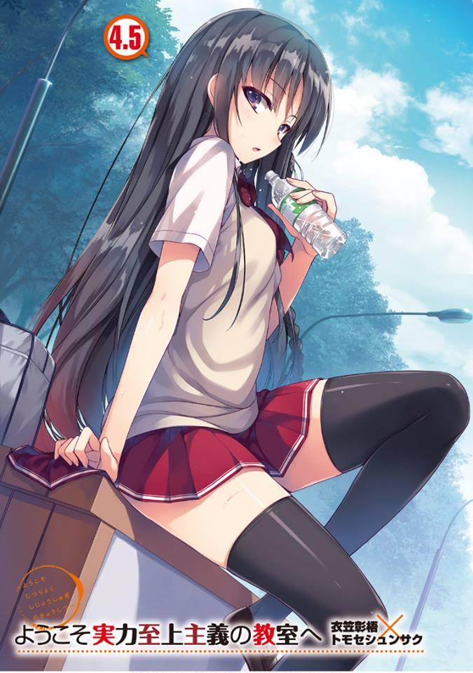
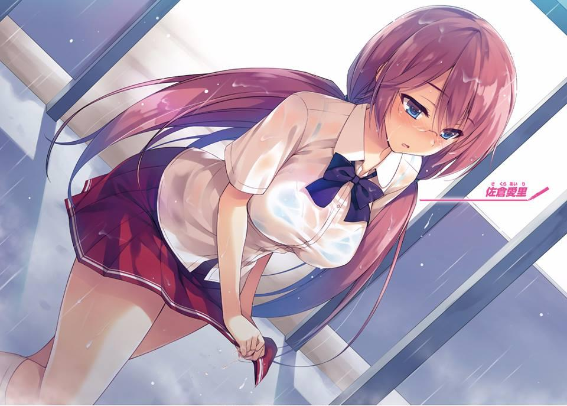
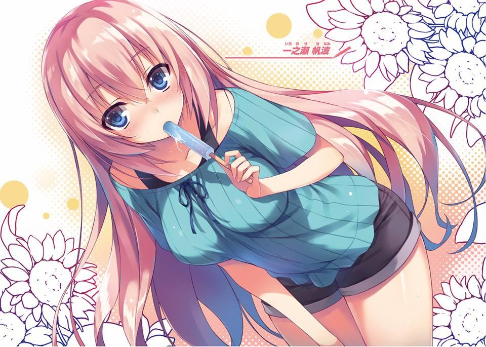
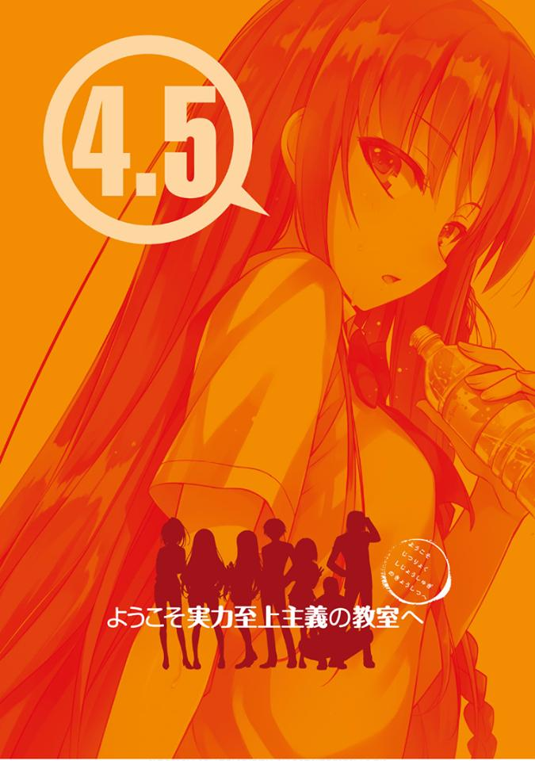
GLADHEIM
TRANSLATIONS
Youkoso Jitsuryoku Shijou Shugi no Kyoushitsu e Volumen 4.5
A PESAR DE TODO, LAS VACACIONES DE VERANO SE ACERCAN A SU
FINAL
El síndrome de Sazae-san.
Me pregunto si has oído hablar de esas palabras antes.
Si tuviera que explicarlo simplemente, es la desesperación de tener que enfrentar el lunes que llega después de ver a Sazae-san, el cual comienza en la tarde del domingo.
En la misma línea, cuando se acerca el final de las vacaciones de verano, muchos estudiantes también enfrentan una desesperación similar. Piensan en cosas como “si las vacaciones hubieran sido más largas” o “si hubiera podido divertirme un poco más”.
Pero yo no pienso de esa manera.
En la vida, el tiempo que tienes para divertirte sin reservas se restringe principalmente a tu vida estudiantil.
Suponiendo que la edad mínima de jubilación es a los 60 años y 18 es la edad en que uno ingresa a la sociedad, los años en que uno debe trabajar son 42.
Ese es un tiempo mucho más largo en comparación con los 12 años que lleva pasar de la escuela primaria a la graduación de la preparatoria.
Una vez que eso haya pasado, uno estará ligado por la sociedad y perderá la libertad. Y en algunos casos, uno sigue estando ligado a su trabajo incluso después de haber superado su edad de jubilación.
Por supuesto, hay personas que nacen libres de estas restricciones.
Algunos nacen de padres ricos y algunas veces tienen éxito como empresarios.
También existen atajos en la vida, pero las posibilidades de que sucedan son como las posibilidades de ganar la lotería y uno tiene que entender eso.
Como resultado, durante más de la mitad de sus vidas, la mayoría de la gente tiene que sacrificarse en nombre de contribuir a la sociedad.
Mirándolo desde la perspectiva de aquellos en la sociedad, ser un estudiante en sí es como disfrutar de unas vacaciones de verano para ellos. Sin embargo, hay muchos estudiantes que se vuelven adultos sin apreciar este hecho.
Y una vez que alcanzan la edad de 30 o 40 años, miran hacia atrás a esos momentos y piensan cosas como “Me divertí mucho en aquel entonces”.
Esta historia es la historia de estudiantes que vacilan entre ser niños o adultos.
Una historia pequeña, muy pequeña.
IBUKI MIO, SORPRENDENTEMENTE ES UNA PERSONA CON SENTIDO
COMÚN
Examen especial
Lo primero que se viene a la mente al escuchar esas palabras normalmente son exámenes escritos o pruebas prácticas relacionadas con deportes o algo parecido a eso.
Sin embargo, en la escuela a la que asisto, la Advanced Nurturing High School, los exámenes especiales no son cosas simples como esas.
Un examen especial que enfrenta a las clases entre sí en una prueba de supervivencia en una isla deshabitada, o un juego intelectualmente exigente que enfrenta a mentirosos contra mentirosos en un crucero. Esas pruebas que superan la lógica continuaron una tras otra en el transcurso de las vacaciones de verano.
Para alguien de primer año como yo, los días de breve descanso de todo eso, incluyendo el día de hoy, son solo siete. Una vez que se acabe ese tiempo, se reanudará el segundo semestre.
Y, por cierto, la manera en que pasé esos días de descanso es bastante simple.
Simplemente paso día tras día sin llamar a nadie ni hablar con nadie.
En otras palabras, es muy solitario.
— De todos modos no me importa.
Ya estoy satisfecho con solo tener mi libertad, no deseo ninguna felicidad extra.
No es como si quisiera amigos propios. Pero recientemente, había comenzado a pensar algo así.
Cuantas más conexiones forje con las personas, más son las personas con las que podría pasar el rato.
Pero eso en sí mismo es problemático. Si un amigo mío fuera a invitarme, existe la posibilidad de que me llene de alegría.
Pero incluso en la soledad, hay cosas que aún puedo hacer.
De hecho, estoy haciendo una de esas cosas ahora, usando mi teléfono para acceder a mi saldo de puntos.
Vi en la pantalla que actualmente tenía 106,219 puntos. De ellos, transferí 100.000 puntos a uno de mis compañeros de clase, Sudou Ken. Y no mucho después, la persona que recibió la transferencia, Sudou, me llamó.
— Hey, Ayanokouji. ¿Qué estás haciendo ahora? —pregunta.
— Nada en particular. Me preguntaba qué cenar.
— Ya veo. Comí un poco de Sasami justo ahora. El sabor es simple y es fácil que te canses de él, pero para eso, puedo cambiarlo un poco. Puedo hornearlo o hervirlo... pero qué demonios, eso no es importante. Lo que quería preguntar era sobre la adivina — dijo Sudou.
¿Adivina? Esa es una palabra que no esperaba que Sudou dijera.
Normalmente Sudou, que piensa en términos de blanco y negro, prefiere cosas que son simples como el Sasami que acaba de comer. Nunca esperé que Sudou hablara de cosas tan abstractas como la adivinación.
— El caso es que parece que una adivina muy precisa está aquí en el Centro Comercial Keyaki solo durante las vacaciones de verano. Parece ser una tendencia entre los estudiantes de último año. Incluso durante mi club, todos hablaban de esa adivina. Ya que obtuve algunos “puntos extra” y tengo ganas de divertirme allí, vamos juntos. Por supuesto que te invitaré.
—me dijo Sudou.
Fue una invitación a pasar el rato con mi compañero de clase, Sudou.
Hablando del Centro Comercial Keyaki, parece ser esa instalación que los estudiantes usan a menudo. Dado que los estudiantes están obligados a vivir en los terrenos de la escuela, es necesario preparar las instalaciones requeridas por ellos.
Pero no es tan diverso e ilimitado como el mundo exterior. Por ejemplo, no hay conciertos de ídolos, parques de atracciones ni zoológicos. Como el área es limitada, las instalaciones también son limitadas. Para decirlo simplemente, es un mundo pequeño.
Y en una escuela así, siempre que sucede algo nuevo, termina siendo una moda entre los estudiantes, pero nunca esperé que fuera la adivinación. Era inesperado.
Pero aun así, respondo con tono positivo.
Como nunca antes nadie me había invitado a salir con ellos, me alegré tanto que no pude detener estos sentimientos y rápidamente le respondí.
— ¿Cuándo vas a ir?
— Mañana por la mañana. Aparentemente abre a las 10 pero si no vas temprano parece que estarás atascado en la cola, deberíamos estar allí a las 9:30.
Sudou me dice.
Parece que Sudou ya tiene el cronograma planeado en su cabeza, eso significa que nos ahorrará tiempo.
— Yo estoy bien, pero ¿y tu club? —Le pregunté.
— Sí. El torneo del que te estaba hablando hace un momento terminó justo ahora, así que está bien. Hemos estado entrenando todos los días, hasta que colapsamos, ya sabes. Si no nos dejan descansar de vez en cuando, nuestros cuerpos no resistirán —responde Sudou.
Sudou estuvo en un torneo de baloncesto hoy. A pesar de que había estado practicando tranquilamente por su cuenta todos los días, estaba preocupado por los resultados del torneo. Y otra cosa también.
— ¿Tuviste algún “problema”? —Le pregunté.
Me aseguré de enfatizar la palabra “problema” para que Sudou entendiera el significado de esto rápidamente.
— Sí. Fue bastante difícil, con directores y entrenadores allí. El nivel de supervisión no se puede comparar con los días de la secundaria. Ni siquiera se nos permitía conversar con estudiantes de otras escuelas aparte del contacto durante la competencia. Las restricciones iban tan lejos hasta para ir al baño. Pensé que era imposible —Sudou me dice.
A pesar de que las actividades del club eran técnicamente fuera de la escuela, parece que la escuela todavía las controla severamente.
— Pero de todos modos, lo logré. Lo superé de alguna manera con agallas —
él dijo.
— Ya veo. Eso es un alivio. ¿Qué hay de Yamauchi? —pregunté.
— Me aseguré de borrar la información, así que no te preocupes. Al menos entiendo eso.
Incluso la vida escolar de Sudou depende de esto, por lo que no hará nada precipitado. Pero por las dudas, debo reunirme con Yamauchi directamente para confirmar que los datos han sido eliminados, solo para estar seguros.
— Por cierto, ¿lograste jugar en este importante partido?
— Sí. Y entre los de primer año, yo fui el único que pudo jugar. Incluso recibí elogios por ello. Pero perdí el partido, así que no hay mucho de qué enorgullecerse —dijo Sudou.
No sé mucho sobre esto, pero poder debutar en un juego como estudiante de primer año en sí mismo es algo digno de alabanza.
Y por las palabras de Sudou, sentí más una sensación de aprobación que una de frustración. Por el contrario, parece que constantemente está logrando resultados en el club de baloncesto. Probablemente estuvo practicando muy duro para este torneo.
Especialmente porque los de primer año estaban fuera de la escuela en los exámenes especiales, así que para compensar eso, debe haber estado practicando más duro que cualquier otro estudiante.
— Entonces, ¿qué vas a hacer? La adivinación. ¿Vas a ir o no? —Sudou me preguntó.
— No hay nada que haya planeado, así que supongo que me iré.
Una vez que acepté ir, Sudou cambió la conversación y me dijo:
— Asegúrate de invitar a Suzune también. Definitivamente la tienes que invitar. ¿Entiendes? —Dijo Sudou.
— ...Ya veo
Parece que Sudou nunca tuvo intención de pedirme que fuera a ver a la adivina, sino que simplemente quería ir con Horikita. Pero debe haber sentido que incluso si la invitaba, las posibilidades de que aceptara eran bajas, por lo tanto, confiaba en mí.
— Solo para que lo sepas... no creo que le interese la adivinación —le dije.
— Aun así, asegúrate de invitarla. Esta es la única especialidad en la que eres bueno ¿no? — me dice Sudou.
¿Qué especialidad? Quiero que deje de usarme como máquina para invitar a Horikita.
— Trataré de preguntarle, pero no esperes demasiado —le dije.
— Intentar no es lo suficientemente bueno —respondió Sudou.
— ¿No es suficiente?...
Sentí que las palabras de Sudou, que contenían un poco su ira, tenían peso en ellas. Está planeando salir mañana con el supuesto de que Horikita definitivamente estará allí.
— Definitivamente tienes que hacerlo. Si no invitas a Horikita, no tiene sentido
—dijo.
— Incluso si dices eso, no conozco sus planes para mañana. Y no sabemos si ella está interesada en la adivinación o no. ¿No es más fácil invitarla a ir de compras o ver una película? —pregunté.
— No te preocupes. A todas las mujeres les gusta la adivinación —dijo Sudou.
Creo que eso es solo absolutismo...
Pero de todos modos, las chicas tienen la imagen de que les gusta la adivinación. Pero cuando se trata de Horikita, no puedo imaginarla actuando como una chica normal y disfrutando de la adivinación.
— ¿Entiendes? Si la invitas o no, asegúrate de decirme. Absolutamente, ¿lo entendiste? —Sudou me dijo.
Y después de decir eso, Sudou cortó la llamada.
Pensé que era extraño que Sudou me invitara a ver a una adivina, parece que esto es lo que realmente quería.
Aunque me sentí un poco decepcionado, cambié rápidamente mis sentimientos.
Mejor llamo a Horikita.
Si Sudou se entera más tarde que ignoré su petición, será problemático para mí también. Antes de que me olvide, llamo a Horikita de inmediato.
Y pronto, Horikita contestó la llamada.
— Hola, Horikita, ¿te gusta la adivinación? —le pregunté.
A todas las mujeres les gusta la adivinación. Si hay una mujer capaz de destruir mis nociones preconcebidas sobre las chicas en general, es indudablemente esta mujer.
— Dices las cosas más extrañas como saludo —dijo Horikita.
En efecto. Pero para mí, no tengo nada más para iniciar la conversación, por lo que no había otra opción.
— Sería muy útil si me respondieras —le dije.
— ¿Entonces eso significa que si no te respondo en absoluto, existe la posibilidad de que no seas salvado? —ella pregunta.
No esperaba que respondiera así, pero existe la posibilidad de que no me salve si no responde. Me vino a la mente la imagen de Sudou haciéndome en una llave de lucha en la cabeza.
— Entonces, ¿me vas a salvar? —le pregunté.
— Si no te importa deberme una.
Así que le deberé una solo por responder si le gusta o no la adivinación ¿eh?
Resistí el impulso de mover los dedos y terminar la llamada, pero tengo que aguantar, después de todo, la cara enojada de Sudou apareció en mi mente.
— Por favor, considéralo así —le dije.
Después de darse cuenta de que su respuesta vale algo, Horikita levantó la voz ligeramente y respondió.
— Veamos... no estoy muy entusiasmada con eso, pero sería mentira decir que no me gusta —me respondió.
Inesperado, inesperado. Horikita me había respondido como si aprobara la adivinación.
— ¿Quizás alguna vez te han dicho tu fortuna? —le pregunté.
— Por supuesto que no. Es solo que he visto la fortuna en las noticias todas las mañanas.
Tal vez ella está hablando sobre la adivinación por el mes de cumpleaños que aparece en las noticias.
No me puedo imaginar que Horikita se cambie de ropa o compre accesorios después de escuchar que su color de la suerte es rojo en una pantalla de televisión.
— ¿Eres adicto a la adivinación? —pregunta.
— No, no es así. Ha habido rumores esparciéndose recientemente, ¿has oído hablar de esa adivina?
— ¿Adivina?
Silencio, como si hubiera recordado algo, y quizás recuerde algo, Horikita pronto responde con tono convencido.
— De hecho, parece haber mucho alboroto. He oído hablar de eso —dijo.
— Sentí un poco de curiosidad al respecto. Dicen que es muy precisa, quería ver cuán exacto es en realidad. Pero no puedo creer que la adivinación sea tan precisa.
Esperaba que estuviera de acuerdo conmigo, pero una opinión diferente llegó del otro lado del teléfono.
— ¿Es eso realmente cierto? Creo que una persona con poder real puede ser precisa —dijo Horikita.
— No, no. Solo un esper o algo así puede ser tan preciso —respondí rápidamente.
Inesperadamente Horikita parecía creer en eso.
Cosas como predecir el futuro de una persona a partir de su cara, manos o fecha de nacimiento. No creo en cosas tan poco realistas.
— No es así. La adivina no tiene poder para adivinar el futuro. ¿No es obvio?
Es tan absurdo como alguien que cree que existen fantasmas. Pero a diferencia de los psíquicos, los adivinos tienen acceso a una gran cantidad de tus datos pasados En otras palabras, basan sus predicciones en los patrones de un ser humano, por lo que su habilidad de adivinar esas cosas de sus clientes es realmente alta —me dijo Horikita.
Entonces ella no es solo una chica soñadora sino que en realidad tiene una respuesta basada en teoría.
— En otras palabras, un poder derivado de la lectura en frío, ¿eh?
— Conoces algunas cosas descaradas —Horikita respondió con un tono divertido—. No podemos vernos objetivamente, pero los adivinos, en un corto período de tiempo, pueden extraer información sobre ti y saber incluso cosas que la persona en cuestión no se da cuenta. Y eso es lo que queda como resultado de la adivinación. ¿No podríamos pensar de esa manera? —Dijo Horikita.
Lectura en frío.
Literalmente significa leer la mente de alguien sin ninguna preparación previa.
Es una técnica que extrae información de una persona a través de una conversación informal para hacerles pensar que sabes más acerca de ellos de lo que realmente lo haces.
Usar habilidades de “observación” y “visión” para obtener información sobre tu objetivo. Y les haces creer que puedes ver el futuro y el pasado usando palabras magistralmente.
Es fácil de decir, pero en realidad hacerlo mientras se evita la desconfianza del objetivo y hacer que crean en él requiere un alto nivel de habilidad.
— Me he interesado un poco.
— Estoy contenta. Creo que será bueno que vayas —dijo Horikita.
— Entonces, ¿por qué no vienes? —le pregunté.
— ¿Estás bromeando, verdad? —responde.
— Estoy hablando en serio.
— Me niego —dijo.
Intenté invitarla hábilmente a través de nuestra breve conversación, pero ella lo rechazó brillantemente. Pero tengo mis propias razones para no poder aceptar simplemente su rechazo.
— Soy un aficionado cuando se trata de adivinación, así que creo que es mejor tener a alguien como Horikita conmigo —le dije.
— Lo siento, pero pasaré. Soy del tipo que es mala tratando con las multitudes, tú también lo sabes —responde Horikita.
De hecho, eso es verdad. Naturalmente, habría una gran cantidad de estudiantes apiñados alrededor de la adivina que resulta ser el tema de moda en este momento.
Incluso existe la posibilidad de que no sean solo estudiantes sino también adultos los que vayan. Ciertamente no puedo imaginar que Horikita esté en una multitud así.
Traté de reconfirmarlo con ella, pero incluso si insisto, terminaré despertando sus sospechas.
En cuanto a mí, si realmente entendiera las palabras de Horikita, ya no habría ninguna razón para insistir. Estoy seguro de que Sudou no causará un gran problema. Tal vez.
Una vez que me rendí en invitarla rápidamente corté la llamada. Envié un mensaje breve a Sudou por el chat. Por supuesto, inmediatamente se registró como “leído” y palabras insatisfechas regresaron a mí.
Sudou había respondido por correo [Entonces renuncio].
Como había pensado, mi existencia solo era necesaria para invitar a Horikita. Y
como había fallado, ya no tenía más uso para mí.
Pero debo admitir que sería extraño que dos hombres vayan juntos a una adivina.
Pero aun así...
— ¿Adivinación, eh? —Murmuré.
Al principio no me interesaba, pero después de mi conversación con Horikita me interesé un poco.
Supongo que iré a echarle un vistazo mañana.
*****
— Lo pude haber arruinado...
Lo sabía, pero una mañana de finales de agosto atacada por una ola de calor lo convirtió en un infierno ardiente. Incluso podía ver un espejismo formarse y fluctuar suavemente sobre el concreto que se encuentra cerca de los árboles al borde del camino.
Por supuesto, las instalaciones de la escuela tienen aire acondicionado, por lo que no sentimos calor. En los corredores, en los vestíbulos o en nuestras habitaciones. Sin embargo, cuando se expone directamente al sol, uno comienza a sudar instantáneamente.
Así que así es como los humanos mueren.
Mientras pienso en cosas así, intento desesperadamente encontrar algo de sombra.
Afortunadamente para mí, la escuela se jacta de sus grandes terrenos que tienen bastantes árboles plantados. Gracias a eso, no hay escasez de sombras que obstruyan la luz del sol. En este momento son 9:30, antes de que los estudiantes comiencen sus actividades.
Me dirijo hacia donde se encuentra la rumorada adivina. Parece que comienza su adivinación a las 10:00, pero no pienso quedarme por mucho tiempo.
Simplemente le haré adivinar rápidamente mi fortuna e inmediatamente me iré.
Ese es mi objetivo.
Pero a medida que me acercaba a mi destino, me di cuenta de que mis expectativas habían sido traicionadas.
En el centro comercial Keyaki, que esperaba que estuviera en su mayoría vacío, una multitud de estudiantes con vestimenta de verano ya estaban allí. Si bien esperaba que no todos estuvieran aquí por la misma razón que yo, es poco probable que así sea.
Por ahora, para escapar del infierno ardiente de afuera, decidí refugiarme dentro de Keyaki. Dado que el evento parece estar ubicado en el quinto piso, busqué un elevador cercano.
— Geeh...
Esa voz se escapó inesperadamente de mí.
Porque cerca de diez estudiantes ya formaban una multitud frente al ascensor.
Me pregunto si las personas con la misma deficiencia de comunicación que yo también podrían entender.
Cada vez que tomo el ascensor solo, soy el tipo de persona que pulsa repetidamente el botón “Cerrar” apenas entro. Pero no soy tan bueno para tomar el ascensor con un grupo grande de personas de la misma edad que yo.
Necesitaré un poco de coraje para entrar con la multitud.
Puede ser un poco problemático, pero por ahora tomemos un desvío y elijamos otro ascensor en otro lugar. Hay otro ascensor en la dirección opuesta que los estudiantes no usan y se mantiene como reserva.
— Esto es tranquilizador... —murmuré.
Esto requirió un esfuerzo adicional de mi parte, pero estoy agradecido por la tranquilidad que me brindó. Es triste sin embargo.
Al llegar al quinto piso, busco rápidamente la ubicación de la adivina.
Y allí encontré una situación más desconcertante que la anterior.
— Solo hay parejas aquí.
Chico y chica. Grupos de dos en uno.
En otras palabras, una multitud compuesta principalmente de estudiantes en una relación de pareja. Por supuesto, hay grupos con solo chicos y grupos con solo chicas, pero son la minoría.
La adivinación estaba originalmente pensada para este tipo de cosas.
Solo adivinar la compatibilidad entre un novio y una novia no es algo tan especial en sí mismo. Sin embargo, es solo que me di cuenta de que este lugar es mucho más incómodo de lo que esperaba.
No hay muchas personas que vinieran por su cuenta. Más aún si solo es un chico como yo.
En cualquier caso, dado que ya hay una cola, decidí alinearme con ellos. Y
cuando lo hice, una mujer que parecía estar manejando la fila me llamó.
— Buenos días. ¿Tu pareja llegará después? —me preguntó.
— ¿Pareja? No, estoy solo —le respondí.
Por supuesto, debido a que las personas que nos rodean son principalmente parejas, es natural hacer esa pregunta, pero me gustaría que piense más sobre nosotros los solteros.
— Ummm... —quizás todavía tenga algo que decir, pero la mujer continuó con cara de disculpa —. Me temo que la adivinación de Sensei es solo para parejas... —me dijo.
— Entonces, ¿es imposible para mí solo? —pregunté.
Ella asiente levemente y señala hacia adelante.
No podía verlo bien a través de la multitud, pero había una nota que advertía sobre los requisitos.
“Los guiaremos como pareja. Tengan en cuenta este hecho.” Eso decía.
Razonable. No debería haber una persona sola como yo aquí. Como no me había enfrentado a una situación incómoda como esta antes, no se pudo evitar.
Parece que ahora mismo, estoy en una posición muy difícil.
Y también, ahora entiendo la razón por la que Sudou quería invitar a Horikita aquí.
En este formato de adivinación, él y Horikita tendrían mucho tiempo para hablar mientras hacían fila para la adivinación y podían pasar un largo tiempo juntos hasta que la adivinación termine.
— Eso también significa que nunca importé desde el principio —murmuré.
Habiendo comprendido todo esto, las palabras y el comportamiento de Sudou comienzan a adquirir un significado completamente nuevo. Que ni siquiera fui invitado en primer lugar. E incluso si lo hubiera sido, me pregunto si habría encontrado una excusa para deshacerse de mí.
Qué historia tan triste.
— Por cierto, la fila a tu lado es la misma, ¿no? —pregunté.
— ... Sí. Ukon-sensei solo dice la fortuna a parejas... —responde la empleada.
— Entiendo.
Incliné la cabeza hacia la empleada y salí de la cola.
Y los estudiantes, que ya estaban alineados detrás de mí, simplemente dieron un paso adelante.
Nunca esperé que este tipo de truco estuviera involucrado. En cuanto a mí, mi imagen de la adivinación era la de una mujer mayor a un lado de la calle contando monedas mientras hacía su trabajo, algo así. Pero recientemente, parece que este tipo de adivinación para las parejas también existe.
Pensé que no sería tan malo experimentar la adivinación al menos una vez, pero parece que no se puede evitar. No tiene mucho sentido tratar de invitar a Horikita a salir de nuevo, así que será mejor que me retire aquí silenciosamente.
— ¿Huh? ¿Así que me estás diciendo que no puedo entrar sola?
Parece que en la cola, a mi lado, hay otra víctima que vino sola, ya que se podía escuchar una voz que sonaba como si estuviera enojada.
Y cuando di una mirada compasiva hacia ella, mis ojos se encontraron con los de esa persona.
— Ah.
Esa breve respuesta vino de una persona que resultó ser conocida mía.
Cuando fingí no haberla visto e intenté irme, por alguna razón y al mismo tiempo, ella caminó en la misma dirección que yo. Aceleré mis pasos.
— Espera.
Tal vez pensó que estaba intentando huir (estaba intentando huir), pero ella me persiguió.
— ¿Hay algo con lo que te pueda ayudar? —le pregunté.
— ¿Dónde está Horikita?
Después de hacer esta breve pregunta, la chica observó rápidamente su entorno.
Ella era Ibuki Mio, una estudiante de la Clase C.
Ella también, como Sudou, parecía estar tratando de llegar a Horikita a través de mí. Sin embargo, a diferencia de Sudou, las acciones de Ibuki en este caso son razonables.
Es solo que sería una gran ayuda si pudiera llegar a Horikita sin necesidad de pasar a través de mí.
— No es que siempre esté saliendo con ella, estoy solo hoy —le dije.
— Ahh, ya veo.
En la prueba de la isla deshabitada, Ibuki fue enviada a la Clase D como espía e intentó esparcir caos en la clase. Luego peleó con Horikita, y desde entonces Ibuki ha sido antagónica de Horikita. Rivalidad sería la palabra más precisa para su relación.
Aunque su actitud fría habitual no ha cambiado, tiene un sentido de la moda bastante bueno y definitivamente deja una buena impresión. Si actuara un poco más madura, no me sorprendería si se hiciera popular.
— Normalmente, la adivinación de la fortuna se hace individualmente, ¿no?
No esperaba esto en absoluto, ¿no estás de acuerdo? —Ibuki me pregunta.
— Supongo que sí. Tenía ese tipo de imagen —le respondí.
— Entonces, ¿no le preguntaste a Horikita sobre esto? —preguntó.
Primero Sudou y ahora Ibuki. El tema de la conversación siempre es sobre Horikita, que ni siquiera está aquí.
— No lo hice. Si quieres hablar tanto con Horikita, ¿por qué no vas a verla tú misma? Dile que quieres que vayan a la adivina juntas —le dije a Ibuki.
— ¿Huh? Definitivamente no. No es como si tuviera algo de lo que hablar con ella.
Si ese es el caso, me gustaría que no hables de Horikita una y otra vez.
— Nunca estuve realmente interesado en la adivinación, así que no me arrepiento. ¿Y tú? —le pregunté.
— Estaría mintiendo si dijera que no me arrepiento... —me dijo Ibuki.
Parece que el requisito de pareja representa un problema difícil para ella, mientras negaba con la cabeza mientras expresaba su arrepentimiento.
— No puedo hacer otra cosa que rendirme. También soy mala para hablar —
dijo Ibuki.
Esa fue una respuesta que no fue realmente una respuesta en absoluto.
Dijo que era mala para hablar, pero a diferencia de Sakura, no parecía del tipo que tendría problemas para mantener una conversación normal. De hecho, ella es perfectamente capaz de hablar conmigo en igualdad de condiciones... o incluso menospreciarme.
— ¿Por qué no invitas a Ryuuen? —le pregunté a Ibuki.
Lo dije como una broma adicional, pero ella hizo una mueca de disgusto igual o incluso mayor que la de Horikita.
— Odio ver su cara incluso durante las vacaciones. Debes estar bromeando
—Ibuki me respondió.
— Pero estabas junto a él en el barco, ¿no? ¿No es normal pensar que ustedes dos son íntimos? —le pregunté.
— ... Eso es solo porque me sentí responsable de no descubrir al líder de la Clase D —Ibuki dijo.
Ella respondió débilmente.
Si lo que dice es cierto, eso significaría que Ibuki actuó junto con Ryuuen como un medio para tomar responsabilidad por su fracaso. Solo eso no me dio una idea completa, pero debe ser algo que solo la Clase C puede entender.
Aun así, en la primera parte del examen especial, la prueba de la isla deshabitada, Ibuki identificó exitosamente Horikita como líder de la Clase D, y no estaba equivocada en su evaluación. Si no hubiera interferido, sin duda habría hecho una gran contribución a la clase C.
— Quería preguntarte algo, pero durante la prueba en la isla, ¿quién era el líder de la Clase D? —Ibuki me preguntó.
— Eso me pregunto.
— ¿Eso me pregunto? No es como si no supieras —dijo.
— Incluso si lo supiera, no te lo diría. Pero realmente no lo sé. Creo que la mayoría de la Clase D también lo ignora, ¿no es así? Horikita se movía en las sombras, ella debe haberlo logrado de alguna manera y eso es todo lo que puedo decir de esto —le dije a Ibuki.
Ibuki me miraba como si viera a través de mí. Pero, no soy tan tonto como para ser descifrado por una observación tan simple.
— ... Bueno, si fuera así de fácil, no tendría que pasar por tantos problemas.
Ibuki se encogió de hombros como si se hubiera dado por vencida.
— Si Ryuuen no está bien, ¿por qué no invitas a chicas de tu clase? —Le pregunté a Ibuki.
— Si tuviera una persona así no estaría en este problema. No me gustan las chicas de mi clase —dijo Ibuki.
Parece que incluso sus compañeros de clase están incluidos en la categoría de personas que no le gustan.
Ibuki es como Horikita... o incluso peor en su naturaleza antisocial. En ese sentido, son idénticas. Y con algún catalizador, parece que podrían llevarse bien.
— Pero al igual que me estás hablando en este momento Ibuki, deberías poder hablar con cualquier otra persona. No me da la sensación de que seas particularmente mala con la gente —le dije.
— Eso no es verdad. Cuando hablas conmigo tienes esa sensación ¿no? Un sentimiento espinoso —respondió.
— Supongo que es verdad.
Cada vez que hablaba con Ibuki, me daba la sensación de que estaba siendo perforado por una sierra afilada. Así es como probablemente Ibuki expresa su distancia con los demás.
Estoy seguro de que este sentimiento también se transmite a los otros estudiantes.
— Haga lo que haga, el estado de ánimo siempre termina así de mal.
¿Entiendes? —dijo Ibuki.
En otras palabras, porque ella es mala para socializar, no puede invitar a sus compañeros de clase.
Todavía está en duda si “mala para socializar” es apropiado o no, pero debe ser un hecho que Ibuki ve incluso a sus compañeros de clase como antagónicos.
Incluso puedo imaginarla desafiando a la adivina con esa actitud testaruda suya.
— A pesar de que eres mala tratando con personas, es extraño que intentes que te digan tu fortuna.
— Ese es otro de mis problemas. Es como que te gustan los gatos pero también les tienes alergia. Ese tipo de cosas —Ibuki me dijo.
Eso debe ser realmente frustrante. Aunque a uno le guste algo, le resulta difícil aceptarlo o hacerlo, o algo así.
— Es increíble que fueras el espía en la clase D a pesar de que eres así —le dije.
A pesar de que siempre tuvo una actitud fría, nunca mostró ningún signo de incomodidad durante sus actividades de espionaje, ni una sola vez. Porque incluso los estudiantes de Clase D, sin sospechar de Ibuki, la acogieron.
— Eso y esto son diferentes. En cualquier caso, hablar con los demás me pone ansiosa. Y como me pongo ansiosa, me pongo nerviosa. No me gusta. Por eso no se puede evitar. No es como si fuera así porque me gusta. ¿Por qué estoy hablando contigo sobre esto? ¿Y si nos malinterpretan?
Ibuki detuvo la conversación mientras miraba hacia otro lado.
Pero esa también es mi línea.
Y antes de darme cuenta, la gente que nos rodeaba ya había avanzado en la fila y solo nosotros dos nos quedamos apartados. Los otros estudiantes pueden malinterpretarnos.
Pero aun así, ponerse nervioso después de estar ansioso, ¿eh? Entonces ahí está la raíz de su debilidad. Si eso es cierto, un método para contrarrestarlo podría ser inesperadamente fácil.
Hay un plan que contrarrestaría esta debilidad sin necesidad de descubrir las raíces de lo que la había angustiado en el pasado.
— Antes dijiste que era un asunto diferente cuando estabas espiando,
¿verdad? —le pregunté a Ibuki.
— Lo hice. Porque es un hecho.
— Entonces, ¿cuál es la diferencia entre ese momento y lo habitual? —
continué la pregunta.
Habiendo escuchado la pregunta, Ibuki reflexionó sobre la respuesta y guardó silencio por un momento. Respondió de una manera que se parecía mucho a ella.
— No lo sé. Las cosas diferentes son diferentes. Eso es todo —dijo.
Más que una respuesta, parece que ha renunciado a tratar de discernir la diferencia por completo.
— Parece que no lo has pensado mucho —dije.
— Obviamente, no noto esas diferencias triviales. Después de todo, estaba actuando —Ibuki me respondió.
— No, creo que es sorprendentemente simple. La diferencia entre hablar con los demás y actuar en ese momento es simplemente una cuestión de
“reconocimiento”, creo —dije.
— ¿“Reconocimiento”?
En respuesta a esa palabra que no esperaba escuchar, el interés de Ibuki debe haber despertado ya que se volteó para mirarme.
— Cualquiera se sentiría ansioso si se imaginara hablando con una persona cara a cara. Pero, ese nerviosismo es solo porque eres consciente de ello, si hay una actuación involucrada o no es irrelevante —le dije a Ibuki.
Por ejemplo, alguien que es malo para tratar con personas del sexo opuesto, incluso si se convence a sí mismo “voy a convertirme en alguien normal”, y va a citas en grupo y cosas así, no hay garantía de que su ansiedad no le impida hablar con elocuencia.
Como resultado, no podría ejercer más poder de lo que normalmente lo hace. Y
si puede hablar hábilmente a pesar de eso, eso solo significa que desde el principio, siempre tuvo esa capacidad en él.
Todo lo que se necesita es considerar las habilidades de comunicación y el atletismo como lo mismo. Su talento y habilidad que ha cultivado se prueban en ese sentido.
En otras palabras, Ibuki tiene la “capacidad de hablar con los demás”, pero simplemente carece de la capacidad para “llevarlo a cabo correctamente”.
— Hasta ahora, has estado proyectando tus delirios sobre las personas que conoces, y cuando te encuentras cara a cara con ellos te paralizas. Eso se convierte en ansiedad y como resultado, no puedes hablar bien con ellos,
¿no es así? —le dije a Ibuki.
— ¿Qué se supone que significa eso? Si se trata de alguien con una gran capacidad de comunicación ni siquiera se daría cuenta. Pero normalmente cuando te encuentras cara a cara con una persona, cualquiera se pondría ansioso, ¿no? —Ibuki responde.
— Naturalmente, yo también soy igual, pero estar ansioso incluso con los comerciantes es algo exagerado. Por ejemplo, ¿aún te sentirías ansiosa si estás hablando con un empleado de una tienda de conveniencia? —le pregunté a Ibuki.
— ¿Huh?
— Por ejemplo, encontrarte cara a cara con el empleado en una tienda de conveniencia a la que normalmente vas. ¿Tiene una tarjeta de puntos?
¿Le gustaría que lo calentáramos? ¿Te pones ansiosa cuando el empleado dice esas palabras?, seguramente no.
— Eso es... bueno —murmuró Ibuki.
Al final, te vuelves consciente de la persona con la que estás hablando y terminas ansioso.
Me pregunto qué van a pensar de mí, quiero que me recuerden a menudo, me gustaría que sean buenas personas. Es porque uno piensa cosas así empieza a estar ansioso.
Pero la Ibuki que se infiltró en la Clase D seguramente no tuvo tiempo de pensar cosas así. Había estado ocupada interpretando a la víctima y no tenía tiempo para ser consciente del hecho de que quería hablar con los demás.
Es por eso que sin siquiera tener que pensar, fue capaz de llevarlo a cabo. Eso es porque al dejar salir sus sentimientos y dejarlos desbordarse como es habitual, fue capaz de convencerlos de su enfrentamiento con la Clase C.
— Ahora que lo dices, eso es verdad... —murmuró Ibuki.
— Es inevitable que te sientas ansiosa, ya que es natural tener la impresión de que estarás cara a cara con la adivina, pero al no pensar demasiado en ello, eso ayuda a aliviar algo de tensión, ¿no? —le dije a Ibuki.
— ... Ya veo. Oye, ¿por qué diablos tengo que ser sermoneada sobre esto por ti?
Una vez que Ibuki notó su alivio, me miró como si estuviera a punto de saltar sobre mí.
— Una vez que has sido un solitario el tiempo suficiente, notas pequeños detalles como ese. Comienza cuando empiezas a preguntarte por qué no puedes hacer amigos, y como dije antes, piensas en la diferencia entre las personas con las que te pones nervioso y con las que no. Y luego terminas pensando de dónde viene la gente y adónde van —le dije a Ibuki.
— Terrorífico... pareces del tipo que se convertirá en un asesino en serie en el futuro... ¿eres siempre este tipo de persona? —Ibuki me pregunta.
— ... bueno algo así —respondí.
Pensé hacer sonar esto como un profundo reflejo mío, pero parece haber tomado un extraño giro. Puede que le haya dado la impresión de que soy un chiflado.
— Volveré por ahora. ¿Y tú? —le pregunté a Ibuki.
— Creo que volveré también. No parece que me digan mi fortuna estando sola. Estaba interesada en Tenchuusatsu.
— ¿Tenchuusatsu?
Respondí sin pensar a esas palabras que normalmente no escucharías.
— ¿Viniste aquí sin siquiera saber eso? —Ibuki suspiró con resignación.
Pero incluso si dice eso, genuinamente soy un principiante en la adivinación.
Acabo de llegar aquí con una vaga idea de que mi fortuna sea dicha libremente.
— Si tengo que decirlo simplemente, es la adivinación en la que te dicen qué días son desafortunados para ti —Ibuki me dijo.
He oído que el mundo de la adivinación es profundo, pero no sabía que era posible decir la fortuna de un objetivo específico.
Desde la perspectiva de un ameteur como yo, cosas como “usar el color rojo” o
“tener cuidado con la pérdida de sus pertenencias este mes” eran toda la extensión de la adivinación. Pero por lo que Ibuki me está diciendo, parece que no se limita a eso.
— Estaba esperando eso, de verdad. Nunca pensé que era solo para parejas
—Ibuki dijo mientras miraba la larga cola con una expresión de consternación.
— Pero mirando desde la perspectiva de los estudiantes, usar la adivinación para asuntos amorosos no es extraño, ¿verdad? ¿Este Tenchuusatsu?
También debe haber gente interesada en entre quienes vinieron aquí —Le respondí.
— Aun así, es imposible tan pronto como ponen la restricción de pareja —
Ibuki dijo.
Y con eso, sin siquiera despedirse, Ibuki se fue.
*****
cuando lo hice, resultó ser un tema extremadamente profundo.
Parece que justo antes de 1980, con el público cada vez más consciente de su existencia, Tenchuusatsu estaba en el centro de atención.
Sin embargo, a medida que su popularidad crecía, su credibilidad también se puso en tela de juicio.
Hubo incluso un caso en las noticias de una famosa adivina obligada a retirarse después de revelar el funcionamiento de Tenchuusatsu.
No iré tan lejos como para decir que la adivinación en sí misma no tiene sentido, pero obsesionarse con ella o creer demasiado puede convertirse en un problema.
Pero por otro lado, también se podría decir que la adivinación es tan encantadora como para atraer la atención de tanta gente.
Es un tema dominante, e incluso hoy en día, si lo enfocas desde la perspectiva de alguien que cree, tiene una cantidad considerable de precisión.
Ahora sabiendo esto, sentí una sensación de curiosidad en mí. Como era de esperar, no puedo descifrar hasta qué punto estos artículos que encontré en la red explican la verdad del asunto.
Debería ser imposible ver el futuro o a través de una persona con la adivinación.
Esa es precisamente la razón por la que quería que me dijeran mi fortuna una vez, para discernir su credibilidad. Para que pueda concluir que es simplemente una extensión de la lectura en frío.
— Me pregunto si está limitado solo a este mes —murmuré.
Una vez que lo investigué, parece que cuando finalicen las vacaciones de verano, la adivina se irá y todavía no se sabe cuándo volverá. Dependiendo de las circunstancias, es posible que ninguna persona relacionada con la adivinación visite nuevamente esta escuela.
— Pero incluso si digo eso...
No tengo a nadie a quien invitar. Estoy acorralado en este momento.
Horikita probablemente me rechazará nuevamente y no tengo el coraje de invitar a Kushida.
Estoy seguro de que Sakura estaría dispuesta a acompañarme, pero si la llevo a un lugar lleno de parejas, puedo hacer que se sienta incómoda.
Aparte de eso están Sudou, Ike o Yamauchi. Ese grupo de chicos. Pero probablemente no quieran pasar los días restantes de las preciosas vacaciones de verano yendo a una adivina con otro hombre.
— ... Jaque mate, ¿eh? —murmuré.
Una respuesta simple llegó.
En mis limitadas relaciones interpersonales, no importa cuán imposible me parezca. En primer lugar, no me gusta el tipo de adivinación solo para parejas.
Casi podrías decir que es el mismo tipo de pensamiento que Ibuki.
Para aquellos genuinamente interesados en la adivinación, sería una gran barrera. Y así, detuve mi búsqueda en línea.
*****
Probablemente sea solo porque estaba libre todos los días. No hay otra razón más que eso.
— Ahh.
Sin embargo, otro extraño encuentro. Al mismo tiempo y en el mismo lugar, volví a encontrarme con Ibuki.
— ¿Por qué viniste de nuevo? ... y solo además —Ibuki preguntó.
Ibuki se abraza mientras me mira con expresión de disgusto.
— Lo mismo digo. Te devolveré la pregunta —respondí.
— Dijiste que te gustaba la adivinación, ¿no? Pensé que tal vez intentarías que te dijeran tu fortuna incluso si estás solo. Eso es todo.
Es una especie de renegociación en ese momento, o tal vez llegó esperando que la situación haya cambiado. O algo por el estilo.
Me pregunto si a Ibuki le gusta mucho la adivinación. Empecé a sentir ganas de saber qué parte de la adivinación le gusta en particular.
— Esta es una pregunta directa, pero Ibuki, ¿eres del tipo de persona que cree en la adivinación? —le pregunté.
— ¿Está mal si creo en eso?
— No, no estoy diciendo eso... pero no es algo en lo que puedas creer de repente ¿cierto?
No es que todos entiendan que la adivinación es una aplicación de la lectura en frío, como lo hace Horikita. En otras palabras, hay muchas personas que creen en este misterioso poder.
— Es algo que la gente interesada en la adivinación a menudo piensa primero, pero si no puedes dejar de lado ese pensamiento, sería mejor que no te interesara en absoluto —Ibuki dijo.
— ¿Estás diciendo que los que no creen no tienen derecho a la adivinación?
—le pregunte.
— Eso no está del todo bien... déjame decir esto, no creo incondicionalmente en la adivinación. Es solo que las personas que son escépticas desde el principio no pueden obtener nada de esto —Ibuki continúa—. La gente que se burla de la adivinación está llena de contradicciones. Muchas personas normalmente no creen en la existencia de un dios. Pero cuando están en problemas, a menudo es ese dios al que rezan.
Una buena analogía.
Dios no existe, los fantasmas no existen. Las personas que a menudo hacen declaraciones como esa le rezan a Dios.
Visitan los santuarios el día de Año Nuevo y rezan por una vida sana, un negocio próspero y la realización en el amor. Incluso si reemplazas eso con la adivinación, sigue siendo lo mismo. Lo que realmente crees y lo que quieres son cosas diferentes. Nadie puede negar eso.
Pero, sí, si pienso en esas cosas, de hecho puedo entender lo que quiere decir Ibuki.
Pero la adivinación y creer en dioses normalmente siguen siendo diferentes. Es porque la adivinación la hace un humano que existe como tú. Es natural ser escéptico hacia algo así.
— ¿Entiendes? —me pregunta.
— Sí. Fue fácil de entender.
Por supuesto, todavía tengo mis dudas, pero entendí el punto que Ibuki estaba tratando de mostrar. Y ahí es donde le hice una propuesta.
— Oye, esta adivinación requiere ser pareja, pero no es que lo único que estén adivinando sea sobre el amor, ¿verdad? —le pregunté.
— Naturalmente, sí —Ibuki dijo.
— En ese caso, ¿por qué no ignoramos quién es nuestro compañero y vamos a que nos digan nuestras fortunas? Tú y yo estamos genuinamente interesados en la adivinación. En cualquier caso, si es una relación que no seguirá después de esto, no creo que haya ningún problema —le propuse a Ibuki.
Yo mismo no siento nada más que una emoción vacía hacia Ibuki. No siento nada particularmente bueno o malo hacia ella, casi como una primera impresión.
— No me importa... me gustaría que me digan mi fortuna también. Pero,
¿estás de acuerdo? —Ibuki me pregunta.
— Horikita es solo una amiga para mí —le respondí.
— Eso no es lo que quiero decir. Desde la prueba de la isla, todavía hay estudiantes que guardan rencor —dijo.
Parece que, a su manera, Ibuki está cuidando de mí. Si me vieran junto a ella, mis compañeros de clase también podrían guardarme rencor, así que parece que Ibuki está preocupada por mí.
— No creo que debas preocuparte por eso en absoluto —le dije.
Y mientras le respondía, Ibuki inclinó la cabeza con curiosidad.
— No entiendo por qué respondiste así.
— Si esta fuera una escuela donde todos se llevan bien, tus acciones serían una violación de la moral. Pero a esta escuela solo le importa la “habilidad”
y eso es todo, y además, fue un examen donde las clases competían directamente entre sí. dependiendo de la situación, también es posible realizar actividades de espionaje o sabotaje. ¿Estoy equivocado? —le pregunte.
— Hay quienes no estarán satisfechos con esa lógica. No es como si todos fueran tan flexibles —me respondió.
— No creo que la gente así tenga las calificaciones necesarias para inscribirse en esta escuela.
Habiendo dado mi opinión honesta, Ibuki se cruzó de brazos y pareció pensarlo un poco.
— Eres sorprendentemente descarado —Ibuki finalmente me dijo.
— Sin embargo, soy un fracaso de estudiante. No me interesa subir ni bajar.
Simplemente me aferro a las faldas de una estudiante como Horikita y lo considero afortunado —le dije a Ibuki.
Desde la perspectiva de alguien que intenta confiar solo en sí misma como Ibuki, lo que acabo de decir habría sido una historia para reír. Pero Ibuki ni se rió ni se burló de mí.
— Esto no es fuera de lo común. En primer lugar, todos los que se inscriben en esta escuela solo miran los privilegios para cuando se gradúen. Nadie hubiera esperado terminar en una competencia como esta. La mayoría de las personas encontraría esto difícil —me dijo.
Parece que los estudiantes de la Clase C no son tan diferentes de la Clase D.
Si ese es el caso, Ibuki, que llamó la atención de Ryuuen y que fue asignada para espiar nuestras actividades debe estar en lo alto de la jerarquía de la Clase C.
Como ella le presta bastante atención a su entorno, no es raro que actúe al lado de Ryuuen. Había dicho que solo estaba con Ryuuen por su fracaso, pero hasta cierto punto, está con él porque Ryuuen también confía en ella.
Con los dos convencidos, nos pusimos en la cola.
Y la empleada que había hablado conmigo ayer vino otra vez para confirmar que éramos de hecho una pareja y nos dio un boleto. Parece que hay 8 parejas antes de nosotros y tendremos que esperar.
— Parece que vamos a esperar un poco.
Si solo hay una adivina disponible por fila, si hubiera diez parejas eso nos obligaría a esperar más de una hora. Se está convirtiendo en una larga espera.
La única pregunta ahora es, ¿cómo vamos a soportar los dos durante más de una hora? No parece que pueda mantener una conversación por tanto tiempo.
— Ahh. No te preocupes por el silencio, nuestra relación es solo por la adivinación, así que no necesitas hablar inútilmente conmigo, ¿verdad? —
dijo Ibuki.
— Supongo que sí...
Parece que ella ha visto mis pensamientos. Eso me ahorra el problema.
*****
Ya era la tarde cuando escuché una pequeña voz que provenía del interior de las instalaciones colocadas temporalmente.
— Los he hecho esperar.
Al final, parecía que cada grupo tomaba alrededor de 15 minutos y terminé haciendo cola durante bastante tiempo.
Fue cuando comenzaba a no preocuparme más por la adivina de adentro, que una voz llegó de la sala detrás de la cortina.
Y cuando entré, adentro había un escenario que a menudo veía en la televisión.
La iluminación oscura en el interior era solo de unos 30 lux. Y añadido a eso, había un libro grueso, un martillo y una bola de cristal que también podría usarse para lanzarse y cuyo propósito no conocía.
La vieja mujer adivina en el interior tenía una capucha y no podía ver su expresión.
El ambiente de este lugar es de primera. Parece que la bola de cristal está brillando incluso ahora como si reflejara el futuro de Ibuki y el mío.
Y frente a la adivina, había colocados dos asientos redondos sin respaldos.
Supongo que es allí donde debemos sentarnos.
Y cuando los dos nos sentamos, la adivinadora simplemente se rió brevemente y su mano derecha se movió.
— Antes que nada, la paga —nos dijo la adivina.
Y una vez dicho esto, sacó un lector de tarjetas de debajo de la mesa y lo colocó sobre la mesa frente a nosotros.
Ante la atmósfera impresionante que casi desprendía la sensación de un museo de adivinación, artefactos de la civilización moderna apareciendo así emitían una sensación incongruente.
Por supuesto, no pensé que sería gratuito, pero de repente volví a la realidad.
— ¿Qué vas a adivinar para nosotros?
Antes de sacar su tarjeta de estudiante, Ibuki primero hizo esa pregunta.
— Tus estudios, trabajo, asuntos amorosos y todo lo que quieras.
La adivina respondió mientras se reía escalofriantemente con una sonrisa.
Ciertamente transmitía un sentimiento poderoso, pero más que una adivina, me pareció que era una bruja.
Pero la lista de precios colocada sobre la mesa realmente no está en concordancia.
Parece que los precios están separados en diferentes categorías. Las cosas que la adivina dijo hace un momento parecen estar incluidas en el “paquete básico”.
De allí, se divide en más paquetes. Y uno de ellos incluye Tenchuusatsu. Y entre otros que te permitirán ver hasta el final de tu vida. Y dado que la adivinación tiene el requisito de pareja, también hay muchos que se centran en el romance.
Este es solo mi pensamiento, pero si la adivinación resulta en una mala compatibilidad entre parejas, entonces me pregunto qué harían. Es solo que para cualquier paquete, se requieren más de 5000 puntos. Es bastante caro.
— Aun así... es caro.
Para un estudiante de la Clase D que lucha con el tema de los puntos todos los días, esto parece ser un gran gasto.
Pero incluso si digo eso, sería un desperdicio regresar sin tener la oportunidad de investigar a Tenchuusatsu.
Siempre existía la opción de simplemente escuchar los resultados de la adivinación de Ibuki y luego regresar, pero si lo hacía, no tendría forma de decir su exactitud de manera confiable.
Lo pensé cuando revisé mi saldo de puntos en mi teléfono. En la pantalla, se muestran mis puntos privados. El saldo que tenía actualmente era de aproximadamente 6 000 puntos, por lo que apenas puedo pagarlo.
— Simplemente iré con el paquete básico —Ibuki dijo inesperadamente.
A pesar de que ella le había profesado su agrado por la adivinación, no parece tener la intención de hacer el curso completo.
— ¿Qué vas a hacer? —me pregunta.
— El mismo plan que Ibuki.
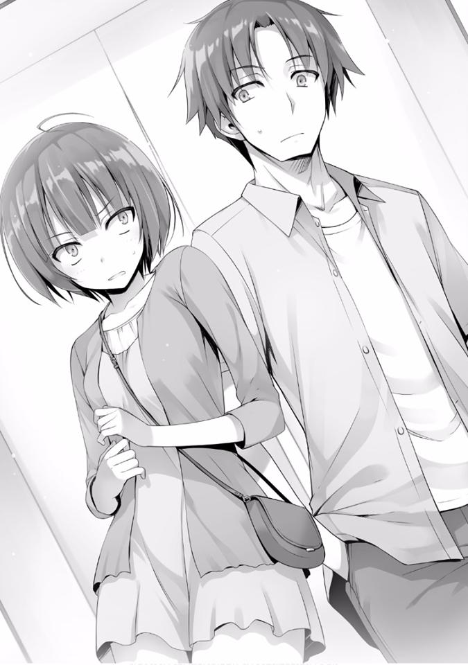
En este punto, parece que estoy ordenando una comida en un restaurante, pero dije eso y levanté mi tarjeta de estudiante. El sonido de la tarjeta siendo usada resonó y cierta cantidad de puntos se dedujo de mi tarjeta.
— Entonces comencemos con la dama aquí, ¿cuál es tu nombre? —preguntó la adivina.
— Ibuki. Ibuki Mio.
Ella respondió brevemente.
— Mi adivinación me permite ver la cara, las manos y los corazones de mi cliente. Y en medio de todo eso, podría ver algo que preferirías mantener en privado. ¿Estás de acuerdo con eso? —pregunta la adivina.
— Haz lo que desees —Ibuki respondió rápidamente.
Ibuki respondió que no estaría molesta por eso, independientemente de que lo creyera o no. Por debajo de su capucha, pude ver no solo la piel arrugada de la adivina sino también su aguda mirada.
Y luego, ordenando a Ibuki que extendiera ambas manos, comienza a hablar de los resultados de su adivinación lentamente.
— Comenzando con la lectura de la palma de la mano, vivirás una vida larga.
No puedo verte sufriendo enfermedades importantes... —habló.
Parece que la historia que uno suele escuchar al principio. Personalmente no entiendo cómo uno puede adivinar eso de las líneas de la palma de la mano.
Pensando que no tenía sentido, sentí que mi prejuicio quería negar la adivinación.
¿Tal vez la adivina está usando las estadísticas de su propia experiencia para adivinar esto? Si fuera yo, simplemente usaría la buena salud de muchos de los clientes para, por el color de su cara y eso, dar mis respuestas.
Y continuando, la adivina habló de estudios, suerte financiera y romance con respuestas inesperadas.
Mientras que uno normalmente estaría enojado con las palabras aparentemente falsas de la adivina, Ibuki continuó escuchándolas con una sensación de
satisfacción. No hubo muchas predicciones malas, en su mayoría predicciones de un futuro brillante para ella.
A veces le da advertencias, pero parece que no hay un riesgo particular para su vida y bienestar.
— Muchas gracias —dijo Ibuki.
Habiendo terminado la sesión de adivinación, Ibuki bajó la cabeza.
Parece ser que mi turno, donde podría entender mejor la adivinación de la fortuna, está por venir.
La adivina sigue el mismo procedimiento que usó durante su sesión con Ibuki.
Las respuestas para mi sesión fueron casi las mismas que las de Ibuki. Aunque las circunstancias pueden divergir, la conclusión es que las predicciones fueron en su mayoría cosas buenas por venir.
Sin embargo, me advirtieron que tuviera cuidado con la calamidad en algunas ocasiones. Me dieron ese tipo de conocimiento.
— ... Ya veo. Parece que has tenido una infancia bastante dura —me dijo la adivina.
Pero incluso si dices algo así, la mayoría de los niños experimentan cosas que consideran difíciles al menos una o dos veces en su infancia. Más aún si ese niño es un chico. De ser posible, me hubiera gustado que respondiera de manera más detallada.
Más importante aún, es un gran misterio por qué la adivina que se supone que habla del futuro está hablando del pasado.
Pero Ibuki a mi lado, sin interrumpir ni bostezar, escucha atentamente la adivinación. Quizás la adivinación de la fortuna se supone que es algo como esto. O tal vez como un ritual necesario, volvemos al pasado.
Ahh, la adivinación de verdad es así. En esta etapa, simplemente pensé eso.
Debido a que los humanos son criaturas sencillas, una vez que se les predice
“buena suerte”, encierran eso en sus recuerdos y aun si ocurre algo afortunado,
sin relación con la adivinación, sacan ese recuerdo y lo interpretan como “Ahh.
Entonces la adivinación de esa vez hablaba de esto”.
Pero en realidad es diferente, porque en la vida, es inevitable que todos experimenten buena fortuna y desgracia, así como felicidad y miseria.
— Esto es...
Una vez más, la adivinadora que parecía estar en medio de algún ritual, detuvo las manos.
— Eres el poseedor de un fatídico Tenchuusatsu —me dijo.
— Uwa... ¿en serio?
Las sorprendidas por el resultado no fui yo sino Ibuki y la adivina misma.
Tenchuusatsu era una palabra de la que ni siquiera yo era consciente hasta ayer, por lo que incluso si agregara otra palabra además de eso, solo me causaría más confusión.
— En pocas palabras, desde el momento en que naciste, has estado viviendo una vida de desgracias —Ibuki me explicó.
— Eso es, otra vez, algo increíble...
Sea o no una pura coincidencia, una vez más fue precisa. Es solo que la adivinación fue ambigua en lo que respecta a este asunto.
Porque si uno se ve a sí mismo de manera pesimista, no faltan personas que miren hacia atrás y piensen que sus vidas no han sido afortunadas. Pero si es el inusual Tenchuusatsu, sería un riesgo para la adivina decir eso también.
— Por cierto, ¿ese fatídico Tenchuusatsu va a continuar de aquí en adelante?
—pregunté.
— Hace un momento, esa chica dijo que significa vivir una vida de infortunios, pero eso está mal.
— Esa chica...
— Un fatídico Tenchuusatsu es poco común. Pero eso no significa que maldiga toda tu vida para ser desafortunado. De hecho, el flujo en sí es malo, no podrás recibir la bendición de una familia o padres. Pero eso
depende de tu personalidad. Lo que harás a partir de ahora es algo que tú mismo debes decidir —me dijo la adivina.
A diferencia de la expresión aguda que tenía antes, ahora en los ojos de la adivina podía ver benevolencia.
— No hay necesidad de sentirse pesimista y tampoco hay necesidad de actuar como el protagonista de una comedia —me dijo.
He escuchado bastantes historias interesantes hoy, pero después de todo solo es adivinación. No es algo que te haga mirar con los ojos inyectados en sangre o inclinar los oídos para escuchar mejor.
Cuando traté de levantarme de mi asiento, la adivina me llamó nuevamente.
— Una predicción más para ti. Ve derecho en lugar de tomar desvíos. Si te desvías innecesariamente, es posible que te quedes estancado durante mucho tiempo. Pero incluso si te quedas atascado, no te asustes. Mantén la calma y si cooperas, deberías ser capaz de superar eso también —me dijo la adivina.
Ella dejó atrás esas palabras proféticas.
*****
— ¿Qué hay de ti?
— Mayormente satisfecha. Esa adivina es bastante famosa en todo el mundo.
Se dice que su precisión es bastante alta —Ibuki me dijo.
— Supongo
que
sí...
parece
una
profesión
simple,
pero
es
sorprendentemente difícil.
— ¿Que se supone que significa eso? —Ibuki pregunta.
Más de la mitad se basó en una plantilla, las imágenes y las palabras que normalmente se escuchan en la adivinación. Pero dentro de eso, no se puede negar que también hubo hechos precisos.
Y eso es algo que no pudo haber adivinado usando solo las palabras clave que le había dado. Ya no puedo simplemente dejarlo como algo que se gana al vivir una larga vida o tener experiencia en la adivinación.
— A partir de ahora, ya no pensaré en esto como mera adivinación. Así es como me siento —le dije a Ibuki.
— Ahh, ya veo.
Esa fue una respuesta bastante desinteresada a pesar de que ella fue quien me preguntó. Y juntos, llegamos a un ascensor cercano.
— Geh... está abarrotado de nuevo.
Si continúo es un infierno, y si doy la vuelta sigue siendo un infierno.
Los estudiantes inundaron el espacio frente al ascensor.
— Lo siento, pero tomaré un desvío para regresar —le dije a Ibuki.
— Yo también —responde rápidamente.
Parece que Ibuki también está pensando en algo similar.
Y mientras los dos nos dirigimos hacia un ascensor distante, las palabras de la adivina regresaron a mi mente.
— Hablando de eso, antes...
— La adivina nos dijo, no te desvíes.
Por un breve momento, mis ojos se encontraron con los de Ibuki.
Ya sea simplemente una coincidencia o algo inevitable, estábamos a punto de tomar un desvío en este momento.
— Supongo que podría ser interesante. Descubramos cuán precisa es esa predicción.
Si no es así, podría regresar sin que suceda nada. Y podría pensar que al final es solo una simple adivinación.
Pero al final, sin que ocurra nada, llegamos al distante ascensor. Y en ese momento, no había nadie a nuestro alrededor. Pudimos llamar el ascensor tranquilamente.
— ¿Estás bien con el primer piso?
— Regresaré así —Ibuki respondió.
Parece que no tenemos el mismo camino de vuelta, así que presioné el botón del primer piso y cerré las puertas del ascensor.
El ascensor comienzo a moverse lentamente.
Como ya no tenemos nada en particular de qué hablar, pasamos el tiempo en el ascensor en silencio.
Pero cuando se movió, fue solo brevemente. Cuando la luz del tercer piso se encendió, el ascensor se detuvo con un sonido pesado.
Tampoco parece que alguien intente entrar en el 3er piso, pero el ascensor, en su intento de descender más allá, se detuvo a la mitad.
Mientras meditaba sobre eso, por un instante, las luces se apagaron y se volvió negro.
Sin embargo, en ese momento, las luces de emergencia se encendieron y pudimos evitar una situación de total oscuridad.
— ¿Podría ser un apagón? —Ibuki pregunta.
— Lo más probable.
No hay muchas personas que hayan experimentado fallas en el ascensor como esta. Si este es el revés inesperado que pronosticó la adivina, en cierto sentido dio en el blanco.
— Por ahora, ¿no debería ser suficiente el teléfono de emergencia?
No hay necesidad de entrar en pánico. El ascensor ha sido preparado para situaciones como esta. También hay cámaras de vigilancia en el ascensor y botones de emergencia instalados previamente (un intercomunicador que conecta el ascensor con un centro de prevención de desastres).
Y después de decirle esto, sin objeciones, Ibuki se recostó en la pared del ascensor... Supongo que presionaré el botón y llamaré para pedir ayuda.
Lo hice, sin embargo---
— No hay respuesta.
No sé si la llamada llega a destino o no, pero no siento que esté llegando al centro de prevención de desastres.
— ¿No los apagones también impiden las llamadas? —Ibuki me preguntó.
— No. Los ascensores generalmente tienen una batería de respaldo que puede funcionar durante varias horas. Como evidencia de ello, las luces de emergencia están encendidas ahora. Eso significa que debe haber alguna otra falla interna en el ascensor —le respondí.
Intenté presionar el botón que usan las personas con discapacidad auditiva, pero ese tampoco respondió. En otras palabras, el panel de operación en sí mismo está descompuesto.
Las baterías están funcionando y el aire acondicionado también funciona. Solo eso es una bendición, pero ¿qué hacemos ahora?
— ¿Puedes contactar a la escuela con tu teléfono? Debe estar dentro del rango —le pregunté a Ibuki.
— Lo siento. Pero por favor hazlo tú —me respondió.
— Puedo entender tu sensación de no querer hablar con la gente, pero ¿no es eso demasiado?
— ...¿Es en serio?
Ibuki murmuró mientras sacaba su teléfono con una expresión de disgusto.
Pero cuando miró su pantalla, cambió a una mala expresión.
Luego gira la pantalla para mostrarme. En la pantalla había una notificación que indicaba escasez de batería, y pronto la energía se agotó en su teléfono.
— Debido a que no tengo ningún contacto en mi teléfono, ni siquiera me di cuenta hasta que la batería se agotó. Por lo tanto, llama tú —me dice Ibuki.
— No tengo elección.
Saqué mi teléfono, miré una vez la pantalla e inmediatamente me congelé.
— Llama ahora, rápido —Ibuki me apuró.
— Parece que la situación es mucho más grave de lo que esperaba —le dije.
Al igual que Ibuki hizo antes, esta vez, le muestro a Ibuki la pantalla de mi teléfono.
El porcentaje de batería que se mostraba era un mísero 4%. Era como la llama en la parte superior de un faro que podría desaparecer en cualquier momento debido al viento.
— Realmente estás bromeando conmigo —Ibuki me dijo.
— Soy muy parecido a ti. No tengo mucha gente con la que pueda hablar, no importa si me queda batería o no —respondí.
— No, no. Realmente estamos en problemas ahora. Eres un hombre inútil.
— Eres muy dura a pesar de que somos iguales... el problema es adónde llamar ahora, ¿eh? —le pregunté a Ibuki.
Podría llamar a la policía o a los servicios de emergencia, pero algo sobre eso me pareció desagradable.
Si es dentro de los terrenos de la escuela, debería haber otro lugar al que pueda llamar. Y pensando eso, comencé a buscar para ver si podía encontrar el contacto para los servicios de emergencia del ascensor.
Cuando lo hice, cerca del tablero de operación del ascensor, había un número de 10 dígitos.
Pero --- debe haber sido la idea de alguien para causar estragos, pero los últimos 4 dígitos estaban cubiertos con pintura.
— Este tipo de broma es demasiado...
— ¿Por qué no llamas a uno de tus amigos y pides ayuda? —Ibuki entonces me pregunta.
— Amigos, ¿eh?
Parece que no hay otra opción, pero el problema es a quién llamar.
— Si todo va bien, entonces Horikita —dije.
— Rechazado —Ibuki respondió de inmediato.
— ... Pensé que dirías eso.
— Si la llamas, significaría que vendría a salvarme. No bromees —me dijo.
Sin embargo, no creo que sea importante quién es el salvador en este escenario.
Y tampoco es que fuera culpa de Ibuki, es solo una avería del elevador, así que no hay necesidad de preocuparse por eso.
Supongo que simplemente no le gusta mostrar su debilidad frente a su rival.
— No quieres convertirte en una molestia si hacemos eso.
Ibuki asiente levemente en respuesta.
En otras palabras, alguien que nos ayudaría sin causar un alboroto mientras se esfuerza al máximo.
Eso significa que los 3 idiotas ya están fuera de cuestión. En un evento como este, no sería sorprendente si comienzan a pregonar esto por todos lados.
Pero incluso si confío en alguien que no va a divulgar esto como Sakura, resolver esta situación sería difícil para ella.
Sería inconveniente para ella ponerse en contacto con un adulto y terminaría provocándole problemas.
En ese mismo sentido, Kushida y Karuizawa tampoco serían aptas para este tipo de cosas. Alguien que puede venir y ayudarnos sin hacer un alboroto.
Y en este caso, en el que puedo confiar es-
— En ese caso.
En mi lista de contactos, la única persona en la que puedo confiar ahora no es otra que ese hombre.
— Respetaré tus deseos. Pero tienes que dejarme el resto a mí —le dije a Ibuki.
— Mientras no sea Horikita estoy bien con eso —Ibuki rápidamente me responde.
Entonces llamé a cierto hombre. Y unos segundos después de que la llamada había comenzado a sonar, ese hombre reservado responde silenciosamente la llamada.
Le conté mi situación y le pedí que nos ayudara. Pero no mucho después de que empecé la conversación, mi teléfono se apagó silenciosamente.
— La batería se acabó —le dije a Ibuki.
— ¿Le dijiste adecuadamente?
— Tal vez.
Ahora todo lo que puedo hacer es sentarme y esperar. No hay necesidad de precipitarse.
Tarde o temprano, alguien se dará cuenta de esta situación. Incluso si tratamos de escapar del ascensor como en las películas, eso solo conducirá a más peligro.
Pero la situación parece estar progresando de una manera inesperada.
Y cuando creí escuchar el profundo sonido producido por la máquina que reverberaba en el interior del ascensor, el aire acondicionado que enviaba una brisa confortable a la habitación se detuvo.
— Esto no puede ser real...
Ibuki, que había estado tranquila hasta ahora, comenzó a entrar en pánico.
Estábamos en un espacio sellado en pleno verano, no era difícil imaginar que la temperatura comenzaría a subir.
En este momento el aire dentro del elevador se había vuelto un poco tibio pero con el tiempo, nos guste o no, inevitablemente comenzaríamos a sudar.
— ¿Hay alguna manera de salir por nosotros mismos? —Ibuki me preguntó.
— La escotilla de rescate parece estar allí, pero…
Hoy en día esto parece estar disminuyendo, pero hay una salida colocada en el techo del ascensor.
Es algo familiar que generalmente se ve en las películas, pero escapar en realidad es-
— ¿Cómo se supone que debemos abrir eso?
Ibuki, que estaba mirando hacia arriba, inevitablemente hizo esa pregunta.
Normalmente, la escotilla de rescate no se puede abrir desde el interior. Está ahí para el escenario donde los rescatadores no puedan abrir el elevador sellado, puedan usarlo como último recurso para rescatar a las personas atrapadas en su interior.
— Creo que es mejor no hacer nada y simplemente esperar. Es una norma hacer eso en el caso de una emergencia en un ascensor —le dije en respuesta.
Esa es la forma más segura y efectiva.
— Si puedes manejar este baño de vapor —Ibuki devolvió el fuego.
Y mientras estábamos haciendo este intercambiando improductivo, la temperatura había subido.
Puedo entender el impulso de salir de aquí, pero me gustaría evitar tomar malas decisiones. Me quité el abrigo mientras me sentaba en el piso.
En situaciones como esta, lo que hay que hacer es evitar aumentar la temperatura corporal.
— ¿Qué tal si te sientas también? Si hace demasiado calor, puedes desnudarte —le dije.
— .... ¿eh? ¿Quizás estás pensando algo lascivo en esta situación? —Ibuki me pregunta.
Parece que Ibuki interpretó mis palabras de esa manera y su guardia aumentó.
— Escuché que fuiste capaz de luchar en igualdad con Horikita. No hay forma de que pueda vencer a alguien como tú —le dije a Ibuki.
— Eso es cierto, pero...
— Por supuesto, si te vas a desnudar, voy a darte la espalda para que te relajes —continué.
— No me voy a desnudar.
Habiendo dicho que no lo haría, Ibuki se sentó en el acto.
Después de eso, esperamos unos 30 minutos con paciencia, pero no hubo contacto desde el exterior.
— Esto es malo...
Murmuré después de escuchar que el aliento de Ibuki se volvió áspero a mi lado.
Comenzamos a transpirar por nuestras frentes. Y el sudor que salía de nuestras cabezas, empapó nuestro cabello y comenzó a gotear.
La camisa que llevo puesta parece que ha estado bajo una cascada, creo que la situación es mucho más peligrosa de lo que había imaginado.
Pensando en ello, este ascensor está instalado en la pared del centro comercial Keyaki. Gracias al aire acondicionado que normalmente siempre está encendido, no me di cuenta, pero esta ubicación es muy sensible al calor en estas condiciones.
Ha habido incidentes de niños muriendo en pleno verano después de haber sido encerrados en un automóvil, pero lo mismo es cierto para los adultos. Y por así decirlo, el golpe de calor comenzó a atacarnos.
— Ahh, ya estoy en mi límite. ¡Muévete!
Sintiéndose frustrada, Ibuki se puso de pie y, con todas sus fuerzas, pateó el interior del elevador, dejando una abolladura en el lugar donde lo hizo.
Patea el mismo lugar otra vez. El ascensor se balanceó ligeramente pero no mostró signos de movimiento.
— Estás desperdiciando tu energía... una vez más, realmente no puedo decir que quedarte quieta es la opción más segura —le dije a Ibuki.
Incluso si una persona se da cuenta de la falla del elevador en 5 minutos, aún le tomaría al equipo de rescate aproximadamente 30 minutos para llegar a nuestra ubicación. Si vienen, debería ser hora de que llegue el rescate.
Si permanecemos aquí después de ese tiempo, no podemos evitar sufrir un golpe de calor. Y en algunos casos, también podría convertirse en un riesgo para la vida.
Debido a que así es la situación, ya no puedo decir que quedarme quieto es la decisión correcta.
— No hay otra opción...
Me niego a morir en este sauna-ascensor.
— ¿Deberíamos patear desde el frente? Oye, ¿deberíamos patear? —Ibuki me preguntó.
Puede haber perdido su frialdad por el calor y parece estar reprimiendo desesperadamente su impulso de enloquecer.
— Dejando de lado salir o no por ahora, intentemos abrir la escotilla en la parte superior —le dije.
En este momento, lo más importante es escapar de este cuarto sellado. Incluso si no podemos salir, siempre que la escotilla se abra, sería suficiente.
— La altura debería ser --- un poco más de 2 metros, alrededor de 2.2 o 2.3
metros.
— Incluso si levanto mis manos, naturalmente no podré alcanzarla.
— Muévete.
Ibuki me miró amenazante mientras calibraba la altura de la escotilla.
Luego saltó desde debajo de la escotilla. Fue un salto vertical magnífico. Luego extendió su mano derecha hacia el techo, y empujó hacia arriba con todas sus fuerzas.
Pero la escotilla no parecía mostrar ningún signo de abrirse, y por el impacto de Ibuki aterrizando, el elevador se balanceó violentamente.
— ... parece que está atorada.
— Supongo que sí.
Si solo estuviera cerrada como una tapa, con eso de justo ahora, debería haberse abierto.
— Predijiste que estaba bloqueada. Pero si es así, ¿cuál es el mecanismo de bloqueo para ello? —Ibuki me pregunta.
— Eso me pregunto. Creo que está bloqueada con un candado, pero... ¿es algo importante?
Con respecto a ese tema, tampoco estaba seguro.
— La voy a patear —dijo Ibuki.
— No, espera. Seguramente eso es imposible.
No estoy seguro de si ella es tan segura de sí misma en sus técnicas de pateo, pero no es algo que uno pueda hacer fácilmente.
— Esa es la compuerta de emergencia, ¿no? Eso significa que está conectada al exterior. Es por eso que los rescatistas pueden abrirla desde el exterior, eso significa que se abre hacia afuera desde aquí hasta donde yo sé. La fuerza necesaria para eso también debería ser mínima —me dijo Ibuki.
No es que no pueda entender por lo que estaba pasando, pero la situación es la situación.
En primer lugar, ya que la escotilla está ubicada en el techo, olvídate de patearla sería difícil para sus piernas incluso golpearla.
— No lo sabré a menos que lo intente —dijo Ibuki.
Parece que Ibuki quiere escapar de este calor lo más rápido posible mientras comienza a mirar las paredes a la izquierda y derecha.
No me digas que quiere hacer un salto triangular al pisar las paredes. Si es ella, estoy seguro de que pensaría en algo así, pero no puedo dejar que haga eso.
— ... Podría decir que es exactamente como se predijo, pero parece que la predicción de la adivina se hizo realidad, ¿eh?
— ¿Huh? ¿Qué fue eso?
— Esa anciana lo dijo, ¿verdad? Incluso si sufrimos un revés, no entren en pánico. Y colaboren entre sí.
Eché un vistazo a la ubicación donde se encuentran los botones del ascensor.
— El botón de emergencia no responde. Me pregunto sobre los otros botones.
Como la luz del primer piso todavía estaba encendida, al pensar en ello, al menos parte de la batería sigue funcionando. Intenté presionar el botón del 2°
piso como prueba. Y cuando lo hice, la luz del segundo piso también se iluminó.
Es posible que solo las luces sigan activas, pero vale la pena intentarlo. Luego comienzo a presionar botones al azar.
— Aparentemente es inútil.
Después de haber pulsado todos los botones, Ibuki dijo nuevamente.
— No hay más remedio que patear —dijo.
— No. Todavía hay otra forma. Los elevadores tienen algo así como un comando de cancelación en ellos, ¿verdad?
No es como si fuera un experto en ascensores, pero es solo algo trivial que conocía de algún lado. Era una forma de cancelar el comando cuando por error presionas un botón.
Creo que el comando difiere dependiendo del fabricante, pero continúo presionando repetidamente el botón cancelar, o eso se suponía. Pero después de haber dejado el botón del segundo piso tal como está, la luz amarilla se encendió y parpadeó repentinamente.
— Debe haber algunos comandos disponibles en modo expreso limitado...
— ¿Expreso limitado...?
— Por ejemplo, digamos que este es el tercer piso. Si hay alguien que desea bajar en el segundo piso, presiona ese botón, se detendrá en el segundo piso. Pero si usas el comando expreso limitado, ignorará esos comandos anteriores e irá directamente al primer piso —le dije a Ibuki.
Pero no sé si este comando expreso limitado está instalado en este elevador o no.
— El problema es encontrar una forma...
— ¿Vale la pena intentarlo? —Ibuki pregunta.
— Es mejor que hacer la difícil tarea de patear el techo —le respondí.
Pero, no creo que el ascensor empiece a moverse solo por eso. Solo dije eso para ganar tiempo y cambiar el tema al darle esperanza a Ibuki que estaba a punto de perder su raciocinio.
— Préstame tu ingenio. Este tipo de comando también podría ser revelado por los pensamientos de diferentes personas. Si me das ideas, podría tener un éxito inesperado —le dije a Ibuki.
Luego presioné el botón para el primer piso repetidamente y luego intenté presionar todos los botones para todos los pisos.
Pero ninguno de ellos hizo que el ascensor reaccionara.
— Cambiemos.
— ...Entendido.
Ibuki luego comienza a trabajar frente a los botones. Parece que es necesario considerar la posibilidad de que la ayuda realmente no llegue.
No es como si quisiera usar la idea de Ibuki, pero tengo que considerar que puede ser necesario echar abajo la puerta principal.
Incluso si romperla es imposible, podría abrir una pequeña abertura para que un humano pueda pasar.
No soy un experto en ascensores, pero siempre que sea posible escapar al exterior, todo vale. Es solo que, si es posible, me gustaría salir sin tener que revelar ese tipo de fortaleza.
— No se pude cancelar, pero no creo que puedas obtener el comando expreso limitado solo a través de una combinación de botones que se usa a diario —Ibuki dijo.
Por supuesto, usar el sentido común es obvio.
A los niños a veces les gusta jugar machacando los botones. Y si el ascensor ingresa al modo expreso limitado todas y cada una de esas veces, sería inconveniente para los otros pasajeros.
En otras palabras, la posibilidad de que no encontremos ese modo solo con las combinaciones habituales es bastante alta, o al menos ese es el razonamiento de Ibuki.
— Esa podría ser una buena idea... entonces también sería mejor incluir combinaciones complejas —le dije.
Por ejemplo, después de presionar una secuencia como 1, 6, 5, 5, 4, 2, 4, podría presionar el piso al que me gustaría ir. Pero eso sería difícil de memorizar para las personas e impondría un estricto requisito de al menos 6 pisos.
Sería extraño a menos que uno pueda usarlo con un ascensor que solo sube a 3
pisos.
— También deberíamos intentar usar los botones de emergencia.
Si reacciona solo presionándolo, sería difícil usarlo como un comando.
— Entonces en otras palabras... 1 o 2 o 3. ¿Cerrar y abrir en 5?
— Deberíamos asumir que está hecho de ese tipo de combinación.
Pero, si hay más combinaciones que eso, sería muy difícil probarlas todas.
Entonces Ibuki continúa probando los patrones establecidos.
Y mientras la veía hacerlo, excluí las combinaciones que no funcionaban.
— Ahh, hace calor.
¡Bang! Ibuki golpea la pared con los puños para disipar la frustración que el calor le ha causado.
Normalmente, le daría otra advertencia contra esto, pero como ella está satisfecha solo con eso, decidí dejarla.
— ... No se abre. ¿Todavía no lo has intentado todo?
— Más o menos todo. Si queda algo...
Como todavía hay una posibilidad, decidí probar el comando que aún no he probado.
— ¿Por qué no intentas presionar el piso de destino y el botón de cerrar al mismo tiempo?
— ¿El botón de cerrar?... Bien.
Mientras piensa que no hay forma de que sea así, Ibuki probó esta combinación.
Y cuando la presionó, aunque pensé que no iba a funcionar, en ese mismo momento el ascensor comenzó a moverse lentamente de nuevo.
Los dos nos miramos de inmediato.
Y en unos pocos segundos, el ascensor llegó al primer piso y las puertas se abrieron lentamente. Una brisa fresca entró al ascensor, dos adultos que cambiaron de expresión voltearon a mirarnos.
— ¿Están bien ustedes dos? ¿Están heridos?
— Ahh. No, no estamos heridos. Hacía calor allí.
Solo mirando lo sudorosos que estábamos, es fácil adivinar qué tan cálido estaba. Tal vez los adultos también se dieron cuenta, e inmediatamente nos dieron bebidas deportivas.
Y luego, por las dudas, recibimos instrucciones de ir al centro médico para recibir tratamiento.
— Umm. ¿Podemos preguntar algo? ¿Podría ser que el ascensor se movió-
— Sí. Lo operamos desde aquí.
Aparentemente hay un control remoto especial que puede operarse desde el primer piso, parece que fue gracias al uso del modo expreso limitado. Y
casualmente usamos esa combinación al mismo tiempo.
— ... deben haber tenido un momento difícil.
— Realmente fue desastroso. Ya he tenido suficiente de la adivinación por un tiempo.
No es que no entendiera los sentimientos de Ibuki cuando dijo eso.
Luego expresé mi gratitud a los adultos, y el hombre que estaba mirando desde la distancia se nos acercó.
— ¿Estás bien, Ayanokouji? —me preguntó.
El hombre grande que se acercó tenía un aura familiar sobre él y me preguntó eso con una voz preocupada.
— Nos salvaste. Lograste que pudiéramos bajar.
La falla del ascensor causó algunos problemas. Pero parece que no causó un alboroto notable.
Este hombre, Katsuragi, probablemente logró hacer eso por nosotros.
— La información que me dijiste por teléfono fue suficiente. ¿Esto fue lo suficientemente bueno, verdad? —me preguntó.
— Tengo que ir al centro médico ahora. Permíteme que te devuelva el favor en otro momento —le dije a Katsuragi.
— No es necesario. Me ayudaste mucho, y también Sudou. Dado que somos de diferentes clases, hay una línea que no podemos cruzar. Pero si nos podemos llevar bien a pesar de eso, es algo bienvenido —me respondió Katsuragi.
— Parece que todo salió bien entonces.
— Sí. Sudou respondió mis expectativas brillantemente. Por favor, dile de nuevo que lo aprecio mucho —dijo Katsuragi.
— Entiendo.
— Y, Ayanokouji. También debo agradecerles. Aunque se prepararon evidencias previas, al menos debería haber habido alguna resistencia antes de aceptar la solicitud que había hecho —continuó.
Inclinó la cabeza disculpándose conmigo. Pero me siento igual de agradecido en este momento.
Si hubiera estado atrapado por más tiempo en ese ascensor, seguramente habría perdido la calma.
— Si hay algo que necesites de nuevo, contáctame. Si puedo ayudarte, cooperaré. Fuera de los exámenes.
Katsuragi se ríe brevemente y se va mientras me dice esa broma.
Y antes de darme cuenta, me estaba acercando a Katsuragi.
Casi tan cerca como con los 3 idiotas, tal vez incluso más que eso.
¿Por qué sabía la dirección de contacto de Katsuragi de la Clase A, y por qué era tan cercano a él?
--- Esa es una historia de hace algún tiempo.
KATSURAGI KOHEI, SORPRENDENTEMENTE ESTÁ PREOCUPADO
La mayor parte del tiempo, he creído que los japoneses son muy tolerantes con respecto a la religión.
Por supuesto, dejando de lado cómo era en el pasado, en los tiempos modernos, a nadie le importa qué religión elijas practicar y eres libre de hacerlo. Incluso si eliges no tener fe, tampoco es un problema.
Sin embargo, a pesar de que no les importa la religión, con respecto a ciertos eventos como los cumpleaños o la Navidad, no se puede negar que están influenciados por la fe del cristianismo.
Por supuesto, se podría decir que se deriva de la fe de esas personas, pero también se puede decir que el éxito de las empresas también depende de esos eventos. En los últimos años, la tendencia de celebrar cada vez más el Halloween también se puede atribuir a eso.
Lo que quiero decir con todo esto es --- para esta escuela, los cumpleaños también son un gran evento.
En los centros comerciales y tiendas de conveniencia en la escuela, se están estableciendo áreas para todos estos eventos.
El caso es que este incidente en particular ocurrió una semana antes de que Ibuki y yo estuviéramos atrapados en un ascensor.
Fue una conversación que recibí de Kushida, la sanadora de nuestra clase.
“En realidad, parece que la próxima semana, el miércoles, es el cumpleaños de Inokashira-san. Si están de acuerdo, ¿lo celebrarían con nosotros?” Me envió un mensaje de texto.
De hecho, ese mensaje había sido enviado a nuestro chat de grupo.
Inokashira, por cierto, es una chica sencilla y tranquila de la Clase D. Del tipo similar a Sakura. Ella no tiene muchos amigos, así que el asunto aquí es hacer amistad con ella en su cumpleaños.
Por supuesto, para Ike que recibió el mismo mensaje, no había ninguna razón para rechazarlo. Porque es descaradamente obvio que le ha tomado cariño a Kushida.
Debe querer usar este evento para acercarse aún más a Kushida.
— Recibiste un mensaje de Kikyo-chan también, ¿verdad? ¡Preparemos algunos regalos para Kokoro-chan!
Ike hizo todo lo posible para que diéramos nuestro consentimiento, pero la respuesta de Yamauchi fue lenta.
— Aunque digas eso, no tengo dinero... sin embargo, debería obtener más el próximo mes —dijo Yamauchi.
Así es, los estudiantes de la Clase D están básicamente en quiebra ahora mismo.
En los exámenes especiales que tuvieron lugar hace un tiempo, se lograron ciertos resultados y se les prometió a ciertos estudiantes una gran cantidad de puntos privados, pero lamentablemente esos puntos se entregarán el 1 de septiembre.
Había agotado la mayoría de mis puntos y actualmente no tengo casi saldo.
En otras palabras, tendré que pasar las vacaciones de verano usando el estilo de vida de un hombre pobre. En ese caso, inevitablemente no podría ahorrar puntos para el cumpleaños de alguien.
O más bien, con esa premisa, estos muchachos están decidiendo sus regalos de cumpleaños. Si es un amigo cercano sería otra cosa, pero no tengo ningún amigo varón que también se lleve bien con Inokashira.
Incluso si es un regalo barato, Inokashira debería aceptarlo si le dan muchos.
— ¿No está bien si los chicos juntan sus puntos para comprar un regalo? En ese caso, incluso si son 500 puntos, deberíamos poder comprar algo adecuado para ella —les propuse eso.
Si es así, incluso Yamauchi debería aceptarlo, pero parece que su situación financiera está simplemente al mínimo. Parece ser que está realmente al límite
y se ve obligado a una vida de pobreza.
Los puntos otorgados a comienzos de agosto son 8 700 puntos privados. Incluso usando el yen japonés como estándar, asciende a 8 700 yenes.
Aunque desde la perspectiva de los estudiantes de preparatoria, puede ser algo carente, aun así, si uno no lo despilfarra, habrá espacio para trabajar con eso.
Afortunadamente, la escuela ofrece comidas y agua para beber gratis. En otras palabras, si uno no desperdicia nada, es posible sobrevivir sin usar un solo yen.
Sin embargo, la mayoría de los estudiantes a menudo se quedan sin dinero cuando se acerca el final del mes. No es diferente de cuando recibimos 100.000
puntos en el momento de nuestra inscripción. Lo que quiero decir con todo esto es que la gente desea gastar tanto como tengan.
Al final, los tres terminaron estando de acuerdo con mi proposición y decidimos comprar el regalo en una fecha posterior.
*****
— Y --- ¿por qué la realmente crucial Kikyo-chan no está aquí? ¡¿Eh, Ayanokouji?!
Y lo primero que Ike me preguntó cuando me encontré con él fue sobre la ausencia de Kushida.
Pero me gustaría que no me pregunte eso. Tanto Horikita como Kushida, no es que esté monitoreando sus horarios.
Creo que es porque soy un blanco fácil para que ellos descarguen sus frustraciones, pero también estoy algo cansado de este tipo de interacción.
— Piénsalo con calma, Kushida nunca dijo que nos acompañaría.
Probablemente sea solo eso —le respondí.
— ¡No voy a estar satisfecho con esa excusa! Si Kikyo-chan no está aquí, no tiene sentido —dijo Ike.
Eso es ir demasiado lejos. Me gustaría que deje de rechazar esta reunión.
Dejando a un lado a Ike y los otros que se estaban emocionando demasiado, parece que Kushida invitó a sus otras amigas y salió de compras.
— Así que no tengo más remedio que ir de compras con un montón de bastardos que ni siquiera me interesan, ¡eso es triste! —Ike continuó.
Puedo entender sus sentimientos de querer gritar, pero yo tampoco deseo salir con un grupo de hombres tristes como este... y aunque diga esto, me encuentro disfrutándolo solo un poco.
En el transcurso de las vacaciones de verano, aparte de las lecciones de la escuela (examen), es la primera vez que salgo con otros chicos. Pero parece que consideran que es normal ir de compras con amigos y mirar películas con ellos.
— Al demonio ir de compras con estos tres bastardos. Haruki, te dejo el resto.
Elige algo que le encante a Kokoro-chan —dijo Ike.
— No bromees. Tú fuiste quien sugirió esto, vive de acuerdo con tus palabras
—le replicó Yamauchi.
Estos dos intercambiando quejas. Me metí entre Ike y Yamauchi que estaban en medio de su conflicto.
— Cálmense un poco. Estará bien si los tres vamos y lo compramos. Sudou ya nos ha confiado su parte de los puntos —les dije.
— Eso es cierto, pero siento que no necesitamos que los tres lo hagamos.
— Ya hemos llegado hasta aquí. Podemos comprarlo rápidamente y regresar.
Si nos fuéramos ahora me sentiría un poco solo, así que intenté persuadirlos con esas palabras.
— Será una pérdida de tiempo y energía si seguimos discutiendo con este calor abrasador —les dije.
— Ahhhh --- bien, entiendo. Lo compramos rápidamente y volvemos. Ahh, esto es aburrido.
Contrariamente a estos dos que habían perdido completamente su determinación, me dirigí hacia la tienda con ligera emoción.
Entre las tiendas en las que normalmente no se entra solo, llegamos en particular a una tienda donde las chicas suelen pasar su tiempo.
La empleada era una belleza de mayor edad de alto nivel. Y, además, el interior de la tienda estaba pintado de rosa. Exuda un aura que normalmente evitaría que un hombre venga aquí solo.
Parece que hay desde juguetes de peluche hasta accesorios para teléfonos, aquí se muestran todas las cosas innecesarias para los estudios. Supongo que esto se puede considerar como una explotación de los puntos privados de los estudiantes.
— Supongo que, ya que esos puntos nos los da la escuela, no hay pérdida real —murmuré.
— ¿Qué estás haciendo? Ayúdanos a decidir qué comprar.
Lo que estoy pensando es que los dos deberían sentirse avergonzados, mirando a la bella empleada y a las otras clientas en la tienda. Aunque ambos decían odiar hacer esto, seguro cambiaron su opinión rápidamente.
Después de eso, nos separamos y dimos una vuelta por la tienda para encontrar un buen regalo de cumpleaños. Pero, por supuesto, desde el principio no tenía intención de elegir el regalo. Era porque no tenía idea de qué sería un buen regalo o qué no elegir.
— ¿Qué le gustaría? No tengo ni idea.
Esta es la primera vez que le hago un regalo de cumpleaños a alguien.
Pero como los tres estamos comprando juntos este regalo, es una línea borrosa cuando se trata de si encaja o no en la categoría de la “primera vez”.
En cualquier caso, no tengo experiencia en esto. Además de eso, mi conocimiento del asunto es superficial, y las únicas cosas que se me ocurren como regalos apropiados son “un ramo de rosas” y un “anillo”. Cosas que están muy separadas del sentido común. Pero eso ya no era solo un regalo de cumpleaños sino una propuesta para la chica.
Después de recorrer la tienda una vez, me encontré con Yamauchi. En las manos de Yamauchi había un pequeño oso de peluche blanco. Por otro lado, tenía una cubierta de teléfono en mis manos.
Y al ver eso, Yamauchi me frunce el ceño.
— Sabes, olvídate de esa cubierta para teléfono. Antes que nada, Kokoro-chan ya tiene una y el nivel de preferencia entre ellas es enorme, así que también sería problemático para ella —Recibí una advertencia de Yamauchi.
— ... Ya veo. ¿Qué hay de esta película protectora? —le pregunté.
Como medida de respaldo, saqué algo más que había elegido. Pero cuando lo hice, la expresión facial de Yamauchi se distorsionó.
— No, no, no. Eso es algo que no necesita. Ayanokouji, realmente no tienes sentido para este tipo de cosas.
— Pero cosas como animales de peluche, ¿no sería eso un verdadero problema para ella? —le pregunté a Yamauchi.
Incluso si ella tiene un animal de peluche, no cumple ningún propósito.
Simplemente ocupa espacio en su habitación.
— Claro que puede ser un problema para ella, pero puede usarlo para decorar el interior de su habitación. A Kokoro-chan le gusta esta serie de peluches de oso blanco, así que creo que ella estará contenta con esto.
Más bien, no quiero escuchar eso de un hombre que compró una cubierta para teléfono y una película protectora —replicó Yamauchi.
Cuando Yamauchi se burló de esa manera, no sé por qué pero... fue realmente un shock.
Honestamente me impresionó que Yamauchi investigara a fondo los gustos de la persona para la que estábamos comprando un regalo. En cuanto a mí, tuve suficientes problemas para poner el nombre de Inokashira en su rostro, y pude sentir claramente la diferencia en el nivel de amistad entre nosotros.
— Entonces, ¿dónde está Kanji?
— No sé---
Cuando los dos miramos por la tienda buscándolo, encontramos a Ike de pie junto a la esquina de los llaveros. Parecía estar extrañamente serio, así que sin llamarlo, nos acercamos a él en silencio.
Parece que Ike tiene en sus manos los llamados productos de personajes con un motivo naranja. Pero en sus manos, Ike ya sostenía algo más, un paño con el oso blanco impreso sobre él como el de Yamauchi.
— Oye, Kanji.
— ¡¿Uwaaa?! N-no me sorprendas así —dijo Ike.
Habiéndonos escuchado llamarlo, el sorprendido Ike se asustó y casi dejó caer el llavero que sostenía. Y luego, como si quisiera ocultarlo, inmediatamente lo devolvió al estante.
— ¿Y-ya han decidido? —nos pregunta.
— Ahh, pensé que estaríamos bien con esto. Una toalla de oso blanco.
Jajaja...
— Eso no es todo. ¿Por qué estabas mirando los llaveros?
— ¿Ehh? No es que tenga ningún motivo secreto ni nada. Lo que es más importante, vamos a ver qué hay allí —Ike respondió.
En respuesta al Ike que intentó cambiar el tema de esa manera, Yamauchi giró sus ojos con sospecha.
— Oye... si recuerdo bien, a la que le gustaba ese personaje naranja. ¿No era Shinohara? —le preguntó a Ike.
Una vez más, Shinohara era un nombre inesperado de escuchar aquí. Ella también es una chica de la Clase D y durante la prueba en la isla, recuerdo que peleaba frecuentemente con Ike con respecto a sus opiniones.
— ¿D-de verdad? No, solo estaba pensando en Kikyo-chan. Eso es todo —
Ike respondió a Yamauchi.
Él dijo eso, pero pude ver claramente su malestar cuando lo dijo.
— Tú, no puede ser, pero ¿estás pensando en Shinohara? —Yamauchi nuevamente le preguntó a Ike.
— ¿Huuuuuh? Definitivamente no, ¡esa chica fea! ¡No estoy pensando en ella!
—replicó rápidamente Ike.
De hecho, si se compara con alguien como Kushida, podría ser el caso, pero Shinohara también es una chica muy linda. Su personalidad no es la mejor, pero eso también podría contarse como parte de su encanto.
— ¿Estás diciendo la verdad? Algo aquí parece sospechoso, ¿verdad, Ayanokouji? —Yamauchi volteó para preguntarme.
— Eso me pregunto... ciertamente no fue una respuesta muy similar a las de Ike —le dije.
A pesar de que tenía una actitud acogedora hacia todas las otras chicas, Ike parecía descaradamente disgustado con Shinohara.
En cierto sentido, eso significa que puede tomarse como prueba de que es consciente de ella. Pero no parece que Ike esté interesado en admitir eso, lo negaba con vehemencia.
— Chicos, no malinterpreten esto. Escuchen, sobre Shinohara. Si salgo con una chica con una actitud tan mala como la suya y tan fea como es, me sentiría tan avergonzado que no podría salir nunca más. Me niego por completo —Ike lo negó.
— Ahh---
Yamauchi y yo nos dimos cuenta de cierta presencia al mismo tiempo y, aterrados, intentamos cambiar de tema.
— Entiendo, entiendo. Entendemos. Vamos a elegir el regalo de Kokoro-chan.
— No, todavía no entiendes. El grado en el que creo que Shinohara es fea.
Por favor, escucha. En primer lugar, no solo es su rostro lo que es feo sino también su personalidad. Y además de todo, su cuerpo también es bastante deficiente. En cualquier caso, es como si fuera la más fea entre las feas... —continuó Ike.
— L-lo entendemos. Déjalo ya, Kanji. Porque, detrás de ti--- —Yamauchi se fue diluyendo.
— ¿Huh? ¿Detrás?
Ike, que había estado hablando apasionadamente acerca de cuánto odiaba a Shinohara, lentamente dio media vuelta.
Cuando lo hizo, vio la figura de Shinohara que parecía estar respirando fuego al igual que su grupo de amigas. Y entre ellas, también estaba Kushida.
Supongo que era natural. Si tuvieran la intención de elegir un regalo de cumpleaños para Inokashira, no sería una sorpresa si eligieran el mismo lugar.
— ¡Ike debería ir y morir!
Dejando atrás esas violentas palabras, Shinohara salió enfurecida de la tienda.
Parece que Ike, que fue dejado atrás, ni siquiera tuvo palabras para contestarle, ya que distraídamente se quedó mirando cómo se iba Shinohara.
— ¿Q-q-qué quiere decir con morir? Mierda, ella está diciendo demasiado para ser alguien tan fea. ¿Cierto?
Ike dijo eso al tratar de proyectarnos una imagen tranquila a pesar de haber recibido un shock.
Aquí no pudimos intervenir, así que todo lo que pudimos hacer fue estar un poco de acuerdo con él.
— O-oye, Ayanokouji mira esto, ¡aquí hay un calvito!
Yamauchi, que había estado tratando de aligerar el estado de ánimo cambiando el tema, de repente dijo eso mientras se encogía de hombros.
Dijo que había alguien calvo aquí, pero tan pronto como pensé que estaba convencido de eso.
En incongruencia con esta linda tienda, un gigante miraba un estante repleto de mercancías con la espalda hacia nosotros.
Era Katsuragi de la Clase A.
Estaba vagando por la tienda con una expresión aguda y enojada.
— ¿Crees que está aquí para robar?
Pase lo que pase, dudo que haga algo así.
Pero sin pensar, terminé ocultándome junto con Ike y los demás para ver la situación.
La razón por la que tomé esta acción fue porque también tenía curiosidad por su apariencia.
— Quizás ese es el caso.
Si lo piensas de esa manera, quizás puedas estar convencido. Parece que Katsuragi está comprando un regalo para alguien, ya que vino aquí.
Y parece que está intentando comprar algo ahora. Está siendo cauteloso con su entorno porque no desea que los demás se den cuenta de este hecho.
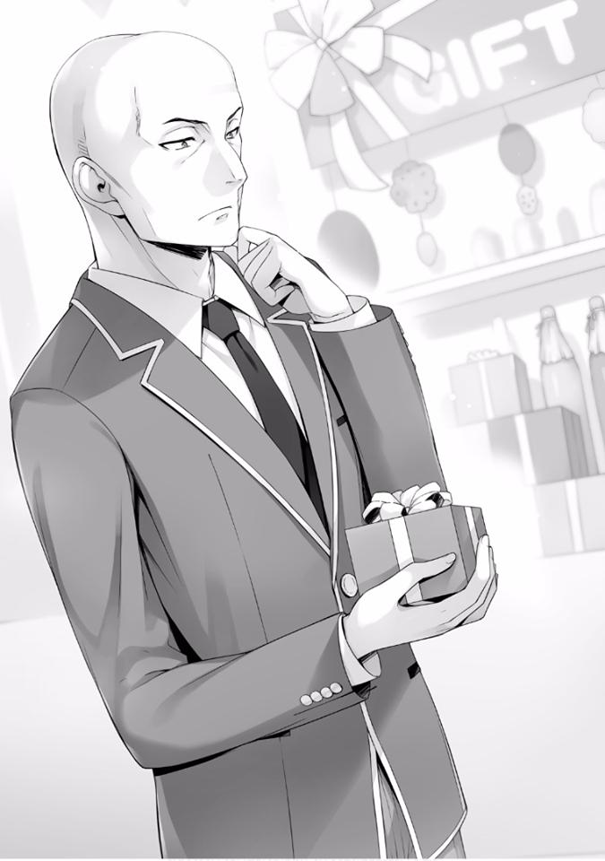
Finalmente, Katsuragi eligió una caja y luego se dirigió al mostrador.
Ike y los demás finalmente saltaron de las sombras y se reunieron frente al estante donde Katsuragi eligió su regalo.
Parecía ser algo con la forma de delgadas capas apiladas una sobre otra. Ike y los demás lo tomaron en sus manos y lo voltearon para leer la información del producto en la parte posterior.
— Esto es... chocolate, ¿cierto?
Es seguro asumir que es un regalo comprado por Katsuragi con la intención de dárselo a alguien. Se suponía que solo había sido eso, pero Ike y los demás temblaron como hipnotizados por algo.
— N-no... puede ser. ¿Ese calvito ya tiene novia?
— ¿En serio? ¡Así que este es el poder de la Clase A!
Parece que de algo tan trivial, ambos estaban hipnotizados y celosos y esos sentimientos quedaron al descubierto.
— Sin embargo, ese no es el caso. Puede ser un regalo para un amigo.
— Normalmente no le das a un amigo un regalo con un envoltorio tan lindo.
¿Lo harías? ¿Lo harías? No lo harías.
— ...Supongo.
De hecho, es una linda y pequeña caja, la cinta que está en el paquete no es realmente algo que le daría a un amigo...
Por lo menos, no es algo que le entregarías a un miembro del mismo sexo. Así que, pasando de eso, tendría que ser una chica íntima a quien se lo va a dar. Si lo pienso de esa manera, la idea de que él tenga novia, inevitablemente me sentiría atraído a pensar en eso como una posibilidad.
Ike y los demás una vez más miraron a Katsuragi que todavía avanzaba hacia el mostrador, y desde las sombras de los estantes, continuaron recolectando información.
— ¿Es un regalo de cumpleaños?
— Sí.
— ¿Vas a adjuntar una tarjeta de cumpleaños a esto?
— Por favor. El cumpleaños es el 29 de agosto.
Katsuragi respondió las preguntas la empleada.
Me pregunto a quién se lo va a regalar. En cualquier caso, parece que el producto en sí está destinado a ser un regalo de cumpleaños.
Habiendo escuchado eso también, Ike y los demás comenzaron a susurrar entre ellos.
— ¿Has oído eso? ¿Qué chica tiene su cumpleaños el día 29?
— Yo... no sé... hoy es día 21 y es domingo, así que... será el lunes de la semana siguiente. ¿Sabes algo, Ayanokouji?
— No sé. No tengo ni idea —respondí.
Si incluso estos dos, que se han familiarizado completamente con las chicas, no lo saben, no hay forma de que yo pueda saberlo.
*****
¿por qué en mi habitación?
Por la noche, por alguna razón, después de cenar, cada miembro del grupo habitual se reunía en mi habitación.
Ike y Yamauchi estaban naturalmente aquí, tal como lo habían prometido, pero también Kushida y Sudou, que habían terminado las actividades de su club.
Sería perfecto si Horikita también estuviera aquí.
— Kikyo-chan, ¿conoces los cumpleaños de todas las chicas?
— Sí. Lo memoricé de todas las chicas que me lo dijeron, así que sé más o menos. ¿De quién quieres saber su cumpleaños?
— El caso es que podría no ser alguien de la Clase D.
— Umm, si se trata de estudiantes de último año, entonces realmente no sé mucho, pero si es de primer año, podría saberlo —Kushida le respondió.
Como se esperaba de Kushida, quien ha dominado el arte de la sabiduría mundana. Parece haber registrado las fechas de cumpleaños para no olvidarlas.
— Entonces dime una cosa, ¿qué chicas tienen su cumpleaños el 29 de este mes?
— ¿Una chica con un cumpleaños el día 29? Dame un momento.
Después de sacar su teléfono, parece que Kushida está revisando lo que probablemente sea una lista de cumpleaños. Y después de eso, examinó la pantalla un rato, pero después de un momento, levantó la cabeza.
— Lo siento. No parece ser nadie que conozca —dijo.
— Creo que es probablemente una chica de la Clase A.
— ¿Clase A? Hmm, pero ya he escuchado todos sus cumpleaños.
Aun así, parece que no conoce a la chica de la cual el cumpleaños tendrá lugar pasado mañana.
— Sin embargo, si es una chica de primer año pensé que lo sabría, no puedo pensar en nadie.
Si incluso la abrumadora red social de Kushida no puede ponerle un nombre a esa persona, probablemente signifique que la persona que reciba el regalo debe ser de un año diferente.
Si ese es el caso, incluso Kushida no lo sabrá y no pudimos obtener la respuesta que estábamos buscando.
— ¿Eso significa que las posibilidades de que sea un estudiante mayor son altas?
Ike levantó los brazos impotente ante esa declaración y cayó de espaldas.
— ¿Hay algo malo con esa persona nacida el 29? —Kushida le preguntó a Ike.
Y en respuesta a su pregunta, Ike le respondió con tono práctico.
— Escucha esto ~. ¿Conoces al calvito de la Clase A Katsuragi verdad?
— Sí. Katsuragi-kun es el responsable de organizar a todos en su clase, por lo que es bastante famoso. En la prueba anterior, yo estaba en el mismo grupo que él —Kushida respondió.
— El caso es que ese calvito va a entregarle un regalo de cumpleaños a alguien el día 29. Para ser un calvito no está nada mal.
Después de escuchar a Ike repetir la palabra clave “calvito” muchas veces, Kushida le advirtió que tuviera cuidado---
— Katsuragi-kun sufrió una enfermedad cuando era pequeño y lo dejó con la pérdida total de cabello. Será mejor que no lo molestes —advirtió Kushida.
— Uuuuu...
Después de haber sido regañado por Kushida de esa manera, Ike, que estaba eufórico hace un momento, rápidamente retrocedió y guardó silencio.
De hecho, estábamos demasiado emocionados para notar que la falta de cabello, además de ser algo por moda, había sido el resultado de una enfermedad.
Algo como burlarse de los enfermos es vergonzoso, y el propio Ike debió haberse dado cuenta de esto. Solo burlarse para provocar risa porque era un blanco fácil parece haber fracasado y disminuido su simpatía.
— ¿De acuerdo? De ahora en adelante, llamémoslo apropiadamente por su nombre ¿está bien?
— P-por supuesto, lo siento Kikyo-chan. Te hice sentir incómoda.
— Está bien, siempre y cuando entiendas. Si vas a corregir esa actitud de ahora en adelante, estaré feliz.
Pero después de que la conversación terminó, parece que todavía tiene algo que decirnos ya que Kushida, sin perder el tiempo, continuó hablando.
— Y también, sobre lo que pasó hoy con Shinohara-san---
— Uuuuu...
Parece que Ike habría preferido olvidar que sucedió alguna vez, pero ya que Kushida estaba planteando el tema, tampoco podía detenerla.
— Ni siquiera tengo que decírtelo, ¿verdad? —le preguntó.
Y sin ahondar en el tema en sí, simplemente lo dijo amablemente.
— ...Me disculparé —dijo Ike.
— De acuerdo. Si haces eso, estoy segura de que Shinohara-san también te perdonará.
Aunque parecía insatisfecho con eso, Ike lo dijo honestamente frente a Kushida.
Y a Yamauchi, quien se reía de él, Ike envió una mirada de odio.
Pero dejando eso de lado, gracias a Kushida, parece que Ike pudo madurar un poco.
— ¿Y? ¿Estabas hablando de que Katsuragi-kun le dará a alguien un regalo de cumpleaños, verdad?
— Sí, sí. Me preguntaba si Kikyo-chan sabría algo al respecto.
Parece que Kushida está utilizando su red social, buscando alguna pista dentro de su cabeza, pero parece que no fue capaz de encontrar nada porque después de un tiempo, simplemente negó con la cabeza.
— No sé, realmente no creo que Katsuragi-kun tenga ese tipo de imagen sobre él. Al menos, aún no, —agregó.
— ¿Existe la posibilidad de que pueda ser una estudiante de último año?
— Así es, todavía hay mucho que no sé.
Sería increíble si pudiera salir con una estudiante de último año no demasiado tiempo después de inscribirse, o darle un regalo de cumpleaños. Honestamente, deseo ofrecer mis respetos al líder de Clase A.
Sin embargo, me pregunto si estaría bien reducir la búsqueda a solo estudiantes de último año.
Parece que es necesario abordar este asunto desde una perspectiva diferente, pero el estado de ánimo ya ha cambiado para encontrar a su novia.
— ¡Ya que ha llegado a esto, descubramos quién es la novia de Katsuragi!
Me siento mal por interrumpirlos mientras están de buen humor, pero sería prudente señalar que todavía hay otra posibilidad.
— ¿Está realmente bien concluir que es una estudiante de último año?
— Pero Kikyo-chan ya dijo que no conoce a ninguna chica cuyo cumpleaños sea el día 29, así que realmente no hay otra opción además de eso, ¿o es eso? Por casualidad, ¿podría ser Horikita-san?
Fue solo una suposición maleducada de Ike, pero tampoco puedo descartar esa posibilidad.
— Supongo que también es una posibilidad...
— ¿Huh? No jodas —dijo Sudou.
Sudou, que había estado escuchando en silencio nuestra conversación hasta ahora, dijo esas palabras mirándonos a Ike y a mí.
— ¡Guuu! ¡Acabo de decir que era una posibilidad, eso es todo! —Ike respondió a Sudou.
— Oye, Ayanokouji, cuando es el cumpleaños de Suzune —me preguntó Sudou.
— No lo sé —Respondí.
— Qué demonios, eres tan inútil —me dijo Sudou.
Pero aunque diga eso, no hay forma de que yo sepa cuándo es el cumpleaños de Horikita.
— Si lo piensas lógicamente, no creo que nadie en esta escuela sepa cuándo es el cumpleaños de Horikita.
El único que probablemente lo sepa debe ser el presidente del consejo estudiantil, quien también es su hermano mayor.
— Ya veo. Supongo que eso también es cierto, así que aunque Ayanokouji y yo no sabemos, él sabe eh—
— Yo también lo sé. El cumpleaños de Horikita-san es el 15 de febrero. No creo que tenga nada que ver con este caso.
Kushida intervino.
— ...Como se esperaba de Kushida.
Inesperadamente, la elogié sin pensar.
Nunca esperé que ella supiera el cumpleaños de Horikita. Pensé que incluso Kushida no podría encontrar la información personal de solitarios como Horikita e Ibuki.
Especialmente cuando se trataba de Horikita.
Esto es algo que solo yo y la parte interesada sabemos, pero aparentemente Kushida odia a Horikita y, a su vez, a Horikita también le desagrada Kushida. Es por eso que nunca pensé que serían del tipo de contarse sus cumpleaños.
Ella lo podría haber sabido de un tercero, pero no es como si Horikita normalmente hablara con otras personas. Es por eso que estaba impresionado con Kushida.
— Así que es el 15 de febrero, ¿eh? He escuchado algo realmente bueno —
Sudou dice mientras sonríe y se ríe.
Ike, cuyo cuello quedó atrapado bajo el brazo de Sudou, golpeó el suelo mientras su rostro se ponía pálido.
— Oh, lo siento, me olvidé de ti —Sudou le dice a Ike.
— ¡Zeze, Ken, ¡deberías ser más cuidadoso ya que tienes una fuerza monstruosa!
— Es porque estabas diciendo cosas confusas.
— Entonces hazlo también con Ayanokouji, ¿por qué solo me estás molestando a mí?
— Porque eres el más cercano.
— ¡Eres un organismo unicelular! —Ike le gritó a Sudou.
— ¿Huh?
Cuando Sudou se movió para agarrarlo por el pecho de nuevo, Ike entró en pánico y rápidamente se distanció de Sudou.
Me gustaría que deje de irrumpir en la habitación de otra persona. Tarde o temprano creo que habrá una queja.
— La conversación se movió un poco, pero lo que quería decir es diferente.
Quería decir que también hay otros candidatos posibles. También podría ser para un maestro o para uno de los empleados del centro comercial Keyaki. La gente que vimos cuando fuimos de compras hoy eran todas bellezas, ¿verdad? —dije.
— Y-ya veo. Cuando lo pones de esa manera, parece que eso también es posible.
Por supuesto, eso deja de lado si un adulto realmente saldría con un estudiante de primer año.
Teniendo en cuenta las reglas y la moral, y el enorme problema que supondría, no puedo imaginar que se establezca una relación de pareja.
Estoy seguro de que Katsuragi también entiende eso. Es solo que es demasiado pronto para excluir eso como una de las posibilidades.
En cualquier caso, lo que debemos tener en cuenta en este momento es no decidir arbitrariamente que debe ser una estudiante de último año.
Básicamente, es bastante difícil encasillar a la persona en cuestión, por lo que me gustaría que entiendan rápidamente que lo mejor es dejarlo en paz.
— Vamos a dejar de estar demasiado emocionados por esto y evitar de tratar de averiguar quién es la novia de Katsuragi, ¿qué tal eso?
— ¿Estás bien con eso? ¿Incluso si ese calvito tiene una novia mayor que sea tolerante con él y con senos extremadamente grandes?
Incluso si tuviera ese tipo de novia ideal, no sentiría la necesidad de maldecirlo.
— Si se trata de alguien de la Clase A, no sería extraño si fueran populares entre las chicas mayores.
Pero, por desgracia, esto es la Clase D. Tener solo un rostro atractivo o una buena personalidad no será suficiente para hacernos populares... pero tampoco está bien.
Según parece Hirata no solo es popular entre las chicas de primer año, sino también entre las estudiantes de último año. Y también, desde hace un tiempo que Kouenji ha llamado la atención de las estudiantes de último año.
Al final, parece que lo único que Ike y los otros comparten conmigo es nuestra falta de popularidad.
— ¡Absolutamente no quiero que se adelante a mí! —dijo Ike.
— Pero aunque digas eso, no hay nada que podamos hacer al respecto.
— Eso no es cierto. El hecho de que sea un oponente con el que probablemente perdamos, no significa que no tengamos posibilidades de ganar —dijo Sudou mientras nos miraba y golpeaba sus muslos—. En el baloncesto, siempre que sea por la victoria, incluso se pueden hacer jugadas apenas legales. No, si es por el bien de la victoria, mientras sea necesario, incluso se cometerán faltas descaradas. Tienes que ser así de serio y obsesionado con la victoria. Si le da un regalo a una chica lo acercaría más a ella, todo lo que tenemos que hacer es evitar que lo haga
—Sudou continuó.
Parece bastante agresivo. Si este fuera un juego crucial para ganar, la idea de Sudou es la respuesta perfecta. Si fuera yo, habría hecho lo mismo.
Pero esta vez, esta idea no viene desde un punto de vista lógico sino que se hace por celos.
No es algo que deba elogiarse. Pero aun así, no es como el Sudou habitual, parece estar entusiasmado.
— Hablando de eso, tu torneo será pronto.
Parece que Yamauchi notó esto ya que lo dijo cuando se volteó para mirar a Sudou.
— Sí. Es el jueves. Todavía no sé si jugaré o no, pero estoy listo para salir a la cancha en cualquier momento.
Sudou lo dijo mientras golpeaba con su puño derecho su mano abierta para mostrar su perfecta condición.
— Sí, ¡eso es! Voy a meterme con él.
En respuesta a los pensamientos imprudentes de Sudou, Ike parece haber tomado la decisión de interferir.
— Kushida, por favor dile algo.
— Kanji-kun, no está bien si interfieres con él.
— Ehhh, de ninguna manera... Kikyo-chan, también estás interesada en descubrir quién es la novia de Katsuragi, ¿no?
— Por supuesto que también estoy interesada en saber a quién dará el regalo, pero no es bueno interferir.
Al final, Kushida apagó la excitación de Ike y su intención de interferir, dejándolo algo descontento.
— Y eso es todo.
Quizás esté insatisfecho de que su idea de interferir usando a Kushida se arruine, o de que le recordaron el incidente con Shinohara, Ike se volteó hacia mí y dijo esto.
— Entonces Ayanokouji. Descubre su identidad. ¿A quién exactamente le dará Katsuragi su regalo?
— Eso es imposible.
— Incluso si es imposible, debes hacerlo. Estás libre de todos modos,
¿verdad? —me dijo Ike.
Ciertamente no puedo negar eso, pero... si tiene tanta curiosidad, me gustaría que lo investigara él mismo.
— Descubrirlo está bien y todo, pero no estoy en la misma clase que él y ni siquiera somos amigos —le dije.
Va a ser doloroso investigar el número de contacto, el número de habitación y los nombres de personas que ni siquiera conozco.
— Si es el número de contacto de Katsuragi-kun, entonces lo sé. ¿Quieres que te lo diga? —Kushida me preguntó.
— .....
Así es... la que está junto a mí en este momento es alguien que incluso conoce el cumpleaños de Horikita, la hermosa chica con la red social más grande de la escuela.
Ciertamente, no sería extraño si supiera el número de contacto de Katsuragi.
— ¿Cómo sabes su número de contacto?
— Hace un tiempo, durante la prueba, estábamos en el mismo grupo.
Entonces se lo pedí.
Ya veo. Poder intercambiar números de contacto incluso en una situación como esa es algo sorprendente.
— Entonces, te lo diré.
— No, está bien. Si de repente me contactara con él, Katsuragi también se sorprendería.
Incluso podría ignorar una llamada entrante de un número que no reconoce.
— Me impediste interferir con él, así que asume la responsabilidad —Ike me dijo.
— Aunque me digas que asuma la responsabilidad...
— También tengo curiosidad, así que asegúrate de investigarlo —Sudou me dio una orden con actitud optimista.
— ¿No crees que deberías investigarlo tú mismo? —pregunté.
— ¿Eh? No estoy libre hasta el torneo el jueves. Solo tengo unos días más para practicar ¿sabes? —Sudou me responde.
Está usando las actividades de su club como excusa para forzarme a hacer esto.
Cuando permanecí en silencio sin responderle, Sudou comienza a mirarme.
— ¿Quieres que te haga escuchar a la fuerza?
Sudou me pregunta mientras comienza a balancear sus brazos.
Dependiendo de la situación, puede hacerme una llave a la cabeza.
En este grupo, el que tiene la capacidad de comunicación más baja, que soy yo, no podría escapar si decide darme un ejemplo.
— ...Entiendo. Trataré de investigarlo mañana. Pero no esperes demasiado.
No sé cómo vaya a salir —le dije.
Terminemos este asunto por ahora. Puedo decirles más tarde, traté de investigarlo y no pude averiguar nada, y eso será el final de todo esto.
*****
Al día siguiente, para saber si Katsuragi salía, me encontraba en una calle llena de árboles.
Esta es la calle que se ramifica a los dormitorios de todos los grados y, como tal, para encontrarse con un estudiante de último año, uno inevitablemente tiene que pasar por aquí.
Además, esta calle también conduce al centro comercial Keyaki, donde hay una gran cantidad de tiendas y conduce a la escuela. Por lo tanto, donde sea que Katsuragi decida ir, no lo perderé.
Normalmente, esperaría en el lobby donde hay un clima agradable, desafortunadamente un grupo de chicas de otra clase que no conozco han decidido tener una fiesta de té allí y esa ya no era una opción.
Había una tienda en la que podría haber entrado, pero parece que no quedan asientos disponibles, lo que me hace dudar en entrar, algo así.
Y mi corazón no es lo suficientemente valiente como para colarme en el espacio libre que pueda encontrar y relajarme allí tampoco.
De vez en cuando, los estudiantes con su ropa casual pasaban tranquilamente, saliendo a divertirse durante el día.
Naturalmente, todos los estudiantes estaban con ropa informal. Por eso pensé en Katsuragi que llevaba su uniforme ayer y me hice una pregunta.
No hay ninguna regla que establezca que uno no puede usar su uniforme durante las vacaciones de verano. Sin embargo, ya que el uniforme en sí da calor y se calienta rápidamente, incluso si a uno no le importa mucho estar a la moda, no sería lo suficientemente convincente como para salir con uniforme.
Pero si trata a su uniforme como ropa de verano sería un poco más convincente.
Y en lugar de usar ropa de verano, Katsuragi estaba vestido diligentemente con mangas largas.
Era algo que había notado recientemente, pero parece haber muchas variaciones de nuestro uniforme. Por supuesto, yo que estoy constantemente corto de puntos no lo sabía, pero parece que la ropa de verano se vende a un precio bastante caro.
Las chicas de nuestra clase, a pesar de que quieren algún día esa ropa, se ven obligadas a soportarlo. Es parte de la teoría de que uno viste su ropa casual cuando sale, pero una razón para atreverse a usar el uniforme...
Cuando pensé en eso, mi mente inmediatamente se dirige a un tipo de persona similar. Katsuragi ayer, y no solo él, parece que hay bastantes personas que prefieren sus uniformes.
Y del dormitorio donde viven estudiantes de último año, un chico y una chica salieron. Cuando me vieron, se desviaron de su camino y se me acercaron.
— Ha pasado un tiempo.
— Me preguntaba quién usaría su uniforme en este clima de mierda, así que es el hermano de Horikita, eh... —respondí.
A diferencia de Katsuragi, vestían una variante del uniforme de verano, sin embargo, al verlos usar sus uniformes en vacaciones me hizo recordar esos sentimientos de incompatibilidad.
— Uwa, presidente, este chico tiene un rostro de “me acabo de encontrar con alguien problemático”.
Aunque había hecho una expresión tan fácil de entender, la chica que estaba de pie junto al Horikita mayor, la secretaria de tercer año Tachibana, dijo eso con tono exagerado.
Pero aun así, a diferencia de los uniformes masculinos, el uniforme que usan las niñas no parece emitir la sensación de ser demasiado cálido.
Si pudiera evitar de esa manera el calor, no estaría quejándome así.
— Aunque son las vacaciones de verano, parece que el consejo estudiantil está bastante ocupado —les dije.
La secretaria Tachibana parece tener algo parecido a un cuaderno. Pensé por un momento que el segundo semestre ya había comenzado.
— Simplemente estamos usando las vacaciones de verano para renovar la sala del consejo estudiantil y ese es el grado de esta relación.
La secretaria Tachibana me lo explica sin la necesidad de molestar al presidente.
— Ya veo, nos vemos —le dije.
— Uwaaa, para alguien que acaba de escuchar algo así tu reacción es terriblemente despreocupada. Y lo que es más importante, deberías cuidar un poco más tu boca. ¿Sabes quién es esta persona? Este es el temible presidente del consejo estudiantil de esta escuela, ¿sabes? —me dijo Tachibana.
Ya lo sé. También sé que él ejerce una cantidad increíble de influencia.
Al principio pensé en mostrar respeto y deferencia hacia él, e incluso hablar formalmente, pero había dejado de pensar eso.
El mayor de los Horikita tampoco parece querer que hable formalmente, así que decidí no contenerme.
Pero aun así, la secretaria Tachibana parecía ser diferente de como la había imaginado inicialmente. Pensé que era una persona más seria, pero parece que también es una persona bastante indulgente.
— ¿Quieres imponerme una multa acorde con esta escuela? Lo siento, pero no tengo absolutamente ningún punto.
Le dije como si hiciera caso omiso de sus palabras.
También pensé que el Horikita mayor no querría tener nada que ver con una persona como yo, pero en lugar de irse, entrecerró los ojos y me dijo esto:
— Ayanokouji, si en este momento estás libre, quiero que me acompañes por un tiempo.
— ¿P-Presidente?
Parece que la secretaria Tachibana está sorprendida de que el presidente me acabe de invitar. Yo también estaba sorprendido. Pero---
— Lo siento, pero mi agenda está llena —le dije.
— ¿Ehh? ¿Te estás negando?
Y ahora, la secretaria Tachibana parece abrumada por mi rechazo a la invitación del presidente del consejo estudiantil.
— Entonces, cuando estés libre. No me importa cambiar mi horario por ti. No me importa incluso si es después de que se reanuden las clases —me dice.
Parece que el mayor de los Horikita no muestra signos de rendirse.
Por lo general, no hace mucho bien posponer el problema. Además, si hacemos esto en una fecha posterior, existe la posibilidad de que termine perdiendo más tiempo. Si ese es el caso, sería más conveniente hacer esto ahora.
— Entonces escuchémoslo ahora. Todavía tengo algo de tiempo hasta mi próxima tarea —le dije.
— ¿Pero dijiste que tu agenda estaba llena ahora mismo?
Desvié todas las quejas de la Secretaria Tachibana mientras las decía.
— ¿A dónde pensabas ir? No me importa cambiar mi horario.
— Ahh --- estoy esperando a alguien. Si podemos, no quiero moverme de aquí —le respondí.
— Pero hace calor, ¿sabes? No es un lugar adecuado para una reunión.
— Estoy al tanto de eso.
Aunque hace calor, me considero una persona respetable por llevar a cabo honorablemente este escenario de juego de castigo. Me elogié.
— Supongo que a veces hablar mientras estás de pie tampoco es tan malo.
Si te sientes incómoda aquí, no me importa si vuelves al dormitorio antes que yo.
— No. Mis sentidos me dicen que no puedo dejar solo al presidente con este chico —Tachibana le respondió.
Y después de saludar de esa manera al presidente del consejo estudiantil, la secretaria Tachibana se le quedó pegada como un guardaespaldas.
— Han llegado los informes al consejo estudiantil. La prueba de isla deshabitada y el examen especial en el barco ¿Fueron difíciles? —Me pregunta.
— El consejo estudiantil realmente tiene mucha influencia, ¿eh? Pensar que estarían al tanto de esos informes.
— Aunque diga informes, no sabemos todos los detalles. Las acciones individuales y su grado de importancia son desconocidos para nosotros.
— Estoy contento por eso.
— ¿No estás contento de que el presidente no sepa sobre tus fallas? —me dijo Tachibana.
Parece que la secretaria Tachibana nunca pierde la oportunidad de escupirme veneno. Creo que, en algún momento, me marcó como su enemigo.
Supongo que era inevitable dado que respondía casualmente al presidente.
— Pero la información es algo que siempre termina filtrándose. El hecho de que engañaste a las otras clases durante la prueba de isla deshabitada, y el hecho de que mantuviste a salvo al “objetivo” en el crucero cuando te asignaron al grupo (Conejo) es algo que conocemos —me dijo.
A pesar de decir que es desconocido, parece que se ha filtrado bastante. Esto me va a hacer dudar de su integridad.
— Además, el nombre de Horikita Suzune surgió después de la prueba de la isla deshabitada, que se convirtió en el pilar de su clase y fue más astuta que las otras clases. Pero en cuanto a eso, creo que el verdadero responsable de eso eres tú.
Me dice y parece que el Horikita mayor tiene una confianza absoluta en eso.
Suavemente me murmuré.
— Me estás sobreestimando por completo.
— El nombre del líder al final cambió a ti. ¿Cómo lo explicas?
— ...¿Sabes algo así, eh?
— Los únicos que conocen este hecho somos el Comité de Exámenes Especiales y yo. Y ahora, la Secretaria Tachibana nos ha escuchado por casualidad. Esto es algo que ni siquiera los maestros de cada clase saben, así que relájate —dijo.
Esta no es una situación en la que pueda simplemente relajarme.
¿Cuánta influencia tiene este hombre? Normalmente, los consejos estudiantiles son solo decoraciones sin ningún poder real.
Que ellos superen incluso a los profesores, ¿qué es exactamente esto?
— ¿Qué es exactamente este consejo estudiantil? —le pregunté.
— El consejo estudiantil en sí mismo no tiene poder. Depende del talento de la persona que lo dirija.
— Esa es una declaración impresionante. Me enteré antes, pero eres realmente de la Clase A, ¿no?
Realmente nunca tuve que confirmarlo, pero como ya estoy aquí, le pregunté nuevamente.
— ¿No es obvio? ¡Es natural! —Tachibana respondió.
— Pero en ese caso, todavía no entiendo algo. ¿Qué tan grande es la diferencia entre Horikita y yo? En realidad, si solo miras nuestros datos, Horikita es muy superior a mí. No entiendo por qué te molestas con un D
como yo —le dije.
— Estás malinterpretando una cosa. No creo que la gente de la Clase D sea estúpida. No es que esta escuela clasifique personas excepcionales en orden comenzando por la Clase A o algo así.
— Umm, presidente... creo que está diciendo demasiadas cosas innecesarias,
¿creo que puede haber dicho demasiado?
— No hay problema. Naturalmente este hombre ya entiende eso.
¿Hasta dónde tiene la intención de sobre elogiarme?
Desde nuestra primera extraña reunión, este presidente del consejo estudiantil-sama parece enfocarse en mí en una medida problemática.
— Entonces, ¿por qué rechazaste a Horikita? ¿No es porque ella es de la Clase D? —le pregunté.
— Independientemente del medio ambiente, mientras sea mi hermana, entiendo todo sobre su capacidad. Es un fracaso que fuera colocada en la Clase D porque se lo merecía. No hay nada más ni nada menos que eso
—respondió.
Este hombre seguramente ve a su hermana con mucha dureza.
— Todo fue planeado por Horikita. Tu hermana no tiene amigos aparte de mí, así que solo me dieron el papel necesario —le dije.
— Eso es incorrecto. Esa no es una idea en la que ella pensaría.
Tal vez sea porque pasaron mucho tiempo juntos como hermanos, él tiene una comprensión completa de su forma de pensar. Pero aun así, he llegado comprender.
Una de las razones por las que este hombre ha puesto sus ojos en mí es probablemente la misma razón que Chabashira-sensei.
Si se dio cuenta de mis puntajes del 50% en las pruebas y en el examen de ingreso, no sería extraño si también ha notado la diferencia entre mi informe de estudiante y mi currículum.
— Por favor, deja de buscar mi información personal como un acosador.
Quiero llevar una vida escolar tranquila.
Apelé a él de esa manera, pero después de tocar sus lentes una vez volvió a decir esta locura.
— Te ofrecí esto hace un tiempo pero, ¿no te unirías al consejo estudiantil?
—me pregunta.
La secretaria Tachibana entra en pánico con los ojos muy abiertos.
Se acaba de hacer una declaración extremadamente sorprendente.
— Es un consejo de estudiantes bastante relajado el que tienes. ¿Los asientos aún no se han llenado? —pregunté.
— P-Presidente. Hace solo unos días, el consejo estudiantil aceptó a una chica de 1er año, ¿no es así? ¿Acaso no es el final? También tomamos a algunos de 2do año y todos los asientos ya deberían estar ocupados.
Y aparentemente con eso termina. Le dije eso a ese hombre con la vista pero procedió a decir algo sin precedentes.
— Todavía queda un asiento vacío —dijo.
— ¿¡Uno... no puede ser!?
— Ayanokouji. Si lo deseas, usaré mi influencia para convertirte en vicepresidente —dijo.
— E-espere.
La secretaria Tachibana parece haber vuelto a su enérgico ser. Pensé que era una persona interesante de mirar.
— ¡Esto no tiene precedentes! Es de primer año y también de la Clase D. ¡No puede ser que este chico grosero se convierta de repente en vicepresidente!
— He dicho esto muchas veces, pero me niego —le dije—. Y además de eso, me niego sin más preguntas —añadí.
Pero aun así, esto es extraño. Él no parece estar diciéndolo en broma, pero la evaluación y la forma en que parece tratarme no es normal.
De hecho, hasta cierto punto, el mayor de los Horikita tiene acceso a información.
Comparado con Ike y Yamauchi (sin ofenderlos), puedo entender por qué me elegiría.
Pero si vamos solo con potencial, comencemos con Katsuragi e Ichinose, incluyendo Hirata e incluso Kouenji. Debería haber muchos estudiantes así los que existen.
No debería haber ninguna razón por la que llegaría a tal extremo para elegirme.
En otras palabras, significa que hay una razón por la cual tengo que ser yo.
— Puede que no tenga derecho a decir esto como el presidente del consejo estudiantil. Pero a partir del próximo año, esta escuela sufrirá un gran cambio. Y no va a ser un cambio deseable. Y cuando llegue ese momento, para poder proteger las reglas de esta escuela, necesito crear una fuerza capaz de contrarrestarla desde esta etapa. Sin embargo, quizás ya sea demasiado tarde. Siento esa necesidad creciendo más fuerte cada día —
me dijo.
— Presidente, usted está hablando en el escenario en el que Nagumo-kun se convierta en el presidente del consejo estudiantil, ¿no? No creo que termine creando una mala escuela.
Nunca he oído hablar del nombre Nagumo de entre los de primer año. Cambiar a partir del próximo año significaría que está entre los de segundo año.
— Normalmente, puede haber hasta dos vicepresidentes a la vez en el consejo estudiantil. A partir del próximo año parece que será solo uno, pero si cambias de opinión, no es algo imposible de hacer —me dice.
— No, no, no Presidente. Seguramente eso es imposible... no hay forma de que Nagumo-kun le dé su permiso para algo así.
— No sé nada sobre los vicepresidentes o de este tal Nagumo, pero no lo haré. Te vas a graduar y te vas de la escuela, ¿cierto? No hay necesidad de que te preocupes por los estudiantes que quedan atrás. O es--- —Me detuve ligeramente para dar más peso a mis siguientes palabras—. Si es porque estás preocupado por tu hermana y quieres mi ayuda, entonces puede que haya espacio para que me consultes al respecto —le dije.
— ...Ya veo.
Si digo eso, entonces este hombre tampoco podrá depender demasiado de mí.
De hecho, parece haberse rendido por completo, ya que después de eso dejó de tocar el tema del consejo estudiantil.
— Perdón por tomar tu tiempo. Son todos los asuntos que tengo contigo.
Pero siéntete libre de pasar por el consejo estudiantil en cualquier momento, me encantaría invitarte a tomar el té —me dijo.
Entonces, incluso este hombre que ha construido una base firme para esta escuela tiene sus propias ansiedades, ¿eh?
Mientras sentía eso tan inesperado, decidí regresar, pero no puedo regresar. Sin embargo, era el momento perfecto para regresar. Es una lástima que tenga que esperar a Katsuragi.
*****
Con el mismo atuendo que el día anterior, Katsuragi se dirigía lentamente hacia mi dirección.
Mientras lo observaba desde una alguna distancia lejos de su camino, lo vi sosteniendo en sus manos lo que parece ser la bolsa que contenía lo que compró en esa tienda ayer.
— ¿Qué significa esto?
Todavía queda tiempo hasta el 29. Normalmente uno mantendría algo así en su habitación hasta entonces. Pero el hecho de que lo está llevando ahora, ¿quizás quiere entregarlo?
Aun así, siento curiosidad de por qué esta vistiendo su uniforme. Tal vez tiene la intención de hacer su movimiento con su ropa formal, pero sinceramente, preferiría no verlo entregando el regalo con ese atuendo en este calor.
Contuve la respiración mientras trataba de confirmar hacia dónde se dirige Katsuragi. Y cuando lo hice, pronto llegamos a una encrucijada.
Katsuragi no siguió por el camino que conduce a los dormitorios de los estudiantes de último año. En su lugar, sorprendentemente siguió por un camino que estaba fuera de mis expectativas.
Lo que se encuentra al final de ese camino es la escuela, que está en medio de las vacaciones de verano. Lo seguí sin alertarlo.
— Así que es por eso que llevaba su uniforme---
No era porque le gustara usarlo, sino porque tenía la intención de ir a la escuela.
Finalmente lo entiendo.
Katsuragi ingresó a la escuela por la entrada principal. Pero como ha llegado a esto, no puedo simplemente seguirlo así. No está permitido ingresar al edificio de la escuela con ropa casual, no puedo entrar.
“¿Encontraste a Katsuragi?”
Cuando mi teléfono vibró, mi pantalla está proyectando una conversación que parece haber sido enviada desde la habitación.
Sin leer el mensaje, cerré mi teléfono y decidí cambiar la dirección de mi ataque.
Me dirigí a la tienda donde elegimos nuestros regalos ayer en Keyaki. Y una vez allí, entré en alguna tienda que parece ser popular entre las chicas. Tenía curiosidad de qué tipo de regalos se venderían en otras tiendas.
Es solo que, incluso cuando se compara con otras tiendas, no podía decir cuál era la diferencia.
Al final, terminé volviendo a la tienda de ayer donde Katsuragi compró su regalo.
Finalmente llegué al lugar donde se apilaban los chocolates puestos en pequeñas y delgadas cajas.
Tomé en consideración la posibilidad de que no solo sea una estudiante de último año, sino un hombre al que le dé el regalo, pero pensándolo bien, esa posibilidad no es muy alta. Los chocolates estaban decorados con corazones y otras cosas que a las chicas les gustan.
— Kyahaha, lo sé ¿verdad?
Algunas chicas, que habían empezado a ser ruidosas dentro de la tienda, pasaron detrás de mí. En ese momento, recibí un ligero golpe en la espalda.
— Woah.
Los productos que golpeé con mi codo se sacudieron ligeramente, y la torre de chocolate apilado se derrumbó como una avalancha.
Las chicas que estaban envueltas en su conversación, sin siquiera darse cuenta de la tragedia que había ocurrido aquí, simplemente salieron de la tienda mientras hablaban.
— Dios.
Sé que no tengo mucha presencia, pero me gustaría que al menos me noten un poco.
— ¿Qué estás haciendo?
Cuando desesperadamente estaba tratando de volver a apilar los productos caídos, un hombre gigante me llamó desde atrás.
Era Katsuragi quien se supone que había ido a la escuela. Me mira con cara confusa.
— Estoy aquí para... comprar un regalo de cumpleaños.
Habiéndolo encontrado inesperadamente, fue todo lo que se me ocurrió responder.
Después de echar un vistazo a las cajas de regalo, se inclina con su gran cuerpo para recogerlas.
— Ahh. No. Puedo recogerlos yo mismo.
— No importa. Sería malo dejar que otros clientes vean esto. Es mejor arreglarlo rápidamente. Dos es mejor que uno en ese caso.
Diciendo eso, y sin siquiera un signo de desagrado, empezó a echarme una mano.
Han pasado alrededor de 30 minutos visitando otras tiendas, me pregunto si terminó su asunto en la escuela durante ese tiempo.
Pero las manos de Katsuragi, sostenían una bolsa de productos de esta tienda.
Eché un vistazo y cuando lo hice, parecía contener una pequeña caja empaquetada como regalo. Parece que aún no lo ha entregado.
— Con esto debería estar bien.
Haciéndolo los dos juntos, oedenamos la tienda en poco tiempo.
Afortunadamente, ni los empleados ni los clientes vieron esto.
— Gracias.
Creo que Katsuragi es una buena persona.
Durante la vez en la isla deshabitada, Katsuragi también mostró una extraña buena voluntad hacia nosotros, como cuando cuidó el maíz que encontramos.
Naturalmente, no mostrará misericordia si se trata de una competencia entre clases, pero parece que su personalidad en sí misma no es la de una mala persona.
— ¿Estás comprando un regalo para tu novia? —me pregunta Katsuragi.
— ¿Ehh? No, no es así. Ella es solo una compañera de clase. Creo que lo compraré la próxima vez.
No es como si hubiera tenido la intención de comprar en primer lugar, pero lo dije cuando me alejé de ese lugar.
Y para coincidir con mis acciones, Katsuragi también tomó su distancia, así que decidí hablar con él un poco para ver si podía obtener algo de información.
— ¿También vas a comprar un regalo de cumpleaños? —le pregunté.
— ¿Hmm? ¿Por qué piensas eso?
— Estás sosteniendo una bolsa de esta tienda en tus manos, yo estaba en la misma esquina.
— Ya veo. De hecho es cierto, supongo que ni siquiera debería haber pensado eso —me responde.
Quizás esté convencido, pero Katsuragi asiente y se encuentra con mi mirada.
— Estoy en un problema ya que no pude encontrar el artículo que quería,
¿qué compraste?
— No es la gran cosa. Compré uno de los chocolates que tiraste hace un momento. Creo que la selección de artículos de esta tienda no es mala en absoluto, pero supongo que depende de cada persona al tener sus propias preferencias. Harías bien en mirar otras tiendas —Katsuragi me responde.
Luego, sin decirme a quién se lo va a regalar y sin que escuche algún nombre, los dos salimos de la tienda.
— ¿Por qué llevas tu uniforme?
Naturalmente, no voy a mencionar el día de ayer, pero durante dos días consecutivos, Katsuragi ha venido con su uniforme. Sería obvio hacerle esa pregunta.
— Es necesario usar el uniforme si deseas ingresar al edificio de la escuela.
No se puede evitar —me dice.
— ¿Eso significa que fuiste a la escuela?
Por supuesto, como lo estaba siguiendo, ya sé que había ido a la escuela más temprano.
Ahora todo lo que queda es preguntarle “a quién” se lo vas a dar. En sus manos, Katsuragi todavía está agarrando la bolsa.
Pensé que sería posible obtener alguna información, pero lamentablemente no parece que vaya a ser el caso.
— Ahh. También hay varias cosas que quería entregar.
No habló mucho sobre el asunto, pero parece que Katsuragi tiene algo en mente ya que miró en dirección a la escuela.
— ¿Alguna vez has pensado sobre esto? ¿Las desventajas de ir a esta escuela?
— ¿Desventajas?
— Es correcto. No tiene nada que ver con las clases, pero todos los estudiantes las comparten por igual.
Tuve que poner un poco de esfuerzo en la misteriosa pregunta que me hicieron.
Si esto tiene algo que ver con la diferencia en las clases, los problemas surgirán caso por caso.
Hay casos como la Clase D que se ve acosada por su escasez de puntos, pero es difícil imaginar que la Clase A tenga esos problemas. Pero a partir de la afirmación de que esto se aplica por igual a todos los estudiantes, esas cosas pueden ser excluidas.
Si es así, ¿qué es exactamente? Aunque estaba tratando seriamente de encontrar la respuesta, no pude llegar a una conclusión.
— ¿No lo sabes? Por supuesto, varía de persona a persona, pero... no puedes contactar con el exterior, es la desventaja —me dice Katsuragi.
— Ahh, ya veo.
Pero como eso no era una desventaja para mí, sino una ventaja, no lo consideré en absoluto. Por supuesto, si lo miras normalmente, podría considerarse una desventaja.
— ¿No quieres contactar a tus padres o a tus hermanos? —me pregunta Katsuragi.
— Eso me pregunto. Pero dejándome de lado, creo que muchos estudiantes dirían lo mismo.
En particular, las chicas a menudo se quejan de que están solas.
Sin embargo, en lo que respecta a la filtración de información hacia el exterior, esta escuela prohíbe estrictamente todas las formas de contacto. Si uno rompe esta regla, no terminará con solo una advertencia.
— Pero los beneficios que recibes a cambio son enormes y no creo que esto sea motivo suficiente para estar insatisfecho.
— Sin duda, eso es cierto. Tanto el sistema de puntos como la calidad de las instalaciones son algo que los estudiantes normales no pueden disfrutar y sin duda es una ventaja.
Además, también obtiene el beneficio de haberse graduado de la Clase A.
Espera, ¿por qué demonios estoy conversando naturalmente con Katsuragi?
Además, durante las vacaciones de verano.
— Eres un estudiante cercano a Horikita, ¿verdad?
— ¿Un rumor falso como este se está extendiendo? —le pregunté.
— ¿Falso rumor? Recuerdo claramente que actuabas junto a ella cuando me conociste.
— Es algo así como una conexión del destino que sucede comúnmente, o más como la inercia que comenzó cuando nos asignaron asientos vecinos, y simplemente es por eso que comenzamos a hablar entre nosotros.
Mientras sea una charla relacionada con la escuela, no es nada inusual, creo.
Parece que Katsuragi también tiene esa imagen ya que asiente.
— Así es como es. Parece que no sé mucho sobre las otras clases a pesar de pensar que sí. Si te hice sentir incómodo, por favor, perdóname. No tengo ningún motivo ulterior en esto —me dice Katsuragi.
— Es algo que escucho a menudo recientemente, así que está bien. Parece que Horikita está haciendo un gran trabajo.
— Es cierto —Katsuragi estuvo de acuerdo conmigo, pero no muestra signos de continuar—. Para decirte la verdad, esta es la tercera vez que vengo a esta tienda. Soy de los que piensan constantemente en eso cuando me preocupa algo. Aunque es solo un regalo, cuando pienso en los sentimientos de quien lo recibe, simplemente no puedo decidirlo.
Alguien a quien le preocupa darle un regalo, me pregunto quién es. ¿Debo tratar de profundizar un poco?
— Puede ser extraño decir algo como esto, pero eres una persona respetable.
Comprarle a alguien un regalo de cumpleaños como este.
— ¿Crees que es extraño celebrar el día del nacimiento? —Katsuragi me pregunta.
Por lo menos, ver a un cabeza rapada gigante me da una sensación de incompatibilidad. Pero eso es una visión prejuiciosa.
En este mundo, incluso hay delincuentes que salvarían a un gato en medio de una lluvia torrencial.
— Seré honesto, ¿a quién se lo vas a dar?
Termino la persecución. No llegaré lejos, incluso si me voy por las ramas.
— A quién, ¿eh? —Tal vez esa pregunta confundió a la persona en cuestión, ya que mostró cierta vacilación—. Es algo personal. No es algo que tengas que escuchar —me dice.
Creo que es algo que no se puede evitar, terminó evadiendo la pregunta. Si responde así, ya no estoy en posición de preguntar más. Si fuera su mejor amigo sería una cuestión diferente.
— Disculpa.
Y sin decir otra palabra, Katsuragi se fue hacia el dormitorio.
Me las arreglé para resolver el problema de por qué llevaba el uniforme, pero otros misterios surgieron de eso.
¿Por qué fue a la escuela? ¿Por qué apareció en la tienda de nuevo? No pude ver claramente las respuestas.
*****
— ¿En serio? Eres muy bueno, Ayanokouji. Ahora te veo de manera diferente.
Diciendo eso, Ike me elogió mientras ponía una mano en mi hombro. ¿Estaba haciendo algo que merecía ser visto de manera diferente?
Sintiendo una pequeña duda sobre lo bajo que Ike me había evaluado internamente, le informé sobre la situación.
— Desafortunadamente, no pude averiguar a quién se lo iba a regalar.
Eso no es del todo cierto.
Para ser más específico, no pude encontrar el perfil de ninguna chica a la que podría dárselo. No importa cuánto investigué, no pude averiguarlo.
En el mismo año escolar, no hay nadie con esa fecha de cumpleaños. Sin embargo, no podía pensar en ningún estudiante en los otros años escolares tampoco.
En este caso, ¿no estaría la persona en la que estamos pensando en una ubicación completamente diferente? Mirando sorprendido, Yamauchi levantó la cabeza.
— Esto es malo... sabía que esto sucedería. ¿A quién le dará su regalo Katsuragi?
En lugar de alegría o emoción, Yamauchi hizo una expresión de tristeza mientras hablaba como si entendiera algo.
— Oye, Kanji. ¿No creías que San Valentín era un infierno en la secundaria?
— ¿Qué estás diciendo tan repentinamente? Claro, fue difícil para mí. Pero
¿qué pasa?
— No es esto una especie de extensión de eso... ese tipo, creo que podría haberlo comprado para él mismo.
— Seguramente no --- n-no podría ser posible. Ese calvito no parece que sea popular...
Los dos parecían estar convencidos después de ese breve e inexplicable intercambio.
Pero aun así, es un desarrollo que nunca había esperado, así que decidí hacer una pregunta.
— ¿Estás diciendo que se compró un regalo para su cumpleaños?
— ¿Qué más podría ser, Ayanokouji.
Me miraron enojados.
Dejando eso de lado, normalmente uno no se compra sus propios regalos, ¿o sí?
Por supuesto que consideré hasta cierto punto que él se podría haber recompensando con eso. Como comer algo delicioso o comprar algo que él quiera. Pero en este caso, no creo que eso sea aplicable.
Hizo todo lo posible por conseguir una caja que le gustara a una chica, con las envolturas y el chocolate dentro. Si simplemente le gusta lo dulce, hubiera sido mejor comprarlo en una forma diferente.
— ¿En serio no lo entiendes?
— ...Desafortunadamente —respondí.
— No importa cómo lo mires, Katsuragi no parece del tipo popular entre las chicas, ¿verdad? Pero aun así, él es el líder de la Clase A.
Me voy a negar a hacer algún comentario sobre eso.
— Eso significa que debe ser bastante orgulloso. Definitivamente querría hacer que los demás a su alrededor piensen que es popular. En otras palabras, es una actuación.
— Significa que en lugar de decir que es algo que compró para sí mismo, va a actuar como si alguien se lo hubiera dado, eso es lo que significa.
Deben sentir que no hay nada de malo con la conclusión a la que llegaron, ya que tanto Ike como Yamauchi asintieron con la cabeza.
— También hice lo mismo en la secundaria, hice que pareciera que me lo dio la chica más linda de la escuela.
— Escucharlo así te hace sentir… ¿vacío?
— ¿No es obvio? Por supuesto que se siente vacío, pero es mejor que la aplastante desesperación de que no te den nada.
Se enojó.
Parece que para Ike, eventos como los de San Valentín y los cumpleaños son realmente importamtes.
— Por cierto, Haruki, tú también estabas en el mismo barco, ¿verdad?
— ¿Huh? No, soy diferente. Era popular con las chicas, ¿sabes? —Yamauchi respondió a Ike.
— Eres un mentiroso. ¿Entonces por qué dijiste algo así? ¿No era porque creías que estaba haciendo lo mismo que tú?
— Te digo que no es verdad. En la secundaria, conocía a un tipo impopular como Kanji, eso es todo —dijo Yamauchi.
Obviamente era un farol, pero no tenía los medios ni la intención de descubrir la verdad.
— Pero eso es solo una suposición, ¿verdad?
— No, no hay duda al respecto. ¡Tiene que ser así!
Parece que han decidido que no hay lugar para dudas en la conclusión a la que llegaron, ya que no discutieron más.
— Oye, Haruki, ¿tal vez hemos malinterpretado al calvito... Katsuragi?
— Sí. Lo estaba tratando con hostilidad porque era de la Clase A, pero ahora, parece ser más cercano a nosotros.
— Eso significa que tampoco eras un tipo popular y que te comprabas regalos.
— No, solo me recordó a mi compañero de clase y sentí lástima por él, eso es todo —Yamauchi respondió a Ike.
Yamauchi obstinadamente niega las declaraciones de Ike.
— ¿Quieres cooperar por un momento?
De repente, algo así fue pronunciado.
— ¿Qué quieres decir con cooperar?
— Vamos a prepararle un regalo de cumpleaños.
De un sentimiento de antagonismo hacia Katsuragi, parece que Ike ha cambiado a uno de simpatía.
— Claro, entiendo que es mejor conseguir uno de una chica. Pero eso es imposible. Y en ese caso, ¿no sería una bendición recibir un regalo de cumpleaños de otra persona?
Sentí que algo estaba mal con esa lógica, pero sería difícil negarlo del todo.
En lugar engañarte comprando un regalo para ti mismo, uno querría recibir un regalo de otra persona. Es solo que, hay que tener cuidado porque la simpatía puede llegar a ser problemática.
Si Katsuragi realmente compró el regalo para él, ¿estaría bien con Ike y los demás, que están al tanto, celebrándolo? Por otro lado, puede enojarse y rechazar su simpatía.
Ike y Yamauchi comenzaron a discutir qué comprar para él, pero una vez más tuve dudas con respecto a esa conclusión.
De hecho, no hay chicas cuyo cumpleaños sea mañana. Pero no es como si todas las demás posibilidades se hayan descartado.
Las maestras de esta escuela y otras autoridades, incluidas las demás empleadas del recinto escolar. Si ampliamos la definición de “chica” todavía quedan muchas candidatas.
Y además, si realmente es un regalo para él, ¿lo compraría de esa manera? Y
además de eso, Katsuragi estaba inusualmente uniformado en medio de las vacaciones de verano.
Eso había hecho que se destacará aún más. Es fácil imaginar que las personas sospecharían si lo veían, y normalmente uno no actuaría así con el uniforme.
— Ayanokouji, desembolsa algunos puntos también. Si los tres juntamos alrededor de 1 500 puntos podríamos comprar algo bueno para él.
Ya he escuchado este tipo de charla ayer, aunque…
En otras palabras, mi gasto se duplicará. Un gasto de 1 000 puntos no es algo pequeño.
— Así que Ayanokouji, esto puede ser un poco repentino, pero mañana celebremos el cumpleaños de Katsuragi.
Su interruptor se ha encendido, parece que los dos están decididos a comprar un regalo a Katsuragi.
— ¿Realmente van a comprar uno?
— ¿No es obvio que lo vamos a comprar? ¿No piensas salvar a un hombre solitario e impopular?
Ahh, esto se está volviendo cada vez más problemático así que elegí no rechazarlos. Habiendo decidido reunirnos mañana, la conversación terminó y nos separamos por el día de hoy.
*****
— Hola, Ayanokouji-kun.
— Oh, hola.
¿Por qué está aquí? Esa pregunta fue respondida por las siguientes palabras provenientes de Ike.
— Verás, ayer consulté a Kikyo-chan. Cuando le dije que quería comprar un regalo para Katsuragi, ella insistió en cooperar con nosotros. Y pidió unirse.
Oye, Katsuragi sería más feliz si en lugar de solo chicos, una chica también celebra su cumpleaños —me dijo Ike.
Siguió y siguió elogiándola, pero creo que simplemente quiere crear una oportunidad donde pueda estar junto a Kushida.
Y además de eso, haría ver a Ike como alguien a quien le importan sus amigos.
— También estoy en deuda con Katsuragi-kun, así que por favor permítanme compartir los costos del regalo.
Y en respuesta a esa amable consideración, Ike miró a Kushida con ojos enamorados.
Yamauchi también, a pesar de tener como objetivo a Sakura, parece estar muy afectado por el encanto de Kushida ya que parece estar divirtiéndose más que cuando solo había chicos aquí.
— Por cierto, Ayanokouji-kun, ¿por qué llevas tu uniforme?
— Porque sí.
Me quité la chaqueta anteriormente, ya que hacía demasiado calor, pero como era de esperar, el uniforme me hace destacar de mala manera.
— ¡Démonos prisa y vámonos!
Flanqueando los lados de Kushida, los dos salieron dejándome atrás.
Y casi inmediatamente después, comenzaron a conversar casualmente. Siempre me impresiona cada vez que veo a alguien capaz de entablar una conversación con alguien en cualquier momento.
Camino un poco detrás de los tres. En el camino, vi a alguien inusual afuera.
— Lo siento, ¿pueden seguir adelante? Tengo algo que hacer —les dije.
— Bien, pero asegúrate de no hacer esperar a Kikyo-chan.
— Sí.
Me disculpé y me acerqué a esa cierta persona.
— Estás bastante despreocupado. Los cuatro salieron de compras, aunque sufrimos mucho a manos de Ryuuen-kun.
— Bueno, eso significa que la Clase C hizo algo bien. No tiene sentido preocuparse por eso ahora, ¿verdad?
— Tienes razón... pero todavía hay muchas cosas de las que no estoy convencida.
— ¿Por ejemplo?
— ...No es nada.
Luego, con una expresión como la de Sawajiri Erika, volteó la cabeza y no había ningún signo de que fuera a responderme.
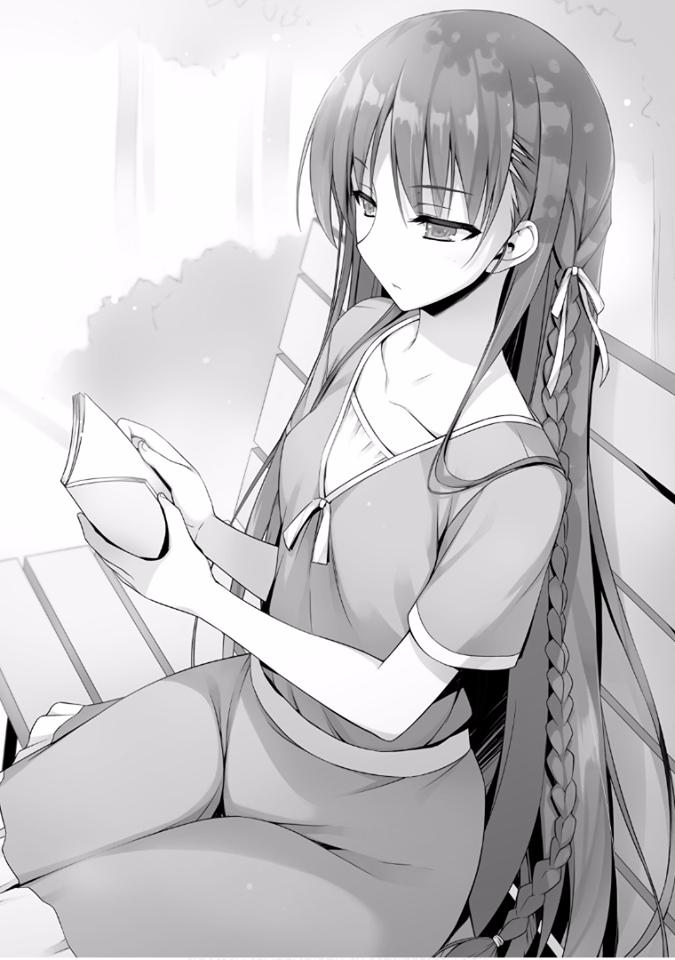
— ¿En qué momento estamos ahora?
— ¿Ehh?
— Estoy preguntando en qué momento estamos, en nuestro año escolar.
También en el mes.
— ¿De qué estás hablando?
— Mira, acabamos de terminar el primer semestre de nuestro primer año. No hay necesidad de apresurarse. El hecho de que hayan ampliado su ventaja un poco no significa que haya necesidad de desesperarse.
— Pero aun así, esa fue una derrota aplastante. Si no pensamos en una forma-
— Aunque no puedes ver lo que está directamente frente a ti, siempre miras hacia el futuro. La estudiante conocida como Horikita Suzune es excelente en lo académico, pero cuando se trata de batallas únicas como éstas, no puedes hacer nada en absoluto. Esa es la impresión actual que tengo de ti
—le dije a Horikita.
— ... Ya lo sé.
— Ya veo, entonces lo sabías. En cualquier caso, creo que es mejor que caigas hasta que llegues al fondo —le dije.
— ¿Qué quieres decir?
En este momento está bien que te aplasten completamente, siempre y cuando te levantes al final. Creo que Horikita tiene el potencial para hacer eso.
— Hay un orden en las cosas. Ahora mismo deberías tomar las cosas con calma y sin prisas, ¿no es así?
— Dices que hay un orden en las cosas, pero entonces ¿por qué actuaste en la isla deshabitada? Hay una contradicción allí —Horikita me responde.
— Quizás.
No se puede evitar si Horikita, que no sabe de mis interacciones con Chabashira-sensei, piensa en esto como algo misterioso.
Durante la prueba de la isla deshabitada, me vi obligado a “mostrar mi habilidad”, así que no tuve más remedio que actuar.
Por supuesto, el examen de crucero, en el que no tuve muchos peones que manejar, resultó difícil para mí, pero aun así había varios métodos disponibles.
Pero la razón por la que no usé esos métodos fue que, si me equivocaba demasiado, nada bueno podría salir de eso.
Fundamentalmente no tengo ningún interés en cosas como la Clase A o la Clase B. Por lo tanto, sin agitar demasiado las cosas y mostrando mis habilidades un poco a Chabashira-sensei, puedo ganar tiempo.
Es por eso que desde mi perspectiva, incluso ese examen fue un gran éxito.
— Más importante aún, ¿no tienes preguntas que hacer sobre mi apariencia?
—le pregunté.
— Creo que llevas ropa muy cálida, pero no tengo otra impresión.
Como de costumbre, no está interesada en otras personas.
— ¿Qué estás leyendo hoy?
— No es que te importe, ¿verdad?
Al decir eso, no mostró ninguna señal de dejarme ver el título del libro.
— Bueno, está bien también. Estoy haciendo que Ike y los demás esperen, así que me iré. ¿Quieres venir? —le pregunté.
— Debes estar bromeando. Me rehúso —respondió.
Ya sabía que me respondería así, decidí irme sin dudarlo.
*****
De repente, rodeado por Ike y los demás con los que no tenía ninguna conexión, el normalmente calmado Katsuragi no pudo ocultar su sorpresa.
Fue allí donde Kushida, quien debe haber participado en el examen anterior, comenzó a hablar con él.
— Lo siento por ser tan repentinos, Katsuragi-kun, ¿tienes algo de tiempo?
— Kushida, ¿eh? ¿Cuál es el significado de esto? —pregunta Katsuragi.
— La verdad es que lo escuché de Ike-kun y de los demás. ¿Pero hoy no se supone que es el cumpleaños de Katsuragi-kun?
— Cielos... es cierto pero... lo has descubierto bastante bien.
Tal vez no recordaba haber contado este hecho a nadie, pero nos mira con una expresión ligeramente confundida.
— Así que es por eso que nosotros cuatro queríamos celebrarlo con Katsuragi-kun y es por eso que te llamamos —continuó Kushida.
— No. No hay ninguna razón para hacer algo tan especial. ¿Estoy equivocado? —Katsuragi responde.
Parece que en lugar de regocijarse con esto, ha levantado la guardia.
Esto es inevitable. No sería extraño si pensara que es una trampa de la Clase D.
Pero aun así, el hecho de que no muestre signos de rechazarnos inmediatamente, es probablemente en gran parte gracias a la presencia de Kushida.
— ¿Tienes algún plan para encontrarte con alguien más hoy? —Kushida pregunta.
— Ese no es el caso, pero...
Kushida entonces aplaude con sus manos con una gran sonrisa, como diciendo
“estoy feliz”.
Si ella muestra ese tipo de sonrisa, cualquier hombre ordinario se enamoraría de ella. Pero este hombre es el líder de la Clase A, y no es alguien que simplemente puede ser hundido así.
— Lo siento, pero no es como si fuésemos amigos íntimos ni nada. Si hay motivos ocultos para esto, dilo.
— No hay motivos ocultos. Estamos pensando seriamente en celebrar tu cumpleaños, Katsuragi —Ike dijo eso con una cara seria.
Probablemente esté pensando en celebrar el cumpleaños de Katsuragi desde el fondo de su corazón lleno de simpatía.
— Cielos...
Esto es una obligación, Katsuragi apretó la boca con una expresión de rechazo.
Y entonces me di cuenta de que en sus manos, Katsuragi estaba sosteniendo la misma bolsa de regalo de cumpleaños que ayer. Era algo que compró hace dos días, y sin embargo lo llevaba consigo a donde quiera que va. Me pregunto por qué.
Parece que Ike y los demás no se han dado cuenta de esto (o se han dado cuenta y están fingiendo que no) y llamaron a Katsuragi.
— Lo siento pero tengo asuntos en la escuela ahora. Me disculpo —dijo Katsuragi.
— Escuela, ¿eh? Hablando de eso, recientemente has estado siempre vistiendo tu uniforme. ¿Qué estás haciendo?
Preguntó Ike de manera casual, pero Katsuragi no se perdió la incongruencia en esas palabras.
— ¿Qué quieres decir con eso?
Por la mirada afable que tenía hace un momento, parece que Katsuragi ha entrado en su modo de batalla cuando su expresión se volvió aguda.
— ¿Ehh? ¿Qué pasa con qué?
Ike permaneció distante sin darse cuenta del cambio, pero esa actitud distante se derrumbó con las siguientes palabras.
— ¿Cómo supiste que llevaba mi uniforme recientemente? —preguntó.
Siendo mirado fijamente por esos fuertes ojos que parecían atraerte, Ike tragó saliva.
Debe haber captado las palabras que se susurraron en su subconsciente y recordó algo inconveniente.
— ¿Ehh? No, eso es...
— Ayer, después de que me encontraste, me reuní con Ike y los demás. Y se los conté, ¿no es así? —No me quedó más remedio que actuar así y se lo
dije a Katsuragi—. Pensé que era ropa inusual para las vacaciones de verano —continué.
— Ya veo... pensando en eso, supongo que es cierto.
— Sí, es cierto. Eso, eso —dijo Ike.
— Entonces, ¿por qué vas a la escuela?
La apariencia asustada de Ike todavía era sospechosa, pero por ahora he logrado cambiar el tema de la conversación.
— Es personal. No tiene nada que ver con ustedes —Katsuragi responde.
— Esto puede ser innecesario. ¿Pero no hay algo que te moleste?
— ¿Por qué piensas eso?
— Tanto ayer como hoy, llevas esa bolsa, ¿verdad? Es un poco extraño que vayas a la escuela con eso. Y ya la tenías en tus manos cuando nos vimos en la tienda ayer. Han sido al menos tres veces, ¿no? —le pregunté.
Está el hecho de que lo vi por curiosidad, pero no es tan difícil deducirlo por lo que dije.
— Tengo algunos asuntos en el consejo estudiantil. Eso es todo —me dice Katsuragi.
De nuevo, apareció el nombre de un lugar inesperado.
— ¿Podría ser que la razón por la que llevabas el uniforme ayer es porque fuiste a la sala del consejo estudiantil?
— ... Es correcto. Pero parece que estaban fuera.
— Si mal no recuerdo, hasta ayer estaban renovando la habitación y no la podían utilizar.
Katsuragi hizo una cara ligeramente sorprendida y me preguntó cómo sabía eso.
— Tengo algunos vínculos con el presidente del consejo estudiantil.
— Entonces, ¿eres conocido del presidente del consejo estudiantil?
— Me pregunto si podrías llamarlo mi amigo pero... de todos modos es algo así —respondí.
— Ahh, ya veo. Horikita de Clase D es la hermana menor del presidente del consejo estudiantil ¿eh?
Como era esperarse del inteligente Katsuragi, rápidamente llegó a esa conclusión y estaba convencido.
— Si ese es el caso, sería mucho mejor si me acompañaras. Si el tiempo lo permite, ¿podrías acompañarme?
Katsuragi me solicitó algo como eso.
Y con esto, puedo más o menos entender el objetivo de Katsuragi.
— Qué una coincidencia. También tengo algunos asuntos con el consejo estudiantil en este momento.
— Entonces, ¿por eso también llevas tu uniforme?
Por supuesto, esto solo fue para poder averiguar el objetivo de Katsuragi pero con esto podré llegar al fondo de esta situación.
Asintiendo con la cabeza una vez, Katsuragi comenzó a dirigirse hacia la escuela, hacia la sala del consejo estudiantil.
*****
Katsuragi, con voz clara, dijo eso cuando llamó a la puerta de la sala del consejo estudiantil.
El presidente del consejo estudiantil Horikita Manabu y la secretaria Tachibana salieron a recibirnos. El Horikita mayor inmediatamente notó mi presencia.
— Parece que visitantes inesperados pero bienvenidos llegaron.
Me incliné ligeramente para devolver el saludo.
La secretaria Tachibana, por otro lado, tenía una expresión extremadamente disgustada en su rostro.
— Vine hoy porque tengo una solicitud que hacer. Básicamente, escuché que las solicitudes de los estudiantes pasan por el consejo estudiantil y es por eso que he venido.
— Parece que viniste ayer y anteayer. Nos ausentamos debido a las renovaciones. Me disculpo.
— No. Son las vacaciones de verano. La culpa recae en el que busca el encuentro. Pero me alegra haber podido reunirme con usted hoy.
Dependiendo de la situación, he estado pensando en ir directamente a su dormitorio —dijo Katsuragi.
A mitad de las vacaciones de verano, ¿por qué Katsuragi decidió venir a este lugar? Y cuáles son sus intenciones al estar aquí. Eso finalmente se va a revelar.
— En esta escuela, durante el período de clases, tenemos prohibido contactar al exterior sin permiso expreso. Me gustaría investigar más sobre eso y por eso he venido.
— Por lo que se ve, has observado las normas de la escuela: con excepción razones extremas e inevitables, el contacto está estrictamente prohibido.
Exactamente como dijo el mayor de los Horikita, solo en circunstancias inevitables está permitido. Enfermedades graves o lesiones son las únicas veces que se concede permiso.
— Sí. Pero en lo que respecta a casos individuales, ¿cuál sería el mejor modo de manejarlo? Me gustaría entregar un paquete y una tarjeta a mi familia fuera de la escuela. Por supuesto, no espero escuchar su respuesta
—dijo Katsuragi.
En otras palabras, una comunicación solo de su parte.
— Es lo mismo. Incluso si esto es solo de tu parte, está prohibido.
Esas palabras fueron devueltas a Katsuragi de manera profesional.
Pero Katsuragi, ni siquiera estaría aquí si esto fuera suficiente para hacerlo retroceder.
— En lo que respecta al contacto con el exterior, he oído que definitivamente incluye el envío de paquetes. Sin embargo, siempre que no envíe
información en cartas, ¿no se consideraría como no romper las reglas? —
Preguntó Katsuragi.
— No cambia el hecho de que está prohibido por las reglas. Esta es una regla que no ha cambiado desde la fundación de la escuela. Pero no está prohibido sin ninguna razón. Cuando se fundó la escuela, las reglas no eran tan estrictas como lo son ahora.
El Horikita mayor miró a la secretaria Tachibana, y luego asintió levemente mientras sonreía.
— Es como él dice. Originalmente, el envío del paquete que Katsuragi-kun desea estaba permitido. Sin embargo, hubo varios estudiantes que rompieron su promesa. Ocultaron sin permiso cartas dentro. Eso sucedió y ahora está absolutamente prohibido —dijo Tachibana.
Y así es como es, el Horikita mayor perforó con rechazo absoluto a Katsuragi.
Pero, Katsuragi no es el tipo de persona que retrocede. A pesar de que es de primer año, este hombre sigue siendo el líder de la Clase A. Inmediatamente volvió a evaluar la situación y adapta su enfoque.
— Entonces, debo preguntarle. Permítame solicitar el envío del paquete directamente en la tienda. No pondré un dedo en el paquete, solo pagaré su costo. De ser así, no puede haber espacio para el fraude —dijo Katsuragi.
— Pero aun así sigue en contra de las reglas...
— ¿En contra de las reglas? Esta escuela está basada en habilidades, si es necesario, he escuchado que puedes hacer cualquier cosa con suficientes puntos. Comprar puntos de exámenes o intercambiar estudiantes, hay muchos usos para los puntos. ¿Estoy equivocado? —Katsuragi continuó.
Parece que para Katsuragi el valor del regalo de cumpleaños que desea enviar es muy grande.
— Si ese es el caso, la situación cambia ligeramente.
El Horikita mayor, habiendo escuchado con calma lo que tenía que decir, cambió sutilmente su actitud.
— Antes de entrar en los detalles de los puntos, ¿puedes decirme a quién se lo enviarás? —pregunta.
— Es para mi hermana gemela. Como no tenemos padres, soy la única persona que puede celebrar su cumpleaños —dijo Katsuragi.
Este fue un resultado completamente contrario a nuestras teorías de mierda sobre el romance y otras cosas. De todas las cosas, era para su hermana.
— Voy a corregirte en un punto, el sistema de puntos no es todopoderoso. De hecho, la acción que mencionaste anteriormente es posible. Pero eso solo se debe a que “no está establecido en las reglas”. Lo que está prohibido en las regulaciones de la escuela, no podrá ser fácilmente alterado.
Fue una declaración un poco difícil de entender, pero probablemente significa algo similar.
Por ejemplo, usemos las calificaciones los exámenes como ejemplo. Hace un tiempo, usé puntos para comprar calificaciones para Sudou en las pruebas. Eso en sí mismo no es “ilegal”. Solo significa que se usaron puntos para comprar notas del examen.
Pero supongamos que Sudou rompió las normas de la escuela haciendo trampa para obtener una calificación aprobatoria en su prueba y en el caso de que la trampa fuera descubierta. Sería difícil entonces borrar el hecho de que él había
“hecho trampa”.
— Las reglas de la escuela están ahí para ser respetadas.
— Es gracioso, si ese es el caso, entonces las reglas de esta escuela están llenas de lagunas.
— No hay nada de extraño en eso. Simplemente significa que lo único que hace la escuela es establecer reglas que permiten una salida.
Y en respuesta a la pregunta de Katsuragi, el presidente del consejo estudiantil respondió de una manera que lo hacía parecer obvio.
— .............
Incluso para el inteligente Katsuragi, parece que su oponente esta vez es demasiado. En lo que respecta a su capacidad, la diferencia entre ellos es demasiado grande.
Este hombre, que durante 3 años en esta escuela, no solo está en la clase A, sino que también desempeña las funciones del presidente del consejo estudiantil, no tiene debilidades.
— ¿Está diciendo que incluso si uso mis puntos, no hay nada que pueda hacer? —preguntó Katsuragi.
— No hay nada que puedas hacer. Si esto es algo que la escuela prohíbe claramente, no se permitirá incluso con el uso de puntos.
Exactamente como el mayor de los Horikita había dicho antes, significa que el sistema de puntos no es todopoderoso.
Estoy seguro de que Katsuragi estaba decidido a gastar una gran suma para hacerlo, pero si esa única opción que le quedaba queda anulada, significa el final para él.
— Si terminaste, vete.
— Ya veo... entiendo, discúlpenme.
Katsuragi me miró una sola vez, pero cuando le indiqué que me quedaría, se fue silenciosamente.
— ¿No vas a volver?
— Lo que decías antes, se trata de cuándo sale a la luz que se han roto las reglas, ¿no es así?
En medio la situación, dije eso para respaldar a Katsuragi.
— ¿Qué quieres decir con eso?
La mirada del Horikita mayor ahora está dirigida hacia mí.
— ¿Recuerdas, hace un tiempo, Sudou de nuestra clase tuvo una pelea con algunos estudiantes de la Clase C?
El Horikita mayor asiente como si fuera natural. Causó un alboroto enorme en ese entonces.
— En aquel entonces los estudiantes de Clase C se quejaron con la escuela y se convirtió en un caso que condujo a discusiones para decidir un castigo.
Pero, en este momento, Katsuragi no rompió ninguna regla. Solo pensó preguntar por una acción que lo llevaría a romper las reglas. Y los únicos que saben de esto somos Katsuragi y yo, así como ustedes dos del consejo estudiantil. En ese caso, siempre que pasen por alto este acto estará bien.
Esta frase extrañamente dicha, estoy seguro de que si son ellos dos entenderán su significado.
Por ejemplo, si cometes una infracción de tráfico y un oficial de policía te atrapa.
Si sobornas a ese oficial y consigues que pase por alto tu violación, no serás objetivo de castigo y tu violación será perdonada. Eso es lo que significa.
— Y también, el procesamiento generalmente difícil de ese envío. Si se trata de ustedes, sería una tarea sencilla, ¿no?
— Ya veo. Estás diciendo que resolverás todo sin involucrar a la escuela,
¿verdad?
Katsuragi había tratado de obtener permiso de la escuela. Pero si eso no funciona, todo lo que tienes que hacer es asegurarte de que la escuela nunca se entere de esto.
Pero puede ser una idea que el honorable Katsuragi no podría pensar.
— Poder hablar tan audazmente sobre pasar por alto las violaciones a las reglas de la escuela, ¡qué delincuente tan aterrador!
Solo la secretaria Tachibana volteó para señalarme eso.
— ¿Cómo llegaste a esa conclusión?
— Esta escuela prohíbe los hechos violentos. Pero tú, en tu primer encuentro conmigo, no mostraste signos de contenerte. Eso es prueba suficiente de que mientras la escuela no se entere, todo puede ser pasado por alto.
Incluso si es el presidente del consejo estudiantil, no debería poder levantar la mano en público de esa manera.
— Eso es cierto. Si uno tiene que comunicarse con el exterior, no hay otro método que ese. Pero Katsuragi no se dio cuenta de ese hecho. En ese instante, perdió su única opción.
— ¿No piensas en ayudarlo ahora?
— No. No soy alguien que simplemente ayude a violar las normas de la escuela por el bien de ese hombre.
— Eres bastante estricto.
— Si realmente te sientes de esa manera, deberías haberle dicho a Katsuragi este método antes de que abandonara la habitación. Pero no lo hiciste.
Ahh. Realmente es problemático tratar con alguien tan inteligente como él. Ha visto a través de mí por completo.
Parece que se dio cuenta de que no quería decirle descuidadamente eso a Katsuragi y ponerlo en guardia.
— Ya terminé de refrescarme, volveré.
— ¿Podría decirle a Tachibana que prepare un té para ti?
— Pasaré. No sé lo que vas a poner.
— ¡Qué estudiante de primer año tan grosero! —dijo Tachibana.
Y cuando me moví para salir de la habitación, por alguna razón, el mayor de los Horikita también se levantó para escoltarme.
— Voy a fingir que no escuché lo que Katsuragi vino a decir hoy. Así que incluso si te mueves detrás de escena de aquí en adelante, no intentaré investigar. Puedes hacer lo que quieras —me dijo.
— Realmente no tengo ganas de hacer algo como eso.
— Eso también está bien. Solo te estoy haciendo saber que no me involucraré, eso es todo.
Pude leer la información de los ojos del Horikita mayor en un grado frustrante.
En otras palabras, me está diciendo que no se involucrará en este asunto, así que puedo seguir adelante y engañar a la escuela, es lo que quiere decir.
Decidí dejar la sala del consejo estudiantil para escapar de esa mirada. Debe haberse dado cuenta del hecho de que también estaba buscando nuevas sugerencias para Katsuragi.
— Es un hombre formidable, este presidente del consejo estudiantil.
*****
Cuando volví al vestíbulo de nuestro dormitorio, Katsuragi estaba allí sentado mientras suspiraba profundamente.
Inmediatamente me vio y se puso de pie.
— Te estaba esperando. Perdón por hacerte acompañarme en algo tan extraño hoy —me dijo.
— No. Yo fui quien insistió en seguirte. Lo siento por no haber sido de ayuda.
— Nada de eso. Probablemente era imposible desde el principio, no tengo más remedio que rendirme.
Debía tener la intención de entregar el regalo a su hermana a toda costa, pero como está prohibido por las normas de la escuela, parece que Katsuragi se ha rendido.
— Si quieres, por favor cómelo con tus amigos. Realmente no me gustan los dulces.
Diciendo eso, me entregó la bolsa que contenía el regalo.
Pero, no lo tomé.
— Es un desperdicio en mí.
— Ya veo. Supongo que no serías feliz si te diera algo originalmente destinado a otra persona.
Después de decir eso, Katsuragi bajó un poco la cabeza mientras se movía para regresar a su habitación.
— Katsuragi.
Dije eso y detuve a ese hombre.
— ¿Qué pasa?
— Tal vez podría ser de ayuda. He pensado en una forma de entregarle ese regalo a tu hermana.
— Fui rechazado por el consejo estudiantil, los más cercanos al cuerpo estudiantil. Dudo que haya una solución para eso.
— Es solo porque no tienes la determinación de romper las reglas. Si ignoras las reglas, hay una manera.
— ..... No estoy haciendo movimientos arriesgados.
Supongo que eso es imposible para alguien serio como Katsuragi, que también es el líder de la Clase A.
Especialmente si resulta ser un consejo de una persona de una clase baja, no lo escuchará sin rechistar.
— Creo que valdrá la pena escucharme, sin embargo, más aún, si dar ese regalo es algo tan importante para ti.
A pesar de que eran las vacaciones de verano, Katsuragi había ido varias veces a la sala del consejo estudiantil para obtener permiso para entregar su regalo.
Entiendo que sus sentimientos en este asunto son bastante entusiastas.
— ¿Es esto algo de lo que deberíamos hablar en un lugar como este?
Katsuragi señaló con los ojos a las personas a nuestro alrededor, así como a las cámaras de vigilancia.
— Supongo que no. Este no es realmente un buen lugar, ¿quieres venir a mi habitación?
De todos modos, la gente generalmente entra y sale de mi habitación a diario, no habrá ningún problema si llevo a Katsuragi.
Katsuragi y yo nos dirigimos hacia las habitaciones de los dormitorios.
Afortunadamente, dejando a un lado a los compañeros de clase, ni siquiera encontramos un solo alumno cuando llegamos a mi habitación.
Abrí la puerta de mi habitación y encendí las luces.
— Por favor entra.
— Es una habitación bastante limpia, o más bien, no hay nada aquí. Me recuerda el día que nos inscribimos.
— Me dicen eso a menudo.
Luego, después de tomar asiento, encendí el aire acondicionado y vertí té en las tazas.
— ¿Y? Estuviste hablando de las regla escolares o algo así antes.
— Por ejemplo, si estas tratando de entregar un regalo desde la escuela no es algo fácil de hacer. Como la entrega fuera de la escuela está prohibida en general. Tampoco podrás acceder a la oficina de correos.
Hay una oficina de correos ubicada en la escuela, sin embargo, es más o menos un lugar que solo los maestros usan.
Los estudiantes no entran. Es obvio incluso si les preguntamos, seríamos rechazados. Es por eso que Katsuragi pasó por el consejo estudiantil para tratar de obtener permiso y hacer los arreglos.
Sin embargo, dado que ellos también lo rechazaron, concluyó que es imposible entregar el regalo físicamente.
— Eso es un hecho, ¿verdad? Si no hay medios para entregarlo, no hay nada que se pueda hacer. ¿O estás diciendo que hay otra forma de entregar un paquete?
— Sí. Solo lleva el regalo descaradamente fuera la escuela sin pensarlo demasiado.
— No seas estúpido. ¿Quién sería capaz de hacer eso? Seguramente no un empleado de la escuela, ¿verdad?
Los únicos que son libres de entrar y salir de la escuela todos los días son los empleados que trabajan en diversas tiendas ubicadas en los terrenos de la escuela.
En otras palabras, si hacemos uso de esos empleados, se convierte en una tarea sencilla entregar el regalo. Pero hay un gran obstáculo para eso.
— Las personas que trabajan en esta escuela lo hacen bajo estrictas normas.
No se arriesgarán a escuchar la solicitud de estudiantes como nosotros.
Por otro lado, lo más probable es que nos denuncien ya que intentamos romper las reglas.
Si eso sucede, es muy probable que Katsuragi reciba un castigo severo.
— Por supuesto que no. No hay gente del exterior en la que podamos confiar.
Eso pensé, eso es lo que los ojos de Katsuragi parecían estar diciendo.
— No estás diciendo que puedes salir de la escuela sin permiso, ¿o sí?
— Naturalmente, ese no es el caso. Soy consciente de que abandonar los terrenos de la escuela sin permiso dará lugar a un castigo serio.
Por supuesto, la entrada y salida están estrictamente controladas, y si por algún milagro logramos pasar, nos llevaría a la expulsión si nos descubren.
Incluso si quisiéramos violar las normas de la escuela, los riesgos son demasiado altos.
— Sin duda, no podemos usar a los empleados, pero si se trata de un compañero de estudios, esa es otra historia.
— ¿Estudiante? Eso no tiene sentido. Si no hay una razón lo suficientemente importante, los estudiantes no pueden abandonar la escuela.
— Pero también hay excepciones que inevitablemente están involucradas con esas razones importantes.
— ¿Excepciones...? Si pudieran salir de la escuela ... no pueden ser---
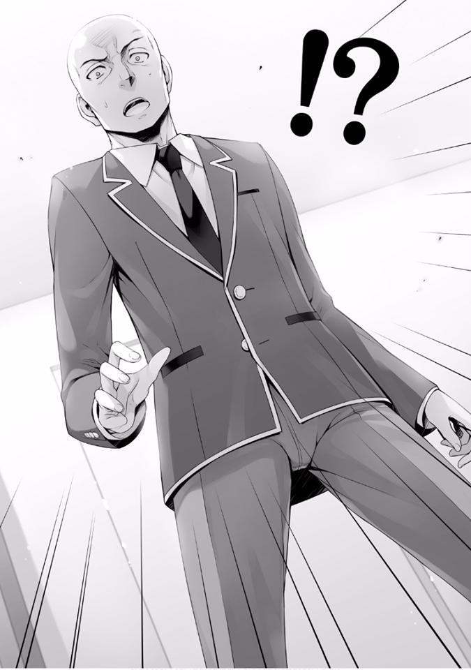
El inteligente Katsuragi llega a la conclusión rápidamente.
— ---Torneos de Clubs, ¿eh?
— Así es.
No importa cuánto nos quiera aislar esta escuela, hay algunas cosas que no se pueden evitar. Un buen ejemplo de eso serían los torneos de clubs.
Para los torneos llevados a cabo fuera de la escuela, no hay más remedio que abandonarla y dirigirse al lugar en el exterior.
— Por supuesto, si ese es el caso, sería posible llevar cosas fuera de la escuela. Pero la escuela también debería ser consciente de que existe el riesgo de que ocurra algo así. Seguramente habrá inspecciones de equipaje.
— Obviamente, pero hay muchas maneras de pasar eso, ¿no? A diferencia de las pruebas de dopaje realizadas en los Juegos Olímpicos, no es como si buscasen en cada centímetro de tu cuerpo.
— Eso es verdad, pero… —Katsuragi parece pensarlo mientras mira al frente al mismo tiempo—. Añadido al riesgo de sacarlo, la carga que se le impondría al estudiante que lo lleve a cabo no es algo simple. Pero a juzgar por tu tono, Ayanokouji, ¿estás diciendo que hay una persona a la que se lo puedes encargar…?
— Es correcto. Pero para convencerlos, es necesario que los visites tú mismo.
*****
Hablamos con el hombre cuyo torneo se lleva a cabo pasado mañana, para pedir su cooperación.
— ¿Huh? No jodas. ¿Quién haría voluntariamente algo así?
Tras escuchar la propuesta de Katsuragi, Sudou reaccionó con rechazo total.
Es natural, si lo encuentran cometiendo una violación de las reglas, no se sabe qué tipo de sanción recibiría.
— En primer lugar, no hay ninguna razón por la que debería escuchar la solicitud de este calvito.
— ¿Es lo que dice?
Parece que Katsuragi tampoco confía en Sudou y todavía está escéptico a este plan.
— Dejando de lado si lo aceptas o no, quiero preguntar algo a Sudou. ¿Qué tipo de controles realiza la escuela?
— Incluso si me preguntas eso.
Sudou, que todavía está insatisfecho con la situación, no mostró signos de responder seriamente.
— Dependiendo de las circunstancias, existe la posibilidad de que Katsuragi te dé una recompensa adecuada, ¿sabes?
— ¿Recompensa?
— ...... Es cierto. Naturalmente, estoy pensando que tengo que pagar.
Después de escuchar eso, Sudou que no tenía motivación para hacerlo, comenzó a considerarlo seriamente.
— Primeramente en la mañana, antes de abordar el autobús para llegar al torneo, nos revisan el equipaje. Luego, se confiscan nuestros teléfonos. Y
cuando llegamos al lugar, simplemente nos cambiamos de ropa y entramos al campo. Para las comidas, una vez que termina el torneo, solo comemos en la cancha. Sin embargo, no conozco los detalles exactos.
— ¿Qué pasa con el lugar donde consigues una muda de ropa y el manejo de tu equipaje?
— En el casillero del vestuario como de costumbre. Por supuesto, los maestros no estarán presentes mientras te cambias, pero la vigilancia es estricta. Incluso los baños se mantienen separados para nuestro uso y ni siquiera podemos escuchar a los estudiantes de la otra escuela.
Katsuragi, que escuchaba nuestra conversación, recrea con calma la situación.
— Realmente parece estricto. En primer lugar, no parece ser una buena idea siquiera llevar el equipaje contigo.
— ¿Está bien llevar comida contigo?
— Ahh, eso depende de nosotros. Solo hay unos pocos que lo hacen, pero hay quienes llevan.
— Si ese es el caso, parece una tarea bastante simple sacarlo.
Me levanté y traje conmigo una caja de almuerzo cerrada y una botella de agua que estaban en el estante.
Esto era originalmente parte del equipo que la escuela había preparado para los estudiantes. En la habitación de cada estudiante, cada uno de estos se había colocado sin falta.
— He puesto la el regalo dentro de la caja. Apenas cabe. Y con respecto a la bolsa, la he enrollado y colocado dentro de la botella de agua. Si hago esto, no deberían ser capaz de descubrirlo.
No importa cuánto verifiquen los maestros, no llegarían tan lejos como para mirar el contenido interior.
— Espera un momento. Incluso si pudiera sacarlo, ¿cómo lo entrego? No hay forma de entregarlo y tampoco tengo dinero.
— Si se trata de dinero, no te preocupes, solo tienes que usar esto.
Saqué los recibos de dinero en efectivo que obtuve en la oficina de correos.
— Todo lo que resta es ese día, encuentra una oportunidad y envíalo por correo.
— Lo estás diciendo como si fuera algo simple. Al final, esa es la parte difícil,
¿no?
— ... Sin duda, es la forma más realista posible en la que hemos pensado, pero los riesgos también son altos...
Eso es porque además de estar involucrado en una violación de las reglas de la escuela, también ha hecho que Sudou, el cual es de otra clase, se involucre.
Normalmente Katsuragi se habría retirado inmediatamente, pero todavía no ha dado señales de retroceder con Sudou.
— Desafortunadamente no tengo a nadie a quien pueda pedirle algo como esto en mi clase. Si pudiera pedirte que hagas esto, ¿lo harías?
Katsuragi inclinó la cabeza y pidió un favor. Pude entender claramente cuán importante es la existencia de su hermana para Katsuragi.
— Sudou. Creo que esto es algo que absolutamente no aceptas normalmente.
Pero, por el contrario, esto también tiene un gran beneficio para ti, ¿no?
— ¿Beneficio? ¿Te refieres a la recompensa de la que hablabas antes?
Cuando miró a Katsuragi, asintió como si entendiera.
— Te pagaré 100 000 puntos como recompensa si tienes éxito.
Para su oferta inicial, Katsuragi arrojó una cantidad tremenda. Sudou se puso rígido en ese momento.
Desde la perspectiva de alguien que apenas llega a fin de mes con 1 000 o 2000
puntos por día, eso es una cantidad inmensa.
— ¿Cuál es tu razón para querer entregar ese paquete hasta ese extremo?
Con esa cantidad increíblemente alta de puntos, parece que por el contrario, la guardia de Sudou se levantó e hizo esa pregunta.
— ... Tengo una hermana gemela. Has oído eso de Ayanokouji.
También fue algo de lo que habló en la sala del consejo estudiantil. Pero, solo por una hermana, él le está dando un tratamiento sorprendentemente especial.
Hay una gran cantidad de hermanos y hermanas que se llevan bien, pero sería discutible si estarían dispuestos a ir tan lejos como violar las reglas para celebrar su cumpleaños.
— Mi hermana está enferma, ¿sabes? Además de eso, ya que mis padres y abuelos han fallecido, en este momento está bajo el cuidado de nuestros parientes. Así que soy como un padre sustituto para ella. Si no celebro su cumpleaños, ¿quién lo hará? —dijo Katsuragi.
Pensé que algo más estaba pasando, pero la situación oculta era mucho más grave de lo que esperaba.
— Entendí las reglas de esta escuela incluso antes de inscribirme. Pero no esperaba que no pudiera enviar ni siquiera un paquete. Reconozco que fue un error mío. Pero incluso si lo admito, aún deseo enviar un regalo a mi hermana de parte su hermano sin importar qué.
Bueno, revisé las reglas de la escuela brevemente pero no mencionaban algo así específicamente. A lo sumo, solo mencionaban que abandonar el recinto escolar sin permiso mientras estés inscrito está prohibido. Estaba escrito que nada más que esa comunicación con el exterior está prohibida.
Por supuesto, el contacto a través de cartas también está prohibido, eso también se incluía, pero es un hecho que “no se pueden enviar paquetes” no está escrito en las reglas.
— Y es por eso que viniste a mí.
Cuando me encogí de hombros, Sudou susurró en una voz que era lo suficientemente alta para que Katsuragi pudiera escucharla también.
— Más importante aún, ¿qué hacemos si nos traiciona? No quiero algo como lo que sucedió en aquel entonces con la Clase C, ¿sabes?
Hace un tiempo, cayó en una trampa y, como resultado, casi fue expulsado del club de baloncesto.
— No hay necesidad de preocuparse por eso. Él también debería haberse dado cuenta de que pensaríamos algo así.
Seguramente debe tener una propuesta para esto. Katsuragi también asiente como si eso fuera obvio.
— Como anticipo, transferiré 20 000 ahora. Los 80 000 puntos restantes se pagarán más tarde como recompensa por tu éxito.
Al hacerlo, si algo sucediera, inevitablemente quedaría como evidencia de complicidad. Significaría que cualquiera de los dos quedaría atrapado si decidieran traicionarse.
— 20,000 como anticipo... pero...
Aunque era una gran suma, puedo entender la razón por la que Sudou se está asustando con esto.
Está pensando en su vida con el baloncesto. Si la violación de la regla se descubriera durante la mitad de sus actividades en el club de básquetbol,
incluso se le podrían prohibir otras actividades. Lo más probable es que tenga miedo de ese peligro.
— He pensado en un plan bien trazado. Y también, ya he pensado si esto es una trampa o no, pero en el caso de que te atrapen, es obvio que también me repercutirá seriamente.
Si esto se descubriera, Katsuragi también recibiría un daño igual, si no es que más que el mismo Sudou.
A menos que tuviera ese tipo de resolución, esto no podría arreglarse. Pero estoy seguro de que Katsuragi también está pensando en eso.
En el caso de que él regale una gran suma de puntos, es una restricción para asegurarse de que no sea traicionado por Sudou.
— Todo lo que queda es si simplemente te atrapan, eh...
Si eso sucede, Katsuragi no se hará responsable de eso. En otras palabras, si eso sucede, solo Sudou sufrirá.
Sopesando sus opciones en una escala, ¿cómo tomará su decisión?
Después de haberme mirado brevemente, parece que Sudou ha logrado llegar a decisión ya que tenía una expresión de convencimiento en su rostro.
— Lo entiendo. Todo lo que tengo que hacer es hacerlo bien, solo tengo que ser yo, eh, alguien que acepte algo tan peligroso.
— ¿Está bien......?
A pesar de que fue Katsuragi quien quiso persuadirlo, había entendido que, en realidad, las posibilidades de que su solicitud fuera aceptada no eran altas.
Incluso si tuviera que dar una gran cantidad de puntos. O si le solicitara más puntos a cambio y la negociación se rompiera.
Debe haber tenido ese tipo de imagen. En ese sentido, la existencia del hombre llamado Sudou fue inesperada y un salvador para Katsuragi.
— Si también me hablas de tu hermana enferma, me resulta difícil negarme.
Dijo Sudou mientras se rascaba la cabeza con una expresión llena de emociones.
— ........
Pero el generalmente cauteloso Katsuragi no mostró ningún signo de ser honestamente feliz con la existencia de este tal Sudou.
Cruzando los brazos con una expresión difícil, parecía estar reflexionando sobre esto en silencio.
— ¿Qué? Ya te dije que lo haría. ¿Hay algo más?
— Tal vez todavía está dudando de nosotros. De que lo traicionemos o no.
— ¿Qué se supone que significa eso? Él fue el que nos preguntó y ahora está dudando de nosotros.
Parece que Katsuragi es del tipo que enfatiza jugar de forma segura.
Cuando la otra parte comenzó a adoptar una actitud más firme, se volteó para mirar. Quizás es su naturaleza volverse cada vez más desconfiado a medida que la conversación avanza sin problemas.
Por supuesto, desde el principio, también entendí algo así. Desafortunadamente, en este caso particular, es solo ansiedad innecesaria. Sudou no tiene una cara oculta.
Si pudiera agregar algo a esto, también soy igual. Con respecto a esto, ni una sola vez pensé en emboscar a Katsuragi. Si tengo que decirlo, vale la pena que Katsuragi nos deba a una, además de obtener puntos privados del propio Katsuragi.
E incluso en la remota posibilidad de que Katsuragi nos traicione, siempre que tengamos la determinación de autodestruirnos, podemos involucrarlo también en esto. Con respecto a este punto, Katsuragi, que ha demostrado su debilidad desde el principio, básicamente no tiene ventaja sobre nosotros.
A partir de esta situación, también podría decir que el presente no es un farol.
Habiendo llegado a esta conclusión, le presenté a Sudou como intermediario. No sabía de cuántos puntos estaría dispuesto a desprenderse, pero 100 000 puntos es un buen negocio.
— Por las dudas, el destino de la transferencia no es Sudou sino Ayanokouji.
Lo siento Ayanokouji, pero haré que transfieras los puntos a Sudou después de que lo logre.
— ¿Por qué tengo que aceptar una tarea tan problemática?
— Seguro, supongo.
En el caso de que Sudou sea atrapado tratando de sacar el regalo o al enviarlo por correo, si se descubriera la transferencia de una cantidad tan grande de puntos, la escuela lo vería sospechoso.
Pero al tener como destino de la transferencia a alguien diferente, no llegaría hasta Katsuragi.
Sudou parecía estar insatisfecho con eso, pero había dado su consentimiento después de que acepté transferirle los puntos más tarde.
— Una cosa más, quiero una prueba absoluta de que no estés mintiendo.
— ¿Huh? ¿Qué quieres decir con mentir?
Sabía que todavía había cosas que preocupaban a Katsuragi. Fue el hecho de que Sudou pudiera mentir sobre “enviar el regalo por correo”.
Incluso si Sudou mentía, no había forma de que Katsuragi lo confirmara. Como no podía contactar a su familia desde aquí, independientemente de si el regalo era o no recibido, tendría que esperar más de 2 años hasta la graduación para averiguarlo. Para entonces sería demasiado tarde.
Pienso en varias formas de llegar a esa evidencia. Y como la forma más simple y confiable, llegué a la conclusión de que sería capturar evidencia fotográfica del envío por correo con un teléfono.
Pero poner eso en palabras fue un poco difícil. No quiero arruinarlo y atraer la atención de Katsuragi.
— Ya sea que realmente lo hayas entregado o no, no tengo los medios para asegurarlo.
— ¿Qué se supone que es eso?, no hay forma de que mienta. ¿Eres estúpido?
—dijo Sudou.
— Por supuesto que quiero creerte. Pero tú y yo todavía no tenemos el tipo de relación en la que pueda confiar en ti, basándome solo en que te creo.
Frente a un Sudou ligeramente insatisfecho, Katsuragi se cruzó de brazos como si pensara un poco.
— Usemos un teléfono. En el momento en que lo envíes por correo, quiero que grabes un video y me lo envíes. Si lo haces, tu credibilidad aumentará enormemente.
Parece que Katsuragi había logrado mediar esto bastante bien.
— ¿No me has estado escuchando? Te he dicho que nuestros teléfonos ya habrán sido confiscados.
— Por supuesto que entiendo. Y es por eso, Ayanokouji, me gustaría que colabores también.
— ¿Y eso significa?
— Todavía queda mucho espacio libre en esta botella de agua. Pon tu teléfono luego de apagarlo. Si lo hacemos, debería poder llevar un teléfono al exterior sin que lo descubran.
Como a un estudiante se le asigna un teléfono por regla, si en la revisión de equipaje, Sudou entrega su teléfono, no habrá más sospechas.
— Por supuesto, si entregas su teléfono. También estoy dispuesto a darte una recompensa.
Al decir eso, ofreció pagarme 10 00 puntos. No es un mal trato.
— Entiendo. Cooperaré.
— ¿Estás seguro, Ayanokouji?
— Es algo con lo que puedo cooperar. También entiendo lo que dice Katsuragi. Además, conseguir puntos sería de gran ayuda para mí también.
— Entonces te lo encargo.
Dijo Katsuragi mientras inclinaba la cabeza profundamente antes de salir de la habitación y regresar.
— ... Me puse nervioso gracias a algo innecesario.
— ¿Estás bien, Sudou?
— Es la segunda vez que participo en un torneo, ¿sabes? Creo que al menos sé cómo funciona...
Pero aun así, como sabe que va a estar haciendo algo malo, puedo entenderlo sintiendo un poco de resistencia.
Pero ya que Sudou vivió su vida como delincuente, en relación con esto, muestra una actitud comparativamente tranquila.
— Entonces, ¿cuándo me das tu teléfono?
— Veamos --- si es posible, me gustaría considerar una alternativa. Si entrego mi teléfono, la transferencia de una gran cantidad de puntos permanecerá en él y, si por casualidad sucediera algo, solo te traería problemas. Si es posible, me gustaría usar el teléfono de alguien más.
Sería mejor si pudiera obtener un teléfono de alguien completamente ajeno al asunto en cuestión, como Ike o Yamauchi.
— Nadie te prestaría su teléfono.
— Si dijera que les daría 5 000 puntos, con mucho gusto me prestarían sus teléfonos.
— ... eres un tipo sorprendentemente malo —me dijo Sudou.
Y entonces Sudou y yo, que recibimos una solicitud de Katsuragi, nos preparamos para enviar el paquete en una fecha posterior.
Por supuesto, después de eso, Sudou logró engañar con éxito a la escuela y enviar el paquete por correo. Y también logró grabar ese momento y eliminar los datos de ello y la transferencia.
No sé si fue entregado con éxito o no a la hermana de Katsuragi, pero estoy seguro de que estuvo bien. Creo que fue gracias a Sudou que esto se terminó sin ningún problema, pero tal vez, pensé que el Horikita mayor podría haber estado involucrado.
Como debía saber que íbamos a intentar algo, si se trata de ese hombre, debería haber sido capaz de hacer los arreglos necesarios para ello. Por el contrario, habría podido vigilar a Sudou y el momento en que violó las normas.
Era solo mi imaginación egoísta, y no tengo la intención de averiguar la verdad.
Porque sentí, que si eso era cierto, un día sin necesidad de preguntar, llegaría a entender la verdad.
*****
Y cuando lo hizo, por alguna razón, dos estudiantes varones estaban allí esperando en frente de ella.
— ¿Qué están haciendo frente a mi habitación?
— ¡Ooh---! Finalmente has regresado eh, Katsuragi. ¡Llegas tarde, bastardo!
— Cielos... ¿ustedes son? Estudiantes de la clase D, ¿eh?
Estos dos de alguna manera eran familiares para Katsuragi, y aunque tenía sus dudas, les preguntó.
— Esas cosas no son importantes, de todos modos, ¡felicidades!
E inmediatamente después de que te lo dijeran. ¡Pan! Petardos estallaron y atacaron a Katsuragi.
— ¿C-cuál es el significado de esto?
— ¿El significado? Tu cumpleaños es pronto, ¿verdad? ¡Es por eso que venimos antes para celebrarlo!
— ¿C-celebrarlo? ¿Ustedes de la Clase D? ¿Por qué? No hay razón, ¿verdad?
— Hay una razón. Ya que todos somos vírgenes aquí, vamos llevarnos bien a partir de ahora. ¿Sí?
Katsuragi se retira en respuesta al lenguaje vulgar, pero Ike le entrega un regalo de cumpleaños a la fuerza.
— Por favor come esto. ¡Es un pastel de cumpleaños elegido por nuestra ídolo Kushida Kikyo-chan!
— Yo... no puedo aceptar---
— Está bien, está bien.
La caja fue presionada a la fuerza sobre él.
— ¡Nos vemos más tarde!
Y entonces los estudiantes varones de la Clase D se fueron corriendo.
Lo único que quedaba era la basura de los petardos dispersos en frente de la habitación y el pastel.
— Aunque es un pastel, es bastante cálido.
Cuando Katsuragi abrió lentamente la caja, se trataba de un pastel de chocolate el cual rápidamente se elevó a temperatura ambiente y se volvió fangoso.
— ¿... Esto es, una nueva forma de acoso...?
Katsuragi no pudo evitar pensar eso.
INCLUSO ENTONCES, HAY PELIGRO ACECHANDO EN LA VIDA COTIDIANA
Todo comenzó con un repentino incidente a las 6 en punto de la tarde en algún día determinado.
Recibí un correo de la escuela en mi teléfono, decidí verificarlo y, cuando lo hice, parece que debido a problemas que ocurrieron en Departamento de Suministro de Agua, todo el dormitorio recibió una alerta de que no tendría acceso a agua por un tiempo.
Cuando intenté abrir el grifo para probarlo, de hecho no salió agua. Parece que los trabajos de reparación tomarán algún tiempo para se terminen y si se prolonga, podría tardar hasta la mañana.
Pero la escuela también está cuidando adecuadamente a los estudiantes y, en caso de que sea necesario, se entregarán más de 2 litros de agua a los estudiantes en la cafetería.
Y dado que se espera que la cafetería esté abarrotada, también se publicó una advertencia para notificar sobre este hecho. Además de una prohibición, las tiendas de conveniencia que se espera que estén bastante concurridas estarán fuera de servicio temporalmente.
Además, hay agua mineral para beber gratis en el centro comercial Keyaki, pero está prohibido embotellar esa agua y llevarla con nosotros.
Sin embargo, ese no es mi problema. Si hay un problema, sería el inodoro.
Aunque hay agua en el tanque, ya que solo se puede usar una vez hay que tener precaución.
— En cuanto a las bebidas... todavía quedan un poco.
El té en el refrigerador solo alcanzará aproximadamente para una taza, pero eso debería ser suficiente por hoy. Para la cena, tendré que soportarlo haciendo un plato sin usar nada de agua.
Después de eso, cuando comencé a hacer los preparativos para la cena indiferentemente, de repente mi teléfono sonó.
Pero cuando me moví para responder, el sonido cesó. Duró aproximadamente 2
tonos.
Cuando extendí la mano hacia mi teléfono para verificar la identidad de la persona que llamaba, resultó ser Horikita Suzune.
Es inusual que ella me llame. Incluso si Horikita tiene asuntos conmigo, por lo general lo hace a través del chat.
Como sentía un poco de curiosidad sobre el asunto, decidí devolver la llamada.
Sin embargo, no importó cuántas veces llamé, Horikita no contestó.
Mientras sentía que era un poco misterioso, desistí de llamar a Horikita, coloqué mi teléfono en la parte superior de la mesa y volví a cocinar mi cena.
Hoy cocinaré arroz frito. Es una simple cuestión de cocinar arroz frito con el arroz que había comprado con antelación. Después de agregar los huevos, el resto fueron solo los toques finales. Y fue entonces cuando el teléfono sonó de nuevo.
Una vez que apagué el fuego y caminé hacia el teléfono, de nuevo se detuvo el sonido. Mirando el teléfono, era como antes, una llamada de Horikita.
Una vez que volví a llamar, como era de esperar, no importa cuántas veces suene la llamada, Horikita no respondió.
Sentí una ligera duda de esta misteriosa situación. Quizás, justo después de que terminó la llamada, ella también está ocupada. Esa era también una posibilidad, pero por la personalidad de Horikita es difícil de imaginar.
Ella es del tipo a quien llamar solo cuando está en un estado mental tranquilo.
Incluso si hubiera sucedido algo inesperado, cortar la llamada dos veces y no contestar cuando devolví la llamada fue extraño.
A partir de esto, la conclusión a la que llegué es que Horikita podría estar atrapada en una situación inesperada.
— Sí, claro.
Exasperado conmigo mismo por pensar demasiado sobre esto, decidí dejar de cocinar por el momento y responderle a través del chat.
“Parece que me has llamado dos veces, ¿cuál es el problema?”
Y cuando envié ese mensaje, sin siquiera un retraso, apareció la notificación de leído.
Pero a pesar de haber leído el mensaje, no llegó una respuesta. Esperé bastante tiempo pero no la recibí.
“Estoy cocinando ahora mismo, por lo que mi respuesta puede tardar en llegar, pero si me contactas te responderé”.
Le envié eso. Al igual que antes, apareció la notificación de leído pero no recibí respuesta, así que decidí volver a cocinar.
*****
— No puede ser--- ¿realmente es una situación peligrosa?
Quedar atrapada en una situación inesperada y colapsar en algún lugar, no puede ser, ¿verdad? No hay duda de que, al menos, no es la reacción habitual de Horikita.
Me pregunto si existe la posibilidad de que su teléfono esté fuera de servicio y es por eso que no puedo contactarla. Pero, si ese fuera el caso, no sería necesario contactarme para pedirme consejo. Simplemente necesitaría contactar a la escuela después.
Si Horikita tuviera un amigo que verificara su habitación en un momento como este, sería un asunto rápido de resolver pero... lamentablemente no podía pensar en un solo amigo que hiciera eso por ella.
“¿Estás bien?”
Aunque esa era una línea cliché, intento sondear su situación de esa manera.
— Oooo...
La notificación de leído no apareció. A diferencia de hace un tiempo, la situación de su teléfono había cambiado.
Quizás la batería de su teléfono se había agotado, o se había apagado automáticamente. Eso también podría ser posible pero... ¿qué otras posibilidades podía pensar?
En primer lugar, llamarme por teléfono es sospechoso. ¿Cuál es la razón para eso?
En cualquier caso, el hecho de que ella no lo esté diciendo directamente es extraño. Entonces, si realmente lo pienso--- La primera posibilidad sería que mientras Horikita tenía asuntos conmigo, ella está inmersa en otro asunto.
Por ejemplo, los maestros la llamaron o un compañero de clase la llama. Pero eso es poco probable. En medio de las vacaciones de verano, y más aún de noche, es difícil imaginar que la escuela la llame y no creo que exista un amigo que se ponga en contacto con Horikita.
Si es así, la teoría ganadora sería que ella tiene algo de lo que hablarme.
Aunque intentó llamarme, se vio envuelta en algún tipo de accidente y no pudo hacerlo. Eso o se durmió o lo olvidó y así no pudo devolver la llamada. Algo parecido a eso.
— Simplemente no encaja.
Horikita es una estudiante de honor y puede cuidarse sola. No me puedo imaginar a una Horikita así, simplemente olvidando responder. A pesar de que había intentado llamarla, no se conectó, y me vi obligado a cambiar al chat.
Sin embargo, incluso en esa conversación, ella no envió ninguna oración en respuesta. Por un período de tiempo, las notificaciones de leído aparecieron, aunque el hecho de que hayan aparecido me lleva a imaginar que su teléfono todavía está en funcionamiento.
— Estoy preocupado.....
Incluso si me quedo aquí, las cosas que puedo hacer por ella son limitadas, pero también estoy preocupado, así que no puedo dejarla sola.
Por ahora, para hacerle saber que estoy tratando de contactarla, decidí llamarla de nuevo.
Si he llegado tan lejos, a menos que esté bastante ocupada o no haya notado mis llamadas, debería responder. Nuevamente, llamo a Horikita.
Mientras lo hacía, en la cuarta llamada, al menos logré establecer contacto con ella.
— Hola.....
Horikita no pareció sorprenderse, pero parecía tener una voz ligeramente cansada.
— Oye, lo siento por llamarte tantas veces, pero me preocupé ya que recibí tu llamada. ¿Estabas durmiendo?
— No. Lo siento por no responder.
No sentí ningún tipo de pánico ni sensación de que hubiera ocurrido un accidente.
— En este momento estoy un poco ocupada, así que si eso es todo lo que querías decir, ¿puedo cortar la llamada ahora?
Una vez Horikita dijo eso podía escuchar a través de su teléfono un sonido metálico.
— ¿Qué fue eso?
— No, nada en particular. Adiós.
Parece que no quería que la investigara más ya que cortó la llamada a toda prisa.
Estoy un poco preocupado, pero me las arreglé para hacer contacto y ella misma dice que todo está bien. Decidí olvidar esto por ahora y pasar la noche tranquilamente.
*****
Pensé que todo el día terminaría así. Pero, alrededor de las 9 p.m., la pantalla de mi teléfono se iluminó.
Un nuevo mensaje había llegado.
“¿Estás despierto?”
Era un mensaje de Horikita.
“Estoy despierto”.
“Me gustaría hablar contigo un poco, ¿tienes tiempo ahora?”
Habían casi dos horas desde nuestro último contacto.
“Te llamaré”.
Después de decirle eso, llamé inmediatamente al teléfono de Horikita y, con solo un tono, contestó.
— ¿Qué pasa?
— Hay algo que quiero preguntarte... —Horikita dijo eso de una manera un poco confusa, y después de eso se calló brevemente—. Digamos, por ejemplo, que hay una tortuga.
— ¿Huh?
De repente, una historia descabellada llegó por parte de Horikita.
— Esa tortuga es una tortuga extremadamente inteligente y talentosa. Pero, se involucró en un accidente y quedó boca arriba, ¿no crees que sería algo terrible? No podrá levantarse por sí misma nunca más.
— Así es. Cuando se habla de tortugas normales pueden volver a acomodarse, extienden el cuello y usan las piernas para equilibrarse y, en la mayoría de los casos, pueden recuperar su postura inicial. Por cierto, las que no pueden recuperarse serían las tortugas gigantes y las tortugas marinas. Es porque ambas especies nacen en condiciones que les impiden volver su postura inicial.
— ...........
Cuando dije esas palabras innecesarias, Horikita guardó silencio.
— Eso fue innecesario. Honestamente, sería más fácil si asumieras que no pueden volver a acomodarse por sí mismas y escucharas.
Ya me lo imaginaba. Incluso pensé que era algo espectacularmente innecesario.
— ¿Y? ¿Esa situación en la que no puede volver a su posición, ¿hay algo con eso?
— Si te encuentras con una situación así, ¿qué harías? Solo quería pedir una referencia para el futuro.
— Si estuviera en esa situación, probablemente la despertaría. No es una tarea demasiado molesta.
De hecho, no tendría ninguna razón para salvarla, pero tampoco tengo motivos para abandonarla.
Si ese es el caso, también podría ayudar un poco. Pero me pregunto a donde lleva exactamente esta historia.
Si simplemente considero la situación, sería que Horikita en este momento, es como la tortuga, está en una situación en la que no puede recuperarse por sí misma. Pero por la llamada, no pude detectar ninguna sensación de pánico y ella parece tranquila. Probablemente significa que no es tan urgente esta situación.
— Entonces... ¿qué te preocupa?
En respuesta a Horikita que estaba dando vueltas al asunto, simplemente le pregunté eso.
No importa qué problemas enfrente, no hay beneficio en prolongar esto. Si ese es el caso, esto hace que escucharlo sea lo más rápido.
— No tengo ningún problema en particular.
— No, pero ahora mismo nuestra conversación va en esa dirección, ¿no es así?
— Estaba hablando de una tortuga volteada, no tiene nada que ver conmigo.
— ... Entonces ¿por qué hablaste de esa tortuga?
— Simplemente me dio la gana. Quería contarte sobre la tortuga volteada.
Esto es un desastre.
— Esto no es clásico de ti, no, pedir ayuda tampoco, pero... me llamaste porque no tenías a nadie más en quien puedas confiar. Si ese es el caso, decirlo rápidamente es lo mejor.
La regañé y después de un rato, ella comenzó a hablar.
— Si tienes ganas de ayudar a las personas sin importar lo que pase no se puede evitar, no es como si no pudiera permitirte que me aconsejes sobre esto.
— O-oh. ¿Y? Está bien, así que dímelo.
La Horikita que había sido testaruda por un sentido de superioridad había dicho una cosa increíble como esa. Pero en este punto, todo vale.
— Solo estoy teniendo un pequeño problema.
Y finalmente, ella lo admitió honestamente.
— ¿Dónde estás ahora?
— Estoy en mi habitación —Horikita respondió.
— No me digas, ¿aparecieron insectos negros?
Si ese es el caso, si puede permitirse el lujo de hablar casualmente, ella emite un aura de que no lo puede resolver fácilmente. Sin embargo, los dormitorios se
mantienen limpios y Horikita vive en un piso superior. Las posibilidades de que aparezcan en su habitación son bajas.
— Ese no es el caso. Si fuera así, podría manejarlo yo misma.
— ¿Cómo lidiarías con eso? ¿Detergente? ¿Agua caliente? ¿Pantuflas? Y si ninguno de esos, ¿entonces cómo?
También noté que no me contó inmediatamente los detalles de su problema. No importa cuán bendecido sea con mis habilidades de razonamiento, no puedo imaginar la situación de Horikita.
— La razón por la que estoy en problemas es... en realidad está bien. Lo resolveré yo misma.
— Estás tratando de resolverlo tú misma, pero ya pasaron más de dos horas sin que lo hayas hecho, ¿no es así?
Ya debería haber estado envuelta en el problema cuando intentó contactarme.
Si es así, debería haber batallado bastante.
— Bueno.....
Así que eso es una afirmación, sin embargo, tal vez los detalles parecen pesar bastante sobre ella, ya que no respondió de inmediato.
Pero entonces---
— ..... Bueno... de hecho estoy cerca de mi límite físico. Te lo diré con sinceridad.
Por fin puedo ir al grano. Pensé eso, pero Horikita interrumpió.
— ... ¿Podrías venir a mi habitación ahora...?
Fue una declaración significativa, a la vez tímida y disgustada.
— Pero ya son más de las 9.
— Lo entiendo pero... no hay otra manera de resolver esto que no sea que vengas aquí...
Era una voz acalorada. Era una voz frustrada que sonaba un poco dolida.
— Sin embargo, podría haber algo de dificultados. Ir hasta los pisos superiores donde viven las chicas.
— Entiendo eso, pero a menos que logre que llegues aquí, será difícil resolver esto.
Y así como así, Horikita terminó la llamada.
— Esto parece un poco aterrador... pero supongo que no hay nada más que pueda hacer más que ir.
En cualquier caso, no sería bueno llegar tarde, así que agarré solo mi teléfono y las llaves y salí de mi habitación.
*****
Luego, en el momento adecuado, cuando llegué al piso 13 donde vive Horikita, presioné el timbre.
Después de esperar un momento, como no había señales de que abriera la puerta, intenté abrirla yo mismo y, como no estaba cerrada, la puerta simplemente se abrió.
— ¿Horikita?
La habitación de Horikita tiene cocina, como también hay una puerta instalada dentro, no pude ver la habitación.
En el pasillo y la cocina, la cual apenas había cambiado desde el momento de nuestra inscripción, no había rastros de Horikita.
— Estás solo, ¿verdad? No me importa si vienes dentro.
La escuché desde el otro lado de la puerta.
— Aunque estemos en los dormitorios en este momento, eso es peligroso —
dije.
— Está bien, si una persona sospechosa entra ahora, el poder destructivo de mi mano derecha será más que suficiente.
¿Qué se supone que significa esa frase? Mientras pensaba eso, entré en la habitación.
Horikita estaba de espaldas a mí y no pude ver su expresión, pero no percibí ningún cambio particular en ella.
El interior de la habitación también era simple y no podía ver ningún lugar en particular que pudiera considerarse extraño.
— Estoy aquí. ¿Cuál es el problema?
— Si lo ves, lo entenderás.
Diciendo eso, Horikita lentamente se levantó y se volteó para mirarme.
Y luego, en ese momento, sentimientos incomprensibles y emociones de simpatía estallaron simultáneamente en mi interior.
— Ya veo... ¿y eso es todo?
— Eso es todo.
Aparté la vista de ella y la dirigí hacia el comienzo de su brazo derecho.
Y allí vi una pequeña botella de agua para chicas que estaba envolviendo por completo su mano.
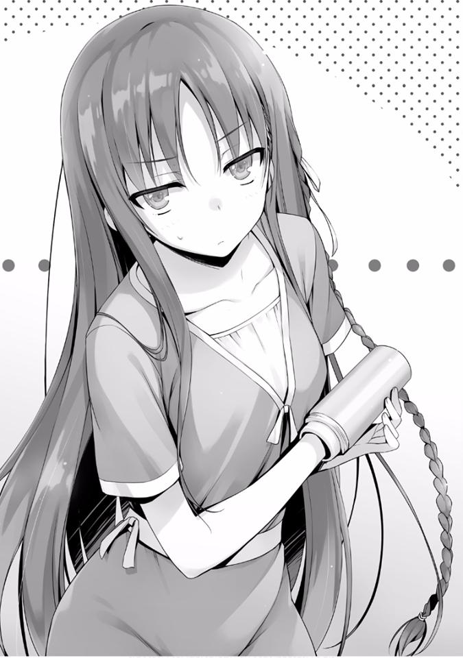
— Cómo debería decirlo... este es un desastre que no va para nada contigo.
¿No me digas que estabas jugando con eso?
— No seas estúpido.
— No, quiero decir que es posible, ¿verdad? Se siente como meter un maíz puntiagudo entre las manos y comérselo, ¿no es así?
Quizás dije algo que la irritó, ya que movía su brazo derecho con una expresión afilada.
— Es... es una broma.
— No tiene sentido decir una broma si no es divertida. La tuya no fue divertida, es un fracaso —respondió Horikita.
— No es porque mi broma no haya sido graciosa, es porque me burlé de ti
¿no?
— Esto sucedió como resultado de lavarla. Ya es suficiente ¿Podrías quitármela ya?
Entonces esa parece ser la historia.
Agarré la punta de la botella de agua y tiré. Pero cuando lo hice, la propia Horikita fue arrastrada.
— Ya es malo que no puedas quitártelo tú misma. Por favor, pon algo de fuerza.
Si su cuerpo es arrastrado junto con la botella, entonces no podré quitarlo.
— Ya lo sé. Es solo que ya estoy bastante cansada, así que por favor hazlo rápido.
Parece que después de haber luchado durante más de dos horas, Horikita está empezando a agotarse.
Agarré la botella de agua otra vez. Luego agregué un poco más de fuerza y
tiré. Horikita soportó el dolor cuando dio un paso atrás al mismo tiempo.
Pero parece que ya está acostumbrada a esto ya que no mostró signos de dolor.
— Esto no tiene sentido. A este ritmo, no saldrá.
— Ya veo, como se esperaba...
Parece que ya había esperado que la botella de agua no saliera, ya que Horikita no parecía muy decepcionada.
— Parece que tendremos que frotarlo con jabón y sacarla lentamente. Vamos a la cocina.
— Pero eso solo continuará con este desastre, ¿no te informaron que hay un corte de agua en este momento? —dijo Horikita.
Está bien. No podremos usar agua hasta las 12 en los dormitorios. La única agua que se puede usar ahora es la del inodoro, pero dudo que Horikita esté bien con eso.
— Voy a ir a la cafetería por un momento.
No hay otra manera excepto esto. Si puedo conseguir algo de agua, será posible hacerlo.
Una vez que estuve allí, me asaltó un incidente inesperado.
— Lo siento, pero llegaron muchos más estudiantes de lo esperado y se nos terminó el agua.
La anciana en la cafetería se disculpó con tono triste. Parece que los estudiantes que necesitaban agua para la cena se la habían llevado toda.
— Entiendo. Compraré un poco en la máquina expendedora.
— Si pudieras hacer eso, por favor.
Solo para sacar el brazo de la botella de agua no se debería necesitar mucha.
Aproximadamente dos vasos de agua serán suficientes. Pensando en eso, me dirigí hacia una máquina expendedora instalada cerca de la cafetería.
Pero parece que la desgracia tiende a acumularse: toda el agua, té, jugo y demás en la máquina expendedora se han agotado.
— ... Esta es la primera vez que veo una máquina expendedora completamente vacía...
*****
— ¿Entonces? ¿Regresaste sin nada?
La mujer de la botella de agua me miró, no se podía evitar ya que no había nada que pudiera hacer.
— Quería traer algo de mi habitación, pero ya agoté toda mi agua.
Esto solo se puede explicar como otra tragedia producida por esta ola de infortunio.
— Entonces, ¿qué hacemos?
— Si te parece bien, podríamos pedirle a Ike o Sudou que compartan un poco de agua con nosotros.
— Voy a pasar.
Ya había esperado este tipo de respuesta, así que lo había descartado antes de siquiera preguntar, como era de esperar.
— Si no te sientes cómoda pidiéndoles prestado, puedo mentir y decirles que soy el que la necesita.
— No es eso. Me opongo a usar el agua que tienen, no se sabe lo que ponen en ella...
Los está tratando casi como si fueran bacterias.
Definitivamente ese no es el caso... es lo que me gustaría decir, pero no tengo la confianza para decir eso. Esos chicos…
Tienen la costumbre de dejar el agua potable o el té tal como están.
Si Horikita se las pide probablemente le darán el agua más limpia que tengan, pero si yo se las pido, dependiendo de la situación, tal vez me den algo por el estilo. No hay nada más aterrador que la malevolencia sin la intención de dañar.
— Entonces, ¿quieres intentarlo de nuevo?
— Sí. Continúa aunque me duela.
Horikita me ofreció su brazo derecho como si ya se hubiera decidido. Parece que quiere escapar de esta situación lo antes posible. Pude ver un poco de sudor en su brazo.
— Está bien, entonces me esforzaré al máximo en esto por un tiempo.
También me gustaría liberar a Horikita lo más rápido posible y volver a mi habitación. Pensando en soportar esta ridícula postura, tiré de la botella de agua.
Después utilicé el doble de potencia que antes pero sólo dio lugar a una expresión de agonía en Horikita. A pesar de eso, ella dijo ninguna queja y soportó el dolor. Sin embargo, la botella de agua, como si chupara su brazo, no salió.
— Como pensé, esto de verdad va a necesitar un poco de agua.
Necesito que sea resbaladizo antes de sacarlo. Si todavía no sale después de eso, podrían ser necesarios los servicios de emergencia.
— ¿Me estás diciendo que espere hasta las 12? ¿En esta situación?
— Si hay alguien en que podamos confiar en mis contactos, el único sería Hirata —le dije.
— Si es él, no hay duda sobre la calidad del agua, pero... prefiero no deberle nada.
— Incluso si dices deberle, para las apariencias seré yo quien necesite el agua.
— ... Eso es cierto.
Todavía parecía algo insatisfecha, pero creo que ha aceptado que se debe hacer un sacrificio para escapar de esta situación urgente y aceptó mi plan.
— Entonces me pondré en contacto con él de inmediato.
Intento llamar a Hirata. Aún ahora, la desgracia parece acumularse.
No importa cuántas veces llame, Hirata no contesta. Además de eso, incluso cuando traté de enviarle un mensaje, no fue leído.
— No se da cuenta, tal vez está dormido. En cualquier caso, no hay respuesta.
— Ya veo. Los sentimientos de alegría y tristeza se mezclan de manera confusa y lo hacen complicado para mí —dijo Horikita.
— Entonces lo siguiente es, no hay más remedio que confiar en Kushida o Sakura.
— Por favor, pregúntale a Sakura-san.
Casi dijo que Kushida está absolutamente fuera de cuestión, ella me respondió con eso inmediatamente.
— ¿Todavía estás en malos términos con Kushida? —le pregunté.
— No hay necesidad de que nos llevemos bien. Y además, hay muchas acciones de ella que todavía no entiendo.
— ¿Qué quieres decir con que no entiendes?
— ..... El examen en el crucero. Abandonó la victoria desde el principio y en su lugar buscó el empate.
Recordando el examen especial de hace un tiempo, Horikita se cruzó de brazos.
Desafortunadamente, la botella de agua pegada a su brazo la hacía parecer poco genial y, por lo tanto, le faltaba intensidad a lo que dijo.
— Es una pacifista por naturaleza. Probablemente escoja el resultado en el que todos estén felices.
— No tengo intención de negar el resultado 1 por completo. Sin embargo, si uno es el “objetivo”, eso está fuera de cuestión.
Ella comienza a hablar bruscamente.
El examen que tuvo lugar en el barco separó a los estudiantes en 12 grupos en un juego para encontrar al “objetivo”.
Había cuatro resultados posibles y entre ellos: El resultado 1 es el más difícil de lograr, en el que la identidad del “objetivo” es conocida por todo el mundo y se obtiene sin que nadie traicione al grupo. A cambio, la recompensa es considerable, donde todo el grupo recibe 1.000.000
de puntos. El único inconveniente de este resultado es que la clase a la que pertenece el “objetivo” no gana ningún punto.
Ya que las otras clases ganan igualmente, la diferencia entre ellas no cambia.
Ella no aprovechó la posición privilegiada de “objetivo”. Eso es con lo que Horikita está insatisfecha.
— Esa situación favorecía grandemente a la Clase D. Eso significa, en otras palabras, que la identidad del “objetivo” tenía que permanecer oculta, y debería haber permanecido oculta. Sin embargo, todos terminaron sabiendo que Kushida-san era el “objetivo”. Creo que con respecto a eso, ella misma estuvo involucrada.
En otras palabras, Horikita está tratando de decir que Kushida, al hacer algo, terminó causando el resultado 1.
— Esa solo es tu especulación, ¿verdad?
— Es cierto. Pero esa posibilidad es abrumadoramente alta. Asumo su culpabilidad.
Horikita agregó más fuerza a sus palabras. No es que no entienda cómo se siente, pero la botella de agua pegada a su brazo simplemente la hace lucir un poco ridícula.
Es solo que… necesitaré corregir la idea de Horikita un poco. Ella todavía está en una etapa prematura.
— Puedo entender cómo te sientes, pero eso no está bien, ¿verdad?
— ¿Decir esto sin ninguna evidencia de que ella nos ha traicionado?
— No es eso. Estoy diciendo que es responsabilidad tuya. Solo asumiré que Kushida nos traicionó, si suponemos que es cierto, entonces la culpa es de ti por permitir que te traicione. Aunque Kushida te traicione, tienes que ganar a toda costa. ¿Estoy equivocado? —le pregunté.
Ella lo entendió claramente, sin embargo, en respuesta a esta difícil demanda, choca contra ella con su propia respuesta. Horikita, en contra de este ataque irrazonable, objeta.
— No seas irrazonable. ¿Entiendes lo poco realista que es eso?
— ¿No es realista? No lo creo. Permíteme repetirlo, si Kushida realmente nos traicionó y llevó al grupo al resultado 1, es algo asombroso. Esta es un
área en la que no puede triunfar a medias. En otras palabras, en el examen anterior, fuiste completamente engañada por Kushida, con la diferencia entre tus capacidades y las suyas.
Por supuesto, mi declaración había asumido que Kushida nos había traicionado, en el caso de que esto no sea cierto, esa afirmación no será cierta.
Ryuuen o Katsuragi, no sé cuál pero con una fuerza más poderosa, se había obligado a todos los del grupo (Dragón) a inclinarse ante un resultado. Incluso en ese caso, el hecho de que Horikita haya sido engañada no cambia.
— Tenías al “objetivo” en tu clase. Y por eso confiabas tanto en tu victoria que no tomaste ninguna acción. Si es así, la responsabilidad de eso recae en las personas del mismo equipo. Si quieres llegar a la Clase A, debes ser capaz de manejar al menos eso —le dije a Horikita.
— ... Estás diciendo algunas cosas difíciles.
— Entiendo tus sentimientos de frustración. Pero aun así, este es el camino que elegiste. Además, has madurado. Si te hubiera dicho lo mismo cuando nos conocimos, ni siquiera me escucharías —continué.
Es cierto.
Lenta pero firmemente, la mentalidad de Horikita está comenzando a convertirse en la de un adulto.
A diferencia de cuando nos conocimos, se está convirtiendo en una chica que no rechaza todo.
— Ya lo entiendo. Aceptaré los resultados del examen. Confieso que estaba pensando con demasiado optimismo. Pero en este momento lo importante es liberar este brazo.
Cierto, parece una situación en la que algún profesor en algún lugar diría eso mientras asentía.
— Intentaré confiar un poco en Sakura —dije.
Como se está haciendo tarde, en lugar de llamarla, decidí usar el chat para contactarla.
“Sakura, creo que también eres consciente del problema de la interrupción del suministro de agua. Me he quedado sin agua en mi habitación y estoy en un aprieto. En la máquina expendedora también está agotada, si estás bien con eso,
¿compartirías algo de agua conmigo?”
Esperé un rato después de haber enviado el mensaje, pero no había señales de que lo leyera.
— Esto no está bien. Quizás esté dormida, parece que no se dio cuenta.
— Honestamente, hoy no hemos tenido suerte...
— ¿Quieres quitarlo ahora mismo, no?
— Si quisiera esperar otro día, ni siquiera te habría llamado.
Supongo que es verdad. Probablemente quiera quitárselo lo más rápido posible.
— Si es así, significa que tampoco tienes otra opción más que tomar riesgos adecuados.
— ... ¿Adecuados?
Mientras está en guardia, ella pregunta eso. Horikita, muy probablemente, también entiende esto en su cabeza.
— Saldremos de esta habitación e iremos al centro comercial Keyaki, donde podemos utilizar agua. No hay otra manera —dije.
— Así que va a ser así al final...
Se puso las manos en la frente, pero no importa qué gesto haga en este momento, termina viéndose ridícula.
— Esta hora se utiliza principalmente para comer, tomar un baño y otras cosas, así que es nuestra oportunidad.
De hecho, antes de llegar a esta habitación, antes de ir a la cafetería, no encontré un solo compañero de clase. Si no puede esperar hasta las 12, no hay más remedio que tomar este riesgo.
— No puedo correr este riesgo. ¿No puedes preguntarle a tus amigos?
— Desafortunadamente eso es imposible hoy, parece que han prometido ir juntos al karaoke. No están aquí.
— Honestamente. No quiero repetirlo más, pero qué día...
— Vámonos ahora para poder terminar esto en un santiamén.
— Espera. Realmente no puedo salir así.
— Entonces, ¿quieres esconder tu mano con algo? Sin embargo, ya está escondida en una botella de agua.
— Ese tipo de broma es innecesario.
— Lo... lo entiendo. Me disculparé, así que baja esa mano que estás levantando.
Como se movió para golpearme nuevamente, me entró el pánico y rápidamente puse distancia.
— ¿Tienes algo como una tela?
— Tela... si es un pañuelo.
Al decir eso, Horikita sacó un pañuelo blanco de un estante.
Lo tomé de ella, y cubrí desde arriba de la botella de agua.
— ... Para decirlo sin rodeos, esto es sospechoso. Más que eso, creo que el tamaño no es suficiente.
Aunque la mayor parte está cubierta, no tiene sentido si la punta de la botella se ve.
— ¿Tienes algo más grande?
— Si tiene que ser algo más grande, tendrá que ser una toalla de baño...
Esta vez saca una toalla. La puse en el brazo con la botella de agua.
— Bueno, si es esto, podría ser...
Es solo que será un misterio el por qué ella está caminando con una toalla de baño en la mano.
En cierto sentido, es mucho más evidente que simplemente tener un brazo atrapado dentro de una botella de agua.
— Es un poco inestable, si camino, la toalla se caerá.
— ¿No estará bien si la mantienes presionada con la otra mano?
Después de doblar la toalla, emitía una imagen como si estuviera a punto de entrar al baño. Si es así, sí, se ve mucho mejor.
— Si alguien fuera a ver mi situación, ¿qué tipo de impresión tendrían?
— Veamos...
En primer lugar, como premisa, nadie camina en los dormitorios con una toalla de baño ni saldrían. Naturalmente, uno se preguntaría acerca de eso. Y luego, si estoy a su lado, sería un misterio aún mayor.
— Dependiendo de la situación... quién sabe. Por ejemplo, tal vez pensarán que tomarás prestada la bañera en mi habitación.
Eso podría ser un poco exagerado, pero como yo lo vi de esa manera, dije eso.
— Rechazado.
Se quita la toalla de baño y se niega. Yo tampoco quiero ser envuelto en ese tipo de duda sospechosa.
— ¿Qué hay de caminar mientras pones tus manos dentro de tu mochila?
— Ni siquiera quiero imaginar eso. Rechazado. ¿Puedes pensar en una idea un poco mejor?
A pesar de que estamos en aprietos ella sigue siendo de primera clase cuando se trata de quejarse.
— Si ese es el caso vamos así como estás. Va a ser ligero y no habrá nada que se caiga como una toalla o un pañuelo.
— .....Veamos.
En lugar de perder el tiempo pensando en esto y es mejor simplemente actuar.
Arrastrando conmigo a una Horikita ligeramente vacilante, salí al pasillo.
— Ok, no hay signos de gente alrededor. Vámonos.
— E-espera un minuto. Todavía no me he puesto bien los zapatos.
Como ella solo podía usar una mano, también ocupaba mucho tiempo. Después de un rato, los dos nos dirigimos al pasillo.
— Hay un grifo en el camino a la escuela, ¿no? Si lo llegamos ahí, debería estar bien.
Si caminamos a un ritmo normal, deberíamos llegar allí en 5 minutos.
Dado esta situación, puede tomar el doble de tiempo, pero mientras podamos salir del dormitorio bajo la sombra de la oscuridad, estará bien.
Logramos llegar frente al elevador. Como los dos ascensores no se movían, sería imposible subir.
— Es inútil, Ayanokouji-kun. No podemos usar el ascensor.
— ¿Qué?
— Hay un monitor de vigilancia en el vestíbulo en el primer piso ¿verdad? No sé quién lo esté viendo.
De hecho, en el primer piso, la imagen capturada por la cámara de vigilancia dentro del ascensor se muestra en un monitor. Horikita está preocupada por ser vista en él.
Incluso si puede esconder su brazo frente a la cámara, no podrá evitar darles una misteriosa escena.
— Entonces, ¿quieres usar las escaleras?
Si vamos a descender desde este punto, tomará bastante tiempo. Y el hecho de que una de sus manos esté inutilizable lo hace un poco peligroso.
— En lugar de dejar que alguien vea esta torpe figura mía, prefiero elegir las escaleras —dijo Horikita.
Después de sopesar los problemas y el peligro en escala contra su orgullo.
Horikita eligió el orgullo.
Hay dos escaleras de emergencia, cada una ubicada a la misma distancia del elevador. No importa cuál usemos, tendremos que pasar por las puertas de las habitaciones de las estudiantes una vez más, no se puede evitar.
Caminando con una Horikita que parecía estar escondiéndose detrás de mi espalda, nos dirigimos hacia la escalera.
En el camino, quería tomar prestadas la palabras de Horikita “qué día”. En otras palabras, es un día desafortunado.
Escuché la puerta de la habitación de una estudiante desconocida abriéndose.
Cerca de tres habitaciones desde donde estábamos parados.
— E-esto es malo. Esa es la habitación de Maezono-san.
Maezono de la Clase D, ¿eh? Sin duda, una de las personas que Horikita no desea encontrar en este momento. Pero no hay espacio para escapar.
Pero desde la puerta que se estaba abriendo lentamente, no fue Maezono quien salió, sino su amiga, Kushida. Me pregunté si este sería otro incidente inesperado para Horikita.
— Gracias, Kushida-san. Te devolveré el favor la próxima vez.
— No, está bien. No te preocupes. Buenas noches, Maezono-san.
Parece que ella vino a pasar el rato a la habitación de Maezono. Tal vez Maezono tenía la intención de despedirla desde dentro, no podía ver su cara.
Cuando la puerta se cerró, Kushida, sin darse cuenta de nuestra presencia, se dirigió hacia el ascensor.
— Eso fue peligroso...
— Es verdad.
Si solo hubiera mirado hacia atrás, Kushida habría notado nuestra presencia. Un sudor incómodo comenzó a formarse.
En cualquier caso, este lugar es demasiado llamativo. Tenemos que llegar a la salida de emergencia lo más rápido posible.
Pero cuando dimos el siguiente paso, la puerta de la habitación de Maezono se abrió de nuevo.
— Kushida-san. ¡Olvidaste algo, olvidaste algo!
Diciendo eso Maezono salió. Naturalmente, Kushida se dio la vuelta.
— Hmm, Ayanokouji-kun y Horikita-san. Buenas noches.
— S-sí.
Hubo un breve intercambio de palabras, pero parece que primero comprobará lo que olvidó. Kushida se dirige hacia Maezono.
Y, por supuesto, inevitablemente Maezono también nos nota. Horikita se pone rígida. Al recibir la mirada de Kushida y Maezono, no es capaz de moverse.
— Olvidaste tu teléfono.
— Ahh, lo siento. Gracias. Me salvaste---
— Vámonos, Ayanokouji-kun. No hay necesidad de quedarse aquí por mucho tiempo.
Diciendo que ahora que la atención de Kushida está centrada en lo que olvidó, esta es la oportunidad, ella usa la punta de la botella de agua para empujar mi espalda. Supongo que si la ven de esta forma, el orgullo de Horikita se romperá en mil pedazos.
Mientras me empuja, llegué a la salida de emergencia e intenté abrir la puerta.
Sin embargo---
— No se abre...
— Es una broma, ¿no? No hay forma de que no se abra una salida de emergencia.
— No, en serio no se abre.
Bloquear una salida de emergencia normalmente está prohibido, así que esto es probablemente-
— ¿A dónde van?
Tal vez tenía curiosidad al vernos tratando de salir por la salida de emergencia, Kushida, habiendo terminado su asunto con Maezono, se acercó a nosotros.
— Esto, no. Estábamos pensando en bajar usando las escaleras.
Esa era una razón que no entendía muy bien, pero no había nada más que pudiera haber respondido excepto eso.
— Si mal no recuerdo, la energía de la escalera este se corta en estos momentos para no poder usarla. Sería peligroso en la oscuridad. ¿Creo que la oeste sí se puede?
— Ya veo. Así es como es.
Horikita, sin intentar llamar la atención de Kushida, simplemente se escondía detrás de mi espalda.
— Horikita-san se siente diferente de lo normal, ¿pasó algo?
Kushida la llamó así. Además de eso, ya había pasado su habitación. Parece que tiene la intención de llegar en frente de nosotros.
Tal vez las acciones de Kushida también las notó Horikita, respondió con una voz ligeramente alta.
— No hay nada malo en particular.
Esas palabras de Horikita incluían el deseo de que ella dejara de acercarse.
Quizás el deseo fue transmitido, Kushida se detuvo.
— Ya veo. Si hay algo que te moleste, dímelo. Anteriormente, Maezono-san también estaba preocupada por el corte de agua y no podía usarla. Tengo agua más que suficiente.
Parece que en este momento Kushida tiene algo que Horikita quiere más que nada.
Si decide preguntar ahora, podría conseguirla con facilidad, pero--- usando la punta de la botella de agua como arma, la presiona contra mi espalda.
Eso probablemente quiere decir que no me perdonará si se la pido a Kushida.
— Entonces Horikita-san, Ayanokouji-kun. Buenas noches a los dos.
— Ohh, buenas noches.
*****
Había la posibilidad de que el vestíbulo estuviera abarrotado debido al corte de agua, pero afortunadamente ni los estudiantes ni los administradores estaban presentes.
— Podemos ir si es ahora.
— Sí.
Mientras Horikita se escondía en mi sombra, no fuimos a través de la puerta de entrada
Sin embargo --- Desde la oscuridad que se extendía ante nosotros, pudimos ver a varios estudiantes acercarse a nosotros mientras charlaban. No parecen ser estudiantes de Clase D, pero ahora no importaba quiénes sean.
Al no tener suficiente tiempo para abandonar el dormitorio en sí mismo, ella se da la vuelta como si fuera a regresar.
— A este ritmo, nos verán...
Al acercarse lentamente al dormitorio, su presencia se hace más grande. Tal vez sería mejor volver a la escalera de emergencia.
Presas del pánico, abrimos la puerta de la escalera de emergencia. Habiendo llegado hasta aquí, ¿se convertirá nuestra desgracia en una cadena de infortunios? Pude oír una voz que venía de arriba de nosotros.
Escuchando con atención, parece ser un estudiante que vive quizás en el tercer o cuarto piso que está bajando.
A menudo es común que los estudiantes que viven en las plantas inferiores no usen el ascensor. No es extraño que usaran la escalera de emergencia.
Al no poder subir por las escaleras, nos vimos obligados a dar media vuelta apresuradamente hacia el vestíbulo.
— ¡No hay otra opción más que el ascensor...!
— ¿Está bien? Te verán en el monitor.
— Te tendré que usar para cubrirme. Como sabemos la posición de la cámara, podemos hacerlo.
Sin duda será algo extraño, pero ciertamente no es una tarea imposible. Era un método que me hubiera gustado evitar si fuera posible, pero como ya no existe otra ruta de escape, no tengo opción.
Subimos rápidamente al ascensor que se supone que está en el lado izquierdo del primer piso. Y luego, cuando me puse rápidamente delante de la línea de visión de la cámara, Horikita se puso detrás de mí como un fantasma y ocultó su brazo.
Si es así incluso si nos ven ligeramente en el monitor, no notarán nada. En cualquier caso, tenemos que abandonar el primer piso.
Presioné al azar un botón para hacer que el ascensor ascendiera.
— Por ahora estamos a salvo, pero... esto es solo el comienzo.
— Simplemente me rendiré. Esta no es una situación en la que pueda salir.
Como he llegado hasta aquí, resistiré hasta que se solucione el corte de agua.
Sentí que era una amarga decisión la que ella había tomado, pero Horikita parece haber concluido eso. Si ese es el caso, tendremos que regresar al piso 13.
Cancelé el piso aleatorio y presioné el botón para el piso 13.
No deben sucedernos más cosas. Cuando tanto Horikita como yo sentimos alivio en algún lugar dentro de nosotros, sin previo aviso, llegó. La velocidad del ascensor, que había estado aumentando rápidamente hasta ahora, de repente descendió.
Últimamente cada que subo a un ascensor, nunca pasan cosas buenas, así que ni siquiera tuve tiempo de pensar qué estaba pasando. No es una falla ni un error al presionar el botón.
Esto es---
El ascensor se detuvo en el quinto piso. Así es, un estudiante en el 5to piso presionó el botón del elevador. No importa quién se suba, no hay forma de evitar que vean la apariencia anormal de Horikita.
En este punto, tener una gran cantidad de personas en el ascensor es más probable para evitar que alguien se dé cuenta.
Sin importar cuán despiadado fuera, solo había un estudiante masculino de pie frente a la puerta cuando se abrió.
De todas las cosas, toparse con él.....
Este hombre, ya sea que nos haya notado o no, entra al ascensor con su elegancia habitual e inmutable. Sin siquiera mirarnos, se dirigió directamente hacia el espejo dentro del ascensor.
Luego, mirándose al espejo, comienza a revisar su cabello en busca de anomalías.
— .........
Horikita también parecía aturdida por la existencia de este hombre que estaba completamente inmerso en su propio mundo. Luego, sacando un peine que lleva siempre consigo, comenzó a peinarse.
— Chico del elevador, solicitaré el último piso.
Mientras miraba su reflejo en el espejo, este hombre... el estudiante de la Clase D llamado Kouenji Rokusuke, me dijo eso.
Hay muchas cosas que quería decir entonces, pero ahora mismo, es mejor callarse y obedecerlo.
Silenciosamente presioné el botón para el último piso cuando la puerta del ascensor se cerró. Una vez más ascendemos.
Kouenji no tiene interés en nosotros mientras se peina el pelo, y no mostró señales de prestarnos atención. Era natural si fuéramos completos extraños, pero aun así, somos compañeros de clase. Creo que echarnos un vistazo al menos hubiera sido normal.
Pero hemos logrado escapar por poco de una muerte segura. Si se trata de Kouenji, no tiene interés en Horikita en absoluto para no notar la botella de agua.
Ahora todo lo que necesitamos es no hacer nada que atraiga su atención y pasar este breve tiempo. Eso es todo. E incluso si por alguna razón, nos miraba, Horikita había ajustado su posición corporal para que todo se viera bien.
Mientras mantenía su posición en el punto ciego de la cámara, también logró cubrirse de Kouenji.
El ascensor pasó el décimo piso.
Pensé qué asunto tenía en el último piso, pero no puedo preguntar eso. Pensé, que él realmente no podría tener ninguna razón para ir allí, pero logramos llegar al piso 13.
Cuando las puertas del ascensor se abrieron lentamente, tanto Horikita como yo casi salimos al mismo tiempo. Al final, sin quitar la vista del espejo, Kouenji continuó subiendo hasta el último piso.
Aunque logramos evitar más problemas, Horikita, después de una breve y rápida caminata, regresó frente a su habitación.
— Es imposible hacer más que esto. Es demasiado caminar afuera y ser cautelosa con los alrededores en este estado.
Diciendo eso, regresó a su habitación. Debe haberse sentido bastante ansiosa...
Después de eso, la seguí y también entré a la habitación. Y en ese momento mi teléfono vibró.
“Lo siento por la respuesta tardía, estaba buscando algo y no me di cuenta”
Sakura me respondió de esa manera.
— ¿Sakura-san?
— Sí.
“Se trata de agua, ¿verdad? Por supuesto que está bien. ¿Sería suficiente una botella de plástico?”
“Eso es más que suficiente, gracias. ¿Está bien si voy a buscarla ahora?”
“Sí, estaré esperando”.
Sakura respondió así. Cada vez que hablo con ella en persona, es difícil continuar la conversación, pero cuando es a través del chat, fluye realmente sin problemas.
— Alégrate, Horikita. Parece que Sakura compartirá agua con nosotros.
Tengo su consentimiento, así que me iré ahora.
— Gracias. Por favor, asegúrate de no contarle a Sakura-san sobre mí.
— Sí. Pronto dejarás de estar así, ¿te importa si tomo una foto conmemorativa? —le pregunté.
Estaba a punto de comenzar a mover la botella de agua hacia mí, aterrorizado rápidamente corrí al pasillo.
— Qué mujer tan temible. A juzgar por su condición atlética, si me golpea la cabeza, podría morir.
Dejaría una mancha en mi historia si muriera al ser aplastado por una chica de preparatoria, cuyo brazo está atrapado dentro de una botella de agua.
*****
Después de superar una larga lucha, de alguna manera logré quitar la botella de agua del brazo de Horikita.
— Honestamente, este fue un día totalmente desastroso...
Una botella de agua me quitó bastante tiempo, pude entender la necesidad de sentir esas cosas.
— Ayanokouji-kun, ten cuidado de no mencionar esto a nadie más.
— Antes de que comiences a amenazarme, ¿no hay algo que quieras decir primero?
— ..........Gracias.
¿De verdad? En realidad no, parece que ella es capaz de sentir gratitud.
— Pero aun así, no poder sacar tu brazo de una botella de agua, es algo completamente diferente a ti Horikita.
— Déjame en paz. No es un problema en el que me metí porque quisiera.
Bueno, era un peligro acechando. O quizás solo significa que nunca se puede saber qué sucederá en el mundo.
Habiendo sido invitado rápidamente a abandonar su habitación, comencé a regresar a la mía.
Pero, en realidad, ¿es posible que un brazo se atasque en una botella de agua y no pueda salir?
La saqué de la caja, la enjuagué con agua y puse mi mano en ella para probar.
Cuando lo hice, parecía ser de un tamaño bastante peligroso e inesperadamente mi brazo se fijó sólidamente en esa posición.
— ¡Puño Cohete! Es una broma.
Me volví un idiota por un momento y luego traté de sacar la botella de agua de mi brazo, pero...
— ¡¿No puedo sacarlo?!
UN DÍA DE DESASTRE Y PROBLEMAS DE CHICAS. UN DEMONIO QUE
SONRIE COMO ANGEL
— ¡Hoy haré que me ayudes, Ayanokouji!
— ... ¿Qué pasa a primera hora de la mañana? ... estás bastante animado, Yamauchi...
Habiéndome despertado por el timbre de mi habitación, suspiré al ver al visitante, Yamauchi.
— ¡Te estaré molestando!
Él está bastante animado. Es una bendición que Ike y Sudou no estén con él, pero ¿qué es lo que quiere de mí?
— ¿Qué? ¿Estabas durmiendo? Te estás relajando bastante a pesar de que las vacaciones de verano terminan en unos días —dijo Yamauchi.
Me estoy relajando precisamente porque no quedan muchos días.
— He decidido que hoy va a ser un día especial para mí, y por eso déjame entrar.
Aunque no sabía de lo que estaba hablando y todavía tenía sueño, le di la bienvenida a Yamauchi desde la entrada. Luego preparé una taza de té de cebada para él.
— Entonces... ¿tengo algo que ver con lo que estás haciendo en este día tan especial?
— No dejaré que digas que lo has olvidado, Ayanokouji. ¡Que tengo derecho a saber el número de contacto de Sakura!
Me grita fuertemente. Sus ojos estaban ligeramente inyectados de sangre y reflejaban su seriedad.
— Ya veo.....
Como yo tenía la culpa de todo esto, no puedo negarme a escuchar solo porque me resulta inconveniente.
Hace un tiempo, con la condición de que le dijera el número de contacto de Sakura, hice que Yamauchi representara un papel no muy distinto al de un payaso. Como resultado de eso, la evaluación de Yamauchi por parte de Horikita ha disminuido.
Por supuesto, lo correcto sería que le dijera el número de contacto de Sakura, pero ya que era algo que había hecho sin su consentimiento, preferí protegerla y hasta ahora, todavía no le he dicho a Yamauchi el número de Sakura.
Ciertamente necesito devolver este favor.
— Creo que será bastante difícil si solo has venido a escuchar su número...
— Ese no es el asunto. Ya he renunciado a eso —dijo Yamauchi.
Sacó una carta blanca que debe haber estado sosteniendo en sus manos.
— ¡He expresado todos mis sentimientos por Sakura en esta hoja! —dijo.
— Bájala... ¿quieres decir que esta es una carta de amor?
— ¡Sí! ¡Aquí adentro he escrito sobre cuánto amo a Sakura! ¡Léela!
Luego, tomó la carta de antes, cerrada con un sello y me la mostró.
“Querida Sakura Airi-sama. He estado interesado en ti desde hace mucho tiempo, por favor sal conmigo”.
— Es una carta de amor bastante simple y es demasiado formal desde el principio...
Yamauchi tenía una expresión orgullosa en su rostro.
— Simplemente escribir oraciones largas no es bueno, te lo digo.
Ese podría ser el caso, pero con solo esto, habría poco o ningún contexto para escribir, ¿verdad? También puedo ver que la persona que lo reciba tendrá problemas. Aún más si la persona que la recibe es Sakura.
— ¿Por qué está impreso en lugar de estar escrito a mano?
— Bueno, no estoy realmente orgulloso de esto, pero mi escritura es mala.
Utilicé una impresora para que fuera más fácil de leer. Estaba algo preocupado de que ella pudiera leer mal la oración.
Luego se rasca la parte inferior de la nariz con el dedo índice con una expresión de orgullo, pero no creo que sea tan importante.
— ¿Y también, en estos días no usan impresoras para el currículum?
— Si realmente quieres transmitir tus sentimientos a la otra persona, creo que una carta escrita a mano es mejor. ¿Y por qué usaste una fuente tan horrorosa para esto?
¡Existe un extraño demonio! Parece que la fuente que podría usarse para un titular se va a usar para maldecir a alguien.
— ¿Cómo lo digo? ¿No tiene impacto? Como una sensación de “Pensaré en ti por siempre”.
— Supongo que me rendiré por el momento... el problema es la última parte, aquí.
Una parte para que él muestre su determinación.
“Si sales conmigo, estoy dispuesto a entregarte todos mis puntos todos los meses. ¡Como tributo!”
— Esto es demasiado, no importa cómo lo veas.
— ¿Qué quieres decir? Dicen que a las chicas lindas les gusta que se les rinda pleitesía, ¿sabes? Y además, quiero salir con Sakura incluso si tengo que darle todos mis puntos, tanto así me gusta, creo que esa pasión le será transmitida —dijo Yamauchi.
No puedo negar que esto también es una expresión de amor, pero la forma en que lo expresa puede significar que le está pidiendo que salga con él por dinero....
— Esto está bien. No me importa si solo busca mi dinero, quiero salir con ella... ¿es tan malo? —preguntó Yamauchi.
Cuando asentí en respuesta, Yamauchi, mientras mostraba una expresión como si no pudiera comprenderlo, pareció mostrar un poco de entendimiento.
— ... Solo quiero confirmar una cosa, pero ¿tienes la intención de confesarte?
— Sí. A partir del segundo semestre voy a comenzar mi vida escolar de ensueño, apostaré todo en esto. Ya le he dicho a Kikyo-chan que llame a Sakura.
En sus ojos no había nada de lo que me pudiera burlar, y solo existía la figura de un Yamauchi que había endurecido su determinación. Después de haber sido testigo de algo así, ni siquiera pude menospreciarlo.
Si tengo algún sentimiento de respeto hacia Sakura, debería detener a Yamauchi, pero su método es honesto. Honestamente, debería ayudarle un poco.
— Entonces... ¿qué debo hacer? ¿Solo debo revisar el contenido de la carta?
— Está eso, pero hay un papel más importante para ti. Y ese es básicamente, que me gustaría que le entregues la carta a Sakura.
— ¿Qué? ¿Qué acabas de decir?
Por un momento pensé que había escuchado mal y le pregunté nuevamente....
— Como dije, quiero que entregues la carta en mi lugar. Me he sentido nervioso desde la mañana, la última vez que me sentí así de nervioso fue cuando estaba compitiendo en el último juego en el Estadio Nacional de Sumo y gané. Es por eso que no tengo la confianza para entregarla correctamente y hablar con ella.
Quería preguntar exactamente en qué juego final había estado compitiendo en el Estadio Nacional de Sumo, los detalles de sus mentiras habituales, pero esa era una aseveración débil, poco característica de Yamauchi, que siempre es directo con respecto al amor, parece estar bastante presionado.
— Si dices que el contenido de la carta es un problema, lo reescribiré. Así que, ¡por favor!
Juntando ambas manos, Yamauchi bajó la cabeza y me pidió eso.
— Y también, dejaré pasar lo pasado. No, incluso si te metes en problemas Ayanokouji, te ayudaré.
— ... Si estás insistiendo tanto, no me importa aceptarlo.
— ¿De Verdad?
— Pero nadie sabe si tendrás éxito. Todo depende de los sentimientos de Sakura. ¿Entiendes eso?
— Sí. No soy tan idiota. Sé que mis posibilidades no son altas.
Tal vez tenga una gran ansiedad, pero parece entender que sus posibilidades de éxito no son ni siquiera del 50%.
De hecho, hay una parte de Sakura que evita intencionalmente a los hombres.
Teniendo eso en cuenta, podemos decir que sus posibilidades son ínfimas. Pero aun así este hombre vino con espíritu de lucha a este lugar.
— ... Entiendo. Transmitiré tus sentimientos. ¿Está bien?
Si ese es el caso, no hay justicia o injusticia.
— ¡Ayanokouji.....! ¡Me has salvado!
Agarrando mi mano extendida, Yamauchi bajó la cabeza casi como si estuviera adorando a un dios.
Si está decidido, primero tendré que revisar el contenido de la carta. Si la persona que la recibirá es Sakura, primero debe ser amable y estar escrita de manera que transmita adecuadamente los sentimientos, de lo contrario no tendrá ningún efecto en ella.
Yamauchi reafirma su determinación. Pero realmente, si es cierto, esto es demasiado prematuro. Para estos dos que ni siquiera han intercambiado sus números de contacto, una confesión no es nada más que un riesgo.
Si desea aumentar sus posibilidades de éxito, primero debe confrontarla firmemente. Pero, los métodos de Yamauchi tampoco deberían estar equivocados. El romance siempre es algo que comienza espontáneamente, y ha habido muchos casos en el mundo en el que comienza a partir de nada.
— Primero el comienzo---
Al igual que Yamauchi, mi experiencia romántica también es cero, pero al menos permítanme considerar una afirmación acorde.
“Ah, sí. Por favor, permíteme agregar una petición. La respuesta a mi confesión, quiero que me respondas detrás del edificio de la escuela”.
— ¿Detrás del edificio de la escuela? ¿Por el segundo gimnasio?
— Sí, sí. Hay un rumor que conoces. Si te confiesas allí, todo saldrá bien.
Es probable que sea similar a la legendaria confesión debajo del árbol. Los rumores parecen brotar de todas partes.
— Ya veo. Entonces es parte del escenario, ¿eh?
— Naturalmente, no son solo rumores. Si se trata de una confesión estudiantil, tiene que ser detrás de un edificio escolar. Ellos llaman a esto una regla.
No pude encontrar una conexión entre una confesión y un edificio escolar, pero puedo imaginar en qué tipo de situación está pensando.
*****
¿Con qué sentimientos reaccionará hacia la invitación de Kushida? Eso es algo que solo la persona en cuestión sabe, pero es poco probable que esté tranquila.
Por otro lado, estaba esperando la llegada de Sakura en el lugar acordado con anterioridad.
Como dijo Yamauchi, no puedo permitir que ella espere, pero tener que esperar durante 30 minutos es demasiado. El teléfono que había mantenido en modo silencioso en mi bolsillo vibra.
— ¿Hola?
— [¿C-cómo va? ¿No puedes ver a Sakura todavía?]
— Para nada. Probablemente no estará aquí hasta dentro de 10 minutos por lo menos, ¿no?
— [Ya veo, Kuu --- ¡Me estoy poniendo nervioso!]
Desde una corta distancia mientras mira hacia mí, Yamauchi mueve sus manos.
A pesar de que no desea ser visto, debe haber sentido curiosidad por el aspecto de las cosas y vino a ver por sí mismo.
— Oye, Yamauchi, ¿está bien que se la entregue yo? Realmente creo que sería mejor si se la dieras tú mismo.
— [E-es imposible, te lo digo. He tenido un trauma desde que era pequeño y cada vez que estoy bajo estrés extremo mis manos tiemblan.]
Creo que la mayoría de la gente temblaría si se la pusiera bajo estrés extremo, aunque......
— Entiendo tu deseo de no cometer errores, pero ¿por qué no lo piensas un poco más? ¿Una carta de amor entregada indirectamente realmente tiene valor?
[No, pero ¿no sucede esto con frecuencia? Se le pide a una chica linda encontrarse con alguien después de la escuela pero, contrariamente a sus expectativas, al final se le confiesa un hombre feo. Ese tipo de situación. En ese sentido, esta es una situación a la inversa. Le pedí a Kushida que mantuviera en secreto que la llamé aquí. En otras palabras, si se da cuenta de que es Ayanokouji quien la está esperando, se desilusionará. Pero si se da cuenta de que en realidad soy yo quien está haciendo la confesión, al compararnos, mi evaluación inevitablemente mejorará, ese tipo de cosas. Es por eso que Ayanokouji, cuando le estás entregando esa carta, no menciones mi existencia.
Es mejor dejarla pensar que, en su lugar, alguien como tú se le confesará.] —me dijo Yamauchi.
Él habla de su estrategia con pasión, pero no parece importarle que haya estado hablando mal de mí todo el tiempo.
No planeo criticar este objetivo suyo, pero es un hecho inequívoco que también es mejor considerar los sentimientos de Sakura.
— No importa cuánto transmitan tus sentimientos esta carta, una confesión de alguien que ni siquiera puede ver podría ser aterradora para ella.
— [E-eso...]
Aún hay tiempo. Podría hacer que reconsidere. Una confesión, básicamente, es un evento único. Incluso Yamauchi no querría hacerlo de una manera que pudiera dejar atrás remordimientos.
— Todavía hay tiempo. Creo que deberías reconsiderar. Es por eso que escribiste esta carta ¿verdad?
— [Eso es verdad pero... uuuu--- Me pregunto si debería confesarme en persona...]
Al final, parece que dentro de Yamauchi se está formando una única conclusión.
— ...¿Ayanokouji-kun?
Como creí, escuchaba débiles pasos detrás de mí y una voz me llamó.
— [¡Sakura está aquí! ¡Te dejaré el resto!]
Parece que Yamauchi estaba tratando de reunir coraje, pero como Sakura había llegado antes de lo esperado, se acobardó y cortó la llamada.
En cuanto a mí, dado que ya había hecho contacto con Sakura, tampoco había nada más que pudiera hacer. Todo lo que queda es entregar la carta que Yamauchi me confió.
— Es una coincidencia, ¿verdad?
— Ahh, no. Fuiste llamada aquí por Kushida ¿verdad?
— S-Sí. Ella dijo que necesitaba hablar conmigo sobre algo... dijo que era importante.
Miré a mí alrededor, pero obviamente no había nadie además de mí.
— La verdad es que le solicité un favor a Kushida y le pedí que te llamara aquí.
Estrictamente hablando, no fui yo, pero no se puede evitar, aunque se confunda.
— ¿Ayanokouji-kun lo hizo? Y-ya veo. Es un alivio. Normalmente no tengo mucho contacto con Kushida-san, así que temía haber hecho algo para molestarla.
Palmeó su pecho aliviada.
Parece que Sakura, que fue llamada por Kushida, ya no se siente incómoda. Así que decidí enfrentarla con una simple pregunta.
— Aun así, es bastante temprano. Todavía quedan unos 30 minutos hasta la hora acordada.
— Eso... estaba tan ansiosa que necesitaba llegar temprano —Todavía aturdida, ella me lo explica así—. Pero ya veo, era Ayanokouji-kun el que me llamó. Estoy realmente aliviada.
Mientras acaricia su pecho después de haber sentido alivio desde el fondo de su corazón, el nerviosismo que había sentido antes desapareció y su expresión volvió a su habitual calma.
— ¿Pero por qué? Si me querías para algo podrías haberme llamado directamente.
— Ahh, no. Hay una situación un poco complicada ahora mismo.
— ¿Una situación complicada?
¿Cómo explico esto? En cuanto a esta situación, también estaba un poco preocupado.
Desde el punto de vista biológico, ya he estudiado ampliamente la diferencia entre hombres y mujeres académicamente, pero cuando se trata de aplicar ese conocimiento en la realidad, no he aprendido ninguna estrategia.
Y el problema aquí no es solo la diferencia entre nuestros sexos, sino que también necesitaré tener en cuenta la personalidad y los sentimientos de Sakura.
Este es un aspecto complejo y extraño de la sociedad que los seres humanos con intelecto han construido.
El tiempo había estado pasando mientras había estado considerando eso.
Cuanto más largo sea el silencio, mayor será su precaución.
— El caso es que... hice que Kushida te llamara porque quería entregarte esto.
La carta que Yamauchi me confió, se la ofrecí a Sakura.
— ¿Y esto es...?
— Me gustaría que lo aceptes sin preguntar demasiado. Si lees el contenido, estoy seguro de que lo entenderás —le dije a Sakura.
Si el que la entrega lo explica, el significado detrás de la carta disminuirá. La entregué solo así.
— O-ok.
Sentí algo similar a la culpa y desvié la mirada.
Por otro lado Sakura siguió mirando entre la carta y yo para tratar de darle sentido a la situación.
— Car... ta.... detrás del edificio de la escuela... un chico......
Sakura, quien recibió la carta, mientras miraba a un lugar lejano, débilmente susurró algo.
Woah, pero por la forma en que lo dije, podría interpretarse como que soy yo el que escribió esa carta.
Esto es malo.
— Esto me lo encargó un tipo que está escondido. El remitente dice que entenderás si lo lees. Parece tener mala letra, pero lo ha dado todo al escribir esta carta.
Seguí para asegurarme de que no hubiera malos entendidos.
— A, Awawa..... esto es... awawawa.
Tal vez esta es una carta de confesión de un chico, al parecer esa predicción ya había crecido dentro de Sakura.
Había perdido la calma y su mirada parecía estar vagando en el futuro.
Si abre la carta y la lee aquí, su reacción sería un problema para mí, así que es mejor que deje este lugar rápidamente.
— Y con eso te la he entregado. Todo lo que queda es que tomes una decisión. Después, si te resulta difícil darme una respuesta directamente, puedes enviarla por chat o por teléfono, eso estará bien —le dije.
En el caso de Sakura, existe la posibilidad de que después de todo no sea capaz de decir “Sí” o “No”. Debería ayudarla con al menos eso.
— Ko, kokoko, kokoko...
— ¿Eres una gallina?
— N-no. No es eso. E-esto es una c-carta d-de......
— Sí. Es una carta de amor —dije.
(Nota: carta de amor = Koibumi)
— ¿¡Kyuuuu!?
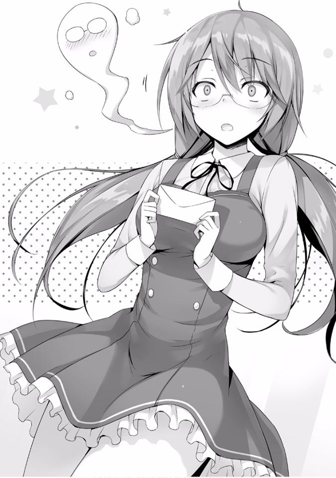
— Woah.
Rápidamente me moví para sujetar a la chica que estaba peligrosamente cerca de caer hacia atrás.
— ¿Estás bien?
Solo tocando su espalda con mi mano, podía decir que su cuerpo estaba ardiendo. Esto debe haber sido inesperado. Y además, puede estar tratando de descubrir en su cabeza quién envió la carta.
— ¡Umm, umm, umm¡
De repente abrió los ojos, movió su cuerpo con un vigor increíble. Después de confirmar que estaba parada por sí misma, quité mi mano de su espalda.
— ¡Horikita.....-san! ¿Crees que se enojará? —preguntó Sakura.
— ¿Hmm? ¿Horikita?
No hay ninguna razón por la que ella debería enojarse.
Si por casualidad me ve entregando la carta en lugar de Yamauchi, probablemente suspirará exasperadamente mientras dice algo como “Te estás involucrando en algo inútil otra vez. Haa”.
Por lo menos, no es algo que la haga enojar.
Pensé por un momento que ella me confundió con la persona que se confesaba, pero cuando le entregué la carta, lo dejé en claro: “Esto me lo encargó un tipo que está escondido”. No debería haberlo entendido mal.
— U, uwa..... uwa.....
Pero la cara de Sakura se puso más y más roja y debido al nerviosismo, parecía como si estuviera a punto de perder el conocimiento. Pero no creo que esto sea una reacción solo por recibir la carta.
Se siente como una situación donde el hombre que le envía la carta estuviera justo en frente de ella.....
Si es así, independientemente de la confesión, no sería extraño si Sakura entra en pánico. Incluso yo me pondría nervioso si estuviera en una situación como esa. Si es así, ahora también puedo entender la razón por la cual salió el nombre de Horikita.
— Sakura. Solo por si caso lo voy a repetir... otro hombre me encomendó que te diera esta esta carta, ¿entiendes?
Mientras lo decía otra vez, los hombros de Sakura temblaron.
— Ehh --- ahh, ¿no es Ayanokouji-kun...?
— Lo dije antes, ¿no? Me pidieron que la entregara.
— ... Ya veo. Por supuesto que es así. No hay forma de que algo así sea posible, p-p-pero, ¿qué debo hacer con esto?
— No hay nada que hacer más que leerlo y dar tu respuesta.
Traté de irme, ya que solo estaría en el camino, pero me tiraron de las mangas de mi ropa.
— ¡Ehh---! ¡Imposible, imposible! No puedo...
— ¿Nunca se te han confesado antes?
— ¡Nunca! —Sakura me responde rápidamente.
Pensé que se le habrían confesado varias veces, dado que es tan linda. Pero eso es solo porque estoy viendo a la Sakura de ahora, la historia podría haber sido diferente con la Sakura de antes.
— Esta carta... ¿la leerías conmigo.....?
Juntos... en primer lugar, el contenido lo escribieron según mis instrucciones. Si Sakura no tiene el coraje necesario para leerla sola, no es como si no pudiera ayudarla, pero.....
Este tipo de escena, Yamauchi probablemente no quiere algo así.
— ¿Por lo menos no la puedes leer sola? Esa también es una responsabilidad que me encomendaron. Puede ser una molestia para ti, pero por favor comprende.
— De acuerdo.....
Como Sakura no parecía muy feliz por esto, decidí continuar un poco.
— También existe la posibilidad de que sea de alguien que te guste —le dije.
— Esa posibilidad ya no existe...
— ¿Hmm?
— ¡Ahh, umm! Eso es, porque no tengo nadie que me guste. ¡Voy a intentar leerla!
Asintiendo con la cabeza, Sakura ligeramente ajustó su mirada y bajó la cabeza, regresando al dormitorio. Regresará a su habitación para leer la carta que Yamauchi había escrito.
— ¡¿Cómo te fue?! ¿Cuál fue el sentimiento? ¿Parecía feliz?
Confirmando desde lejos que Sakura había regresado al dormitorio con la carta en la mano, Yamauchi corrió y me preguntó nerviosamente.
Entiendo su deseo de preguntar varias cosas, pero si ese es el caso, debería haber sido él quien la haya entregado.
— Todavía no ha leído la carta. Pienso que su juicio vendrá a partir de ahora.
— J-Juicio, no uses una palabra tan aterradora. ¡Creo que estará absolutamente bien!
— Preguntaré por si acaso, pero ¿cuál en qué te basas para eso?
— Eso es, a juzgar por sus modales cuando está hablando conmigo, supongo.
— ¿Modales?
— Cómo debería decirlo, ella tímidamente desvía la mirada. ¿No es porque es consciente de mí y no puede mirarme directamente?
No..... Creo que es simplemente porque Sakura es mala tratando con la gente cara a cara.
— Eso no es todo. Cada vez que habla conmigo, después de eso siempre suspira mucho. ¿No es eso lo que llamarías un suspiro de amor? ¿Eso no sucede cuando piensas en alguien que amas? Haa ~ suspirar. Puedo sentir algo así —dijo Yamauchi.
Creo que es porque está cansada después de tratar con alguien como Yamauchi que le habla con mucha presión.....
Pero es algo obvio, cuando se trata de la persona que te gusta, estás cegado ante esas cosas.
*****
Mi teléfono vibró una vez.
[“¿Estás despierto?”]
Una oración modesta y corta. Era de Sakura.
Miré la pantalla de mi teléfono por un momento sin tocarlo, pero parece que no va a mandar nada más. Probablemente asumió que estaba dormido y está siendo considerada.
Abrí la pantalla de chat y la marqué como leída. Y cuando lo hice, envió otro breve mensaje.
[“¿Te desperté...?”]
“Lo siento, tenía algo de ropa para lavar. Está bien”.
Respondí con una pequeña mentira. Mientras lo hacía, estoy seguro que ella se sintió aliviada, ya que envió una oración un poco más larga.
[“Mañana a las 5 tendré que encontrarme con Yamauchi-kun... ¿puedo verte antes de eso...?”]
Me envió ese tipo de mensaje. Podría rechazarlo, pero para Sakura, no hay nadie más en quien pueda confiar.
“¿Dónde te encontrarás con él?”
[“El mismo lugar que ayer, detrás del edificio de la escuela”.]
Ya lo sabía, pero además de confirmar eso, hice la promesa de reunirme con Sakura. Como no quería molestarla, decidí reunirme con ella en ese mismo lugar.
Ahora, es hora de dormir. Terminé puntualmente las tareas restantes, apagué la luz y me acosté. Y, mi teléfono vibró nuevamente.
[“Umm... disculpa por molestarte tantas veces. ¿Está bien si te llamo?”]
Un sentimiento de ansiedad me fue transmitido a través del mensaje. Es mejor si no me voy a dormir y dejo a Sakura esperando. Y cuando la llamé, Sakura respondió con voz baja.
— ¿No puedes dormir?
— [No... pensando en mañana, me puse nerviosa... haaaaa.]
Fue un suspiro deprimente.
Su ansiedad también se está transmitiendo a través de la llamada.
Probablemente esté pensando en la respuesta a la confesión.
— [Yo--- yo no sé nada sobre Yamauchi-kun..... y eso es un poco aterrador...]
— Ya veo.....
— [Que te guste alguien u odiar a alguien. Me acabo de dar cuenta de que conlleva una enorme responsabilidad.]
Para Sakura, que no ha prestado mucha atención a la distancia entre ella y su entorno hasta ahora, este evento debe haber sido demasiado estímulo. Pero la medida en que alguien externo puede interferir y ayudar es limitada.
La que decidirá todo será Sakura, y el receptor será Yamauchi. Este orden no se puede romper. Eso es algo que incluso un principiante en el romance como yo entiende.
No tengo derecho de aconsejar a Sakura para que lo rechace o lo acepte. No puedo hacer otra cosa más que escuchar en silencio lo que tiene que decir.
— [Yamauchi-kun no ha hecho nada malo, pero estoy... pensando que no quiero esto. Pero también me siento mal por él, que notó incluso a alguien como yo...]
Me di cuenta de que el amor es definitivamente algo complicado.
— [..... cuando sigo pensándolo, simplemente no sé qué debería hacer...]
Eso es comprensible, incluso a través del teléfono puedo saber que debe sentirse constantemente confundida.
— [Por qué yo... pensé. Por qué tengo que sufrir así, es lo que termino pensando.]
En lugar de ser feliz, por el contrario, parece que no le gusta o al menos le molesta.
— [Ayanokouji-kun, tú, umm..... ahh, es posible que escuches algo innecesario, pero...]
— Por favor, pregúntame cualquier cosa. Si es algo que pueda responder, te responderé.
— [Umm... en este momento, ¿estás saliendo con alguien... de esta manera?]
Por alguna razón, ella me preguntó eso con tono formal.
— No, absolutamente no. En este momento y, por supuesto, hasta ahora tampoco.
— [¿¡D-De verdad!?]
— Si suenas tan feliz, me hace sentir como si estuvieras siendo sarcástica.
Suena inusual cuando está tan feliz con un hombre que nunca ha salido con alguien con anterioridad.
— [Waahh... no, no quiero burlarme de ti. Estaba feliz, porque eres como yo.]
— Sólo bromeo —le dije.
— ¡Cielos...!
Era solo una pequeña broma, pero parece haber ablandado el endurecido corazón de Sakura.
— [Entonces, umm, ¿alguna vez se te ha confesado alguien, o te confesaste a alguien, o algo así?
Ella parece estar intensificando las cosas un poco. Pero no tengo nada que ocultar, así que está bien.
— Al igual que tú. Experiencia en confesiones 0.
Pero en el caso de Sakura, esta sería su primera vez.
— [¡Entonces así es como es!]
Ella sonaba feliz de nuevo. Y así, Sakura y yo hablamos sobre diversos temas con entusiasmo por un tiempo.
Después de un rato, sentí que Sakura sonaba somnolienta y terminé la llamada.
Espero que ella duerma tranquilamente. Pensando en eso, yo también decidí dormir.
*****
Probablemente está pensando muchas cosas en su cabeza, su expresión cambia con cada segundo. Una cara abatida, una cara nerviosa, una cara preocupada. Me pregunto en lo que está pensando profundamente en su corazón.
— ¿Estuviste esperando?
— Ahh.
Cuando la llamé, Sakura lentamente levantó la cabeza y se acercó vacilante a mí.
Sería genial si llamándola, pudiera reducir la carga de Sakura incluso un poco.
— Gracias, Ayanokouji-kun... por venir aquí.
— No es nada para que me des las gracias. Entonces, ¿cuál es el problema?
— Sí... eso es, sobre la carta que me diste ayer...
— ¿Pasó algo?
Se va a reunir con Yamauchi pero al haberme llamado, significa que hay algo en lo que ha pensado. Pero tal vez todavía tiene algo de resistencia para hablar de eso, ya que las palabras no parecen salir de ella.
— No seas reservada---
Traté de llamar su atención diciendo eso, pero al mismo tiempo que lo hice, pude ver a varios estudiantes que venían hacia el pasillo. A juzgar por su vestimenta, debe estar relacionado con actividades de club.
— Lo siento, pero ¿caminamos un poco?
— ¿Ehh? Ahh, está bien.
No sería bueno que en este momento nos viera alguien.
Caminamos hacia la parte posterior del edificio de la escuela donde los árboles crecen, para evitar los ojos de las personas. Un lugar como este donde normalmente la gente no viene, tiene muy poco riesgo de ser visto por la gente, pero a este lugar parece que le dan mantenimiento cuidadosamente.
Sería problemático si nos topamos con Yamauchi si llega al lugar de la reunión temprano, será mejor que termine rápidamente.
Mientras pensaba eso, Sakura misteriosamente inclinó su cuello, extendiendo su mano derecha mientras miraba hacia el cielo.
— ¿Qué pasa---?
Casi tan pronto como hice esa pregunta, me di cuenta de la razón detrás de las misteriosas acciones de Sakura.
— Lluvia, está lloviendo.
Creí que el cielo estaba despejado, pero de repente, comenzó a caer la lluvia.
Por supuesto, fue algo temporal, pero el aguacero fue mucho más intenso de lo que esperaba y empapó nuestra ropa.
— ¡Maldición, por ahora volvamos al pasillo!
Agarrando a Sakura, me dirigí de regreso por el camino de donde veníamos.
El tiempo que estuvimos expuestos a la lluvia fue menos de un minuto, pero como había llovido mucho, parece que la ropa de Sakura está completamente empapada. Pude ver que incluso su cabello estaba empapado.
— Qué mala suerte... ¿estás bien, Sakura?
— Yo... estoy bien, ¿qué hay de Ayanokouji-kun?
— Yo también estoy bien.
Suspiré levemente mientras veía la lluvia que solo se intensificaba. Qué terrible momento para que lloviera.
— Por favor, usa esto si lo deseas.
Vacilante, Sakura me entrega un pañuelo. Me acordé de este pañuelo. Es el mismo que le devolví en la isla deshabitada.
— Estoy bien, por favor úsalo tú. Te resfriarás —le dije.
No puedo secarme primero, no cuando una chica está empapada frente a mí.
Pero aun así, Sakura se puso de puntillas y usó ese pañuelo para limpiar las gotas de lluvia de mi cabello empapado. Llevado por el olor de la lluvia, podía oler el aroma de Sakura haciéndome cosquillas en la nariz.
— Soy sorprendentemente fuerte.
Dijo mientras limpiaba las gotas de lluvia de mi pelo, y luego de mi cuello.
— ..........
Miré furtivamente a Sakura, que estaba parada a mi lado en silencio. De alguna manera, pude entender el objetivo Yamauchi, es lo que sentí.
En este momento estamos a mitad de las vacaciones de verano y ambos vestimos ropa informal, pero si este fuera su uniforme escolar, podría haber sido una situación excelente. El incidente de lluvia cayendo ocurrió, pero eso también podría considerarse un evento.
Una lluvia que cae de repente. Los dos nos alteramos y corremos hacia un techo donde guarecernos. Y sin parar... hablamos hasta que poco a poco nos
quedamos sin temas. Y nuestra línea de visión se entrecruza, y podemos oírnos respirar. Es una especie de escena con la que los hombres fantasean.
Pero por alguna razón, dentro de mi cabeza, por un momento pude ver eso. Lo que Yamauchi desea. Esto puede ser una sensación igual a eso.
— Me pregunto si se detendrá pronto...
— Busqué en mi teléfono hace un momento, parece ser solo una lluvia pasajera. Si esperamos un poco, debe detenerse.
— Ya veo...
— Ahh, lo siento. Aunque tienes algo importante que hacer después de esto, dejé que te empaparas.
— No, está bien. No es importante en absoluto —respondió Sakura.
Sakura dijo que no era importante. En otras palabras, eso significa---
— Yo... me pregunto qué debería hacer...
— No hay nada que hacer más que responder de acuerdo con lo que sientes.
Aceptar, rechazar o comenzar como amigos primero —Los pasos exactos dependen del individuo. No voy a decir nada innecesario—. Por supuesto que también puedes aplazar tu respuesta, y si tienes demasiada vergüenza, puedo dársela a Yamauchi.
Yamauchi seguramente no desea algo así, pero si Sakura quiere eso, no tendría más remedio que cumplir su deseo.
— ..... No, se lo diré a yo misma... probablemente tenga que decirlo.
— Supongo que tienes razón. También es por el bien de Yamauchi.
— Sí. Entiendo... lo rechazaré.
Antes de darle su respuesta a Yamauchi, ella me dejó escucharla primero.
— Ya veo.
Comprendí que había casi un 100% de posibilidades de que así fuera por la conversación que tuvimos hasta ahora. Pero es importante que Sakura lo diga con su propia boca.
— Ahh---, uuu---, umm. No creo que tenga el derecho de negar los sentimientos de otra persona. Creo que eso podría ser demasiado presuntuoso de mí parte... pero...
Por alguna razón, el rechazo de Sakura, parece ser atacado por fuertes sentimientos de culpa.
— No hay nada de lo que debas disculparte. Básicamente, es solo el sentimiento individual por parte del que se confiesa. Aceptarlo solo es en el caso de que a ti también te guste, de lo contrario no es extraño rechazarlo.
No existe algo como no tener ese derecho —le dije.
No quería lo malinterpretara, así que le dije eso enérgicamente. Creo que la lluvia se detendrá pronto, pero no sabemos cuándo aparecerá Yamauchi.
— Es mejor si regreso, ¿verdad? Me iré por ahora.
La lluvia aún es ligeramente intensa, pero di un paso.
— ¡N-No! Si Ayanokouji-kun no está aquí, no podré hablar, es por eso... por favor...
Ella me agarró de la manga. Y la agarró con fuerza.
— Por favor... no me dejes sola.
— Si ese es tu deseo.
Respondiendo brevemente, decidí quedarme bajo el techo una vez más.
Después de todo, Sakura ha sido una ayuda para mí de varias maneras.
Unos 15 minutos después, llegó Yamauchi. Pero aun así, eso fue bastante rápido de su parte. Su expresión estaba más rígida de lo que nunca antes la había visto.
— ¿P-por qué estás aquí, Ayanokouji?
— Lo siento. Sakura dijo que no tenía el coraje de reunirse a solas contigo, así que me pidió que estuviera aquí. Por favor, no me hagas caso.
Decir eso seguramente no lo hará sentir cómodo, pero a Yamauchi no le queda más remedio que aceptar esto.
Por un momento pensé que algo era sospechoso, pero Yamauchi estaba desesperado por concentrarse en Sakura, que está frente a sus ojos.
— L-lo siento por hacerte esperar, ¿leíste mi carta?
— Sí... umm...... por favor déjame preguntar solo una cosa.
— Me puedes preguntar lo que sea.....
Sakura sujeta fuertemente su falda y extrae la voz de su garganta.
— ¿P-por qué te gusto... yo? Hay muchas personas más lindas que yo......
— ¡Prefiero a Sakura!
Así nada más, gritó. Los hombros de Sakura saltaron cuando se estremeció.
— L-lo siento. No quise usar una voz fuerte... e-entonces, ¿cuál es tu respuesta?
Una respuesta torpe a una confesión torpe.
Como estaba escuchando los asuntos de otra persona, terminé pensando que deberían decir algunas cosas para mejorarlo.
Pero el hombre está lo suficientemente nervioso como para que su corazón esté a punto de saltar de su boca, por lo que no está en posición de pensar adecuadamente. No importa qué, no puede elegir la mejor opción.
— ¡Lo... lo siento!
Parado frente a Yamauchi con ojos ligeramente rojizos, Sakura se inclinó profundamente mientras decía eso.
En ese momento, la luz de la última esperanza que humeaba dentro de Yamauchi se desmoronó y desapareció.
— Yo, con respecto a tus sentimientos, umm, no puedo corresponderlos.
¿Cuánto coraje debe haber reunido Sakura para poder decir esas palabras?
Por primera vez delante de mí, vi de forma extraña, una especie de “romance”.
Seguramente Yamauchi, no deseaba ser rechazado en un lugar con alguien más presente. Aunque no se pudo evitar, no hay duda de que le hice sentir emociones complicadas.
— Ya veo.....
Entendiendo, Yamauchi parece estar tratando desesperadamente de soportar la situación.
Al igual que Sakura, su voz parecía temblar levemente, pero no pude pensar en reírme de esa figura.
— Gracias, Sakura. Por haber venido hasta aquí.
— ¡Adiós...!
Ya sin poder soportar la pesada atmósfera de este lugar, Sakura inclinó profundamente su cabeza ante Yamauchi y se escapó.
— Ahh...
El brazo que Yamauchi extendió impotentemente no alcanzó a Sakura. No pude hacer nada más que permanecer en silencio mientras concluía el primer romance que había visto.
Yamauchi trató de resistir su decepción por un tiempo, pero finalmente levantó la cabeza y me miró.
Me pregunto si me increpará por haberme entrometido en el lugar de su confesión como un insecto molesto.
¿O tal vez estallará de ira? En cualquier caso, parece estar preparándose para expresar su descontento e infelicidad.
Pero---
— Ja, esto es embarazoso. Ser rechazado delante de un amigo. Mi cara está a punto de estallar en llamas.
Y sin culparme en absoluto, dijo eso. En su cara, la conmoción por haber sido rechazado estaba rezumando, pero eso no era todo.
— Sí, cómo lo pongo, umm... supongo que me siento aliviado.
Yamauchi, cuya actitud ahora parecía brillante de alguna manera, dijo eso mientras me miraba directamente.
— ¿Cómo lo digo? Soy un idiota. Solo le estaba causando problemas a Sakura, finalmente me di cuenta de eso. Para no lastimarme, alguien que ni siquiera le gusta, trató de elegir sus palabras. Estoy lleno de culpa. Soy libre de que me guste, pero he aprendido que expresar tus sentimientos también conlleva una responsabilidad —dijo Yamauchi.
Cuando miré el hombro de Yamauchi, vi que su ropa también estaba mojada. En otras palabras, ha estado parado por aquí mucho antes de que llegara el momento acordado. Tal vez había estado cerca preocupado todo el tiempo mientras pensaba en la confesión.
— No estás tan deprimido como esperaba —dije.
— Lo estoy, un shock es un shock, pero no es tan malo. Sakura es linda y la quiero como mi novia. Lo pensé, pero también pensaba diferente. Solo mirando su cara o su cuerpo, esas fueron solo acciones superficiales.
Cómo lo digo, realmente no me gustaba desde el fondo de mi corazón.
Probablemente, si realmente me hubiera gustado, cuando me rechazó, en ese momento hubiera sentido más conmoción, más sufrimiento, más tristeza y más frustración, o eso creo —dijo.
No me atreví a decir nada en respuesta. Silenciosamente escuché todas las palabras que Yamauchi tenía que escupir.
— Es por eso que hoy me voy a graduar de este ridículo amor mío.
Encontraré a una chica que realmente me guste, comenzaré con eso —
dijo Yamauchi.
Parece que debido a este rechazo, Yamauchi se ha convertido en un hombre mejor.
— Te estoy agradecido, Ayanokouji. Me disculpo por involucrarte en algo tan extraño como esto.
— No te preocupes, somos... amigos.
— Ten, te prestaré esto. Dijiste que querías un teléfono prestado, ¿verdad?
— ¿Estás seguro? ¿No dijiste que estaba condicionado al éxito de la confesión? —pregunté.
— Esto es especial. Pero será mejor que lo devuelvas rápidamente.
Diciendo eso, Yamauchi se adelantó en la misma dirección en que Sakura salió corriendo.
Y cuando me di cuenta, un rayo de sol estaba perforando las aberturas en las nubes de lluvia.
LA REUNIÓN DE LAS CLASES
— Hace mucho calor hoy...
No sé cuántas veces he pronunciado esas palabras este verano.
Sin embargo, no se puede evitar que siga siendo tan caluroso como hoy. A pesar de que se pone aún más cálido con solo decirlo, aun así tenemos que hacerlo. Quejarse internamente aumentará infinitamente el estrés interior.
Las únicas que regocijan con el intenso calor probablemente sean las cigarras.
Hablando de eso, esta vez terminé siendo arrastrado a un evento inusualmente raro. Aunque utilizo la palabra evento, el simple hecho de conocer los detalles probablemente despertará una fuerte sensación de celos en los estudiantes masculinos.
Sin embargo, también hay problemas mezclados. Bueno, comencemos desde el principio.
A poca distancia del dormitorio, hay un camino bordeado de árboles a ambos lados que conduce a la escuela. Si uno sale del camino, llega a un área de descanso. En este momento, estoy parado allí.
Hay varios bancos y máquinas expendedoras. La vista desde este lugar también es buena. No es de extrañar que haya muchos estudiantes aquí a comienzos de la primavera. Este es un lugar perfecto para un pequeño descanso o una charla ociosa.
Sin embargo, ahora mismo está desierto, sin nadie a la vista. Se puede decir que es debido al calor. Es una temporada relativamente tranquila para los estudiantes. Por eso también es el lugar más adecuado para llevar a cabo una reunión secreta.
— Te mantuve esperando.
Estaba sentado en el banco, la persona a la que esperaba camina desde el dormitorio, bloqueando el fuerte sol con su mano, está mirando hacia el cielo.
— Hace mucho calor...
Tenía la misma impresión que yo, la estudiante de la Clase D, Karuizawa Kei se sentó junto a mí.
Su larga cola de caballo se sacudió. Su ropa eran unos jeans inusualmente casuales y una camisa simple. Sin embargo, no parecía de mala calidad, ni siquiera para un fin de semana.
Por lo que pude ver, fueron elegidos para que combinaran, se veía realmente bien. No importa cuánto calor haga, el estilo sigue siendo lo número uno para las chicas, debe ser difícil.
— Lo siento por hacerte perder el tiempo con esta repentina llamada.
— ¿Estás siendo sarcástico? Ya he usado demasiados puntos para divertirme durante las vacaciones de verano, así que para tu información, últimamente solo he estado en mi habitación.
— ¿Tienes planes para mañana?
— No se puede hacer nada sin dinero. ¿Probablemente solo dormir?
Debe haber hecho lo que quiso en este verano.
— Vas obtener muchos puntos el mes que viene, también están los resultados de ese examen.
Durante el examen que tuvo lugar en ese barco, Karuizawa, que fue elegida como “Objetivo”, colaboró conmigo y logró ocultar su identidad hasta el final.
Ella recibirá 500 000 puntos como recompensa a principios de septiembre.
— Claro que sí. Por eso compré toda la ropa y los accesorios que quise. Pero,
¿está bien gastar todos los puntos así? ¿No es mejor guardar algunos?
— ¿Tienes suficiente autocontrol?
Pregunté un poco perversamente. Ella hinchó sus mejillas y me miró.
— Eso... no es fácil. Cada vez que gasto, dura menos de una semana.
Karuizawa levantó sus manos, contando las cosas que quería con los dedos.
Todos sus dedos estaban doblados en un instante. ¿Cuántas cosas desea?
— No es que no esté pensando en absoluto. Incluso sé lo valiosos que son los puntos privados. El sistema escolar es un poco extraño. Recibes muchos puntos durante los exámenes especiales. Los otros también están asombrados con respecto a eso.
Ya veo, parece que la sospecha finalmente se ha extendido entre los estudiantes regulares. Si recibes grandes cantidades de dinero, por supuesto que serás cauteloso.
Preguntándose por qué la escuela haría eso. Entonces entenderán. Que estos puntos no solo se utilizan para cumplir con los deseos o beneficios privados.
— Sí, entregar repentinamente 1 o 2 millones de puntos.
— Eso es, ¿está bien entregar tanto dinero a los estudiantes de preparatoria?
Definitivamente no es normal.
La mayoría de los puntos serán necesarios para “sobrevivir” en esta escuela.
Dándose cuenta de esto, Karuizawa estaba dudando si está bien gastarlos.
Este es un ejemplo, pero si te encuentras en una situación en la que eres expulsado, existe la posibilidad implícita de que puedas usar esos puntos privados para anularlo. Después de esto, tener unos pocos millones de puntos como seguro no se puede subestimar.
— No tiene sentido pensar demasiado sobre esto. Pensar demasiado en el futuro y olvidarte de satisfacer tus deseos también es malo. Es suficiente si ahorras del 10 al 20% de tus puntos mensuales.
Era importante mantener un equilibrio entre el deseo y la moderación, de lo contrario te romperás. Especialmente para Karuizawa que había estado gastando sus puntos libremente. Juzgué que negar sus deseos tan repentinamente era malo.
También está el hecho de que si su vida diaria cambia súbitamente, su entorno también puede verse afectado. Si una chica que ha estado desperdiciando su dinero comienza a vivir moderadamente, la clase podría sospechar. Ella puede tener una conexión conmigo, pero aún es demasiado pronto para que los demás lo sepan.
— Bueno, hay una cosa que quiero pedirte.
— ... ¿No tienes una disculpa que ofrecer a quien llamaste en este día caluroso?
— ¿Esto está bien?
Le di una botella de plástico con té que acababa de comprar. Ella vaciló un poco, pero al final la tomó de mala gana.
— Está tibio...
— Bueno, tenemos que agradecer al clima por eso.
Parece que las áreas más afectadas registraron temperaturas de más de 40
grados. Estoy sudando solo por escuchar esos números. Sedienta, la disgustada Karuizawa abrió la botella.
— Uf, este es un perdedor.
— ¿Perdedor? ¿Estoy seguro de que los tés no incluyen premios?
— Esa broma no es divertida, ¿sabes? Me refería a lo difícil que es de abrir.
Ya veo... Ciertamente no fue un malentendido divertido.
Estiré mis manos, tomé la botella y giré la tapa un poco, luego se la devolví.
— Gracias.
Después de ese incidente en el barco, la distancia entre Karuizawa y yo se ha acortado. De lo contrario, esta sería una conversación inaudita.
Los eventos que condujeron a esto seguramente no la pusieron muy contenta y la llenaron de desconfianza hacia mí, pero ella no lo demostró mucho. Está acostumbrada a controlarse. Eso significa que está haciendo todo lo que puede para protegerse sin importar nada y adaptarse a su entorno.
— Mañana es el último día de las vacaciones de verano. Un amigo mío quiere crear algunos recuerdos de verano, así que fui invitado.
— ¿Qué quieres decir con recuerdos de verano? Esta escuela no tiene fuegos artificiales, festivales ni nada de eso ¿cierto?
— Deben tener al menos una piscina. El club de natación generalmente tiene el privilegio de usarla, pero eso se ha cancelado a partir de hoy ¿sabes?
Era una piscina incluso más grande que la que se usaba durante las clases de la escuela. Durante los últimos tres días de las vacaciones de verano, se transformó en una piscina comunitaria que todos podían usar.
Después de que el primer día una multitud de estudiantes se precipitó hacia la piscina, la entrada estaba siendo regulada. Durante estos tres días, solo se puede ingresar una vez. Los primeros dos días habían terminado, está lleno incluso hoy.
— Ah, ahora que lo mencionas. Pero no estoy interesada en nadar.
Karuizawa había estado simulando continuamente enfermedades durante las clases de natación. Aunque puede ser una escuela que utiliza un sistema basado en puntos que hace que no ir a clases sea difícil, no podían entrometerse en los problemas de salud de los alumnos, especialmente los enigmáticos problemas de las chicas.
Por lo tanto, las chicas rechazaban las lecciones constantemente, a excepción de Karuizawa, que siempre estuvo ausente. Las razones de las chicas para no nadar eran variadas. Sentirse enferma, no querer que los demás sepan que no sabe nadar, odiar nadar, no querer mostrar su piel al sexo opuesto, mal estilo, etc. La mayoría usaban este tipo de excusas.
Sin embargo, para Karuizawa, la razón era diferente.
Pensando en este problema, ella estaba mirando hacia otro lado bebiendo su té.
Ella había sido cruelmente intimidada por estudiantes de otra clase y obtuvo varios moretones debido a eso. El hematoma todavía duele de vez en cuando.
Si lo ven, seguramente recibirá mucha atención
— ¿Te gusta nadar?
— Hmm -... No lo odio, creo. No he nadado en años, así que tal vez haya olvidado cómo hacerlo.
Respondió vagamente. Pero pude ver que estos no eran sus verdaderos sentimientos.
— Entonces, ¿ustedes quieren crear algunos recuerdos en la piscina? ¿Sólo quieren un poco de erotismo?
No puedo negar eso. No, esa es realmente la razón.
— Entonces, ¿qué tiene eso que ver conmigo?
— Antes de eso, déjame hacerte una pregunta. ¿La escuela realmente no sabe que fuiste intimidada?
— ¿Qué?...
La hasta ahora, inusualmente modesta Karuizawa mostró una cara confundida.
Frente a mí, comenzó a mirarme. La miré yo también.
— ¿Sabes que no soy muy aficionada a ese tema, verdad?
— No lo estoy planteando sin ningún motivo. Lo estoy preguntando porque se trata de nuestro próximo tema.
— Pero...
Este debe ser un tema difícil para ella. No será fácil hacerle entender, pero antes de que tuviera la oportunidad de convencerla, parecía haberlo aceptado.
— Bien, confiaré en lo que tienes que decir. Además, debes tener alguna razón.
Parecía haber hecho lo mejor que pudo, aguantando la situación.
— La verdad acerca de que haya sido intimidada. Si tengo que elegir entre que lo sepan o no, no creo que lo hagan. Pueden haber sabido sobre mi ausencia o los muchos descansos que tomé durante la secundaria, pero,
¿tal vez solo vean que estaba enferma o que me estaba saltando las clases? Ah, y en lugar de intimidada, ellos creen que fue debido a que soy tonta. Así que tal vez sea por eso que fui puesta en la Clase D.
Una respuesta llena de reproche. Su razón para estar en la clase D debe ser algo así. El efecto de una mala impresión debido a sus ausencias y bajo rendimiento académico.
Su actitud arrogante en la preparatoria es porque quiere romper con el ciclo de intimidación. No creo que ser intimidada sea la razón por la que está en la Clase D.
— Aunque la escuela puede investigar el acoso escolar, no encontrarán nada, supongo.
— Deberías saber que el mundo se está pudriendo estupendamente, ¿verdad?
— Es cierto...
— Indudablemente me han intimidado y he sufrido durante muchos años. He pedido ayuda a mis maestros y compañeros de clase. Pero solo ha resultado en más sufrimiento para mí... No había nadie que me ayudara con esa aplastante realidad. Lejos de eso, el acoso empeoró.
La intimidación estaba profundamente enraizada. Tiene una fuerte tendencia a caer en un círculo vicioso. Mucha gente mira las noticias, se siente mal y se da cuenta de que la intimidación no tiene una solución fácil. Aunque una ola retroceda, vendrá otra más grande, atacando a la víctima una vez más.
— No importaba cuán agotada estuviera, la escuela no reconocería tan fácilmente el acoso escolar, así que ni siquiera trataron de ayudar. En el mejor de los casos, advirtieron a los perpetradores ligeramente. Así que el acoso escolar empeoró aún más, ¿sabes?
Era un tema molesto.
¿Por qué le dijiste a la escuela? ¿Qué estás planeando?, eso le dirán y la castigarán severamente. Incluso si la escuela reconoce el acoso, en la mayoría de los casos, se tratará en secreto.
La escuela no quiere mala reputación por tener un problema de acoso. Hubo casos en que algunas escuelas no reconocieron ese hecho, incluso después de que las víctimas dejaran una nota de suicidio y pusieran fin a sus vidas.
Pero lo que es aún más difícil es que no hay salvación incluso después de la muerte.
La gente se burlará de ellos, se reirá e incluso difundirá historias en las redes sociales sobre ellos, como si fuera una saga heroica.
Es la era aterradora en la que continuas siendo intimidado incluso después de la muerte.
— Mis buenos compañeros de clase respondieron que no sabían nada sobre el acoso escolar, la escuela, los agresores o sobre mí. Esa fue su respuesta. No importa cuán injusta fuera la realidad.
Eso es todo, ella terminó como si hablara de otra persona. Para Karuizawa Kei, este era un pasado que no podía cambiar, y un pasado que nunca cambiaría.
De hecho, esta escuela seguramente la había investigado a fondo, y había llegado a la conclusión de que era frívola, lenta y una cabeza hueca. Si no solo su entorno, sino también la escuela coincidía con su historia, nunca aparecería.
Si eso es cierto, la verdad nunca prevalecerá sobre las mentiras.
— Pero aun así estoy agradecida. Con los que los que me intimidaron y con la escuela que oculta ese hecho.
No sería extraño que pensara en su cruel pasado y llorara, pero miró hacia el futuro y continuó.
— Aquí nadie sabe quién soy. Es por eso que pude encontrar un nuevo yo.
Eso no hubiera sucedido si lo hubieran sabido.
Cambiar su mala situación por sí misma al obtener al popular Hirata.
— Karuizawa, sinceramente quiero elogiarte, pero hay algo más que necesito decirte primero. Ayudar a intimidar a otros ahora está prohibido.
— ¿Qué? ¿Dices que estoy intimidando a alguien?
— Ser testaruda es bueno y todo, pero ¿no has estado atacando a Sakura últimamente? Es obvio que ella no es el tipo de chica que te intimidaría.
Aunque lo estés haciendo para evitar convertirte en víctima, no lo hagas.
No te les unas.
Se lo recordé como una advertencia. No importa qué pasado tenga, hay cosas que puede y no puede aprobar hacer.
— Sakura-san, ¿ehh? ¿quieres ayudarla porque está tan apegada a ti?
— ¿Necesito una razón? Debes saber muy bien cómo es ser la víctima.
— En cuanto a mí, esta posición es mi salvavidas. No es algo que pueda desechar fácilmente. Me siento mal por Sakura-san, pero los débiles
existen porque los fuertes lo hacen. Especialmente los que están fingiendo como yo.
Si voy a ser intimidada, intimidaré primero. Si había algo que podía leer en su determinación, era esto.
— Es por ella. Me ha estado ayudando mucho.
— ... Hmm. Lo admitiste muy rápido.
No se pueden ver insatisfacción o descontento en sus ojos. Solo cautela.
— Puede que mis palabras no te parezcan muy convincentes, pero... está bien. Tendré cuidado de ahora en adelante. ¿Eso es todo?
— Me alegro de que entiendas. Además, ya tienes a Hirata para asegurar tu posición. No estarás amenazada por el momento.
— Es cierto que pueda haber estado exagerando.
Mientras pueda verse a ella misma objetivamente, no hay necesidad de preocuparse.
— Pero si mi posición está en peligro...
— Entonces te respaldaré. Si es necesario, llevaré a Hirata y Chabashira-sensei de tu lado y eliminaré a tus enemigos. Esta es una promesa.
— Hmm... entonces es un trato.
Ella nunca ha sido el tipo de persona que recurra a la violencia o la intimidación.
Puede decir que así es, pero a mí me pareció que actuó para protegerse.
La víctima de intimidación suele tener dificultades para socializar, pero parece que ha superado el dolor, poseedora de una mente fuerte. De eso podía estar seguro, ya que ella no cedió a mis amenazas esa vez.
— ¿Me pregunto por qué...?
— ¿Qué pasa?
— Mmmm, verás. No me gusta escudriñar en mi pasado. Dejar que otros lo sepan es impensable. Aun así, terminé diciéndote, y fue tan fácil que me sorprendió.
Parece que es un misterio para ella. Por supuesto, eso también se aplica a mí.
— ¿Puedo preguntarte algo? ¿Es así como eres realmente?
Preguntó Karuizawa con cautela, siendo la única en nuestra clase que ha visto mis dos caras.
Pero lo que estaba preguntando era sorprendentemente difícil de responder.
Crucé los brazos preguntándome cómo hacerlo.
— Siempre soy así, supongo.
— ¡Eres totalmente diferente!
Es cierto, pero tampoco es estrictamente falso. Es un poco diferente de fingir una personalidad.
— Solo como referencia, ¿cuál es la diferencia entre cómo soy regularmente y cómo soy ahora?
— Usualmente eres un poco oscuro y melancólico y una persona que no habla. Pero ahora eres muy asertivo y directo. Realmente se nota la diferencia porque contrastan. La forma en que hablas también es diferente.
De todos modos, ¿Qué te pasa?
— Veamos... ¿no es así como las personas que son diferentes cuando hay gente alrededor?
Si tuviera que elegir la respuesta más adecuada, esta sería. Pero sentía que faltaba algo.
Yo, como ser humano, francamente “acabo de nacer”. Mi personalidad comenzó a formarse desde mi inscripción en la escuela, todavía no es sólida. Toma tiempo para establecerse, especialmente con respecto a cómo convivir con las personas. Todavía no sé la manera correcta de expresarme.
— De todos modos, planeo ser yo mismo, como siempre.
— Te pregunto porque no te ves como eres siempre.
Karuizawa entrecerró los ojos, frunciendo el ceño y luciendo insatisfecha.
— De todos modos, volviendo al tema. Puedes verme a partir de ahora y ver por ti misma qué tipo de humano soy.
— Se siente como que estás evadiendo la pregunta, pero sí... Entonces ¿qué pasa con la piscina?
— Mañana, nosotros, Ike, Yamauchi, Sudou, Horikita, Sakura, Kushida y yo estamos planeando salir.
— Una combinación realmente extraña. No puedo imaginarme a Horikita y Sakura yendo. Bueno, también vas, así que debe haber algo, pero todavía no puedo verlo. Se las van a comer con los ojos ¿verdad? Mis condolencias.
Las chicas generalmente nunca vendrían aunque las invitáramos, eso estaba claro como el día. Ese fue, de hecho, un factor problemático. No es de extrañar que sintiera que algo andaba mal.
— De todos modos, quiero que vengas a la piscina y te unas a ellos.
— ¡¿Qué?! ¡¿Hablas en serio?!
Ella no tenía ninguna conexión con ese grupo... no, unirse a ellos sería demasiado extraño debido a su mala relación.
— Puedes cambiarte en el dormitorio y ponerte algo encima. Será un poco desagradable, pero puedes regresar de la misma manera.
— No, no, ese no es el problema, ¿eso es realmente desagradable?
— Puedo entenderte, pero ¿realmente tienes derecho a negarte?
— Wow, eres el peor.
— No importa lo que digas, ya está decidido. Haré que te muevas según lo indicado.
Después de terminar lo que tenía que decir, escribí una nota y se la entregué a la fuerza.
— Estoy mostrando algo de consideración.
— Mostrando un poco de consideración, ¿qué pasa con eso? Estaré atada durante todo el día, ¿no? ¡Y el último día del verano!
— ¿No dijiste antes que ibas a dormir en tu habitación? No puedo ver ningún problema.
Ella misma lo dijo, así que no se puede negar.
— Quiero que te unas, pero no te pedí que los acompañaras.
Sin entender el significado de lo que dije, leyó la nota detenidamente.
— ¿Cuál es la diferencia...?
— Es decir-
No pude explicar a detalle por qué la llamé en primer lugar.
Karuizawa, después de haberme escuchado hasta el final parecía tener dolor de cabeza, acunándola entre sus manos.
— ¿Qué pasa? ¿Tienes dolor de cabeza?
— Por supuesto que me duele, ¿por qué? Son ellos después de… no, nada, no tiene sentido, incluso si pregunto.
Parecía dar a entender que sería inútil preguntar.
— ¿Por qué no le preguntas a Horikita-san? ¿No son cercanos?
— No puedo preguntarle. Ella no sabe que estoy trabajando en segundo plano, ¿sabes?
— ¿Eh? ¿Por qué?
Esa es una respuesta natural.
Aunque aclarar eso es un poco difícil. Evidentemente, la respuesta correcta es evadir y luego engañar. Sin embargo, con ella, decidí llevar nuestra relación un paso más allá.
— El hecho de que me puse en contacto contigo en el barco es a causa de mis acciones independientes, incluso ahora. La razón por la que no puedo contarle es porque aún no puedo confiar plenamente en ella.
Le dije todo claramente, sin mentiras.
— ¿Eh? ¿No confías en ella a pesar de pasar tanto tiempo juntos? Eso es extraño.
— Eso es porque es una tapadera espléndida para mí. Se destaca demasiado.
— ¿Entonces solo la estás usando?
— Ese no es el término correcto, pero puede ser apropiado para esta situación.
— ¿Hmm? No lo entiendo, pero... ¿Puedes detenerte con esos sutiles matices tuyos?
Ella objetó con una sonrisa, mostrando sus dientes blancos.
— ... Pero los planes han sido exitosos hasta ahora. Siempre pensé que era Horikita-san quien los ideaba y ejecutaba. ¿Quién diablos eres tú?
Supongo que para ella, mi existencia es un misterio.
— Oh, bueno, ser más confiable que Horikita no es algo malo.
En efecto. Eso no es exactamente incorrecto. Karuizawa tiene algo que Horikita no tiene, por eso puedo decirle a ella, pero no a esta última.
— Solo tengo que seguir tus órdenes, ¿verdad?
— Bien. Ahora que este problema está resuelto, para este evento, ¿puedo pedirte que me acompañes un rato? Necesitamos arreglar algunas cosas de antemano.
— No tengo poder para negarme, ¿verdad? Entendido.
Dando a entender que quería que se hiciera lo más rápido posible, se levantó y desempolvó la suciedad de su trasero.
Tampoco quiero perder el tiempo, así que nos dirigimos juntos a la piscina.
*****
Mientras disfrutaba de lo último de las vacaciones de verano en mi habitación, Ike, representando a los tres idiotas, comenzó una conversación grupal como de costumbre.
[¿Quieren que nuestras vacaciones de verano, nuestra juventud, termine así?]
Por un lado era profundo, por el otro no tenía ningún pensamiento puesto en él.
Ike continuó antes de que ninguno de nosotros pudiera responder.
[¿Quieren que nuestras importantes vacaciones de verano, un año de nuestra juventud, terminen de esta manera?]
Una vez más, pero la frase fue diferente.
[¡No, en absoluto!]
Como si hiciera eco de esta declaración, Yamauchi mostró su aprobación. Había experimentado un amor no correspondido, un nuevo comienzo era crucial para él.
[¡Yo tampoco, regrésenme mi juventud!]
Uniéndose a su coro estaba Sudou. Aunque en el club de baloncesto le estaba yendo bien, también quiere experimentar el amor.
[¡Entonces levántense! ¡La juventud no llegará a los que esperan!]
Quererla está bien conmigo, pero ¿cómo van a conseguirlo?
[¿Tienen alguna idea?]
Estaba esperando que alguien preguntara. Inmediatamente después, llegó un mensaje largo.
[¡Por supuesto que sí! La piscina está abierta para todos por un tiempo limitado,
¿eh? ¡Vamos a invitar a esas hermosas chicas y nadar! Está mi Kikyou ¿verdad?
Y Sakura de Haruki? ¡Y también Horikita de Sudou!]
Desenterrando la herida de Yamauchi, Ike mencionó los nombres de algunas chicas de nuestra clase.
[Eso puede ser. Si Suzune va yo voy, pero ¿de verdad crees que lo hará?]
[¡Deja eso a Ayanokouji-sensei! ¿Cierto?]
¡Sí cómo no! Aunque no puedo decir eso tan fácilmente.
[Harás algo ¿verdad? ERES mi amigo, ¿cierto?]
La frase no tenía empatía, sino amenaza en su lugar, firmaba Sudou. Era solo en estas situaciones que usaban la palabra “amigos”. Muy conveniente.
[Supongo que puedo intentarlo. No esperen demasiado.]
Después de responder, salí del chat e intenté llamar a Horikita. La razón por la que respondí a sus súplicas fue porque alguna parte de mí también quería invitarla. Dado que su reputación en clase ha comenzado a aumentar, puedo esperar grandes resultados de esto.
— ¿Qué quieres?
— ¿No puedo llamar sin una razón?
— ¿Cuelgo?
— ¡Espera, espera, hay algo! La verdad es que algunos amigos hablaron de ir a la piscina mañana. Luego dijeron que te llamara ya que has estado leyendo, soportando en tu habitación todos los días.
— ¿Tus amigos? ¿Te refieres a ese grupo idiota de 3 hombres? Sin embargo, no puedo soportar estar con ellos.
Qué nombre tan nostálgico...
— Declino.
— ¿Hubieras venido si solo fuéramos nosotros dos?
— Sería lo mismo.
Por supuesto que sí-
Pero esta vez, tengo otros medios.
— Termo.
Sentí su actitud y aura cambiar desde el otro lado de la línea telefónica al escuchar esta simple palabra.
— La palabra termo ha estado en mi mente últimamente, ¿sabes?
— ... ¿Qué quieres decir?
Hubiera estado bien si hiciera lo que le dicen, pero fingió completa ignorancia.
— Poner una mano en un termo y quedar atrapada, o algo así, ¿te suena?
— Tu personalidad está quedando a la vista a través de tu manera desagradable de hablar.
Al darse cuenta de lo que traté de decirle, estaba más descontenta que de costumbre.
— Estaría muy feliz si fueras más honesta.
— Entonces, ¿dónde y a qué hora mañana?
Horikita tiene cosas que debe proteger. Supongo que no puede dejar que nadie se entere del incidente del termo. Por esta razón, está dispuesta a ir a la piscina.
— Las ocho y media de la mañana junto al vestíbulo. Nos regresaremos al atardecer.
— Entendido. Pero no te perdonaré la próxima vez que uses esto.
— E-está bien.
No tengo intenciones de usarlo en su contra ni una segunda ni una tercera vez.
En lugar de usarlo para chantajearla, fue como decir gracias por mi ayuda durante el incidente del termo. Creo que ella también entendió eso.
[La invité]
[¡Buen trabajo Ayanokouji! ¡Evitaste un Suplex alemán en el concreto!]
... Parece que mi vida estaba en peligro.
[¡Invítala por mí, Ayanokouji! ¡Te lo ruego!]
Debería haber sido rechazado ayer, pero me envió ese mensaje de texto.
Inmediatamente después, llegó un mensaje privado de Yamauchi.
[¡Tengo que ocultar mi rechazo! ¡Ayúdame!]
Es lo que transmitió a través del triste mensaje. Parece que quiere ser visto como si todavía estuviera enamorado de Sakura. Por supuesto, si ella venía, los chicos estarían indudablemente emocionados. Pero ella no es una chica que se una a esto tan fácilmente.
Ella es sincera, pero no se unió al grupo de Karuizawa durante las clases de natación. Sus pechos, más grandes que los demás, le robaron la atención a ese grupo, más aún a los del sexo opuesto.
Además, debe ser difícil ir con un hombre al que rechazó recientemente.
Dejando de lado si ella quería ir o no, al menos podía llamarla.
*****
El comienzo del último evento de las vacaciones de verano. La hora acordada son las 8:30. Cuando descendí al vestíbulo, la mayoría de los miembros ya se habían reunido.
— Apenas lo lograste, eh.
— Todavía hay aproximadamente... 10 segundos hasta la hora acordada.
— El ascensor estaba lleno y es por eso que llegaste tarde, ¿verdad?
A pesar de que no llegué tarde, fui sondeado por Horikita de manera exhaustiva.
Probablemente sea algo así como una reacción al haber sido invitada a la fuerza.
Además de eso, creo que siente que la atmósfera de este lugar es problemática.
No se puede evitar porque con Kushida y Sakura, Ike y Yamauchi, apenas hay alguien con quien hablar.
— B-Buenos días, Ayanokouji-kun.
— Buenos días, Sakura.
Sakura me mira mientras me saluda, pareciendo algo asustada.
A Sakura, Yamauchi no parece estarle prestando atención, está preocupado por ella inconscientemente. Sakura también, se siente algo incómoda de alguna manera.
Tomaré nota de esto como referencia, pero las confesiones no solo conducen a cosas felices. Cosas problemáticas también pueden venir después.
— ¿Dónde está Sudou?
— Ya que estamos hablando de él, probablemente se haya quedado dormido
—dijo Horikita.
Aunque la hora de la reunión ha pasado, no había señales de que apareciera Sudou. Como estaba trabajando duro en las actividades de su club hasta ayer, debe estar exhausto.
Como nadie hizo un intento de contactarse con Sudou, hice el movimiento.
— No está funcionando, la llamada no está conectando.
Traté de llamarlo, pero incluso cuando el teléfono sigue sonando, ni siquiera pude llegar al buzón de voz. Terminé la llamada e informé de esto.
— ¿Qué está haciendo ese tipo, Sudou? ¡Ya son las 8:30! ¡Si no se da prisa, no seremos los primeros!
El irritado Ike, mientras se movía inquieto, miró el ascensor. Pero no mostró signos de movimiento.
— O-ok, lo voy a despertar.
Yamauchi, que se sentía incómodo por el silencio entre él y Sakura, dijo eso cuando subió al ascensor.
En ese momento, pude sentir que la invisible atmósfera pesada se desvanecía.
— ¿Pasó algo con él?
Horikita también notó el cambio en Yamauchi y me preguntó eso en voz alta.
Incliné la cabeza buscando cómo responder a eso.
— Varias cosas sucedieron.
Al final, dejé de hablar. Tanto Yamauchi como Sakura no estarían felices si esta historia se conociera.
— ¿Hmmm---? Si no son... Horikita-san y los demás, buenos días---
Mientras estábamos en el lobby esperando a Sudou, Ichinose y tres de sus amigas bajaron.
Se veían toallas de baño asomándose desde las desconocidas y coloridas maletas de plástico que tenían en sus manos.
— ¿Podría ser que ustedes también van a la piscina?
— Así es.
Lo último que hay que tener en cuenta al final de las vacaciones de verano es ir a jugar a la piscina. Incluso si nuestras intenciones son las mismas, no es nada extraño.
— Como todos estamos aquí, divirtámonos todos juntos. ¿Qué les parece?
— ¡Por supuesto que eres bienvenida a unirte!
Ike, como si estuviera volando, saltó del sofá y le dio la bienvenida.
Esta vez, parece que Horikita no tiene intenciones de decir nada en particular ya que no dijo una palabra.
— Es solo… lo siento. Uno de nosotros se quedó dormido y estamos esperando que baje. Alguien lo está buscando ahora.
— Entendidoooooo —respondió Ichinose.
*****
— Lo siento. Me quedé dormido. Parece que el cansancio de las actividades del club se acumuló.
— No me digas.
Sudou se estaba disculpando por dormir demasiado con Horikita, que estaba a su lado, pero parece tratarlo como algo problemático. No había indicios de que la distancia entre esos dos se hubiera acortado.
Por otro lado, el grupo Ichinose que se había unido estaba hablando con Kushida que estaba en el centro.
— Oye, Ayanokouji-kun.
Horikita me llamó, estaba flanqueada por Sudou al otro lado. Éste me miró con una expresión aburrida en su rostro.
— ¿No crees que esta situación es algo extraña?
— ¿Qué pasa?
— Los Ike-kun y Yamauchi-kun sé conozco estarían tentando a su suerte más que nadie en un momento como este, ¿no?
En respuesta a esa observación aguda, Sudou se puso rígido por un momento.
Como ella estaba justo a su lado, Horikita no pasó por alto esa reacción.
— ¿Sabes algo, Sudou-kun?
— Nada en concreto...
Sudou intentó engañarla de esta manera, pero en lugar de ganar su confianza, solo hizo que Horikita estuviera más atenta.
Ike y Yamauchi caminaban juntos con expresiones rígidas mientras se codeaban.
— No puedo evitar pensar que tienen un objetivo sospechoso... —dijo Horikita.
Además... diciendo eso, Horikita también se concentró en la maleta que Ike sostenía.
— A pesar de que no deberían tener nada más que toallas y trajes de baño con ellos. Parece que la maleta es bastante pesada.
Parecía que la maleta que sostenía Ike tenía más peso que las de cualquier otro hombre, incluyéndome a mí.
— ¿En serio? Realmente no me parece así...
— ¿No se ve así? ¿Después de mirar ese aspecto?
Las sospechas de Horikita tienen una base después de ver balancearse la maleta y que casi estiraba sus codos en el proceso.
— ¿No es porque solo quiere divertirse después de llegar a la piscina? Y lleva los artículos que necesita para eso.
Lo dije para respaldar el alegato de Sudou. Sudou rápidamente se subió a esa arca de la salvación.
— S-sí, creo que eso es todo.
— Ya veo... de hecho, puede ser eso.
A través de las observaciones diarias, es un hecho conocido que los 3 idiotas se obsesionan con las chicas. No se puede evitar, incluso si siente aprensión hacia estos tres que están siendo inusualmente obedientes.
Pero había una razón profunda detrás de esto.
En este momento, esos tres están siendo atacados por sentimientos extremos de nerviosismo. Esto no se debe al hecho de que estén rodeados por hermosas chicas en este momento, ni tampoco porque van a ver a esas chicas en sus trajes de baño muy pronto.
Debería cambiar el tema para mantener el engaño.
— Sudou.
— ¿Q-Qué?
— Los resultados de las actividades de tu club, no debería decirlo de esta manera, pero ¿recibiste algún ingreso de puntos?
— ¿Eh? S-Sí, gracias a mi contribución en el torneo, obtuve un poco. Aun así, son solo 3 000 puntos —dijo Sudou.
No es mucho, debo decir que lo dijo con humildad, pero habiendo escuchado eso, Horikita honestamente lo admiraba.
— Lograste ganar puntos a través de tus actividades personales.
— ..... Sí. Pero hay un gran número de estudiantes de segundo y tercer año que han obtenido decenas de miles de puntos, así que no puedo ser arrogante todavía. Si los logros son significativos, también pueden afectar los puntos de la clase. A partir del segundo semestre, voy a lograr más y más.
Dijo Sudou, cruzó sus brazos e hizo una pose triunfante.
Hacia Sudou que logró algo que ella no pudo, Horikita honestamente le dio sus respetos.
— El día en que contribuyas significativamente a la clase puede estar cerca
—dijo.
A decir verdad, también tuve esa premonición. Si no pasa nada malo, Sudou es una existencia que podría ser una bendición para la clase.
Sin embargo, no significa que no haya nada de qué preocuparse. Es muy fácil que Sudou haga enemigos. En cuanto a eso, tendré que cuidarlo junto a Horikita que tiene la misma tendencia que él.
Caminamos hacia la “Instalación especial de natación” de uso exclusivo del club de natación en los confines de la escuela. En lo que respecta a esta área, se nos ha permitido la entrada sin la necesidad especial de usar nuestros uniformes.
Parece ser un gran éxito, especialmente teniendo en cuenta que es el último día.
Antes de ingresar a la piscina, el lugar ya está lleno de una gran cantidad de estudiantes. Pero como se esperaba de una escuela tan futurista, ya se han preparado vestuarios separados para los diferentes grados.
Normalmente es un área en la que no se puede ingresar fácilmente, pero al seguir las instrucciones del tablón de orientación amablemente colocado, pudimos ingresar al área sin perdernos.
— Entonces chicos, volvamos a encontrarnos aquí en 20 minutos.
Señalando el pasillo que se conecta a la piscina, Ichinose dijo eso. Es extremadamente útil tener una organizadora como ella alrededor.
— Ja, ja, ja.
Al mismo tiempo que las chicas se marcharon, Ike suspiró emocionado y comenzó a caminar enérgicamente.
Puedo entender los sentimientos de emoción, pero no es bueno estar en ese estado aquí y ahora.
Él fue el primero en llegar al vestuario. Ligeramente golpeé la espalda de Ike y lo insté a entrar. Justo después de entrar al vestuario, Ike y Yamauchi fueron a ocupar el casillero más alejado tan rápido como pudieron.
— H-Hey, chicos. Para nosotros, hoy va a ser un día especial. ¿No tienen ese tipo de sentimiento?
— Sí. Vamos a ir más allá que cualquier persona de nuestra clase y de cualquier persona de esta escuela.
Ike y Yamauchi comenzaron a hablar en voz alta que iba más allá del nivel normal y comenzaron a atraer la atención de los demás.
Sudou, que ya no soportaba esa visión, se acercó y les agarró el cuello con las dos manos y les hizo una llave a la cabeza.
— ¡Guuu! ¿Qué estás haciendo, Ken?
— Están causando demasiado alboroto. Siento su urgencia también, pero es peligroso sobresalir demasiado —dijo.
— ... S-sí, es cierto, supongo. Lo siento, lo siento. ¡Duele!
Como lección, Sudou chocó sus frentes. Es ligeramente agresivo, pero en general no es un mal método.
— Estás sorprendentemente tranquilo, Sudou —le dije.
— No esperaba mucho desde el principio. Y además, estoy dividido entre la felicidad y la amargura. Piensa en ello de manera racional, es algo que hará triste a Suzune. Realmente tampoco quiero que vean a Suzune tan indefensa. Un verdadero hombre seduce a su chica por su cuenta —dijo Sudou.
Ese sentimiento es correcto. Si es posible, me gustaría que estos dos también lo aprendan, pero para Ike y Yamauchi en este momento solo está en sus mentes la gratificación sexual que se encuentra frente a sus ojos.
Revisé mi teléfono. Y cuando lo hice, llegó un mensaje de Karuizawa diciendo que acababa de entrar al vestuario.
— ¿De quién es?
Como Ike con la frente roja apareció para mirar mi teléfono con ojos sospechosos, rápidamente lo dejé.
— Veamos, es de una mujer ¿no? —me preguntó.
— ¿Crees que soy tan popular? —respondí.
— ... Eso es cierto, supongo. De acuerdo, ¡cambiémonos! ¡¡¡Extiendan las toallas!!!"
Lo quería por un momento para reafirmar mi declaración, pero cerré ese sentimiento en mi corazón.
Al final, si llega la buena suerte o no es algo a lo que tendrán que apostar, para Ike y los demás.
*****
La piscina grande que se utiliza normalmente para las actividades del club, parecía completamente diferente en la actualidad.
Naturalmente, había una gran cantidad de estudiantes llenando el lugar, pero además de eso, puestos de comida también se abrieron. Comidas ligeras, el alimento básico de los puestos de comida, en otras palabras, la comida chatarra también era abundante.
Hot dogs, yakisoba y okonomiyaki y cosas así.
Aunque eso en sí mismo era una sorpresa, aún más extraño fue el hecho de que los estudiantes de último año parecían estar manejándolo todo.
Desde estudiantes serios sin sonrisa hasta estudiantes trabajando felizmente, había varios así. Es casi como si estuviera viendo un examen especial.
— ¿Me pregunto qué tipo de situación es esta?
No sé nada de eso, pero lo cierto es que parecen estar de muy buen humor.
Mientras esperaba a que llegaran las chicas, sentí que la atmósfera a mi alrededor cambiaba completo.
Poner esfuerzo es un prerrequisito básico para que las personas atraigan una atención positiva hacia sí mismas. Para decirlo de una manera fácil de entender, tomemos el estudio como ejemplo. Si fuiste entusiasta o lograste el 1er lugar, las personas a tu alrededor se darán cuenta de ello. Una vez más, demostrar éxito notable en los deportes también hará que la gente te preste atención.
Pero también hay excepciones a eso.
Una de ellas es una apariencia llamativa. Hombres guapos y mujeres hermosas, no importa cuál, a esa clase de personas les será más fácil atraer la atención que a las que mencioné anteriormente.
Por supuesto, no estoy diciendo que no se estén esforzando por mantener su apariencia, pero no se puede negar que existe ese elemento tan especial para ello.
No puedo hablar de otras escuelas, pero al menos en lo que respecta a ésta, puedo decir con seguridad que el nivel de “apariencia” es alto. Los miembros del grupo que actualmente sale con nosotros, de hecho, muchos de los estudiantes que nos rodean, de los cuales no sé ni los nombres, también son de alto nivel visualmente hablando.
Por supuesto, hay todo tipo de personas y no se puede negar eso, pero normalmente la crema no llega a la cima hasta este punto. Es natural que Ike y los demás pasen cada día excitados y emocionados.
Y además de esa apariencia exterior, me pregunto cómo sería si sus personalidades internas fueran perfectas.
Linda y a la moda alrededor de las personas y sobresaliente en lo académico. La mirada de cualquier persona sería robada por una chica así.
En el ruidoso pasillo de las instalaciones, todos los estudiantes masculinos casi simultáneamente voltearon su mirada hacia un solo lugar.
— Oye ---, esta es una gran multitud, ¿no es así?
Luego, sin siquiera darse cuenta de sus miradas y su atención, la figura de Ichinose apareció en escena.
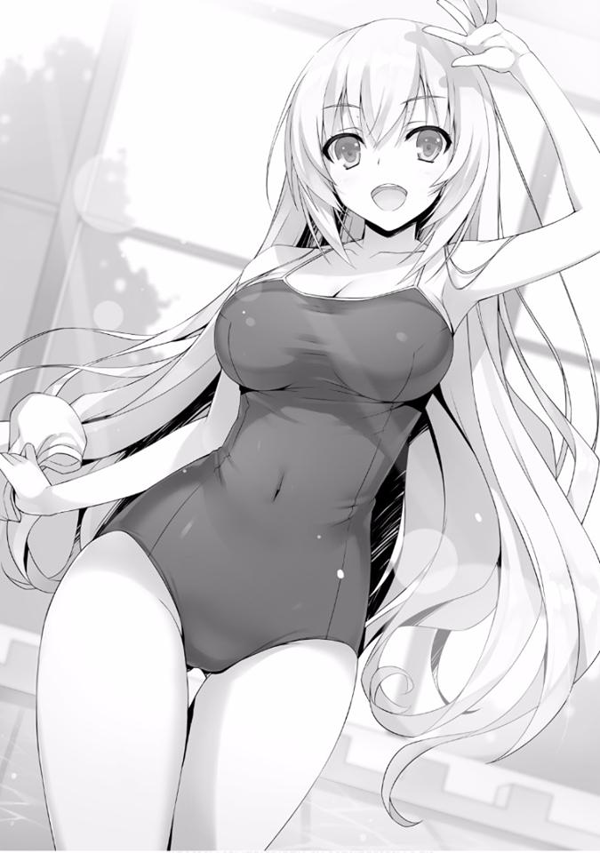
— Hey...
Sin saber a dónde mirar, dirigí mi mirada hacia la pared mientras levantaba ligeramente mi mano para responderle.
— ¿Dónde están los otros? Pensé que los chicos serían más rápidos cambiándose —dijo Ichinose.
— Todavía se están cambiando.
Podría decirse que debido a varias circunstancias en juego llegaban tarde.
— Pero de verdad, has terminado de cambiarte bastante rápido.
Teniendo en cuenta que no estaba tan lejos de mí, eso es toda una hazaña.
— Nyahaha, confío en mi velocidad para cambiarme.
Ella respondió con un tono ligeramente orgulloso, pero eso no es una hazaña de la que jactarse. Esta inocencia también puede ser el secreto de la popularidad de Ichinose.
— ¿Ohh, Ayanokouji-kun, has comprado un rashguard? (San Google)
— Puedes pensar que es extraño para un hombre, pero no me gusta exponer mi piel frente a otras personas. Si se usa fuera de las clases no hay problema, lo escuché y pensé en comprar uno.
— Ya veo, ya veo. Creo que está bien. No es una violación de las normas —
dijo.
No hay muchos pero en este lugar hay estudiantes como yo que también llevan una prenda exterior a pesar de ser hombres.
Ichinose, que había comenzado a dirigir su atención hacia mí, usó su dedo índice como alfiler y empujó mi vientre sobre mis prendas.
— Es bastante duro. Además, tu cuerpo es perfectamente esbelto sin ser excesivamente musculoso.
Tocándome por todas partes sin ninguna reserva, repite la misma acción en mis brazos y mis hombros, entre otras partes.
Tuve la suerte de tener un ingreso adicional para comprarme esta prenda exterior. Tendré que agradecerle a Katsuragi.
— ¿Haces ejercicio?
— No, no lo hago. Es solo el material de mis prendas o que simplemente mi piel es dura. Debe ser porque no hago ejercicio todos los días —dije.
— Hmmm...
Ichinose bajó su mirada hacia mis piernas pero de inmediato dejó de hacer preguntas.
Pero aun así, al estar tan cerca de Ichinose, me volví consciente de sus enormes y monstruosos pechos.
¿Cómo voy a nadar o competir en esta condición? En primer lugar, mi capacidad para moverme correctamente será sospechosa.
— ... Pero realmente se están tardando. Los iré a ver.
Qué estoy haciendo y por qué hago lo que estoy haciendo, lo entiendo bien. Es porque ya no podía soportar estar junto a Ichinose, vestida con traje de baño, así que di media vuelta y me dirigí hacia el vestuario de los hombres.
Luego, pasando un tiempo con Ike y los demás, una vez que los preparativos se completaron, todos nos dirigimos hacia el corredor.
Aunque debe ser el resultado del tiempo transcurrido desde entonces, todas las chicas, incluida Horikita, se han reunido.
— ¡Guau.....!
Ike, cuya voz se escapó por la espectacular vista de las chicas frente a él, trató desesperadamente de controlar su voz.
En lo que respecta a Sakura, se encogió hacia la parte posterior. Naturalmente, llevaba un rashguard que ocultaba su pecho.
Pero parece que no todos pudieron ocultar su excitación al ver esas formas vestidas en traje de baño que normalmente no podían ver.
— Fufufu, puedo verlo. ¡Debajo de esa delgada capa, esos pechos, ese lugar!
Ike y Yamauchi miraban a las chicas como si tuvieran visión de rayos X.
Realmente parecen estar viviéndolo.
— Entonces, ¿deberíamos ir? Por ahora parece que la que está atrás está vacante.
Primero nos movimos para asegurar un lugar donde pudiéramos tomar un descanso. Incluso aquí, tomando la iniciativa, Ichinose caminó hacia adelante.
Entonces, siguiendo a Ichinose, Kushida también se movió. Mientras lo hacían, los muchachos se alinearon justo detrás de ellas. Parece que sus objetivos son los suaves traseros de Ichinose y Kushida.
Pero incluso entre ellos, Sudou estaba al lado de Horikita y no mostraba signos de alejarse. Estos dos, en cierto modo, también están desarrollados adecuadamente. Inesperadamente, podrían convertirse en una buena pareja.
Luego, rutinariamente me moví hacia Sakura.
— Umm...... gracias...
Cuando solo nos quedamos los dos, Sakura me agradeció un poco.
No pude evitar hacerle una pregunta.
— ¿Por qué me estas agradeciendo?
— ¿Por qué?
Ante esta pregunta, Sakura me respondió extrañamente.
Luego me di cuenta de que no había ninguna razón.
— Umm, eso es, por invitarme hoy...
— ¿Qué se supone que significa eso? Es normal, ¿verdad? Porque eres mi amiga —le dije a Sakura.
Hacia Sakura, la palabra “amiga” salió fácilmente de mi boca. Al escuchar eso de mí, los ojos de Sakura se iluminaron como un pequeño cachorro y me miró felizmente.
— Por eso, no es algo que debas agradecerme.
Repetí eso, pero no parece que Sakura sienta lo mismo.
— Aun así, gracias.
— No... bueno, supongo que está bien.
Un signo de interrogación flotaba sobre mi cabeza, pero dejemos que piense de esa manera. Ella es este tipo de persona. Es por eso que puedo relajarme mientras estoy con ella sin tener malos sentimientos.
Pero aun así, Sakura se está convirtiendo en una persona franca. Ha madurado hasta el punto de que es casi irreconocible a comparación de la persona que conocí por primera vez.
A pesar de que un compañero de clase se le confesó, sin huir, lo afrontó correctamente. Al verla crecer día a día, no pude evitar pensar que tal vez yo también puedo cambiar.
— Me di cuenta de esto hace poco, pero ¿sabes?, durante las clases de educación física el profesor siempre nos decía que la natación definitivamente nos sería útil más adelante. Se refería a la prueba de la isla deshabitada.
Sakura me informó de esto con ojos ardientes, no hay necesidad de refutarla y deprimirla.
— Ya veo, ahora que lo mencionas, es cierto —le dije.
— ¡Como pensé!
Se sintió feliz por su deducción y Sakura se balanceó inocentemente.
Pude ver sus grandes pechos oscilar sobre el rashguard. Esto realmente la hace incapaz de quitarse sus prendas exteriores. Tan grandes como son, la situación no sería nada buena, sentí un poco de simpatía por las circunstancias que enfrentan las chicas.
En cualquier caso, a través de nuestra conversación, estoy feliz de haber podido descubrir un nuevo lado de Sakura. Pero, Sakura inmediatamente hizo una cara de disculpa.
— Si hubiera participado en las clases adecuadamente sin sentirme avergonzada, me pregunto si hubiera sido más útil para ti... Solo estaba usando la excusa de estar enferma para huir todo el tiempo...
— Si te has dado cuenta de eso, ¿no es suficiente?
Los estudiantes que hasta ahora solo han vivido para ellos han comenzado a darse cuenta de que esto por sí solo no será suficiente.
Una persona no puede vivir sola. A menos que uno piense en vivir como un ermitaño escondido en una montaña, no hay más remedio que vivir junto a otras personas.
La mayoría de los estudiantes de secundaria y preparatoria no se dan cuenta de este hecho. Viven en soledad absortos en Internet o en sus juegos sociales. O
hay delincuentes que molestan al público cometiendo ofensas menores o delitos graves.
Sin darse cuenta de cómo uno debe cooperar y ayudar a los que le rodean.
Dependiendo de las circunstancias, también hay quienes viven toda su vida sin darse cuenta de eso.
Pero esta escuela es diferente. Su forma de hacer las cosas es única, pero siento que intentan decirle algo a cada estudiante en particular. De hecho, Sakura, a mi lado, ha comenzado a darse cuenta de esto. Que tal vez había algo que ella podría hacer por la clase. Que un día será alguien importante.
— ¿Hmm? ¿Si no son Ichinose y los demás? Ustedes también vinieron aquí hoy.
Mientras caminábamos buscando espacio, tres estudiantes masculinos llamaron a Ichinose. Uno de ellos era alguien que recordé y cuando se dio cuenta de mi presencia, él asintió ligeramente. Era Kanzaki de la Clase B.
— Yahho--- son Shibata-kun y los demás.
El chico llamado Shibata levantó la mano en respuesta. También nos saludó a los de la Clase D con una sonrisa.
— Esta parece una mezcla divertida de personas. Déjanos unirnos también.
— Estoy perfectamente bien con eso, pero... ¿está bien?
Kushida asiente diciendo que no hay problema, como si fuera algo obvio. Al hacer esto, Ike y los demás tenían automáticamente aniquilado su derecho a negarse.
En última instancia, los tres de la Clase B se unieron a nosotros y el número total de personas aumentó a un gran total de 13.
— Perdón por molestarlos chicos.
Kanzaki, que sabe que no soy del tipo que discute contra la opinión general, se me acercó y dijo eso.
Al ver esto, Sakura dio un paso atrás. Era una forma brillante de borrar su presencia para que Kanzaki no la notara.
— Está bien, ¿no? Es el último día de las vacaciones de verano.
— Hay pocas posibilidades en esta escuela de llevarse bien con los estudiantes de otras clases. Shibata y los demás también parecen felices.
— No eres como ellos.
Kanzaki estaba tranquilo como de costumbre, o más como si sintiera que estaba haciendo contacto conmigo desde la distancia.
— Solo soy similar a ti, Ayanokouji. No soy bueno lidiando con el entusiasmo y la alegría.
Conversaba casualmente con Kanzaki mientras caminábamos y entonces pudimos escuchar una oleada de aplausos surgir desde la dirección a la que nos dirigíamos.
— Están siendo ruidosos por allí.
Sudou dijo eso.
Cuando levanté la cabeza para mirar, en el centro del alboroto se elevó un chorro de agua. Y al mismo tiempo, una persona y una pelota revolotearon hacia el cielo.
Un remate violento golpeó al oponente bajo el agua. Parece que están jugando voleibol en la piscina.
— ¡Woah! ¡Es asombroso! Ese tipo, ¿no está realmente en otro nivel?
Yamauchi, gritó al contemplar eso con sus ojos.
En esta instalación había 3 piscinas que se prepararon y parecen ser utilizadas para diferentes juegos.
Una de ellas es una piscina estándar a la que puedes ir a nadar siempre que lo desees. Otra es algo así como una piscina con agua en movimiento. Y por último, una piscina orientada a la diversión y de uso deportivo.
Y ahora en esa piscina de uso deportivo, rodeada por una gran cantidad de chicas, se estaba llevando a cabo una feroz batalla de voleibol. Eran estudiantes que nunca había visto antes. Algunos de ellos parecían casi adultos, por lo que la mayoría de ellos probablemente sean estudiantes de 2° o 3° año.
Un equipo mixto de hombres y mujeres y sus jugadas de alto nivel se estaban desarrollando.
Pero incluso entre ellos, había un estudiante en particular que se destacaba notablemente.
— Él es asombroso...
Al que Sudou elogiaba era en verdad ese estudiante con aura llamativa.
Esa esbelta complexión suya parecía a primera vista delicada. Pero en su cuerpo, uno podía ver sus abdominales bien formados. Pero lo que más destaca es el cabello rubio que se agita suavemente cada vez que se mueve intensamente y la mirada extremadamente preparada en sus rasgos. Era tan guapo que casi podría confundirlo con la ilusión de ver una película en la pantalla.
Y parece que a la mayoría de las estudiantes también les ha robado completamente los ojos este hombre guapo.
— Khhhhh, ese es el tipo de hombre que más odio. No es tan talentoso ni hace tanto esfuerzo, simplemente está en el campo de batalla por su buen aspecto.
No es que no entienda los sentimientos venenosos de Ike y los demás, pero sus expectativas fueron rápidamente traicionadas.
Un hombre guapo que es el centro atención. El agudo brillo en sus ojos lo hace destacar por encima de todo.
La pelota salió por error del equipo del hombre guapo, y en respuesta, dio un gran salto.
Olvidando el hecho de que en ese momento, la mayoría de las chicas levantaron la voz, me quedé sin aliento y lo observé.
Tenía un ángulo agudo, a alta velocidad, como una bala, no, la pelota asaltó la posición del enemigo.
El estudiante del otro equipo que recibió esa pelota, tenía habilidades físicas superiores, ya que mostraron una respuesta ágil al saltar para jugar la pelota.
— ¡Guau!
Mientras gritos como ese se escuchaban por todos lados, al mismo tiempo el equipo del hombre guapo recibía cada vez más puntos.
No importa quién lo mire, las habilidades físicas superiores de ese hombre guapo deberían ser evidentes. Al observar el desarrollo de la mitad inferior de su cuerpo, quizá esté en deportes que se centran en el uso de las piernas. ¿Tal vez el club de atletismo? Béisbol y fútbol también son posibilidades.
— E-Él es guapo e inteligente y lo hace muy bien en los deportes... ¿¡Quién diablos es!?
— Las cosas se ponen bastante animadas, ¿no? Él gobierna este lugar.
— Parece que sí. No sé quién es, ni de dónde es.
Tanto Horikita como yo no conocemos a muchos estudiantes de otras clases y grados ni sus circunstancias.
En casos como este, lo mejor es preguntar a Kushida, cuya red se extiende más que cualquier otra persona. Y la respuesta a nuestras preguntas vino de inmediato.
— Ese hombre es de segundo año, Nagumo-senpai de la Clase A. Es extremadamente popular entre las chicas.
— Nagumo...
Recientemente me he familiarizado con ese nombre. Luego, Ichinose explica más sobre Nagumo.
— El actual vicepresidente y el hombre que se convertirá en el presidente del consejo estudiantil el próximo año. Es realmente inteligente —dijo Ichinose.
Después de haber estado a nuestro lado escuchando nuestra conversación, Ichinose reaccionó al nombre de Nagumo y nos respondió así.
Además, ante la palabra clave “Consejo Estudiantil” que pronunció Ichinose, Horikita, que también estaba parada a mi lado, mostró una ligera reacción.
Y cada vez que el estudiante llamado Nagumo se mueve y muestra su actividad, se produce un agudo chillido. En las otras piscinas, al mismo tiempo también se celebraban otros encuentros, pero la mayoría de las chicas no miraban a nada más que a Nagumo.
— A pesar de su popularidad, no lo conozco en absoluto. Tú tampoco
¿verdad? Ayanokouji-kun. De hecho, sus habilidades físicas parecen ser las de un chico prodigio, pero en comparación con su popularidad, no creo que sea realmente tan increíble. En ese sentido, el presidente del consejo estudiantil lo supera abrumadoramente, ¿no es cierto? —dijo Horikita.
Eso fue bastante descarado de su parte. Esconder el hecho de que él es su hermano mayor mientras lo elogia.
Pero en lo que respecta a ese aspecto, parece que Ichinose no tiene ninguna objeción ya que honestamente lo admitió.
— Sí, el presidente del consejo estudiantil es increíble, eso es todo. En la historia de esta escuela, se puede decir que el actual presidente ha sido el
más talentoso. Hablando de eso, tiene el mismo apellido que tú, Horikita-san, ¿no?
— Parece que sí, sí.
Al parecer, no tiene intención de responder, Horikita simplemente se encoge de hombros.
— Pero, también hay rumores de que él no está perdiendo contra ese presidente en términos de capacidad. De hecho, en las elecciones celebradas el año pasado, el presidente Horikita y el vicepresidente Nagumo lucharon por el asiento de presidente del consejo estudiantil, o eso dicen. A pesar de que el vicepresidente Nagumo era solo un estudiante de primer año —dijo Ichinose.
— ¿Estás realmente familiarizada con los asuntos del consejo estudiantil, verdad? —le preguntó Horikita.
— Es porque me uní al consejo estudiantil. Entonces, cosas así, inevitablemente terminé recordándolas —Ichinose responde.
— .....¿Lo hiciste?
Al escuchar eso, Horikita no pudo ocultar su sorpresa.
Pero aun así, pensar que Ichinose se unió al consejo estudiantil. Hablando de eso, el día que la conocí por primera vez, ella estaba hablando con la maestra titular de la Clase B, Hoshinomiya-sensei, con respecto al “asunto del consejo estudiantil”.
Desafortunadamente no tengo intención de trabajar bajo el mando de “ese”
presidente del consejo estudiantil, pero al pensar en cómo es el sistema de esta escuela, la importancia de unirse al consejo debe ser extremadamente grande.
— Por cierto, ¿cuál es la condición para ingresar al consejo estudiantil? No es que cualquiera pueda ingresar, ¿verdad?
— Hmm, esta escuela es un poco especial. En caso de que no estés afiliado a ninguna actividad entre abril y finales de junio, si pasas la entrevista para el consejo estudiantil de octubre, entonces puedes unirte, algo así. A decir verdad, la primera vez que fui rechazada, pero ya que puedes tomarla tantas veces como quieras, perseveré. El presidente del consejo estudiantil
nunca estuvo de acuerdo, pero el vicepresidente Nagumo tomó la decisión final. Lo escuché más tarde del Vicepresidente Nagumo, pero parece que el presidente Horikita está decepcionado con los estudiantes de primero de este año. En promedio, cada año se aceptan entre 2 y 3 estudiantes de 1er año, pero este año la única que fue aceptada hasta el momento soy yo. Es por eso que me gustaría darme prisa y triunfar en esto. Quizás en octubre, el presidente Horikita se haga a un lado.
Al igual que Horikita está esforzándose por acercarse a su hermano, Ichinose probablemente también está luchando lo mejor posible.
— Pero creo que mi objetivo será definitivamente Nagumo-senpai. Senpai tuvo un comienzo similar para mí y también nos llevamos bien. En esta escuela, todos los presidentes del consejo estudiantil en su historia comenzaron en la Clase A, pero Nagumo-senpai, al igual que yo, comenzó en la Clase B. Y antes de que nos diéramos cuenta, él ya está definitivamente en la línea para ser el próximo presidente. Es por eso que después de Nagumo-senpai, seré presidenta del consejo estudiantil… es broma.
Parece que dentro de Ichinose, en comparación con el Horikita mayor, su evaluación de Nagumo es más alta. Ella pronunció que quiere ser presidenta del consejo estudiantil un día, expresó su determinación.
Parece algo así, no, probablemente desde el fondo de su corazón, no le sentó bien a Horikita cuando ella respondió bruscamente a eso.
— Desde el momento en que comenzó ahí, ya deberías ser capaz de imaginar su potencial.
— Oye, oye........
Eres libre de pensar lo que quieras, ¿pero no estás siendo destructiva contigo misma? Por el hecho de que comenzaste en la Clase D, ya serás juzgada... o podría ser que ella---
— ¿Podrías ser que tú, todavía crees que fuiste asignada a la Clase D por error.......?
— ¿No es obvio?
Ella me respondió así.
Sin dudas, atrevida e incluso natural.
— Bueno, entiendo por qué Horikita-san siente que esto es extraño. No parece que las clases se decidan solo por tu capacidad. Está tu capacidad intelectual, por supuesto, como ser humano, tu madurez y cooperación. Es solo después de ver todas esas habilidades que nos evalúan, ¿no es así?
— Eso es en otras palabras ----- ¿dices que hay un problema con mi capacidad de coordinación? —Horikita preguntó.
— Ahh, no, lo siento si así es como lo tomaste, me disculpo. Pero verás, piénsalo un momento. Básicamente, Horikita-san es de las que creen en sí misma. Si lo vemos de otra manera, también podría significar que eres egocéntrica. Cuando salimos a la sociedad, una persona que se centra en sí misma y una persona que se atiene a las instrucciones que se le dan,
¿no es una cuestión en la que depende del caso para ver quién es más talentoso?
Aunque seas una persona egocéntrica, si eres una persona talentosa, seguirás siendo necesaria en el mundo, pero eso no siempre es definitivo.
Por otro lado, aquellos que se adhieren a las instrucciones serán vitales casi en cualquier parte y nuevamente serán personas demandadas.
— No estoy convencida...
Su actitud en sí misma no ha cambiado, pero aun así, la mentalidad de Horikita comenzará a cambiar lentamente.
Como Ichinose llamó a un amigo, cerré mi distancia con Horikita.
— Hablando de eso, no anunciaste tu candidatura para postularte al consejo estudiantil, ¿verdad? ¿No elegiste esta escuela porque querías estar al lado de tu hermano? —le pregunté.
— ... Esto y aquello son cosas diferentes. Puedes imaginarlo, ¿no? Incluso si quisiera unirme al consejo estudiantil y hacer una entrevista, definitivamente no me reconocerán.
Ciertamente no es tan difícil de imaginar. Incluso Ichinose de la Clase B no fue aceptada inicialmente, si es Horikita de la Clase D... probablemente no permitirán que la hermana a la que quería expulsar de la escuela se una.
Entonces eso significa que ella es la más consciente de algo así.
Vi el partido por un tiempo, pero al final el equipo de Nagumo superó al otro equipo y ganó.
Las chicas que estaban animando a Nagumo lentamente comenzaron a reunirse a su alrededor mientras salía de la piscina hacia el área circundante.
— ¡Oye, ese tipo tiene un piercing en la oreja! ¿¡Eso está bien!?
Ike, que no podía encontrar nada más para intervenir, gritó eso.
— En este momento estamos en plenas vacaciones de verano, ¿no es así?
Pero incluso esas palabras fueron en vano porque Ichinose le replicó así.
— N-No, pero quiero decir. ¡Tiene un agujero en la oreja! ¡Es un gran problema!
— Creo que esos son piercings sin perforación, ¿no? Puedes ponértelos en la oreja sin abrir un agujero. Normalmente, en la escuela siempre se viste con cuidado.
— ¡Ugugu!
No importa lo lejos que vayan las quejas, parece que es un estudiante completamente perfecto.
— Oye, ¿por qué no jugamos también voleibol en la piscina? Tenemos a Shibata-kun y los demás, unas 6 personas. Y ustedes tienen alrededor de 7, así que estará bien si jugamos rotándonos.
Ya que estamos en la piscina, Ichinose hizo esa propuesta. El primero en estar de acuerdo con ella fue Ike.
— ¡Lo haré, lo haré! ¡Como Nagumo-senpai, también atraeré las miradas apasionadas de las chicas! —dijo Ike.
Creo que eso es imposible, pero muchos de los estudiantes parecen estar a favor de eso.
Ya que han venido hasta la piscina, quieren divertirse con todo lo que tienen.
— U-Umm. Soy mala en las actividades físicas, así que... solo me quedaré mirando.
Se retiró reservadamente, o mejor dicho, como si realmente no quisiera hacerlo, Sakura dijo eso. Era obvio que ella no quiere jugar voleibol, así que no hubo objeciones.
En cuanto a los números, este es básicamente un juego de 6 contra 6, pero parece que se están filtrando quejas sobre el partido de voleibol.
— Tampoco quiero jugar.
A pesar de que me debe una, parece que no está de humor para jugar.
— ¿Horikita-san, vas a huir?
Riendo, Ichinose dijo eso para provocarla.
— No existe nada como huir o cualquier cosa cuando se trata de un simple juego.
— Sin duda, es solo un juego. Pero también es como una versión en miniatura de nuestras clases ¿verdad? ¿Cuál es más ambiciosa, cuál tiene mejor trabajo en equipo? En cierto sentido, esta es una competencia entre clases ¿O estás diciendo que no deseas luchar contra nosotros? —
preguntó Ichinose.
Una propuesta como un examen que incluye el análisis de nuestro potencial de combate. Si lo piensas de esa manera, no había ninguna razón para rechazarlo.
— ... Bien. Hagámoslo.
La Clase B, que se convertiría en nuestro enemigo en un futuro no muy lejano.
En este momento solo es un juego, pero también quieren confirmar la habilidad de sus oponentes. Horikita, acepta el desafío de Ichinose.
— Y ahora, para que el partido sea más entretenido, el ganador disfrutará los gastos completos del almuerzo de forma gratuita. ¿Está bien agregar un bono como este?
— Voy a aceptar esa condición.
Después de presentar nuestra solicitud para utilizar la cancha, hasta que una esté vacante, cada uno elabora sus propias estrategias. Las reglas del partido son 15 puntos por set con 3 sets para el partido.
El equipo que obtenga 2 sets primero será declarado ganador. En cuanto a los saques, se hará por rotación y el que obtenga un punto obtiene el derecho de servir nuevamente.
— Este es un juego. Pero un partido es un partido. Si lo vamos a hacer, vamos a ganar.
— Horikita-san, estás inusualmente encendida.
— Si escuchas que el almuerzo será gratis, podrías pensar eso. Pero no es así. Para invitar a este número de personas existe la posibilidad de gastar hasta 10 000 puntos. En otras palabras, siguen siendo puntos privados, pero también significa que nuestra diferencia con la Clase B se acortará por ese tanto. Por el contrario, si perdemos, la brecha se ampliará mucho.
Es como un examen especial —dijo Horikita.
Aunque la cantidad se comparta entre todos, serían aproximadamente 2 000
puntos cada uno. No es barato.
— Bien, ganemos esto, ¡Ken, Haruki!
La motivación difiere de persona a persona, pero Horikita parece haber cambiado su forma de pensar en una buena dirección.
— Déjamelo a mí, Suzune. Si estoy aquí, es la fuerza de 100 hombres. Esos cabezas de carne, los esparciré a todos —dijo Sudou.
— No... cabeza de carne es una palabra que se utiliza para representar a una persona como Sudou, ¿sabes? (Nota: por lo menos en inglés dice
“Meathead” que significa persona estúpida)
Intervine cuando Sudou parecía tener un magnífico mal entendido.
— ¿Qué quieres decir? Cabeza de carne significa alguien con una medalla de oro para sus cerebros, en otras palabras, alguien que estudia demasiado
¿verdad? —pregunta Sudou.
Parece que Sudou está malentendiéndolo magníficamente como un cabeza hueca.
— Ese puede ser el caso... por favor, olvida lo que acabo de decir.
Interponerse es un asunto problemático. Porque Sudou estaba mirando a los miembros de la Clase B y se rió estruendosamente. Con la confianza de que no hay manera de que pueda perder.
— Déjame probar si puedes ser utilizado o no, Sudou-kun.
A pesar de que cuando se trata de estudiar, simplemente holgazanea, en una situación como esta, parece ser un aliado tranquilizador. Puedo entender los sentimientos de Horikita por esperar mucho de él.
En la Clase D, el que tiene las mejores habilidades físicas es Sudou. Como excepción, está Kouenji, pero es mejor, para bien o para mal, no contarlo.
— Sudou, ¿tienes experiencia jugando al voleibol en una piscina?
— No. He jugado un poco de voleibol en clase, eso es todo.
— Estás bastante seguro para alguien así...
— El baloncesto se conecta con todos los deportes, es algo que las personas mayores que respeto han dicho —dijo Sudou.
Cree en su poder sin dudarlo. Para Horikita también, es una buena oportunidad para determinar si Sudou es pura charla o no.
*****
Al mirar la bola que aterrizaba suavemente, Sudou saltó a una gran altura.
Y con ese maravilloso poder de salto y usando su cuerpo como resorte, golpeó la pelota. La bola, filosa como una bala, atacó la posición del enemigo.
Ichinose la mira ansiosamente, pero a diferencia de en tierra, sus movimientos en el agua son lentos y no pudo llegar a tiempo. No hubo aplausos dirigidos a él, pero ese poder suyo era igual o superior al de Nagumo que había visto hace un momento.
— ¡Sí!
Marcando fácilmente, Sudou hizo una pose triunfante. Entonces esto es lo que significa estar en tu propio elemento. Su aliada, Horikita, también miró los movimientos de Sudou con admiración.
— Fue una bola increíble, realmente nos atrapaste.
Levantando la pelota flotando en el agua, Ichinose se la devolvió a Sudou. Ella expresa su admiración hacia él.
— Heh. Bueno, supongo que una mujer no puede devolver mis ataques.
Tengo que marcar —dijo Sudou.
— Jojo. ¿Discriminando a las mujeres? Te haré saber que incluso las chicas no perderán contra los chicos.
Ante una afirmación agresiva como esa, Ichinose le respondió así mientras reía sin ira mientras regresaba a su posición.
Era un partido que comenzó con el servicio de la Clase B, pero Sudou ya estaba mostrando sus logros a pasos agigantados y hemos obtenido una ventaja de 7 a 3.
— Sudou-kun tiene un amplio rango defensivo y un alto poder de ataque, debemos evitar su área tanto como sea posible...
Cada vez más cauteloso con Sudou que estaba cargando a su equipo, Kanzaki recibe el servicio que Yamauchi lanzó.
— Ok, Ichinose. ¡Dame la pelota, he encontrado nuestro objetivo!
— ¡Entendido!
Ichinose levantó gentilmente la pelota que caía hacia una posición más favorable.
El que saltó en respuesta a la caída de la pelota fue Shibata.
Shibata ataca. El destino de su ataque es--- por desgracia, justo en frente de mí.
Si esto no es una coincidencia, entonces significa que han determinado que la mayor debilidad aquí soy yo.
— ¡Atrápala, Ayanokouji!
Esas severas palabras vinieron de Sudou, di un paso adelante en el agua. La velocidad de la bola en sí no es rápida. No debe ser difícil simplemente tocarla.
Extendí mi mano.
¡Beh!
Se escuchó un sonido sordo.
— Geh........
Alcancé la pelota, pero brillantemente se fue lejos.
— ¡Hurra!
Por otro lado, viendo esta situación, Ichinose y Shibata intercambiaron esos cinco.
Naturalmente, Sudou me mira intensamente.
— ¿Qué diablos fue eso? ¡Esa mala jugada justo ahora! —dijo Sudou.
— Lo siento... este es un buen ejemplo de que ganar un punto de una manera magnífica y ganar uno de manera simple tienen el mismo valor —respondí.
— No jodas. Aunque tu ángulo sea tan malo, está bien, pero al menos levanta la pelota —me dijo Sudou.
Pero aunque me diga que es problemático. Esta es la primera vez en mi vida que juego voleibol. No será muy conveniente para mí.
— Oye, cálmate Sudou. Lo recuperaré con mi espléndido servicio.
Después de recoger la pelota que había caído cerca, Ike comenzó a servir.
— ¡Sha---!
Y con un sonido de “boyon”, la pelota voló extrañamente hacia el territorio del otro equipo. Voló hacia donde estaban las chicas, y como una cuestión tácita fue lanzada hacia atrás y luego la atacante Ichinose saltó.
— ¡Estos tipos son inútiles!
Bloqueando el balón que Ichinose golpeó con sus brazos, Sudou lo envió de regreso hacia el lado de la Clase B.
Esta vez, fue Kanzaki quien lanzó el balón hacia atrás y una vez las chicas lo enviaron de vuelta hacia nosotros.
Ante la pelota que se aceleraba hacia mí, Sudou usó su gran altura para bloquearla. Sudou, que brillantemente me cubrió, se movió hacia mí y lo bloqueó.
— ¡Toma esto---!
Al ver que Sudou ya no podía moverse, Ichinose saltó mientras gritaba eso. En ese momento, sus pechos se balancearon. Ike, Yamauchi y yo apreciábamos la vista.
— ¡Atrás!
Mientras Sudou aterrizaba, nos gritó eso, y cuando lo hizo, Horikita, que estaba cerca, arrojó el balón de Ichinose hacia atrás y lo levantó hacia un lugar más favorable.
El juego acababa de comenzar, pero ya era un lugar donde Sudou hacía las decisiones.
Para Sudou, que tiene un poder increíble, casi no había chicas capaces de recibir sus ataques.
Los muchachos Kanzaki y Shibata estaban aguantando, pero en primer lugar y en segundo lugar, Sudou tenía una técnica y un poder superiores y es por eso que los obligó a ponerse a la defensiva.
La única estrategia que la Clase B podía tomar ahora es no dejar que Sudou tenga libertad. O no darle la pelota a Sudou. Por otro lado, en el lado de Clase D
tanto Horikita como Kushida tienen buenas habilidades físicas y una ofensiva y poder de defensa por encima de la media. Una alineación estable.
Por otro lado, incluyéndome a mí, Ike y Yamauchi nos convertimos en el eslabón débil.
— Gyaa --- ¡Lo siento!
En lugar de atacar al saque que aterrizó cerca de él, Yamauchi terminó dejando que la Clase B ganara un punto. Cada vez que ganan un punto, la frustración de Sudou aumenta y chasquea la lengua. No se puede evitar porque la mayoría de ellos fueron a causa nosotros tres.
— Cálmate, Sudou-kun. Estás haciendo lo mejor que puedes, es mejor que no te muevas sin cuidado.
— Pero... si perdimos a causa de estos tipos inútiles, todo será en vano —
Sudou respondió.
A pesar de expresar su insatisfacción, Sudou regresa a su posición.
Tal vez Ike se sintió irritado por esa actitud, porque cuando Sudou ya no podía verlo, le levantó el dedo medio. Al ver eso, Yamauchi también levantó su dedo medio.
— Oye, Haruki. Estás muerto cuando esto termine.
— ¡Gyaa ---!
Pero desafortunadamente terminó mirando hacia Yamauchi.
Además, como si fijaran al enemigo, una vez que el juego se reanudó, las bolas provenientes de los oponentes volaron hacia Yamauchi una vez más.
— ¡E-Esto no puede ser!
En el agua, a la que no está acostumbrado, y bajo la presión de Sudou, Yamauchi no pudo alcanzarla.
— ¡GaboGabo!
— Maldita sea, es patético cuando las chicas son más útiles, ¿no creen eso chicos?
Sudou, que tiene una fuerte presencia en la actividad atlética, lanzó un golpe que perforó nuestros corazones.
Nadie quiere verse patético delante de las chicas. Pero eso no significa nada.
Así como uno no puede mejorar su intelecto de la noche a la mañana, en este momento y lugar no puedo simplemente mejorar mis habilidades físicas.
La pelota una vez más desciende a mi ubicación. De la sensación de mi fracaso la primera vez, y evaluando el entorno para el punto de recepción, puedo extrapolar que, mientras tenga cuidado con la posición de mi brazo y la rotación de la bola, en teoría no debería ser difícil devolver la pelota.
Percibí la pelota que descendía suavemente desde ese punto.
Entonces la recibí de manera adecuada---
Pero no pasé por alto la mirada de Ichinose desde el lado enemigo. En el momento en que me di cuenta, elegí recibir la pelota en ese lugar de una manera torpe.
Mis pies resbalaron y terminé cayendo en la piscina.
— Eres malísimo, Ayanokouji.
Cuando salí del agua, Ike, que estaba protegiendo la parte trasera, se rió de mí.
— Aunque sea terrible o lo que sea, siempre y cuando te vuelvas a levantar, está bien. ¡Lo hiciste bien!
Mientras estaba parado cerca de mí en caso de que la devolviera, Sudou mostró varios saltos que no pude ver bien.
Un ataque feroz.
Durante el partido, casi por su cuenta se está moviendo por la cancha de agua.
A pesar de que debe haber usado un poco de su resistencia, una vez más repite su ataque especial con un poder que ni siquiera podía ver. Abruma incluso a la Clase B, que es superior en términos de trabajo en equipo a un nivel igual o incluso superior.
Mirando a ese Sudou, decidí entretenerme con el voleibol por un tiempo.
*****
— Nyabu ---. Perdimos. Completamente.
Cuando salí de la piscina, Ichinose se acercó frustrada y dijo eso.
Sin duda, era solo un juego, pero también había sentimientos inconfundibles de no querer perder contra el otro equipo. Fue la victoria de la Clase D que ganó 2
sets seguidos.
— Sin embargo, fue debido a que nos apoyamos completamente en Sudou-kun.
Cerca de una Horikita que lo elogiaba honestamente, Sudou parecía presuntuoso. Está feliz de ser elogiado por la chica que le gusta. Esto se acentúa aún más porque proviene de Horikita, que generalmente no elogia a otras personas.
— Después de todo, estás en el club de baloncesto. Hay algunos muchachos en nuestra clase que también están en él, pero he oído hablar de ti, Sudou-kun. Que eres el mejor estudiante de todo el primer año —dijo Ichinose.
— Naturalmente.
Parece que también es conocido por otras clases y eso es más importante que cualquier otra cosa.
En este partido de voleibol, sin importar la sensación, me pregunto si terminó siendo algo significativo. Significa que la capacidad física de Sudou, que ya es alta, no pierde contra las clases mejor posicionadas. Es una gran cosecha. Si la habilidad física se convierte en parte de un examen, Sudou se convertirá en un arma valiosa.
Por otro lado, mirándolo desde la perspectiva de Ichinose, se convierte en una existencia aterradora a la que deben marcar.
— Si ustedes no hubieran sido una molestia, podría haber obtenido una victoria más aplastante —dijo Sudou.
— Maldita sea, Sudou se está poniendo engreído solo porque puede hacer deporte.
Yamauchi, que estaba tirado al lado de la piscina, miró a Sudou con una expresión de frustración. Es porque después del partido, recibió el ataque de Sudou y fue derribado.
En definitiva, cubrir a los tres que estábamos causando molestias fue difícil para él.
— Bueno, siempre que ganemos está bien. Eso significa que podemos comer lo que queramos para el almuerzo.
Guié la ira de Sudou para colisionar con la comida. Déjenlo comer más que los demás. Después de todo, Ichinose y los demás nos invitarán.
— Eso es bueno para nosotros, ya que estamos en la ruina, es algo por lo que debemos estar contentos.
Era una actitud descarada por parte de Sudou, pero indudablemente ha hecho una gran contribución en este partido.
— Entonces, no hay nada que hacer más que mantener la promesa.
¿Almorzamos?
Justo a tiempo, el hambre llegó a nuestros vientres en ese momento.
Ichinose y los demás, Sudou y los demás se dirigieron a la tienda. Horikita y yo nos tomamos un poco de tiempo para seguirlos.
— Oye, Ayanokouji-kun. No eres tan malo en los deportes, ¿verdad? Incluso si eres un principiante en voleibol, esos no fueron unos movimientos naturales —dijo.
Hace un tiempo, Horikita me vio pelear con su hermano (aunque en realidad no fue mucho) y recordó ese intercambio.
— La marca de Ichinose sobre mí fue bastante fuerte. Lo digo por si acaso.
— Así que no mostrarás tu mano. En este momento, las otras clases deben equivocarse al tratar de analizar la fuerza de la Clase D.
Ella asiente convencida.
En poco tiempo, cuando llegamos a la tienda, Ichinose se volvió para mirar hacia atrás.
— Según lo prometido, lo que quieran, sin importar la cantidad que quieran, son libres de comer —dijo.
— ¡Está bien! ¡Entonces no nos contendremos!
Los 3 idiotas, más que los demás, por el bien de su apetito, se desvanecieron lo más rápido posible. Ichinose estaba mirando eso con una sonrisa.
— ¿Vas a pagar todo?
— Sí. En primer lugar, fui yo quien dijo eso.
Puede ser cierto, pero esta es una cantidad que un individuo no puede soportar.
— Por lo general, me esfuerzo por ser frugal, así que todo está bien en este punto.
Escuchando tranquila lo que dijo Ichinose, Kushida respondió así.
— Pero Ichinose-san, ¿no usaste muchos puntos en tu traje de baño? Sé que no puedo compararme con la Clase B, pero eso apenas me las arreglo.
— Hmm. No estoy apegada a cosas así, o podrías decir que no compro cosas innecesarias. Mientras lo haga de vez en cuando no hay problema. Jajaja, eso podría ser un poco problemático para una chica.
— No es así. No comprar cosas innecesarias es algo maravilloso, creo.
Esta podría ser mi opinión prejuiciosa, pero las chicas se preocupan por estar a la moda. Kushida también es igual. Horikita sigue siendo indiferente, pero incluso ella parece prestarle atención a su cabello y ropa.
— Porque no sé dónde, en un lugar más importante, mis puntos serán necesarios.
Ichinose dijo eso. Lo que significa que en lugar de comprar ropa, gastar aquí, en este momento, tiene más significado. Es lo que está diciendo.
— Entonces, también haré mi elección sin reservas.
Horikita siempre come poco, pero como la Clase B la invita, se volvió agresiva.
— Jajaja. Sí, está bien. Pero sería malo dejar sobras, así que por favor evita eso —le dijo Ichinose.
No soy igual que Horikita, pero estoy muy interesado en la comida chatarra.
Haré mi elección.
*****
Mientras los otros se estaban preparando, en secreto me escapé a la piscina esperando a mi visitante.
— Ah, estoy cansada...
Pronto, Karuizawa apareció golpeándome la espalda.
— Buen trabajo, ¿cómo te fue?
— Fue como dijiste. Me siento realmente disgustada por esto.
— No digas eso. Podrías decir que es la sangre ardiente de la juventud fuera de control.
Karuizawa, que estaba parada a mi lado, hizo un sonido como si vomitara y luego echó un vistazo a los alrededores.
— Entonces, ¿cómo te fue? ¿Hace mucho tiempo que viniste a la piscina por última vez?
— No es nada, de verdad. Realmente no siento nada más que......
Ella examinó el área otra vez, más preocupada.
— A pesar de que es una mentira, todavía estoy viendo a Hirata-kun. Si me ven a solas contigo, rumores extraños pueden comenzar a extenderse,
¿sabes?
— ¿En serio? Tal vez si fuera tan apuesto como Hirata, aunque sea triste decirlo, mi presencia es bastante sombría. Probablemente nos veamos como uno de los grupos que vinieron a divertirse a la piscina.
Esta no era una situación en la que un chico y una chica juntos significaran algo sospechoso. Sería diferente si fuera en la tarde en una banca que nadie frecuenta.
Como está lleno de gente, es fácil mezclarse. Por cierto, Hirata, que es el novio, no está en la piscina. Probablemente ocupado con su club. No sé de las prácticas del club de fútbol, pero por lo que he escuchado, él es un tipo activo.
— Nos permitieron vestir rashguard hoy, viste algunos por ahí, ¿verdad?
— Bueno, sí. Pero, ¿estás bien con el dinero para eso? ¿No es caro?
— Son gastos necesarios.
Karuizawa extendió su mano así que casualmente la agarré. Sentí la dura textura de algo en mi palma. La experiencia penosa no duró más de un segundo.
— ¿Qué estás planeando?
— ¿Qué quieres decir?
— ¿Por qué eres diferente de los demás, podrías disfrutar de tu pequeña y feliz juventud si lo olvidaras ¿verdad?
Ya veo. Así que estamos moviendo el tema a lo que estoy sosteniendo en mi mano.
— En primer lugar, por ahora tengo que asegurarme de que la clase no esté en desventaja. Incluso si es algo pequeño, puede generar desconfianza entre ellos. Eso es lo que quiero evitar.
Es por eso que la llamé aquí. Dejarla disfrutar de la piscina también fue uno de mis objetivos.
— ¿Invitaste a alguien más hoy?
— Solo estoy yo ahora. Había otras dos, pero las mandé a divertirse.
— Una buena decisión.
Comencé a caminar junto a la piscina. Ella corrió detrás de mí.
— ¿Entonces tienes como objetivo llegar a la clase A?
— ¿No estás interesada?
— Hmm, no sé. Los puntos siempre son buenos y me gustaría conseguir un trabajo, pero...
Con las manos en los bolsillos, pateó el aire.
— No estoy muy interesada en pelear contra esas muchachas de la clase C, creo.
Si tiene que enfrentarlas de nuevo, el recuerdo de ese incidente resurgirá, por lo que no podría mostrar su verdadero potencial, a menos que la maldición que la ata sea levantada.
— Quiero hablar contigo sobre algo...
— ¿Qué?
— No sé qué implicará el próximo examen, pero haré los arreglos para un determinado plan.
— ¿Arreglos?
Mientras camino, mezclándome con el entorno, inusualmente, plasmo cosas importantes en palabras. Ni siquiera se lo he contado a Horikita.
— Expulsar a alguien.
— --¿Qué?
Ella se congeló por un segundo, tal vez por no entender lo que dije. Al darse cuenta de que no me detuve, corrió tras de mí.
— E-espera, ¿qué quisiste decir con eso?
— Exactamente lo que dije. Voy a hacer que expulsen a alguien de primer año. Las ideales serían esas tres chicas que conocen tu pasado Si eso no funciona, entonces alguien más. Si eso es imposible, entonces-
— ¿E-entonces?
— Entonces a algunos humanos inútiles de la clase D.
— ¿Entiendes lo que dices? No es fácil expulsar a alguien.
— ¿Es así? No realmente. Tengo una manera disponible en este momento...
Apreté mi puño, obligándola a centrar su atención en él.
— ¿Quieres decir, eso para qué era...?
— Dependiendo de la situación, podría obtener la expulsión con un golpe.
¿Verdad?
— P-pero, espera un poco. ¿Cómo llegó a esto? ¿No hiciste todo lo posible para salvarlo antes?
Lo rescaté de su crisis de expulsión. Pero eso fue en el pasado cuando no necesitaba llegar a la clase A.
Me estoy preparando para abrir mi camino, aunque sea temporalmente, para llegar a esa clase. Lo que significa que segar las existencias inútiles es obligatorio. Como Horikita una vez me dijo.
— Incluso después de salvar a Sudou, ¿vas a echarlo?
— Nah, no Sudou. Un humano con su fuerza física es importante para la clase.
No hay muchos estudiantes en las otras clases que tengan habilidades físicas comparables a él. Aparte de Kouenji, Sudou, con su gran potencial, es una existencia importante.
— ¿Qué pasará con nuestros puntos de clase si alguien es expulsado...?
— Bueno, por supuesto, la mejor opción sería expulsar a alguien de las otras clases.
A pesar de haber dicho eso, si alguien de nuestra clase es expulsado, el resto hará lo posible para no someterse al mismo tratamiento. Eso tampoco sería exactamente malo.
— Eres horrible, ¿sabes?
— Ya deberías saber eso, ¿verdad?
— ...Bueno, sí.
La amenacé, mis acciones incluso se acercaron a la violación. No creo que ella tenga una buena impresión de mí.
— ¿Qué tal consultar a Hirata?
— No sé sobre eso. En este momento Hirata no es alguien en quien pueda confiar plenamente.
— ¿Eh?
— ¿Conoces su pasado?
— Ah, sí. Me lo contó cuando le hablé del mío. Su amigo se suicidó, ¿verdad?
En efecto. Él me contó la historia, como si estuviera lamentándose o arrepintiéndose. Eso es probablemente cierto.
— En ese caso, ¿el suicidio de su amigo lo llevó a convertirse en un estudiante defectuoso y terminar en la clase D?
— ¿Eh--?
— Esa no es razón para que una persona inteligente y popular como él termine en nuestra clase.
Hubiera sido comprensible si tuviese muchas ausencias y bajas calificaciones, como Karuizawa, pero no he escuchado nada parecido de él. No hay evidencia de eso tampoco. Por lo tanto, no puedo confiar en él en esta etapa.
— Así que por eso preguntaste sobre mi pasado ayer...
— Evaluar la situación de Hirata. Un trauma en el pasado no equivale a un asiento en la clase D.
Después de confirmar que Karuizawa era una persona confiable.
El problema es con Hirata.
Él será muy difícil de manejar. No tengo idea si dice la verdad o miente, así que tengo que averiguarlo discretamente.
— De verdad estás sacando respuestas de mí cuando ni siquiera me dices nada.
— ¿Hmm?
— Tampoco eres normal. Algo también debe haberte sucedido, eso es lo que creo.
— Realmente no.
— Eso es mentira.
Nada. No hubo intimidación como en su caso, tampoco hubo intento de suicidio como el querido amigo de Hirata.
— Lo sé al mirar tus ojos. Incluso puedes matar gente sin dudar, eso es lo que siento de ti.
— Tan violenta. Nada tan dramático ocurrió en mi pasado.
Realmente no fue nada. Tan poco que ni siquiera puedo hablar de eso. Solo una existencia “completamente blanca”.
Sus ojos se clavaron en mí mientras me miraba. Probablemente está bastante interesada en la continuación. No había duda de que aferrarse a esto afectará los eventos posteriores.
Sin embargo-
¿Qué vas a hacer con eso?
Como para responder a los sentimientos detrás de esta pregunta, apreté mi puño aún más fuerte. El plástico emitió un chirrido al doblarse y quedar destrozado.
— ¿Q-qué?
Fui a un cubo de basura cercano y arrojé los pedazos de plástico.
— No expulsaré a nadie de la clase D. Necesito volver a mi grupo. Gracias por lo de hoy.
— Eso también está bien, supongo...
— Volvamos entonces.
Se acercaba la hora de cierre y los estudiantes salían de los vestuarios. El grupo al que perteneces influye en la hora a la que te vas.
El grupo regresa antes de la hora de cierre como el de Ichinose, el grupo que regresa una vez que se acaba el tiempo o el grupo se va justo antes de que cierren. Me pregunto qué grupo es el más rápido.
Estábamos, por otro lado, viendo cómo se iban los estudiantes. Después de un tiempo, no quedaban más que los salvavidas de la piscina.
— ¿Todavía no te vas?
— Ya sabes la respuesta, ¿para qué preguntar? Hay algunas situaciones que debo tener en cuenta para cambiarme —dijo en un tono algo frustrado, mientras se daba palmaditas en la chaqueta en la parte que ocultaba la cicatriz.
No podía mostrar eso a nadie. Es por eso que no podía usar los vestuarios llenos de gente. Dicho eso, no podía irse a casa sin cambiarse. Por lo tanto, ser la última era la única solución.
— Puedes nadar en ese traje de baño de competencia, ¿verdad?
No había necesidad de preocuparse por que su cicatriz llame la atención.
— Se ve tan lamentable que es imposible, ¡de ninguna manera! Odio cuando tenemos que usarlo durante las clases, ¿por qué tengo usarlo también durante mi tiempo libre? es tan patético.
Parece que las chicas tienen sus propias de dificultades que considerar. Para Karuizawa que temía caer en el sistema de castas de la clase, un traje de baño que mostraba poco era una necesidad.
— ¿Te gusta nadar?
— ¿Ha? Bueno, no lo odio exactamente...
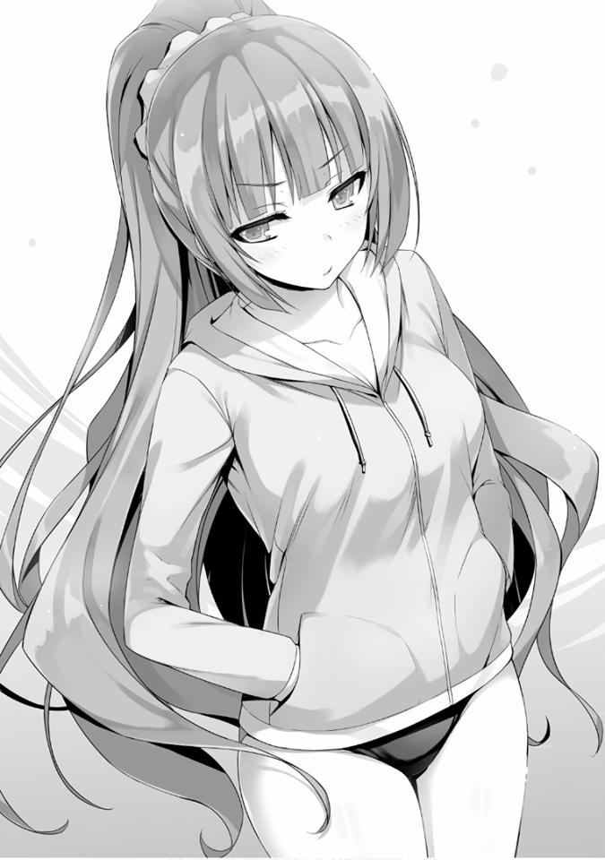
En ese caso, al menos podría nadar.
— ¿Qué hay de nadar? No hay nadie aquí excepto los socorristas y están ocupados limpiando.
Probablemente sea consciente de la aglomeración, por lo que no me culparía por ello inmediatamente.
— Estoy bien...
— Vamos.
— Como dije... ¡estoy bien!
— Estarás bien aunque te vean con ese traje de baño.
— Ese no es el problema, ¿por qué tengo que mostrarte mi traje de baño...?
Parece que ese era su problema. En ese caso, ¿debería usar un método más contundente para hacerla nadar?
— Es una orden.
Una vez que esas palabras salieron, ella me miró duramente.
— ¡Realmente eres de lo peor, te odio!
— Tú decides si obedecer o no, ¿cuál será?
— ......Bien.
En contra de su voluntad siguió mi enérgica orden. Sus labios hacían pucheros de insatisfacción.
Se quitó su rashguard y lo dejó en una silla. Miré su apariencia en traje de baño.
Estaba parada de espaldas a mí, sin intención de darse la vuelta.
— Tal vez tendré que usar este traje de baño por el resto de mi vida...
No podía usar de otros tipos incluso si le gustaban. Su cicatriz llamaría la atención y temía que le preguntaran al respecto. Me acerqué a ella y la agarré por el brazo.
— ¡W-wa, espera!
Luego la acerqué a la piscina y la empujé al agua.
¡Splash!
El agua salpicó. Un salvavidas escuchó el chapoteo y vino hacia nosotros con un megáfono en la mano.
— ¡Estamos cerrando! ¡Por favor sal ahora!
— ¡Puhaa! ¿Qué estás haciendo?
Cuando salió a relucir la cara enojada de una chica, le di la mano.
— ¿Te divertiste?
— ¿Crees que ser arrojada al agua es divertido?
Agarró mi mano sin dudarlo. Entonces me empujó hacia ella, en otras palabras, hacia el agua.
No me resistí, solo dejé que me tirara hacia abajo. Aun así, me aseguré de no chocar con ella mientras caía. Un chapoteo más grande sería suficiente para enfurecer a los socorristas aún más.
Viendo a los salvavidas entrar corriendo, Karuizawa se rió. Luego me vio salir a la superficie y me empujó hacia abajo, hundiéndome en el agua otra vez. Creo que fue muy infantil, incluso para mí, pero ver su cara sonriente por un momento me hizo pensar que valía la pena.
*****
Los demás deben haber sentido lo mismo, ya que en nuestro camino de regreso de la piscina iluminada por el crepúsculo, una de las amigas de Ichinose dijo reservadamente:
— Oye, Honami-chan, estoy pensando que tengo ganas de un helado, ¿qué te parece?
— Así es, creo que también quiero un poco.
Aunque diría que estábamos refrescados, todavía había un calor abrazador.
— Si están de acuerdo, ¿por qué no nos desviamos un poco antes de volver?
Al ver una tienda de conveniencia cercana, ella dijo eso. Quizás todos tenían la misma idea, ya que no hubo objeciones.
Cuando entramos juntos a la tienda, todos los miembros del grupo corrieron hacia donde estaban los helados. Horikita entró, dudando en tomar una bebida, pero llevada por la corriente, parece que ahora quiere un helado.
— ¡Voy a tomar esto! ¡El Ultra Choco Monaka!
Ike extendió sus manos y tomó un helado que era 3 veces el tamaño estándar.
El precio era casi 4 veces el precio estándar.
Siento que era un desperdicio, pero si la persona en cuestión está satisfecha con eso, está bien.
Sudou y Yamauchi eligieron tomar un kakigori, mientras que Ichinose eligió un caramelo helado. Incluso en un lugar así, me pareció interesante que cada una de sus idiosincrasias saltaba a la vista. Detrás de mi espalda, Sakura estaba mirando vacilante.
— ¿Qué vas a hacer?
— Umm, ¿q-qué debería hacer?
Se movía nerviosa, pero es natural que no pueda responder.
Debido a que desde una pequeña distancia, Sakura estaba ansiosamente parada de puntillas mirando el refrigerador para ver su contenido. Es solo que desde mi punto de vista no sé si puede ver o no. Ike y los otros, a una pequeña distancia, estiraban ligeramente sus espaldas.
— Vámonos.
— O-ok.
Ya que parece estar teniendo dificultades para comprar su helado, la seguí para elegir juntos. Sakura parece confundida y sus manos tiemblan.
— Me pregunto qué debería hacer...
— ¿No te gusta el helado? —le pregunté.
— No, me gustan todos. Creo que he comido todos los que hay aquí —dijo mientras señalaba hacia la mitad derecha de la caja.
Mientras lo hacíamos, Horikita, que también se había quedado atrás, eligió su helado y fue al mostrador.
— Apúrate... te quedarás atrás.
Habiendo pagado, Ike dice eso en broma.
Al escucharlo, Sakura se puso más nerviosa y apresuró más sus movimientos.
— Umm, ummmm... lo siento... soy, en un momento como este, soy del tipo que me tomo mi tiempo para elegir...
— No hay necesidad de asustarse. Está bromeando. Yo tampoco he elegido todavía.
— Ayanokouji-kun, ¿qué vas escoger...?
— ¿Yo?
Quitando mi atención de Sakura por un momento, eché un vistazo al contenido del refrigerador. Honestamente, todo lo que pude ver fue que la mayoría se ven idénticos.
— Tomaré esto, supongo.
Mientras le respondía, lo que tomé en mis manos era una crema suave estándar.
La que tenía leche alrededor una y otra vez. También había unos con chocolate mezclado con ellos, pero vamos a dejarlos para la próxima vez.
— E-Entonces, tomaré uno de esos también, es delicioso —dijo Sakura.
Siento que la obligué a tomar esa decisión, pero si Sakura está satisfecha con eso, entonces supongo que todo está bien.
Después de hacer nuestra compra y salir, junto con todos los demás nos reunimos en el espacio abierto de la tienda de conveniencia y comenzamos a comer.
Al abrir la taza y llevarme la suave crema a la boca, sentí que la leche se derretía y extendía dentro de mí.
— Esto es delicioso...
La dulzura y el frío que podrían terminar siendo un mal hábito se filtraron a través de mi cuerpo. Honestamente, esto es revolucionario. Nunca supe que el helado era algo tan delicioso.
Es solo que comer demasiado parece que es malo para tu cuerpo, aunque...
— Seguro que lo estás comiendo como si fuera delicioso. Es casi como si lo estuvieras comiendo por primera vez en tu vida.
— Estoy seguro de que cualquiera encontraría esto delicioso. Si está en este calor infernal.
De hecho, eso sería obvio si nos fijamos en la figura de quien lo está comiendo de esta manera tan pacífica.
— Supongo... Es solo que te lo estás comiendo como si fuera tan delicioso.
Es la primera vez que veo una expresión como esa.
— Es porque es como un muñeco. Nunca cambia sus expresiones.
Recibí esa queja de alguien que yo, que es como una muñeca. Realmente no puedo aceptar eso.
Sin embargo, sus opiniones son las mismas, Horikita e Ichinose estaban charlando felizmente. Su tema cambió de mí al segundo semestre que está por llegar.
— Oye, Ichinose, está bien hablar y todo pero tu helado se está deshaciendo.
— ¡Wawa, es verdad!
Era solo cuestión de tiempo antes de que su caramelo helado se derritiera con este calor. Presa del pánico, Ichinose lamió rápidamente el líquido que goteaba y se metió lo que quedaba en la boca.
— Hahiharooshiherekurehe.
¿Está expresando su gratitud mientras murmura? Estaba diciendo algo así.
Parecía delicioso incluso cuando el hielo goteaba sobre el asfalto y dejaba manchas sobre él.
*****
— Sí. Fue divertido poder hablar con Horikita-san y Sakura-san. Divirtámonos juntas de nuevo.
Las chicas de la Clase B parecían haber pasado el último día de las vacaciones satisfactoriamente ya que nos dieron las gracias.
Sakura, también parecía haberse abierto un poco ya que mostró una pequeña sonrisa.
Por otro lado, Ike y Yamauchi, así como Sudou, parecían inquietos ya que después despedirse entraron al ascensor.
— Ayanokouji, iremos a tu habitación más tarde.
Dejando atrás esa frase tan innecesaria, se fueron.
— Me pregunto qué pasó, aunque obtuve una impresión más alegre de ellos.
— Hoy parecían especialmente extraños. Parece que alguien sabe de lo que se trata.
Miraron hacia mí, pero insistí en no hacer ningún comentario al respecto. Tengo varios motivos para eso.
— Entonces, te veré de nuevo en la escuela, Ayanokouji-kun.
— Nos vemos mañana...
También se fueron Kushida y Sakura, solo Horikita y yo quedamos en el lobby.
Pensé que solo se había quedado atrás para evitar a Kushida, pero incluso cuando llegó otro ascensor no hizo ningún movimiento para subir.
— ¿No vas a regresar?
— ¿Y tú? Si estás bien con eso, ¿por qué no damos un pequeño paseo?
— Supongo que sí.
Cuando salí del vestíbulo con Horikita una vez más, mientras miraba hacia el cielo teñido por el color del atardecer, caminamos a lo largo de un camino bordeado de árboles.
— Me divertí hoy. Ocasionalmente, puede que no sea tan malo tener unas vacaciones así —dijo.
Es decir, como ella misma lo admite, es una declaración sorprendente.
Horikita habla despacio mientras su cabello, que no se ha secado del todo, revolotea.
— A partir de mañana, comienza el segundo semestre. Sin duda, nos espera una batalla más dura que la del primero.
— Supongo que sí.
La escuela normalmente debería dar a los estudiantes recién matriculados pruebas simples, fáciles de entender.
Sin embargo, la prueba de supervivencia en la isla deshabitada, o engañarnos unos a otros en el crucero. Siguen repitiendo pruebas muy lejanas a lo normal para estudiantes de preparatoria. No hay forma de saber cuántas dificultades nos esperan a partir de ahora.
— He estado pensando varias cosas durante las vacaciones de verano. Las cosas que he hecho, las cosas que fui capaz de hacer.
— ¿Y qué puedes decir de eso? —le pregunté.
— Es un secreto... incluso si te lo dijera, solo te reirás de mí.
Quizás había algo que creía que era vergonzoso, pero diciendo eso, ella esquivó la pregunta.
LAS VACACIONES DE VERANO DE IKE KANJI, YAMAUCHI HARUKI Y
SUDOU KEN
Esto es concerniente a la diferencia entre géneros, pero hablando como hombre,
¿dónde está nuestro objetivo final?
Si pides la opinión de hombres en todo el mundo, probablemente veas surgir el verdadero propósito de la vida de un hombre.
En otras palabras, tener un ser amado, dejar descendencia y prepararlos para la próxima generación. Esa conclusión debe ser.
Sin embargo, en los últimos años, se ha atestado de factores de diversión.
Desde parques de atracciones y películas hasta juegos sociales y juegos virtuales. El entretenimiento destinado a permitir que una persona se divierta ha progresado rápidamente.
Pero mirándolo desde la perspectiva de la larga historia de la humanidad, esto todavía es muy superficial.
Mejorar la calidad de vida de la descendencia es algo que casi todas las criaturas vivientes han llevado a cabo desde la antigüedad.
Sin embargo, los chicos que acaban de llegar a la preparatoria, no pueden aspirar a algo como la prosperidad de su descendencia. Simplemente buscan el placer y la gratificación sexual que tienen frente a ellos.
— ... Ahora, me gustaría llevar a cabo una reunión estratégica con respecto a la Operación Delta.
Atacado por un intenso calor, Ike, de la clase D, estaba sentado en una posición seiza poco elegante y con los puños cerrados sobre sus rodillas.
Mientras se limpiaba el sudor que se había formado en su frente con su puño, su frente pegajosa brillaba.
— Esta vez, estoy pensando apostar toda mi juventud de este verano en la Operación Delta. ¿Y tú, Haruki?
— Siento lo mismo, Kanji. Si esta operación tiene éxito, ¡ni siquiera me importaría morir!
Ante esa determinación por la cual incluso sacrificaría su vida sin dudarlo, Sudou, que había estado mirando hasta ahora, lo aprobó.
— Para ser sincero, estoy en contra. Decidiré si me uno o no después de escucharlo.
Aunque estos tres difieren en su forma de pensar, el objetivo que buscan es el mismo.
Parece que están pensando con optimismo. Quizás porque todos estábamos sudando, pero podía sentir que el ambiente en la habitación se hacía aún más húmedo.
— Así que Ayanokouji... obviamente también estás dentro, ¿verdad?
— Antes de eso, ¿está bien si enciendo el aire acondicionado?
Nada bueno sucederá si esta habitación huele más a sudor.
— ... Supongo que sí. Hace calor.
Si ese es el caso, me hubiera gustado tener el aire acondicionado encendido desde el principio. Para empezar, es incómodo para mí, ya que están en mi habitación.
— Siempre, todo el tiempo, ¿por qué siempre es en mi habitación?
— ¿No te lo dije antes? Es porque tu habitación es la más ordenada. Las otras habitaciones tienen pañuelos de papel y pelos rizados desparramados y todo está sucio. En la de Yamauchi, ni siquiera hay espacio suficiente para poner un pie.
— La habitación de Sudou está igual también, ¿verdad? Ropa y ropa interior esparcidas por todos lados.
No me importa de quién sea la habitación desordenada, si ese es el caso, me gustaría que pensaran en limpiarla.
— No importa cuánto tiempo haya pasado, este cuarto no tiene sensación de vida. Desde que te inscribiste nada ha cambiado. Nuestros puntos llegarán pronto, así que ¿qué tal si te compras algo?
— Entonces, una alfombra sería lo siguiente, ya sabes, una alfombra. Me duele el culo.
Sudou dijo algo similar a lo que había dicho en el pasado mientras golpeaba el piso.
— Es porque no puedo darme el lujo de gastar puntos.
Mientras lo manejaba convenientemente, por alguna razón, Sudou se opuso tenazmente a mí.
— En la prueba de la isla deshabitada, obtuvimos esos puntos gracias a Suzune. Realmente es algo fuera de lugar que alguien tan inútil como tú ahorre esos puntos —me dijo Sudou.
— Cierto, cierto. De hecho, como Horikita está con nosotros, ¿no es solo cuestión de tiempo que lleguemos a la Clase C?
A partir de la situación desesperada de mayo, hemos dado un giro completo y estamos persiguiendo a las clases más altas en términos de puntos.
— Vamos, pensemos en las cosas difíciles cuando comience el segundo semestre. Ahora mismo, es la Operación Delta.
— ¿Hablas en serio?
— Realmente lo digo en serio. Quiero decir, nuestra juventud está allí, ¿no?
¿O están diciendo que están en contra de la Operación Delta, la cual es nuestro objetivo supremo?
En este momento, los 3 Idiotas se han reunido en mi habitación y están discutiendo acaloradamente la Operación Delta. La causa de eso es cierto plan que se discutió durante la conversación de la noche anterior.
— Eres libre de nombrar el plan como quieras, como Delta, pero básicamente es solo espiar ¿verdad?
Es cierto.
Este plan llamado Delta tiene un nombre digno de respeto, pero el contenido se trata de mirar a escondidas. Era una cosa realmente sin sentido nacida de la lujuria de los hombres que desean ver a las chicas desnudas.
Pero nadie más que Ike conoce los detalles.
— Mirar el cuerpo desnudo de una chica... ¿qué tiene de malo? ¡Esa es la juventud!
No se trata de que esté bien o no, es un crimen, uno terrorífico.
Sin embargo, este hombre atrevido se volvió desafiante. Usando la palabra juventud. Si lo descubren espiando, no sería extraño si lo reportaran como al Chico A. (No sé si es referencia a la película Boy A)
— ¿Qué planeas hacer si las chicas se enteran? No terminará solo con que se enojen, ¿sabes?
Todavía no conocemos el método para espiar, pero no hay ninguna duda de que conlleva riesgos. Intento hacer lo que puedo para desalentarlos.
Parece que Sudou también se ha dado cuenta de esto mientras les hace la misma pregunta a Ike y Yamauchi que intentan continuar imprudentemente.
— Tal como dijo Ayanokouji, es peligroso. No es como cambiarse de ropa de gimnasia en la primaria o echar un vistazo al baño de una antigua posada durante una excursión de la secundaria.
— No te preocupes. No hay puntos ciegos en la idea de Ike Kanji-sama, quien es llamado la supercomputadora.
Cuando se puso de pie, Ike comenzó a explicar triunfalmente las bases de su confianza.
— ¿Dónde y cómo vamos a espiar, ustedes sienten curiosidad por eso? Está bien, lo he pensado bien. Por eso, en primer lugar, cálmense y por favor escuchen lo que tengo que decir. Primeramente, seleccionaremos cuidadosamente a nuestro objetivo. Aunque es nuestra única posibilidad, sería un desperdicio si terminamos mirando a alguien fea. Naturalmente, elegiremos entre las chicas de la Clase D. Al ver el cuerpo desnudo de una
linda chica de la que normalmente estás cerca, puedes sentir la máxima excitación.
— Por supuesto, también estoy de acuerdo contigo, pero no hemos activado esas banderas para Mufufu, ¿sabes? (Nota: Mufufu es una onomatopeya de un hombre riendo con connotación amorosa y/o sexual)
— Si no las tenemos, podemos simplemente hacerlas nosotros. Las banderas son algo que tenemos que activar nosotros mismos.
Usando su dedo índice para operar su teléfono, Ike apuntó con su pantalla hacia nosotros.
— ¿No han olvidado algo? ¡Que desde ayer, el gran evento llamado liberación de la piscina ha quedado desbloqueado!
— Oh, ¡ooooohh! De hecho, si es así, ¡podemos echar un vistazo!...
¿Podemos? Nunca he ido allí antes, a la piscina de la escuela.
Mientras miraba hacia las letras escritas en el teléfono, pude ver el asunto relacionado con la liberación de la piscina escrito allí.
Solo durante los últimos 3 días de las vacaciones de verano, se puede usar la instalación especial de natación utilizada por el club. Parece que durante esos 3
días, de 9 a. m. A 5 p. m., la piscina estará abierta.
De hecho, si es ese lugar, hombres y mujeres por igual, si van a nadar, todos deben desnudarse al menos una vez, pero.....
— Puedo entender por qué las invitarías a la piscina para echarles un vistazo, pero no creo que sea suficiente para verlas.
Expresé mi opinión francamente.
Nunca antes he ingresado a la instalación especial de natación, pero es un hecho que debe haber cámaras de vigilancia instaladas allí.
Naturalmente, no habrá cámaras de vigilancia dentro de los vestuarios, pero no sería sorprendente si hubiera en el pasillo justo fuera de ellos.
Si un hombre sospechoso se acerca al vestuario de las chicas, inevitablemente será descubierto de inmediato.
Ike, cuyos brazos estaban cruzados, tenía una expresión seria que no titubeaba.
Por otro lado, lleno anticipación, Yamauchi parecía haberse puesto ansioso.
— Esto me entristece. ¿Realmente me tomas por un tonto que ni siquiera pensó en eso? En cuanto a mí, hice los preparativos preliminares quién sabe cuántos días antes para este anhelado día, te lo digo.
En respuesta a mis preguntas críticas, Ike permaneció imperturbable. En lugar de estar perturbado, de hecho, parece tranquilo.
— ¿Arreglos preliminares? Entonces dime el importantísimo método para espiar.
Yamauchi interrumpió y le preguntó eso, ya no pudo soportar a un Ike que se daba aires de grandeza.
— ¿Quieres un adelanto? Bien, mira esto.
— Si es esto, debe ser del tamaño adecuado para entrar por la ventilación.
Después de eso, solo tenemos que usar la cámara instalada en el auto a control remoto y hacerlo avanzar a través de la ventilación mientras la revisamos. Además, ¡puedes guardar imágenes en la tarjeta de la unidad principal del auto!
El plan que Ike pensó tenía una profunda oscuridad y estaba impregnado de lujuria....... Me pregunto qué cosa tan terrorífica se le ocurrirá a este hombre.
Esto es algo completamente criminal. Gracias. Si es esto, incluso Yamauchi lo rechazará---
— ¡Oh! ¡Esto es increíble! ¡Si es esto, es perfecto! ¿Verdad, Ken?
Entonces lo aprueba... y con increíble agrado, todo lo que pudo hacer fue interponerse.
— Supongo que sí... ¿no se siente como algo sacado de un drama?
— ¿¡Cómo es eso!?? Es perfecto, ¿no?
De hecho, si es con esto, existe la posibilidad de llegar al destino sin ser descubierto, pero... aun así, los preparativos son muy meticulosos. Por lo tanto, tengo una hipótesis.
— ¿Podría ser que, esto de espiar, algún Profesor también está tomando parte?
Apenas puedo creer que sea un plan que Ike pensó él solo. Un automóvil a control remoto, no es algo que se compre fácilmente.
— ¡¿Cómo lo supiste?!
¿Cómo? desde la meticulosa planificación hasta la existencia del auto, nada de eso es típico de Ike. Y además, la ubicación de las cámaras de vigilancia y la ruta de ventilación, requiere de una persona conocedora para que lo averigüe.
— Mierda, si lo has descubierto, no puedo evitarlo. Así es, le pregunté al profesor. Maldita sea, después de todos los problemas que tuve para hacerles pensar que lo había planeado todo.
— Entonces, ¿cuál es el plan detallado para ese día?
Como pensé, parece haber tomado el conocimiento del profesor. Justo cuando lo había dicho, Ike comenzó a explicar.
— Antes que nada, invitaremos a las chicas a las que queremos echarle un vistazo a la piscina mañana. Y luego, todos entraremos al mismo tiempo al el vestuario, ¿no? Una vez que ingresemos, nos apresuraremos de inmediato a la ventilación en la parte posterior. Si hay alguien ahí, entonces Sudou los amenaza si es necesario y logra que se muevan. Y
después de eso, sacamos las toallas como si fuéramos a cambiarnos y formamos una pared humana alrededor de la ventilación para que nadie vea. Entonces, rápidamente levanto la escotilla e introduzco el auto. Lo operaré de manera que nadie me vea, ustedes chicos, por favor escóndanme. Después de eso, operamos el auto y lo paramos justo frente al vestuario de las chicas y comenzamos a grabar. Una vez que hayamos decidido que han terminado de cambiarse, lo retiramos.
La explicación fue más o menos simple y, por lo tanto, fácil de entender. Pero había algunos lugares al azar que no pude pasar por alto.
— Amenazo a los que estén en nuestro camino y los alejo, o me aseguro de que los demás no se acerquen, ¿verdad?
Podría decirse que es un papel apropiado para Sudou.
Como saben que es agresivo, los otros estudiantes no se acercarán descuidadamente.
— ¿La entiendes? La brillantez de la Operación Delta.
— P-Pero ¿sabes, Kanji? Este es un crimen en toda regla... ¿cómo debería decirlo? Es como si el peso del pecado fuera mayor que el beneficio de espiar........
— De hecho, esto es un crimen. Estrictamente hablando. Pero si miran en su pasado. Deben haber cometido un crimen similar, ¿saben?
— ¿Ahh? ¿Qué se supone que significa eso? ¿Nunca he cometido un crimen?
— Entonces te preguntaré esto, Ken. Si usas la violencia para lastimar a una persona, es un crimen, ¿verdad? Si un adulto golpea a alguien, estará en las noticias de televisión, ¿no? Estás usando la violencia.
— Eso... pelear y violencia son diferentes, ¿verdad?
— Desafortunadamente, nunca he usado la violencia.
— Entonces Haruki, en la primaria, ¿no lamiste la flauta de la chica que te gustaba o le olisqueaste la ropa de gimnasia? ¿No hiciste ese tipo de cosas?
— Uuuuu......
No sé si eso dio en el clavo o no, pero Yamauchi parece recordar algo así.
— Si un adulto hace lo mismo, es un crimen.
— C-Ciertamente.
— En otras palabras, tanto espiar como filmar, mientras seas menor de edad, será perdonado. Si no lo hacemos ahora, ¿cuándo?
Ese entusiasmo, sin duda, golpeó los corazones de Yamauchi y Sudou. Parece que tenía suficiente determinación para hacer que esos dos, que se habían sentido culpables por este acto criminal, reafirmaran también su determinación.
— ¿Lo vas a hacer, Haruki? Que pase lo que pase.
— T-Tienes razón. De acuerdo, estoy dentro.
— ¿Están realmente bien con esto? Es un crimen.
No importa cuánto lo endulces, un crimen sigue siendo un crimen.
— Lo he estado diciendo por un tiempo, Ayanokouji. Lamer una flauta es un crimen y espiar a alguien que se está cambiando también es un crimen. De ser así, filmar eso también sería un acto delictivo. Pero ya sabes, esta es la juventud. Chicos mirando furtivamente a las chicas mientras se cambian, no te arrestarán por eso, a lo sumo una advertencia. ¡Eso es lo que quiero decir!
— Bueno, no es que no esté convencido o algo por el estilo. No importa que tan avanzado se vuelva el mundo, muchachos alrededor del mundo más o menos se vuelven adultos a través de estas experiencias. Robar en las tiendas en la primaria y robar en las tiendas en la preparatoria, ambos pecados tienen el mismo peso.
Esto ya no se trata de ver a las chicas cambiarse, simplemente está tratando de justificar sus acciones a la fuerza.
— Rendirse involuntariamente, digamos que seguimos el ritmo de esta era de alta tecnología, filmar también es espiar. Pero ¿sabes?, si esto se descubre, incluso si no te arrestan, es suficiente para que te expulsen.
— Tengo miedo de la expulsión, ¡al demonio, voy a espiar!
“¡Ohh---!” Sudou y Yamauchi levantaron sus brazos.
— Solo que quedas tú, Ayanokouji. Hemos llegado hasta aquí, obviamente vas a ayudar, ¿verdad?
— ....... No puedo negar mi interés.
— Es por eso que necesitamos tu ayuda. Si ustedes tres bloquean la vista, definitivamente no seremos descubiertos.
Sus ojos son serios.
Incluso si retrocedo aquí, está decidido a llevarlo a cabo.
— Entiendo. Ayudaré, pero prométeme una cosa, Ike. Este plan conlleva un gran riesgo. Si somos descubiertos, no terminará fácilmente. Es por eso que, tengamos éxito o no, por favor prométeme esta es la única vez que harás algo como esto. Si no, no ayudaré, y dependiendo del caso, informaré a la escuela.
Hablé mientras mezclaba palabras estrictas con palabras amables.
Al hacerlo, pretendo obtener un compromiso de Ike. Si solo me opongo, existe la posibilidad de que Ike y los demás simplemente se callen y cometan un acto criminal.
Es por eso que, para prestar mi ayuda, puse la condición de que esta sea la única vez. Sin embargo, no hay duda de que si somos descubiertos, la Clase D
podría colapsar. Eso es algo que todos aquí deberían entender.
— Te estoy diciendo que lo entiendo. Yo también creo que no es bueno hacer algo como esto en varias ocasiones.
— Entonces está bien. Porque entiendo que apostarás tu juventud estudiantil para superar esto.
— Permítanme proponer algo. Si la piscina se abre a las 9 en punto, entonces llegar a esa hora es lo más acertado. Si estamos allí primero, tomar la parte trasera del vestuario es una cuestión sencilla.
— ¡Ya veo! ¡Vayamos con eso! ¡La juventud de un estudiante es espiar!
¡Hagámoslo!
Esta es una conversación que tuvo lugar el día anterior a la piscina, la historia completa detrás de la Operación Delta.
*****
Los chicos que seguían entrando uno tras otro charlaban con diversas emociones y no nos prestaban atención.
— Date prisa, Ike.
Mientras extendía su toalla y simulaba cambiarse, Sudou urgió a Ike, que estaba agachado frente a la ventilación.
Ike primero sacó el auto a control remoto y los controles que estaban envueltos en una toalla, luego retiró los seguros de metal unidos a la entrada de la ventilación del piso inferior. Activó rápidamente el auto y comenzó a operarlo.
La pequeña máquina equipada con una linterna avanzó, mientras transmitía la ruta al monitor.
— ¡Mierda! ¡Como era de esperarse, está oscuro!
Solo la luz de la linterna está iluminando el camino, la abertura de la ventilación está demasiado oscura y la visibilidad en el monitor empeoró.
Pero aun así, el auto avanzó poco a poco hacia una luz brillante que se vislumbraba adelante. Incluso si iba demasiado lejos, había barras para detener el automóvil, no había peligro de que cayera. Pero por las dudas, adelantamos el automóvil a baja velocidad.
— ¡Bien, un poco más allá y la visibilidad debería mejorar---!
El vestuario ahora se reflejaba en el monitor. Y aunque la calidad de la imagen era tosca, las siluetas de Horikita y las demás se podían ver en el monitor.
— ¡U-Uhyou!
Podría decirse que el plan de Ike (el Profesor) había tenido un éxito brillante.
En el monitor, las siluetas de las estudiantes de Clase D, así como de Ichinose, eran claramente desplegadas. En este momento, el auto debe grabar correctamente.
Si uno mira el monitor, puede ver cómo se cambian de ropa en tiempo real.
— Oh, muéstrame también, Kanji. No puedo ver bien.
— Idiota, muéstrame también.
Sudou y Yamauchi, insatisfechos, presionan a Ike para que les muestre el monitor también. Pero si continúan así, no hay forma de evitar sospechas de otros chicos. Decidí hacer uso de eso.
— Lo está grabando, así que ¿no es mejor no exagerar? Están a punto de levantar sospechas.
— Kuu, t-tienes razón. Por ahora, es mejor cambiarse... —chaqueando su lengua y frustrado, Yamauchi hizo una mueca.
Así es, incluso sin mirar por el monitor, se está grabando en la tarjeta que está instalada en el auto.
Resistiendo la tentación de retirar el auto, Ike lo soporta.
Empujando el control junto con su equipaje en el casillero, se concentró en cambiarse.
— Me pregunto c-cuántos minutos debo esperar,........
— Me gustaría mantenerlo allí durante al menos 20 minutos.
Es necesario evitar terminar demasiado rápido y ser incapaces de grabar la escena mientras se cambian, así como dejarlo demasiado tiempo y no poder recuperar el auto.
Además de eso, si demoramos en cambiarnos demasiado tiempo, puede generar problemas. Probablemente para estos muchachos, estos serán los 20
minutos más largos de sus vidas.
— Me adelantaré.
— E-Espera un momento, ¡Ayanokouji! ¿Nos estás traicionando? Si nos pides que te enseñemos después, ¡no te lo mostraremos!
— No es eso. Si pasan 20 minutos y no sale un solo chico, ellas sospecharán.
— Sí, supongo que es cierto... entonces hazlo bien, ¿entiendes?
— Lo sé.
Dejando atrás a estos 3 que estaban recuperando el auto a control remoto, me adelanté en dirección de la piscina.
*****
En el vestuario de las chicas, la visión ideal que los 3 Idiotas tanto deseaban se desarrollaba. No, de hecho, la cámara estaba capturando tanto el sonido como las imágenes.
— Esto es algo nuevo, ¿no?, usar la piscina de la escuela fuera de clases.
Mientras pone su bolso dentro del casillero, Kushida dice eso.
Ichinose, que se está cambiando a su lado, extendió rápidamente sus manos hacia su ropa.
— Así es---. Se siente como ir a una piscina pública a divertirse.
— Ichinose-san, tienes unas proporciones increíbles...
Suspirando como si fuera capaz de enamorarse, Kushida dijo eso.
Un poco tímida, Ichinose mira el cuerpo de Kushida y dice lo mismo convincentemente.
— Kushida-san, tú también, tu cuerpo está muy equilibrado, no creo que pierdas ante alguien como yo.
De hecho, en términos de tamaño de senos, Ichinose es más grande y en términos de forma tampoco pierde.
Por otro lado, Sakura, que tiene el mismo tamaño de busto que Ichinose si no es que más grande, ligeramente tomó su distancia de esas dos y comenzó a cambiarse.
Incluso entre las del mismo sexo, su sentido de vergüenza es fuerte. Y además, pensando que irá a la piscina después de esto, no se podía evitar si su cuerpo se vuelve pesado.
Sin embargo, a diferencia de las clases, su única salvación era que podía usar un rashguard que oculta por completo la parte superior de su cuerpo. Para alguien tímida como Sakura, ese elemento es realmente como un salvavidas.
— Ichinose-san, ¿podrías por favor no mirarme?
Al recibir una mirada apasionada como la de Ichinose, Horikita sintió una sensación de repulsión.
Dejó de cambiarse y tomó su distancia.
— No, perdón, perdón. Cómo debería decirlo, solo estaba pensando que la piel de Horikita-san es tan bonita y transparente que terminé mirándola.
Como chica, realmente terminé prestando atención a una chica linda.
¿Kikyo-chan también piensa eso?
— Sí, después de todo, Horikita-san es extremadamente linda...
— ...........
Horikita se cambia mientras suspira por las palabras de Kushida.
— Pero aun así, viniste con nosotros hoy. Pensé que no mostrabas tu cara en eventos como este.
— Sin duda, no estoy aquí porque quiera. Pero a veces, independientemente de mi voluntad, hay momentos en los que tengo que aceptarlo.
— Hmm, ¿Es así? Estás diciendo muchas cosas confusas, Horikita-san.
Naturalmente, no puede decirle los detalles a nadie más.
Ya que el hecho de que su brazo estuvo atascado dentro de una botella de agua y que no podía sacarlo era una desgracia que se llevaría a la tumba. El solo hecho de que Ayanokouji se enteró de esto fue un intenso pesar para ella.
¿Por qué entró en pánico en ese momento y terminó llamándolo? estaba reflexionando sobre eso.
— ¿Por qué no te cambias sin hablar conmigo?
Habiendo lidiado un poco con Horikita, Ichinose mira a su próximo objetivo.
Esa era la existencia de Sakura que estaba cambiándose sigilosamente en la parte posterior. Para Ichinose, quien atesora la idea de “Todos para uno y uno para todos”, su sentimiento de querer llevarse bien con todos por igual es fuerte.
Estaba pensando en llevarse bien incluso con Sakura, cuya existencia claramente flotaba por sí misma. A pesar de que Ichinose no conocía el estado interno de la Clase D, entendió que Sakura era una estudiante que debía ser tratada de forma gentil. Profundizar en su relación con ella estaba fuera de discusión, pero tampoco podía ignorarla por completo.
Tanto Kushida como Horikita, temiendo hacer algo desconsiderado, no hablaron con Sakura.
A primera vista, parece ser del tipo introvertido y maduro. Pero según el análisis de Ichinose, Sakura es del tipo tímido, pero hacia la gente con la que se llevara bien, tenía la sensación de que les abriría su corazón y hablaría con ellos.
Entonces pensó que si ese era el caso, debería existir la posibilidad de que ella también pudiera ser su amiga.
— Ha pasado un tiempo desde que me encontré contigo, Sakura-san, ¿no es así? Como las dos somos de diferentes clases, no podemos vernos tan a menudo---
— E-Es cierto.........
— Honami-chan conoce a Sakura-san, eso es un poco sorprendente.
Teniendo dudas con respecto a la relación de esas dos, Kushida pregunta de forma ligeramente reservada.
— Nos conocemos desde hace un tiempo. ¿Cierto---?
— S-sí........
Sintiéndose más rígida de lo esperado, Sakura dijo eso mientras evitaba el contacto visual. Hacia ese gesto tímido, Ichinose quería preguntar pero lo soportó.
— Pero aun así......
En una medida en que no se puede considerar grosero, Ichinose mira el cuerpo de Sakura.
Características lindas y un cuerpo esbelto pero bien proporcionado, y más que cualquier otra cosa, esos grandes pechos eran como los de una ídol que aparece en alguna página.
Terminó mirando ese cuerpo con una mirada similar a la de un hombre. Sakura es el tipo de chica que uno querría proteger, se siente como si pudiera convertirse en la chica más popular de todo el año escolar si fuera un poco más alegre.
— Hablando de eso Honami-chan, hoy Kanzaki-kun también está aquí pero,
¿podrías contarme sobre eso un poco más?
— ¿Nya? ¿Qué hay de Kanzaki-kun?
Ichinose, que estaba midiendo su distancia con Sakura, recibió esa conversación de Kushida y cambió de lugar su mirada.
Juzgando que esta era su oportunidad de escapar, Sakura se distanció ligeramente de Ichinose.
— Hay una chica en nuestra clase que está interesada en Kanzaki-kun,
¿sabes? Quería preguntar cómo están las cosas con respecto a ese tema.
— Guau, Kanzaki-kun es sorprendentemente popular. También hay una chica en nuestra clase que parece gustarle. Ahh, pero ahora ninguno de nosotros debería tener a nadie así, ¿verdad?
— Ya veo, luego le diré que considere llamarlo.
— Sí, sí. Kanzaki-kun también estará feliz con eso... probablemente.
— Probablemente, eh.
Ante esa respuesta titubeante, Kushida se ríe.
— Es bastante reticente, o cómo debería decirlo, es un hombre de pocas palabras. Eso en sí mismo está bien, pero le falta ser mucho más asertivo y no lo comprendo muy bien, ¿sabes?
Esa era su franca evaluación como compañera de clase.
— Así es, supongo. Parece que es difícil de entender.
Justo cuando estaban comenzando a hablar con entusiasmo, todas las demás ya estaban buscado sus trajes de baño a los que se suponía que debían cambiarse.
— Woah, tenemos que cambiarnos.
Ichinose rápidamente se quita la ropa. Fue un movimiento ágil que recuerda cómo se cambian los chicos.
Sus pechos se balancearon.
Incluso Horikita, que había estado tratando de no mostrar ningún interés, se quedó mirando por un momento.
Esas proporciones excepcionales con tal poder destructivo, mientras posea esas, podría dejar noqueados a la mayoría de los hombres.
Recientemente, nuestra dieta se había cambiado a una más occidental, pero aun así, era difícil imaginar que ese cuerpo sea el de alguien que también es una estudiante de primer año de preparatoria.
— ... Tú, esos pechos, ¿desde cuándo?
— ¿Ehhh? Cuándo, ¿te refieres a cuando se hicieron grandes? Supongo que fue alrededor de mi tercer año de secundaria. Simplemente siguieron creciendo ¿Por qué lo preguntas?
— No, ahora puedo entender. La razón por la que te sientes abrumada.
No es de ninguna manera definitivo, sin embargo, hay un momento en el que las chicas no pueden hacer frente a sus cambios. A veces, el desarrollo de los pechos es algo que uno puede no ser capaz de interpretar.
Ella respondió así. No se podía evitar, si ese rápido crecimiento ocurrió en menos de un año.
Horikita miró de reojo a Kushida solo una vez pero no hubo respuesta a esas palabras. Por supuesto, no es como si Kushida pensara algo con eso. Es solo que Kushida dijo esto de una manera simple y directa.
Esta vez no es para Horikita sino para la recién llegada.
— Hmm, ¿Karuizawa-san? Hola---, ustedes dos también vinieron aquí a divertirse.
Kushida, que siempre es sensible a las circunstancias de sus alrededores, se volteó para mirar a Karuizawa y las otras dos chicas que entraron al vestuario.
— Qué casualidad. También vinimos aquí a nadar.
— Heh......
Kushida no pudo ocultar su sorpresa. Era porque normalmente en las clases, Karuizawa nunca nadaba.
Karuizawa y las demás se dirigieron hacia el casillero en el otro extremo.
Kushida se sintió ansiosa por eso, sin embargo, continuó cambiándose.
— Uwa... realmente lo están haciendo. Son realmente unos pervertidos de mierda, todos ellos...
Encontró el auto a control remoto que se detuvo después de enredarse en los seguros de metal de la entrada de la ventilación cerca del suelo.
La lente reluciente estaba capturando el vestuario de las chicas desde un ángulo magnífico.
Normalmente, los seguros de metal podían ser retirados casi por cualquier persona, pero para quitarlos se requería un poco de esfuerzo y tiempo. Ya que estaba fijada en todas direcciones con un destornillador Phillips, uno tendría que quitar esos seguros primero.
Pero Karuizawa tocó los accesorios de metal y, al tirar de ellos fácilmente hacia atrás, los quitó.
No fue porque tuviera una fuerza sobrehumana ni porque fuera excelente en lo que respecta a sus habilidades con el destornillador. Era solo porque ayer, alguien había puesto un pie en el vestuario y había quitado los tornillos. Eso era porque el seguro de metal, incluso sin los tornillos, podía colocarse fácilmente en su lugar.
Karuizawa sostiene con sus manos el auto y lo levanta.
La lámpara al lado del monitor tenía un brillo ligeramente en rojo y se podía ver que estaba grabando. Entonces, usando la técnica que le enseñó Ayanokouji, sacó la tarjeta del auto a control remoto.
En ese momento, la grabación dejó de funcionar y si el proceso de grabación no se reanuda, la lámpara para grabar no funcionará.
Luego, insertando una nueva tarjeta sin datos en el auto, lo devolvió a la entrada de la ventilación.
— Y con esto está listo.
Después de eso, solo dejando pasar tiempo, el auto regresará.
— ...... Él es el único, que es decente........
Mientras sentía exasperación por la escoria masculina, pensó en el único que actuó para evitar que esto sucediera, Ayanokouji.
Si Ayanokouji hubiera sido cómplice al espiar, o hubiera fingido no ver nada, habrían visto sus cuerpos desnudos, tanto de las compañeras de clase como de las que no lo son y sin que siquiera lo supieran. Además de eso, permanecería en los datos para siempre.
— Kei-chan, ¿estás lista?
Diciendo eso desde atrás de Karuizawa estaba su compañera de clase Sonoda.
E Ishikura también miró a Karuizawa con una expresión incómoda.
— Ahh, sí, gracias. Estoy lista.
Dentro del vestuario donde las chicas de primer año están todas mezcladas, si mirara hacia la entrada de la ventilación sería descaradamente sospechoso. Al igual que Ike y los demás formaron una barricada, Karuizawa también usó a sus amigas cercanas para bloquear el campo de visión.
Naturalmente, dado que todos los casilleros cerca de la entrada de la ventilación se han marcado como “En uso”, no se olvidó de utilizar las llaves para bloquearlos todos y hacerlos inutilizables.
Usando los ojos de otros, Karuizawa, sin ponerse nerviosa, devolvió tranquilamente todas y cada una de esas llaves. Ella no explicó los detalles a sus amigas cercanas Sonoda e Ishikura.
Personas que, incluso sin una explicación, obedecerán ciegamente las instrucciones y les tiene confianza de que no revelaran nada... personas que no son de ninguna manera obstinadas, además de temer el aislamiento. Esas estudiantes fueron seleccionadas.
Habiéndose terminado de cambiar y confirmando que todas sus conocidas de la Clase D ya no están presentes, Karuizawa les dio las gracias a esas dos.
— Gracias por ayudarme hoy. Tengo algo que hacer después, ¿pero ustedes dos irán a divertirse aquí?
— Ahh, sí. Estábamos pensando en hacer eso, ¿verdad?
Los dos asienten. Con respecto a eso, Karuizawa no parecía tener ninguna intención de decir algo.
*****
— ¡Llegas tarde, Ayanokouji! ¡Date prisa y abre!
Sudou, a quien se le había agotado la paciencia, patea la puerta. Pero me gustaría que se detuviera porque molesta a la gente de las habitaciones vecinas y también llama la atención del administrador del dormitorio.
— ¡Date prisa, Ayanokouji!
Me obligaron a abrir la puerta de mi habitación, empujándome la espalda, un grupo de hombres que no pueden reprimir su excitación.
En las manos de Ike y los demás está la tarjeta que recuperaron del auto a control remoto. Y grabado en ella deberían estar las imágenes de las chicas cambiándose. Esos 3 estaban pensando eso.
Al ingresar a mi habitación, antes de que yo entrara, encendieron mi computadora sin permiso.
— S-Si es algo increíble, me dejarás copiarlo después, ¿verdad?...
— Muchachos, esperen un minuto. Antes que nada, tengo que confirmarlo, porque ustedes no tienen derecho a ver el cuerpo desnudo de Suzune.
— Cálmense, los dos. Aquí todos debemos llevarnos bien. Guhehehehe.
Parece que ya ni siquiera me están considerando, esperan con impaciencia a que la computadora se encienda.
Como fue un día agotador de varias maneras, me senté en mi cama como si nada.
— Si me la devuelven después de revisar el contenido, será de gran ayuda.
— ¿A qué te refieres, Ayanokouji? actuando tan maduro. También quieres ver
¿no?
— Si se van a arrepentir, creo que es el momento.
— Ahh, ya veo. Si vas a actuar como un buen chico, ni siquiera pienses en mirar ¿bien? Mejor dicho, no te lo mostraré.
De pie frente a la pantalla de la computadora, Ike extendió ambas manos como si estuviera bloqueándola.
— No hay un bastardo que no esté interesado en el cuerpo desnudo de una mujer. Se honesto.
Sudou, quien ya se estaba relajando como si fuera su propia casa, me dijo esas palabras, pero no siento la necesidad de ver el cuerpo desnudo de una chica tan desesperadamente. Por lo menos, no siento que valga la pena arriesgarse a la expulsión.
— ¿¡Nuwaa!? ¿Por qué? ¿Por qué no aparece nada?
Al leer la tarjeta que pensaban que había sido prestada por el profesor, no había ningún dato en el interior.
En otras palabras, la grabación del auto nunca funcionó.
— N-Nada. Los datos.......
— No puede ser cierto, ¿verdad? Q-Quiero decir, logramos grabarlo correctamente ¿verdad?
Los 3 entraron en pánico y abrieron la carpeta muchas veces, pero no había nada. Es obvio. La tarjeta que tenía los datos grabados fue retirada por Karuizawa y la reemplazó por una vacía.
No importa cuánto busquen, no encontrarán un archivo que no existe. Por otro lado, los datos reales ya se han destruido y, como tales, ya no existen.
— ¡¿Por qué no está aquíííííííííííííííííííí?!
Y así, la ambición de los 3 idiotas se extinguió debido al sabotaje interno.
PALABRAS DEL AUTOR
Han pasado unos 4 meses. Soy Kinugasa.
Recientemente, asistí en secreto a una fiesta en la que se reunieron personas de la industria de los videojuegos. Allí conocí al presidente de cierta corporación y me dijo: “¡Desde que era estudiante, he jugado los juegos de Kinugasa-san!” y cuando lo hizo, sentí el paso del tiempo y me sorprendió... Sí, es mejor no profundizar demasiado en eso........
En cualquier caso, esta vez la historia es una que describe los eventos durante las vacaciones de verano que tuvieron lugar después del examen que ocurrió en el volumen 4. Partes sin diálogo, la introducción de nuevos personajes, por ejemplo. Y la historia también se ha convertido en un paso preliminar hacia la historia del volumen 5.
De nuevo, la alineación femenina que rodea a Ayanokouji se ha vuelto más amplia. Hay quienes aún no han logrado su desarrollar su relación, y en el futuro de entre ellas (o podría ser un personaje que se presentará en el futuro) tal vez llegará un día en que alguna se dirija en una dirección donde su relación con Ayanokouji vaya más allá de la amistad.
Además, desde el próximo volumen en adelante, por fin, los acontecimientos que involucran el pasado de Ayanokouji se contarán lentamente.
Aparecerá un nuevo rival, un nuevo examen especial y situaciones que cambian de manera más severa que antes.
Uno que busca la cima junto a compañeros de su clase. Uno que trata de ganar confiando solamente en su poder. Y alguien que intenta levantarse manipulando a otros. Tres personajes egocéntricos comenzarán a demostrar sus personalidades.
¡Y-----!
El tan esperado “Comicalize” de “Youkoso Jitsuryoku Shijou Shugi no Kyoushitsu e” finalmente ha lanzado su primer volumen. Es particularmente emocionante porque se lanzará simultáneamente con el volumen 4.5. Para propósitos de
lectura, disfrútalo y colecciónalo Por lo menos, puedes comprar 3 de esos volúmenes.
Estoy muy agradecido con el mangaka Ichino Yu-Yu-sama por dibujar brillantemente un trabajo problemático donde solo aparecen hombres.
En este momento, junto con Tomose, estoy molestándolo para saque y dibuje más chicas hermosas. Y usando ese resentimiento como la primavera, a partir de ahora, por favor continúa dibujando despreocupadamente personajes masculinos toscos y viejos (cara de escoria).
Humildemente solicito un “Youkoso Jitsuryoku Shijou Shugi o Kyoshitsu e lleno de hombres” junto con el volumen 4.5 y el Comicalize.
Y ahora, finalmente...... después de estas palabras, continuará una pequeña historia adicional. Ya incluí escenas de traje de baño en el volumen y proporcioné un gran fanservice en las páginas iniciales, ¡así que está bien!
¡Hacia ese reticente Kinugasa, el escalpelo de la ira editorial!
¿Cuál es la verdad detrás de las misteriosas acciones que Ayanokouji mostró en este volumen? ¿¡Y el plan aterrador de los 3 idiotas es claramente......!?
¡Las opiniones e impresiones con respecto a esta historia adicional dependen del personal editorial!
TRAJE DE BAÑO
HORIKITA SUZUNE
La espectacular piscina durante las vacaciones de verano. Muchos estudiantes vinieron a refrescarse.
El paisaje mostraba a casi todos los estudiantes jugando, pero había una chica....
Horikita Suzune, que estaba sobre la plataforma de salida, observaba perfectamente en línea recta a la meta, y saltó lentamente al agua azul. Esa fue una técnica demasiado bella, hasta el punto de que no escuché ningún sonido.
Observé la forma firme de nadar de Horikita.
Al parecer, está planeando regresar, ya que rápidamente se dio la vuelta en la línea de meta.
Estaba en el punto de partida, comprobando la hora mientras esperaba el regreso de Horikita.
Después de levantar la mano, Horikita levantó la cabeza del agua.
—¡Oye! Bien hecho.
— … —Horikita me miró y suspiró un poco. Después de eso, nadó lentamente hasta la escalera y la sujetó—. ¿Lo viste?
Me preguntó mientras subía la escalera.
—Más o menos. Eres la única que nadaría en serio en la piscina durante las vacaciones de verano.
La mayoría de los estudiantes estaban salpicando agua, jugando con una pelota o un flotador, pensando sólo en divertirse alegremente.
—No vine aquí sólo para jugar.
Me dijo, mirándome un poco enfadada.
—¿Qué estás haciendo? ¿Qué te he hecho?
—¿Quieres que te lo diga? Me amenazaste y me trajiste a la piscina.
—No uses la palabra amenaza, eso suena desagradable. Espero que puedas corregir eso.
—...Olvídalo. Después de todo, no hay muchas oportunidades para practicar natación, así que esto también es bueno.
Luce como si hubiera usado esta forma optimista de pensar para estabilizar sus emociones.
—Ya eres buena nadando. No deberías necesitar practicar.
Horikita ha logrado obtener excelentes calificaciones en natación y otras asignaturas deportivas. La escuela seguramente le ha dado una calificación máxima. Aun así, ¿por qué no está pensando en nada más que en aumentar sus habilidades?
—¿Cuál es tu objetivo?
Después de preguntarle, Horikita se quedó en silencio por un instante. Me miró fijamente un momento.
—No estás jugando, pero tampoco estás practicando. ¿Qué estás haciendo aquí?
Aunque me preguntes, es difícil responder.
En el momento en que los demás te preguntan “¿qué estás haciendo aquí?”
¿Cuál es la respuesta correcta a eso?
—Estoy observando a la humanidad. Con sólo mirarte, Horikita, ya no me aburro.
—...¿Puedes dejar de decir cosas nauseabundas?
Movió descaradamente la mirada y suspiró. Es sólo que ella ya debería saber que no estaba hablando en serio.
—Esto es sorprendentemente interesante. A pesar de que hay muchos estudiantes aquí, sólo tú te destacas.
Horikita, exudaba un aura de “No tengo amigos” mientras nadaba en la vasta piscina. No, es más exacto decir que estaba exudando un aura de “No necesito amigos”.
—¿Qué tal si tú también tratas de nadar un poco? Podría despejar tu mente.
—No uses la excusa de “despejar tu mente”, para insistir en el tema.
—De todos modos, ¿puedes hacerte a un lado? No puedo subir...
—Lo siento —dije mientras me alejaba un poco de la escalera.
Horikita subió por el costado de la piscina. Con la cabeza un poco inclinada, se limpió el agua de las orejas. En serio, si esta persona no hablara, sería una belleza.
—Ahora mismo estabas pensando en cosas innecesarias, ¿no?
—Estás imaginando cosas.
Lo dije para engañarla y la miré conscientemente.
—Ayanokouji-kun, me has preguntado antes cuál es mi objetivo, ¿verdad?
—¿Eh? Sí, ¿qué tiene de malo esa pregunta?
—... Porque ya no quiero experimentar otra vez sentimientos tristes que considero innecesarios.
Los verdaderos pensamientos de Horikita salieron en una fracción de segundo.
Esta es la prueba de que Horikita también se dio cuenta de sus puntos débiles.
—No te preocupes. No eres una persona que sea derrotada fácilmente.
—¿No es obvio? No necesito que me lo digas.
Horikita inmediatamente volvió a su esencia que ese instante de debilidad mostró, y pasó a mi lado.
Probablemente, la razón por la que presté atención a Horikita desde que me inscribí en esta escuela es--
TRAJE DE BAÑO
KUSHIDA KIKYO
Esa chica atraía la atención de todos.
—Kikyo-chan, como todavía no tienes novio, ¿qué te parece salir conmigo?
Un estudiante varón se acercó a la joven y le dijo unas dulces palabras.
Era exactamente como una escena de coquetear con alguien en la playa durante el verano.
—Jajaja, puede que no tenga novio todavía... pero no soy el tipo de persona que es tan popular.
Aunque respondió usando palabras socialmente educadas, la verdad es que es muy popular entre los chicos. No importa quiénes sean, ella siempre los trata con alegría y delicadeza. Esta es la especialidad de la chica llamada Kushida Kikyo.
—Lo siento, Ayanokouji-kun. Estas situaciones en las que me hablan ocurren a menudo.
Kushida me dijo esto con una sonrisa de amargura mientras se veía desconcertada.
Estaba pasando con esta persona popular, Kushida, el último día de las vacaciones de verano. Más precisamente, no éramos sólo dos personas, sino que el grupo incluía a Ike y Horikita y a los demás, que habían venido a divertirse a la piscina.
Fue justo cuando actué solo, que tuve la oportunidad de pasar tiempo a solas con Kushida. Se acercó a la esquina de la piscina y se sentó. Sólo introdujo sus pies en ella.
—Ayanokouji-kun, ¿también quieres hacer lo mismo?
—No, está bien.
—Pronto será el segundo semestre.
—...Sí.
Mi respuesta a esas típicas frases en las conversaciones fue muy corta, totalmente como la de alguien con malas habilidades sociales como yo.
Si mi vocabulario fuera más rico, entonces podría alegrar la atmósfera....
Entre las chicas que conozco en la escuela, no puedo deshacerme de mi nerviosismo con Kushida.
Kushida no solo odia a Horikita, sino que también me odia a mí.
A pesar de ello, sigo sin poder deshacerme de la sensación de nerviosismo.
Seguramente es tan simple como tratarla como a alguien del sexo opuesto.
En cuanto a si me gusta románticamente, no puedo negar que esta situación está a un paso de ese sentimiento.
Si ella se me confesara, sin duda aceptaría su confesión, aunque no es muy probable que ocurra.
—De hecho, Kushida, eres muy popular.
No tenía intención de decirlo, pero lo hice sin querer.
Aunque lo dije en voz baja, llegó a los oídos de Kushida. Me miró con una expresión increíble.
—No soy popular. Para nada.
—No, se te acaban de confesar hace un momento.
—No era una confesión, sino una especie de saludo.
Así que recientemente, los jóvenes se confiesan para saludar. Creo plenamente que nunca podré decir esas palabras con un rostro indiferente, hasta el día de mi muerte.
—Ayanokouji-kun, estás muy arriba en la clasificación secreta, se te deben haber confesado, ¿verdad?
—Nunca he tenido ningún indicio de eso.
¿Quién me ha clasificado tan alto? No puedo imaginarlo.
—Por ejemplo, como Horikita-san.
—¿Eh?
—No, estaba pensando si has recibido la confesión de Horikita-san.
Creo que le revelé una expresión increíble y difícil de entender que venía del fondo de mi corazón.
—Eso es imposible. Ya sea que ella se me confiese a mí, o que yo me le confiese a ella.
Lo negué rotundamente. ¿Por qué Kushida me preguntaría eso?
A veces, realmente no entiendo a esta chica Kushida.
Kushida inmediatamente detectó el cambio de atmósfera y dijo esto mientras agitaba un poco la cabeza.
—Olvida mis palabras previas. Lo siento.
—No es gran cosa.
No sabía por qué, pero no podía seguir mirando la cara de Kushida cuando hablaba con ella.
Hasta que el resto de mis amigos vinieron a hablar conmigo, Kushida y yo observamos silenciosamente la superficie ondulante de la piscina.
TRAJE DE BAÑO
ICHINOSE HONAMI
En el último día de las vacaciones de verano, vine a la piscina para divertirme.
Después de almorzar, estaba descansando a solas.
Estaba sentado en un sencillo banco situado en un rincón de la piscina, observando atentamente a los alumnos que continuaban nadando sin descansar.
—Si no te importa, ¿quieres nadar conmigo?
La líder de la clase B, Ichinose Honami, comenzó una conversación conmigo, quien estaba descansando allí.
—¿Hablaste conmigo porque me viste solo?
—Jajaja, no es así. Sólo me preocupé un poco.
Fue un honor que me lo dijera Ichinose, que es considerada linda (probablemente) en el campus.
Por supuesto, no podía decir estas palabras en voz alta, así que lo pensé en mi cabeza.
—No soy muy bueno nadando.
—¿En serio?
Después de responderle, Ichinose miró incrédula mi parte superior, y luego miró atentamente mis piernas.
—Parece que pudieras nadar muy rápido.
—Estás equivocada. Siempre soy uno de los más lentos de la clase.
Le dije eso porque era información que se podía obtener investigando un poco.
Ichinose, aunque ella no estaba de acuerdo, inmediatamente cambió el ambiente y estiró la parte baja de su espalda.
—Entonces no tienes que nadar. Primero, sólo entremos a la piscina.
—Oh, ok.
Ya que era una rara ocasión la de venir aquí una vez, por el momento estuve de acuerdo con esta idea. Normalmente no permitían entrar a la piscina con la camiseta puesta, pero hoy es un día especial. Hicimos el calentamiento de pie uno al lado del otro y después entramos en la piscina. La temperatura helada de la piscina se transmitía a través de mi piel.
—Ah, que cómodo.
Ichinose, que emergió inmediatamente, me hizo un gesto con una sonrisa en la cara.
Al momento siguiente me salpicó con el agua de la piscina.
—...Hey.
—¡Jajajajaja!
¿Fue porque me veía raro con el pelo mojado por el agua que ella me echó?
Ichinose me apuntó mientras se reía a carcajadas.
Después de eso, me salpicó con más agua que la vez anterior.
—¿Está bien que no ofrezcas resistencia?
—Tú-
Si te provocan así, también querrás contraatacar. Pero cuando me di cuenta de que los demás me miraban, me puse rígido.
—¿Qué pasó?
—Ah, nada...
Como debería decirlo, esto prácticamente parece una pareja de enamorados jugando en la piscina.
Aunque Ichinose y yo no tenemos ese tipo de relación, aquellos que nos vieron interactuar definitivamente pensarían así.
Una vez que reflexioné sobre ello, mi cuerpo se sintió pesado y no pude contraatacar.
—Es sólo que quiero hacer Rendición sin Sangre....
Usé un modismo como excusa. El significado de Rendición sin Sangre es literal.
Evitar una batalla sangrienta cuando se es atacado abriendo las puertas de la ciudad.
—Ya veo, pero es una pena, habrá sangre.
La Ichinose me salpicó con agua sin piedad. El agua entró en mis ojos y en mi nariz.
—Geh....
Descubrí que era inútil. Era agotador ser atacado.
Ichinose probablemente sintió que era excesivo que solo atacara ella. Se despertó un poco de sentimiento de culpa y se disculpó conmigo con una sonrisa. Después de eso, me dijo que iba a la parte central de la piscina, así que la seguí por detrás.
Mirando su espalda indefensa, no pude soportarlo, recogí mucha agua y la salpiqué con un solo golpe.
—¡Waaaa! ¡Eres tan astuto!
—Lo siento mucho, parece que realmente odio que me salpiquen con agua.
Pero ahora estamos a mano, así que no me guardes rencor, ¿está bien?
—Jaja, no voy a guardarte rencor. ¡Sólo te devolveré el golpe aún más fuerte!
Estoy seguro de que esta interacción ya es considerada por los demás como algo que hacen los novios, pero sólo que esta vez tengo la intención de no preocuparme por ello. Si Horikita viera esta escena suspiraría, y sin duda diría
“realmente eres un niño mimado”. Pero también quiero convertirme en un niño mimado de vez en cuando.
TRAJE DE BAÑO
SAKURA AIRI
Por la tarde, todavía más estudiantes se reunieron en la piscina, que estaba llena de gente por todas partes.
Aunque éramos un grupo de más de 10 personas, como estaba muy concurrido, inevitablemente había gente que se perdía. Así que nos separamos por un tiempo y planeamos reunirnos de nuevo una vez que el lugar no estuviera tan congestionado.
Creía que el momento era perfecto, así que para poder actuar solo, me alejé tranquilamente de Horikita y de los demás.
Sin embargo, cuando estaba listo para pasar el tiempo con tranquilidad, alguien me tiró del brazo.
—A-Ayanokouji-kun.
Cuando giré la cabeza para seguir el origen del sonido, Sakura estaba allí de pie mirándome preocupada.
—Hay mucha gente...
—Sí, vamos a la esquina.
Sakura y yo no somos buenos para hacer frente a grandes multitudes. Si era posible, no quería estar entre la multitud. Sakura también estuvo de acuerdo, así que después de obtener su consentimiento, empezamos a caminar hacia las ventanas de la instalación.
—¡Ah, espera, por favor, espera un momento! ...¡Puwa!
Después de escuchar un grito, me di la vuelta y vi a Sakura, que estaba a punto de ser tragada por la multitud.
Extendió desesperadamente su mano hacia mí, pero aún así parecía un poco recatada. Como parecía interesante, la observé por un momento. Aunque obviamente no me moví ni un paso, Sakura estaba cada vez más lejos de mí.
Creí que si seguía sin hacer nada, sería imposible encontrar a Sakura más tarde, así que me acerqué a ella y le agarré el brazo.
Si Sakura hubiera tenido su piel expuesta, su resistencia habría sido un poco más fuerte. Fue una suerte que llevara puesta una chaqueta.
— Gracias.
— Fue muy peligroso.
Para no separarme de Sakura, seguimos la pared.
—¿No vas a nadar?
—Yo paso. Y yo no soy buena nadando... y tú Ayanokouji-kun, ¿no vas a nadar?
Sentía lástima de quedarme con ella, que tenía un aspecto acobardado. Como había mucha gente, su desconfianza se hizo más fuerte de lo normal.
—Ya nado durante las clases.
—Pero....
—¿Te estoy causando problemas por quedarme contigo?
—¡No, no es en absoluto así! Estoy feliz, estoy muy feliz...
Decidí burlarme de Sakura por responder así.
Por supuesto, hice todo esto también por ella.
—Entonces iré a nadar un poco.
Le pedí a Sakura que se quitara la chaqueta. Aunque entráramos a la piscina con eso puesto, no nos regañarían, pero lo hice a propósito, para impedir que Sakura escapara.
—¿¡Eeeeh...!?
—Con tanta gente aquí, no llamaremos la atención. Después de todo, nuestra discreción sería más notoria.
—Eso es, ah, aunque es verdad...
Sakura también sabía que su presencia era inexistente.
—Pero estoy muy avergonzada...
—Nadie está mirando.
—A-Ayanokouji-kun está mirando...
Así que era eso.... esto es realmente extraño. Entonces dije mientras apartaba la mirada.
—Haré lo mejor que pueda para no mirarte, ¿está bien?
—Entiendo...
¿Ha reunido suficiente valor? Escuché sonidos de fricción de su chaqueta por detrás.
Porque no estaba mirando, el sonido se sentía muy real, seguía resonando en mi cabeza, haciendo que tuviera sentimientos extraños. Esto no está bien, esto no está bien - sacudí la cabeza para deshacerme de las preocupaciones.
—Ya está...
—Entonces.... vamos.
—¡Sí....!
No giré la cabeza y extendí la mano hacia atrás. Para no perdernos, Sakura, mostrando una ligera preocupación, me cogió de la mano.
Ante esta situación tan extraña, no pude evitar reírme un poco.
TRAJE DE BAÑO
KARUIZAWA KEI
—Oye, ¿qué es tan gracioso?
Por la tarde, Karuizawa dijo esto mientras miraba a los estudiantes que regresaban a los vestuarios. Estaba sentada cerca de la ventana, su cabello empapado, gotas de agua cayendo de su cabello al suelo.
La razón de esto era porque, hace un momento, empujé al agua a Karuizawa, que no estaba dispuesta a nadar en la piscina.
Se veía como si fuera a vomitar en cualquier momento mientras miraba a los estudiantes con desprecio.
—Tú.... Olvídalo, no es nada, pero si realmente tengo que decirlo, tú también eres parte de esa gente.
Se podría decir que Karuizawa era amiga de la mayoría de las mujeres de la clase. Los días entre semana y los fines de semana pasaba el tiempo reuniéndose con muchas amigas para divertirse en todas partes.
—Sólo la gente como yo que no puede estar en el centro de atención puede despreciar a grupos de gente como ellos.
—Oye, aunque podría ser así... —Karuizawa mostró algo de comprensión, pero no pudo aceptar mis palabras, así que siguió hablando—. Aunque creo que todos piensan de la misma manera, tienen una actitud negativa hacia las cosas que no pueden comprender. Es decir, lo que se llama su percepción interior, ¿tal vez? ¿Hay momentos en los que crees que “esta es absolutamente la verdad”, no?
Karuizawa dijo estas palabras, no porque quisiera presumir. Después de ver su actitud habitual, nunca pensé que diría unas palabras tan confiables, así que no pude evitar jadear de admiración ante eso.
—¿Qué, dije algo extraño?
—No.... Es sólo que tengo pensamientos similares.
Es sólo que nunca pensé que Karuizawa y yo tuviéramos pensamientos idénticos. Con su apariencia externa y sus acciones tan diferentes, su ser interior era muy confiable. Supongo que en este momento nadie aparte de Hirata sabe de esto.
No la miré, pero planteé un tema, que incluía su cicatriz.
—En realidad creo que tengo un método para resolver eso.
Usar un traje de baño no implica mostrar el abdomen. Aunque se requiere prestar mucha atención al cambiarse de ropa, eso no significa que no se pueda hacer. En caso de que alguien se burlara de Karuizawa, las circunstancias no serían las mismas, pero no creo que nadie se pelearía con ella mientras se cambia de ropa.
—No se trata sólo de ese asunto. Simplemente no me gusta nadar en un lugar público. Y mi cuerpo quedaría completamente expuesto si me pongo un traje de baño.
—¿Entonces es porque no tienes confianza en ti misma?
Mi declaración no fue malintencionada, pero probablemente la interpretó como si estuviera llena de malicia, así que me devolvió la pregunta.
—¿No lo sabes? Hoy en día, ni siquiera los alumnos de primaria usan trajes de baño escolares.
—¿De verdad?
— Porque ahora puedes usar cualquier tipo de traje de baño.
En otras palabras, así como los bloomers desaparecieron con el tiempo, también se quitaron los trajes de baño escolares.
—Después de todo, hasta la blusa de moda que llevo ahora está permitida.
Sin embargo, esto también mostró que había muchos elementos sospechosos.
—¿...Es porque querías ver mi traje de baño?
— No te hagas una idea equivocada. Estaba pensando si te habías divertido al máximo.
Después de que ella me lo dijera, de repente me di cuenta de que hablaba demasiado.
—Hmpf —Karuizawa fingió no escuchar esto y cambió su campo visual hacia mí—. Siento que, aunque no estoy muy segura, pero quizás sea bueno que pueda hablar contigo ahora mismo.
Parecía estar susurrándose a sí misma.
—No sólo Hirata-kun, ahora mismo tengo amigos a mi alrededor. Pero he estado escondiendo mi verdadera personalidad todo el tiempo, por eso, aunque también estoy desconcertada, pero cómo decirlo, me siento a gusto. Si fuera como de costumbre, nunca habría hecho esto, pero mi corazón no podía dejar de pensar que no sería malo intentar nadar un poco, es realmente inimaginable.
Aún así, Karuizawa no tenía intención de ponerse de pie, porque había una clara diferencia entre las “cosas que podía hacer” y las “cosas que no podía hacer”.
Karuizawa tenía una herida psicológica y una cicatriz física, ninguna de las cuales podía curarse fácilmente.
Puede ser que esté sobreestimando mis capacidades, pero si mi existencia puede traer alivio a esta persona, entonces como individuo, esto es algo por lo que vale la pena estar contento.


VISÍTANOS EN NUESTROS
DIFERENTES SITIOS
http://gladheimtranslations.blogspot.mx/
https://twitter.com/GladheimT
https://mastodon.social/@GladheimT
Si alguien desea hacer una donación
https://ko-fi.com/gladheimtranslation
https://www.buymeacoffee.com/gladheimtls
https://patreon.com/GladheimT